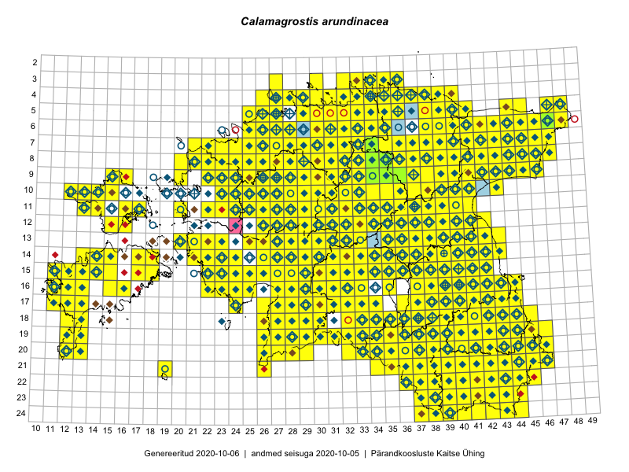

Calamagrostis arundinacea — metskastik
Poaceae :: Calamagrostis arundinacea (L.) Roth (2071); Calamagrostis sylvatica (Schrad.) DC. (6)

Kaart põhineb 3825 kirjel:
vaatlusi 1897
herbaareksemplare 180
PKÜ kirjeid1 175
ELFi kirjeid2 1570
LVA kirjeid3 3
Taime kaasaegsed ja ajaloolised leiukohad asuvad 483 ruudus.
Tingmärgid ja leidudega ruutude arvud periooditi uues (u) ja 2005 andmestikus (v)
| █ | vahemik | u4 | v5 |
|---|---|---|---|
| █ | 2006–2020 | 449 | – |
| ◆/◇ | 1971–2005 | 410 | 408 |
| ○ | 1921–1970 | 200 | 26 |
| + | kuni 1920 | 25 | 0 |
| × | hävinud | – | 0 |
| ? | kaheldav | – | 0 |
| Ruut | Leidja(d) | Leiuaeg | Kirje |
|---|---|---|---|
| 19-41 | Toomas Kukk, Kersti Tambets, Sten Mander, Kristine Fenske | 2020-09-30 | punkt: Calamagrostis arundinacea (L.) Roth |
| 20-40 | Toomas Kukk, Kersti Tambets, Sten Mander, Kristine Fenske | 2020-09-30 | ruut/ala: Calamagrostis arundinacea (L.) Roth |
| 21-43 | Toomas Kukk, Kersti Tambets, Sten Mander, Kristine Fenske | 2020-09-30 | ruut/ala: Calamagrostis arundinacea (L.) Roth |
| 06-34 | Meeli Mesipuu | 2020-09-24 | ruut/ala: Calamagrostis arundinacea (L.) Roth |
| 05-31 | Rein Kalamees | 2020-08-28 | ruut/ala: Calamagrostis arundinacea (L.) Roth |
| 19-29 | Meeli Mesipuu | 2020-08-28 | ruut/ala: Calamagrostis arundinacea (L.) Roth |
| 19-29 | Meeli Mesipuu | 2020-08-28 | ruut/ala: Calamagrostis arundinacea (L.) Roth |
| 06-35 | Toomas Kukk, Peedu Saar | 2020-08-27 | ruut/ala: Calamagrostis arundinacea (L.) Roth |
| 06-35 | Toomas Kukk | 2020-08-27 | PKÜ: 21011 |
| 06-34 | Peedu Saar | 2020-08-27 | ruut/ala: Calamagrostis arundinacea (L.) Roth |
| 04-37 | Peedu Saar | 2020-08-26 | PKÜ: 20909 |
| 11-28 | Ott Luuk | 2020-08-26 | ruut/ala: Calamagrostis arundinacea (L.) Roth |
| 10-36 | Peedu Saar | 2020-08-25 | ruut/ala: Calamagrostis arundinacea (L.) Roth |
| 10-32 | Ott Luuk | 2020-08-25 | PKÜ: 20583 |
| 11-31 | Ott Luuk | 2020-08-24 | ruut/ala: Calamagrostis arundinacea (L.) Roth |
| 10-29 | Ott Luuk | 2020-08-24 | ruut/ala: Calamagrostis arundinacea (L.) Roth |
| 14-15 | Mari Reitalu, Sirje Azarov | 2020-08-24 | ruut/ala: Calamagrostis arundinacea (L.) Roth |
| 18-33 | Ott Luuk, Jaak-Albert Metsoja | 2020-08-21 | ruut/ala: Calamagrostis arundinacea (L.) Roth |
| 11-38 | Peedu Saar | 2020-08-19 | ruut/ala: Calamagrostis arundinacea (L.) Roth |
| 19-36 | Meeli Mesipuu | 2020-08-19 | ruut/ala: Calamagrostis arundinacea (L.) Roth |
| 19-35 | Meeli Mesipuu | 2020-08-19 | ruut/ala: Calamagrostis arundinacea (L.) Roth |
| 08-43 | Toomas Kukk, Ott Luuk, Kersti Tambets, Sten Mander, Kristine Fenske | 2020-08-18 | ruut/ala: Calamagrostis arundinacea (L.) Roth |
| 17-31 | Toomas Kukk, Martin Tikk | 2020-08-12 | ruut/ala: Calamagrostis arundinacea (L.) Roth |
| 15-42 | Peedu Saar | 2020-08-08 | ruut/ala: Calamagrostis arundinacea (L.) Roth |
| 15-15 | Mari Reitalu, Sirje Azarov | 2020-08-07 | ruut/ala: Calamagrostis arundinacea (L.) Roth |
| 24-42 | Toomas Kukk, Eerik Leibak | 2020-08-06 | ruut/ala: Calamagrostis arundinacea (L.) Roth |
| 22-40 | Toomas Kukk, Eerik Leibak | 2020-08-06 | ruut/ala: Calamagrostis arundinacea (L.) Roth |
| 22-41 | Toomas Kukk, Eerik Leibak | 2020-08-05 | ruut/ala: Calamagrostis arundinacea (L.) Roth |
| 10-23 | Peedu Saar | 2020-08-05 | ruut/ala: Calamagrostis arundinacea (L.) Roth |
| 10-23 | Ott Luuk | 2020-08-05 | ruut/ala: Calamagrostis arundinacea (L.) Roth |
| 14-39 | Peedu Saar | 2020-08-03 | ruut/ala: Calamagrostis arundinacea (L.) Roth |
| 09-43 | Toomas Kukk | 2020-07-28 | ruut/ala: Calamagrostis arundinacea (L.) Roth |
| 08-43 | Peedu Saar | 2020-07-28 | ruut/ala: Calamagrostis arundinacea (L.) Roth |
| 13-38 | Peedu Saar | 2020-07-28 | ruut/ala: Calamagrostis arundinacea (L.) Roth |
| 08-42 | Peedu Saar | 2020-07-28 | PKÜ: 20495 |
| 09-42 | Peedu Saar | 2020-07-28 | PKÜ: 20526 |
| 14-14 | Mari Reitalu, Sirje Azarov, Aira Alasi | 2020-07-23 | ruut/ala: Calamagrostis arundinacea (L.) Roth |
| 08-25 | Ott Luuk | 2020-07-22–2020-07-23 | ruut/ala: Calamagrostis arundinacea (L.) Roth |
| 15-36 | Karl Hendrik Tamkivi | 2020-07-22 | punkt: Calamagrostis arundinacea (L.) Roth |
| 09-26 | Ott Luuk | 2020-07-21–2020-07-23 | ruut/ala: Calamagrostis arundinacea (L.) Roth |
| 15-14 | Mari Reitalu, Sirje Azarov | 2020-07-21 | ruut/ala: Calamagrostis arundinacea (L.) Roth |
| 16-39 | Toomas Kukk, Peedu Saar, Art Villem Adojaan | 2020-07-15 | ruut/ala: Calamagrostis arundinacea (L.) Roth |
| 11-41 | Ulvi Selgis, Enn Selgis | 2020-07-12 | punkt: Calamagrostis arundinacea (L.) Roth |
| 06-28 | Toomas Kukk | 2020-07-12 | ruut/ala: Calamagrostis arundinacea (L.) Roth |
| 20-45 | Toomas Kukk, Eerik Leibak | 2020-07-07 | ruut/ala: Calamagrostis arundinacea (L.) Roth |
| 16-15 | Mari Reitalu, Sirje Azarov | 2020-07-07 | ruut/ala: Calamagrostis arundinacea (L.) Roth |
| 19-38 | Mari Reitalu, Sirje Azarov, Riine Latserus | 2020-07-05 | ruut/ala: Calamagrostis arundinacea (L.) Roth |
| 19-37 | Mari Reitalu, Sirje Azarov, Riine Latserus | 2020-07-04 | ruut/ala: Calamagrostis arundinacea (L.) Roth |
| 04-33 | Rein Kalamees | 2020-06-26 | PKÜ: 20235 |
| 04-28 | Ott Luuk | 2020-06-22 | ruut/ala: Calamagrostis arundinacea (L.) Roth |
| 07-28 | Ott Luuk | 2020-06-21 | ruut/ala: Calamagrostis arundinacea (L.) Roth |
| 07-29 | Toomas Kukk, Martin Tikk, Rein Kalamees | 2020-06-17 | ruut/ala: Calamagrostis arundinacea (L.) Roth |
| 08-27 | Toomas Kukk, Rein Kalamees | 2020-06-15 | PKÜ: 20462 |
| 08-27 | Toomas Kukk, Rein Kalamees | 2020-06-15 | PKÜ: 20487 |
| 09-28 | Toomas Kukk, Rein Kalamees | 2020-06-15 | PKÜ: 20465 |
| 08-27 | Toomas Kukk, Rein Kalamees | 2020-06-15 | PKÜ: 20486 |
| 08-27 | Toomas Kukk | 2020-06-15 | PKÜ: 20464 |
| 04-32 | Peedu Saar, Ene Kook | 2020-06-11 | ruut/ala: Calamagrostis arundinacea (L.) Roth |
| 04-32 | Peedu Saar | 2020-06-11 | PKÜ: 20375 |
| 03-33 | Toomas Kukk, Meeli Mesipuu | 2020-06-10 | ruut/ala: Calamagrostis arundinacea (L.) Roth |
| 04-33;04-34 | Meeli Mesipuu, Toomas Kukk | 2020-06-09 | PKÜ: 20813 |
| 04-33 | Meeli Mesipuu, Toomas Kukk | 2020-06-09 | PKÜ: 20817 |
| 04-33 | Meeli Mesipuu | 2020-06-09 | PKÜ: 21056 |
| 07-37 | Toomas Kukk, Meeli Mesipuu | 2020-06-08 | ruut/ala: Calamagrostis arundinacea (L.) Roth |
| 07-37 | Meeli Mesipuu, Toomas Kukk | 2020-06-08 | PKÜ: 20793 |
| 23-40 | Taavi Tatsi, Jaak-Albert Metsoja | 2020-06-06 | punkt: Calamagrostis arundinacea (L.) Roth |
| 10-28 | Kalev Tihkan | 2020-06-06 | punkt: Calamagrostis arundinacea (L.) Roth |
| 09-25 | Meeli Mesipuu | 2020-05-09 | punkt: Calamagrostis arundinacea (L.) Roth |
| 05-29 | Vello Keppart | 2019-10-04 | punkt: Calamagrostis arundinacea (L.) Roth |
| 05-29 | Vello Keppart | 2019-10-04 | punkt: Calamagrostis arundinacea (L.) Roth |
| 05-29 | Vello Keppart | 2019-10-03 | punkt: Calamagrostis arundinacea (L.) Roth |
| 05-29 | Vello Keppart | 2019-10-03 | punkt: Calamagrostis arundinacea (L.) Roth |
| 05-29 | Vello Keppart | 2019-10-03 | punkt: Calamagrostis arundinacea (L.) Roth |
| 15-14 | Peedu Saar, Toomas Kukk | 2019-09-27 | ruut/ala: Calamagrostis arundinacea (L.) Roth |
| 09-45 | Ott Luuk | 2019-09-27 | ruut/ala: Calamagrostis arundinacea (L.) Roth |
| 18-41 | Peedu Saar, Ott Luuk | 2019-09-24 | ruut/ala: Calamagrostis arundinacea (L.) Roth |
| 21-46 | Peedu Saar, Ott Luuk | 2019-09-24 | ruut/ala: Calamagrostis arundinacea (L.) Roth |
| 08-45 | Toomas Kukk, Thea Kull | 2019-09-12 | ruut/ala: Calamagrostis arundinacea (L.) Roth |
| 08-44 | Thea Kull, Toomas Kukk | 2019-09-12 | ruut/ala: Calamagrostis arundinacea (L.) Roth |
| 07-45 | Thea Kull, Toomas Kukk | 2019-09-12 | ruut/ala: Calamagrostis arundinacea (L.) Roth |
| 05-48 | Peedu Saar, Timo Luhamäe | 2019-09-12 | ruut/ala: Calamagrostis arundinacea (L.) Roth |
| 05-47 | Peedu Saar, Timo Luhamäe | 2019-09-12 | ruut/ala: Calamagrostis arundinacea (L.) Roth |
| 07-43 | Meeli Mesipuu, Ott Luuk | 2019-09-12 | ruut/ala: Calamagrostis arundinacea (L.) Roth |
| 06-46 | Toomas Kukk, Thea Kull | 2019-09-11 | ruut/ala: Calamagrostis arundinacea (L.) Roth |
| 06-45 | Thea Kull, Toomas Kukk | 2019-09-11 | punkt: Calamagrostis arundinacea (L.) Roth |
| 06-44 | Ott Luuk, Meeli Mesipuu | 2019-09-11 | ruut/ala: Calamagrostis arundinacea (L.) Roth |
| 05-44 | Meeli Mesipuu, Ott Luuk | 2019-09-11 | ruut/ala: Calamagrostis arundinacea (L.) Roth |
| 10-39 | Toomas Kukk, Thea Kull | 2019-09-10 | ruut/ala: Calamagrostis arundinacea (L.) Roth |
| 10-40 | Toomas Kukk, Thea Kull | 2019-09-10 | ruut/ala: Calamagrostis arundinacea (L.) Roth |
| 08-41 | Peedu Saar, Timo Luhamäe | 2019-09-10 | ruut/ala: Calamagrostis arundinacea (L.) Roth |
| 08-43 | Ott Luuk, Meeli Mesipuu | 2019-09-10 | ruut/ala: Calamagrostis arundinacea (L.) Roth |
| 08-25 | Ott Luuk, Peedu Saar | 2019-09-05 | ruut/ala: Calamagrostis arundinacea (L.) Roth |
| 15-14 | Mari Reitalu, Sirje Azarov, Anne Teigamägi | 2019-09-04 | ruut/ala: Calamagrostis arundinacea (L.) Roth |
| 09-22 | Ott Luuk | 2019-09-03–2019-09-04 | ruut/ala: Calamagrostis arundinacea (L.) Roth |
| 09-23 | Ott Luuk | 2019-09-03 | ruut/ala: Calamagrostis arundinacea (L.) Roth |
| 08-30 | Ott Luuk, Toivo Sepp | 2019-08-30 | ruut/ala: Calamagrostis arundinacea (L.) Roth |
| 15-29 | Peedu Saar, Toomas Kukk | 2019-08-29 | ruut/ala: Calamagrostis arundinacea (L.) Roth |
| 13-32 | Ott Luuk, Eerik Leibak | 2019-08-29 | ruut/ala: Calamagrostis arundinacea (L.) Roth |
| 13-31 | Ott Luuk, Eerik Leibak | 2019-08-29 | ruut/ala: Calamagrostis arundinacea (L.) Roth |
| 16-32 | Mari Reitalu, Thea Kull, Martin Tikk | 2019-08-29 | ruut/ala: Calamagrostis arundinacea (L.) Roth |
| 16-31 | Toomas Kukk, Peedu Saar, Martin Tikk | 2019-08-28 | ruut/ala: Calamagrostis arundinacea (L.) Roth |
| 16-30 | Peedu Saar, Martin Tikk, Toomas Kukk | 2019-08-28 | ruut/ala: Calamagrostis arundinacea (L.) Roth |
| 14-31 | Ott Luuk, Eerik Leibak | 2019-08-28 | ruut/ala: Calamagrostis arundinacea (L.) Roth |
| 14-30 | Ott Luuk, Eerik Leibak | 2019-08-28 | ruut/ala: Calamagrostis arundinacea (L.) Roth |
| 15-31 | Meeli Mesipuu, Timo Luhamäe | 2019-08-28 | ruut/ala: Calamagrostis arundinacea (L.) Roth |
| 13-29 | Mari Reitalu, Thea Kull | 2019-08-28 | ruut/ala: Calamagrostis arundinacea (L.) Roth |
| 17-32 | Peedu Saar, Martin Tikk, Toomas Kukk | 2019-08-27 | ruut/ala: Calamagrostis arundinacea (L.) Roth |
| 12-34 | Ott Luuk, Eerik Leibak | 2019-08-27 | ruut/ala: Calamagrostis arundinacea (L.) Roth |
| 16-44 | Tiit Hallikma | 2019-08-24 | punkt: Calamagrostis arundinacea (L.) Roth |
| 10-23 | Peedu Saar, Ott Luuk, Sten Mander, Kersti Tambets, Kristine Fenske | 2019-08-22 | ruut/ala: Calamagrostis arundinacea (L.) Roth |
| 18-44 | Peedu Saar, Ott Luuk | 2019-08-21 | ruut/ala: Calamagrostis arundinacea (L.) Roth |
| 18-43 | Peedu Saar, Ott Luuk | 2019-08-21 | ruut/ala: Calamagrostis arundinacea (L.) Roth |
| 09-22 | Peedu Saar | 2019-08-16 | ruut/ala: Calamagrostis arundinacea (L.) Roth |
| 11-36 | Peedu Saar | 2019-08-10 | ruut/ala: Calamagrostis arundinacea (L.) Roth |
| 09-40 | Rein Kalamees, Toomas Kukk | 2019-08-09 | ruut/ala: Calamagrostis arundinacea (L.) Roth |
| 08-39 | Rein Kalamees, Toomas Kukk | 2019-08-08 | ruut/ala: Calamagrostis arundinacea (L.) Roth |
| 09-39 | Rein Kalamees, Toomas Kukk | 2019-08-08 | ruut/ala: Calamagrostis arundinacea (L.) Roth |
| 08-33 | Ott Luuk, Jaak-Albert Metsoja | 2019-08-08 | ruut/ala: Calamagrostis arundinacea (L.) Roth |
| 07-33 | Ott Luuk, Jaak-Albert Metsoja | 2019-08-08 | ruut/ala: Calamagrostis arundinacea (L.) Roth |
| 05-36 | Peedu Saar, Timo Luhamäe | 2019-08-07 | ruut/ala: Calamagrostis arundinacea (L.) Roth |
| 05-35 | Peedu Saar, Timo Luhamäe | 2019-08-07 | ruut/ala: Calamagrostis arundinacea (L.) Roth |
| 03-33 | Ott Luuk, Jaak-Albert Metsoja | 2019-08-07 | ruut/ala: Calamagrostis arundinacea (L.) Roth |
| 04-36 | Meeli Mesipuu | 2019-08-06–2019-08-07 | ruut/ala: Calamagrostis arundinacea (L.) Roth |
| 20-43 | Tiit Hallikma | 2019-08-06 | punkt: Calamagrostis arundinacea (L.) Roth |
| 18-42 | Tiit Hallikma | 2019-08-06 | punkt: Calamagrostis arundinacea (L.) Roth |
| 03-34 | Rein Kalamees, Toomas Kukk | 2019-08-06 | ruut/ala: Calamagrostis arundinacea (L.) Roth |
| 04-34 | Rein Kalamees, Toomas Kukk | 2019-08-06 | ruut/ala: Calamagrostis arundinacea (L.) Roth |
| 04-38 | Ott Luuk, Jaak-Albert Metsoja | 2019-08-06 | ruut/ala: Calamagrostis arundinacea (L.) Roth |
| 04-39 | Ott Luuk, Jaak-Albert Metsoja | 2019-08-06 | ruut/ala: Calamagrostis arundinacea (L.) Roth |
| 06-32 | Toomas Kukk, Rein Kalamees | 2019-08-05 | ruut/ala: Calamagrostis arundinacea (L.) Roth |
| 05-32 | Rein Kalamees, Toomas Kukk | 2019-08-05 | ruut/ala: Calamagrostis arundinacea (L.) Roth |
| 04-32 | Rein Kalamees, Toomas Kukk | 2019-08-05 | ruut/ala: Calamagrostis arundinacea (L.) Roth |
| 07-31 | Peedu Saar, Timo Luhamäe | 2019-08-05 | ruut/ala: Calamagrostis arundinacea (L.) Roth |
| 08-36 | Ott Luuk, Jaak-Albert Metsoja | 2019-08-05 | ruut/ala: Calamagrostis arundinacea (L.) Roth |
| 04-27 | Ott Luuk | 2019-08-02 | ruut/ala: Calamagrostis arundinacea (L.) Roth |
| 20-39 | Peedu Saar, Toomas Kukk | 2019-08-01 | ruut/ala: Calamagrostis arundinacea (L.) Roth |
| 10-33 | Ott Luuk | 2019-07-31 | ruut/ala: Calamagrostis arundinacea (L.) Roth |
| 10-32 | Ott Luuk | 2019-07-31 | ruut/ala: Calamagrostis arundinacea (L.) Roth |
| 06-28 | Toomas Kukk | 2019-07-29 | ruut/ala: Calamagrostis arundinacea (L.) Roth |
| 06-28 | Toomas Kukk | 2019-07-29 | punkt: Calamagrostis arundinacea (L.) Roth |
| 08-21 | Peedu Saar | 2019-07-26 | ruut/ala: Calamagrostis arundinacea (L.) Roth |
| 09-31 | Ott Luuk, Toivo Sepp | 2019-07-25 | ruut/ala: Calamagrostis arundinacea (L.) Roth |
| 07-21 | Peedu Saar | 2019-07-24 | ruut/ala: Calamagrostis arundinacea (L.) Roth |
| 07-22 | Peedu Saar | 2019-07-24 | ruut/ala: Calamagrostis arundinacea (L.) Roth |
| 08-31 | Ott Luuk, Toivo Sepp | 2019-07-24 | ruut/ala: Calamagrostis arundinacea (L.) Roth |
| 17-39 | Thea Kull | 2019-07-23 | ruut/ala: Calamagrostis arundinacea (L.) Roth |
| 11-30 | Ott Luuk, Toivo Sepp | 2019-07-23 | ruut/ala: Calamagrostis arundinacea (L.) Roth |
| 17-38 | Meeli Mesipuu | 2019-07-23 | ruut/ala: Calamagrostis arundinacea (L.) Roth |
| 10-26 | Rein Kalamees | 2019-07-17 | ruut/ala: Calamagrostis arundinacea (L.) Roth |
| 16-40 | Meeli Mesipuu | 2019-07-17 | ruut/ala: Calamagrostis arundinacea (L.) Roth |
| 19-35 | Ott Luuk, Peedu Saar | 2019-07-16 | ruut/ala: Calamagrostis arundinacea (L.) Roth |
| 17-38 | Peedu Saar, Ott Luuk | 2019-07-15 | ruut/ala: Calamagrostis arundinacea (L.) Roth |
| 18-37 | Ott Luuk, Peedu Saar | 2019-07-15 | punkt: Calamagrostis arundinacea (L.) Roth |
| 17-12 | Mari Reitalu | 2019-07-14 | ELF: 24782 |
| 23-41 | Toomas Kukk, Indrek Tammekänd | 2019-07-12 | ruut/ala: Calamagrostis arundinacea (L.) Roth |
| 23-38 | Peedu Saar, Timo Luhamäe | 2019-07-12 | ruut/ala: Calamagrostis arundinacea (L.) Roth |
| 22-44 | Ott Luuk, Tiit Hallikma | 2019-07-12 | ruut/ala: Calamagrostis arundinacea (L.) Roth |
| 22-43 | Ott Luuk, Tiit Hallikma | 2019-07-12 | ruut/ala: Calamagrostis arundinacea (L.) Roth |
| 19-40 | Meeli Mesipuu | 2019-07-12 | ruut/ala: Calamagrostis arundinacea (L.) Roth |
| 23-37 | Peedu Saar, Timo Luhamäe | 2019-07-11 | ruut/ala: Calamagrostis arundinacea (L.) Roth |
| 23-44 | Ott Luuk, Tiit Hallikma | 2019-07-11 | ruut/ala: Calamagrostis arundinacea (L.) Roth |
| 24-44 | Ott Luuk, Tiit Hallikma | 2019-07-11 | ruut/ala: Calamagrostis arundinacea (L.) Roth |
| 24-43 | Ott Luuk, Tiit Hallikma | 2019-07-11 | ruut/ala: Calamagrostis arundinacea (L.) Roth |
| 23-43 | Ott Luuk, Tiit Hallikma | 2019-07-11 | ruut/ala: Calamagrostis arundinacea (L.) Roth |
| 19-41 | Meeli Mesipuu | 2019-07-11 | ruut/ala: Calamagrostis arundinacea (L.) Roth |
| 21-40 | Toomas Kukk, Indrek Tammekänd | 2019-07-10 | ruut/ala: Calamagrostis arundinacea (L.) Roth |
| 21-41 | Toomas Kukk, Indrek Tammekänd | 2019-07-10 | ruut/ala: Calamagrostis arundinacea (L.) Roth |
| 21-42 | Toomas Kukk, Indrek Tammekänd | 2019-07-10 | ruut/ala: Calamagrostis arundinacea (L.) Roth |
| 22-38 | Peedu Saar, Timo Luhamäe | 2019-07-10 | ruut/ala: Calamagrostis arundinacea (L.) Roth |
| 20-45 | Ott Luuk, Tiit Hallikma | 2019-07-10 | ruut/ala: Calamagrostis arundinacea (L.) Roth |
| 18-41 | Meeli Mesipuu | 2019-07-10 | ruut/ala: Calamagrostis arundinacea (L.) Roth |
| 20-40 | Toomas Kukk, Indrek Tammekänd | 2019-07-09 | ruut/ala: Calamagrostis arundinacea (L.) Roth |
| 20-42 | Toomas Kukk, Indrek Tammekänd | 2019-07-09 | ruut/ala: Calamagrostis arundinacea (L.) Roth |
| 18-42 | Thea Kull, Meeli Mesipuu | 2019-07-09 | ruut/ala: Calamagrostis arundinacea (L.) Roth |
| 20-37 | Peedu Saar, Timo Luhamäe | 2019-07-09 | ruut/ala: Calamagrostis arundinacea (L.) Roth |
| 20-43 | Ott Luuk, Tiit Hallikma | 2019-07-09 | ruut/ala: Calamagrostis arundinacea (L.) Roth |
| 06-39 | Peedu Saar, Ott Luuk | 2019-07-05 | ruut/ala: Calamagrostis arundinacea (L.) Roth |
| 10-28 | Ott Luuk | 2019-06-14 | punkt: Calamagrostis arundinacea (L.) Roth |
| 19-38 | Maris Turb | 2019-06-14 | punkt: Calamagrostis arundinacea (L.) Roth |
| 07-38 | Peedu Saar, Ott Luuk | 2019-06-12 | ruut/ala: Calamagrostis arundinacea (L.) Roth |
| 05-33 | Ott Luuk, Peedu Saar | 2019-06-11 | ruut/ala: Calamagrostis arundinacea (L.) Roth |
| 11-37 | Ott Luuk, Peedu Saar | 2019-06-10 | ruut/ala: Calamagrostis arundinacea (L.) Roth |
| 17-30 | Indrek Tammekänd | 2019-06-10 | ruut/ala: Calamagrostis arundinacea (L.) Roth |
| 06-28 | Toomas Kukk | 2019-06-05 | ruut/ala: Calamagrostis arundinacea (L.) Roth |
| 15-26 | Indrek Tammekänd | 2019-06-05 | ruut/ala: Calamagrostis arundinacea (L.) Roth |
| 10-13 | Toomas Kukk, Indrek Tammekänd | 2019-06-02 | ruut/ala: Calamagrostis arundinacea (L.) Roth |
| 17-40 | Meeli Mesipuu, Thea Kull | 2019-05-17 | punkt: Calamagrostis arundinacea (L.) Roth |
| 07-35 | Meeli Mesipuu | 2019-05-13 | ruut/ala: Calamagrostis arundinacea (L.) Roth |
| 15-23 | Peedu Saar, Toomas Kukk | 2018-09-20 | ruut/ala: Calamagrostis arundinacea (L.) Roth |
| 12-37 | Ott Luuk, Meeli Mesipuu | 2018-09-20 | ruut/ala: Calamagrostis arundinacea (L.) Roth |
| 15-42 | Ott Luuk, Meeli Mesipuu | 2018-09-19 | ruut/ala: Calamagrostis arundinacea (L.) Roth |
| 17-43 | Ott Luuk, Meeli Mesipuu | 2018-09-19 | ruut/ala: Calamagrostis arundinacea (L.) Roth |
| 09-37 | Rein Kalamees | 2018-09-07 | ruut/ala: Calamagrostis arundinacea (L.) Roth |
| 08-27 | Ott Luuk, Thea Kull | 2018-09-06 | ruut/ala: Calamagrostis arundinacea (L.) Roth |
| 17-43 | Peedu Saar | 2018-09-05 | ruut/ala: Calamagrostis arundinacea (L.) Roth |
| 09-42 | Peedu Saar, Toomas Kukk | 2018-09-04 | ruut/ala: Calamagrostis arundinacea (L.) Roth |
| 08-38 | Peedu Saar, Toomas Kukk | 2018-09-03 | ruut/ala: Calamagrostis arundinacea (L.) Roth |
| 10-31 | Ott Luuk | 2018-08-28 | ruut/ala: Calamagrostis arundinacea (L.) Roth |
| 11-28 | Ott Luuk, Toivo Sepp | 2018-08-24–2018-08-30 | ruut/ala: Calamagrostis arundinacea (L.) Roth |
| 14-38 | Peedu Saar | 2018-08-23 | ruut/ala: Calamagrostis arundinacea (L.) Roth |
| 14-37 | Peedu Saar | 2018-08-23 | ruut/ala: Calamagrostis arundinacea (L.) Roth |
| 11-31 | Ott Luuk | 2018-08-23 | ruut/ala: Calamagrostis arundinacea (L.) Roth |
| 14-31 | Toomas Kukk | 2018-08-18 | ruut/ala: Calamagrostis arundinacea (L.) Roth |
| 14-32 | Toomas Kukk | 2018-08-18 | ruut/ala: Calamagrostis arundinacea (L.) Roth |
| 07-47 | Meeli Mesipuu | 2018-08-18 | ruut/ala: Calamagrostis arundinacea (L.) Roth |
| 14-24 | Peedu Saar, Toomas Kukk, Ott Luuk, Kersti Tambets, Sten Mander | 2018-08-17 | ruut/ala: Calamagrostis arundinacea (L.) Roth |
| 10-27 | Peedu Saar, Toomas Kukk, Ott Luuk, Kersti Tambets, Sten Mander | 2018-08-16 | ruut/ala: Calamagrostis arundinacea (L.) Roth |
| 17-31 | Peedu Saar, Polina Degtjarenko | 2018-08-14 | ruut/ala: Calamagrostis arundinacea (L.) Roth |
| 19-28 | Peedu Saar, Polina Degtjarenko | 2018-08-14 | ruut/ala: Calamagrostis arundinacea (L.) Roth |
| 19-28 | Peedu Saar, Polina Degtjarenko | 2018-08-14 | ruut/ala: Calamagrostis arundinacea (L.) Roth |
| 17-12 | Triin Reitalu, Mari Reitalu | 2018-08-11 | punkt: Calamagrostis arundinacea (L.) Roth |
| 16-12 | Triin Reitalu, Mari Reitalu | 2018-08-09 | punkt: Calamagrostis arundinacea (L.) Roth |
| 17-12 | Triin Reitalu, Mari Lepik | 2018-08-08 | punkt: Calamagrostis arundinacea (L.) Roth |
| 17-12 | Triin Reitalu, Mari Lepik | 2018-08-08 | punkt: Calamagrostis arundinacea (L.) Roth |
| 07-28 | Peedu Saar, Toomas Kukk | 2018-08-07 | ruut/ala: Calamagrostis arundinacea (L.) Roth |
| 14-14 | Mari Reitalu, Sirje Azarov | 2018-08-07 | ELF: 24665 |
| 17-12 | Triin Reitalu, Mari Lepik | 2018-08-06 | punkt: Calamagrostis arundinacea (L.) Roth |
| 17-12 | Triin Reitalu, Mari Lepik | 2018-08-06 | punkt: Calamagrostis arundinacea (L.) Roth |
| 16-43 | Peedu Saar | 2018-08-06 | ruut/ala: Calamagrostis arundinacea (L.) Roth |
| 16-12 | Triin Reitalu, Mari Reitalu | 2018-08-03 | punkt: Calamagrostis arundinacea (L.) Roth |
| 16-12 | Triin Reitalu, Mari Reitalu | 2018-08-03 | punkt: Calamagrostis arundinacea (L.) Roth |
| 19-31 | Peedu Saar | 2018-08-03 | ruut/ala: Calamagrostis arundinacea (L.) Roth |
| 08-28 | Tiina Elvisto, Riima Niidas | 2018-08-01 | punkt: Calamagrostis arundinacea (L.) Roth |
| 19-34 | Peedu Saar | 2018-08-01 | ruut/ala: Calamagrostis arundinacea (L.) Roth |
| 10-31 | Ott Luuk | 2018-08-01 | ruut/ala: Calamagrostis arundinacea (L.) Roth |
| 14-40 | Peedu Saar | 2018-07-20 | ruut/ala: Calamagrostis arundinacea (L.) Roth |
| 15-42 | Peedu Saar | 2018-07-20 | ruut/ala: Calamagrostis arundinacea (L.) Roth |
| 23-43 | Toomas Kukk, Eerik Leibak | 2018-07-18 | ruut/ala: Calamagrostis arundinacea (L.) Roth |
| 23-42 | Toomas Kukk, Eerik Leibak | 2018-07-18 | ruut/ala: Calamagrostis arundinacea (L.) Roth |
| 08-45 | Peedu Saar | 2018-07-17–2018-07-18 | ruut/ala: Calamagrostis arundinacea (L.) Roth |
| 09-44 | Toomas Kukk | 2018-07-17 | ruut/ala: Calamagrostis arundinacea (L.) Roth |
| 09-43 | Toomas Kukk | 2018-07-17 | ruut/ala: Calamagrostis arundinacea (L.) Roth |
| 15-12 | Triin Reitalu, Ansis Blaus | 2018-07-12 | punkt: Calamagrostis arundinacea (L.) Roth |
| 15-13 | Triin Reitalu, Ansis Blaus | 2018-07-11 | punkt: Calamagrostis arundinacea (L.) Roth |
| 14-13 | Triin Reitalu, Ansis Blaus | 2018-07-10 | punkt: Calamagrostis arundinacea (L.) Roth |
| 16-12;17-12 | Mari Reitalu, Sirje Azarov | 2018-07-10 | ELF: 1659 |
| 14-14 | Triin Reitalu, Ansis Blaus | 2018-07-09 | punkt: Calamagrostis arundinacea (L.) Roth |
| 14-14 | Triin Reitalu, Ansis Blaus | 2018-07-09 | punkt: Calamagrostis arundinacea (L.) Roth |
| 05-48 | Vello Keppart | 2018-07-07 | punkt: Calamagrostis arundinacea (L.) Roth |
| 21-45 | Toomas Kukk, Eerik Leibak | 2018-07-06 | ruut/ala: Calamagrostis arundinacea (L.) Roth |
| 20-45 | Toomas Kukk, Eerik Leibak | 2018-07-06 | ruut/ala: Calamagrostis arundinacea (L.) Roth |
| 08-27 | Mari Reitalu, Sirje Azarov | 2018-07-01 | ruut/ala: Calamagrostis arundinacea (L.) Roth |
| 07-28 | Mari Reitalu, Sirje Azarov | 2018-06-30 | ruut/ala: Calamagrostis arundinacea (L.) Roth |
| 06-33 | Alar Soppe | 2018-06-26 | ELF: 24530 |
| 21-46 | Rein Kalamees | 2018-06-19 | ruut/ala: Calamagrostis arundinacea (L.) Roth |
| 19-38 | Margit Turb | 2018-06-15 | punkt: Calamagrostis arundinacea (L.) Roth |
| 07-33 | Indrek Tammekänd, Eike Tammekänd, Murel Truu | 2018-06-09–2018-06-10 | ruut/ala: Calamagrostis arundinacea (L.) Roth |
| 17-30 | Indrek Tammekänd | 2018-06-06 | ruut/ala: Calamagrostis arundinacea (L.) Roth |
| 16-31 | Indrek Tammekänd | 2018-06-04–2018-06-05 | ruut/ala: Calamagrostis arundinacea (L.) Roth |
| 19-33 | Mari Reitalu, Elle Roosaluste | 2018-06-02–2018-06-03 | ruut/ala: Calamagrostis arundinacea (L.) Roth |
| 19-34 | Mari Reitalu, Elle Roosaluste | 2018-06-02 | ruut/ala: Calamagrostis arundinacea (L.) Roth |
| 17-43 | Peedu Saar, Thea Kull, Malle Leht | 2018-05-28–2018-05-30 | ruut/ala: Calamagrostis arundinacea (L.) Roth |
| 16-23 | Indrek Tammekänd | 2017-10-19 | ruut/ala: Calamagrostis arundinacea (L.) Roth |
| 03-30 | Peedu Saar | 2017-09-29 | ruut/ala: Calamagrostis arundinacea (L.) Roth |
| 07-37 | Toomas Kukk, Peedu Saar | 2017-09-28 | ruut/ala: Calamagrostis arundinacea (L.) Roth |
| 08-38 | Peedu Saar, Toomas Kukk | 2017-09-27 | ruut/ala: Calamagrostis arundinacea (L.) Roth |
| 08-29 | Peedu Saar, Toomas Kukk | 2017-09-08 | ruut/ala: Calamagrostis arundinacea (L.) Roth |
| 11-27 | Peedu Saar, Toomas Kukk | 2017-09-08 | ruut/ala: Calamagrostis arundinacea (L.) Roth |
| 18-38 | Rein Kalamees | 2017-09-07 | ruut/ala: Calamagrostis arundinacea (L.) Roth |
| 10-24 | Peedu Saar, Toomas Kukk | 2017-09-07 | ruut/ala: Calamagrostis arundinacea (L.) Roth |
| 11-23 | Peedu Saar, Toomas Kukk | 2017-09-07 | ruut/ala: Calamagrostis arundinacea (L.) Roth |
| 06-34 | Rein Kalamees | 2017-08-31 | ruut/ala: Calamagrostis arundinacea (L.) Roth |
| 20-29 | Toomas Kukk, Ott Luuk, Kersti Tambets, Timo Luhamäe, Sten Mander | 2017-08-30 | ruut/ala: Calamagrostis arundinacea (L.) Roth |
| 14-35 | Peedu Saar, Susanna Vain | 2017-08-28 | ruut/ala: Calamagrostis arundinacea (L.) Roth |
| 14-35 | Meeli Mesipuu, Ott Luuk, Helen Toom | 2017-08-28 | ruut/ala: Calamagrostis arundinacea (L.) Roth |
| 11-40 | Peedu Saar, Ott Luuk | 2017-08-23 | ruut/ala: Calamagrostis arundinacea (L.) Roth |
| 12-41 | Ott Luuk, Peedu Saar | 2017-08-23 | ruut/ala: Calamagrostis arundinacea (L.) Roth |
| 14-43 | Peedu Saar, Ott Luuk | 2017-08-21 | ruut/ala: Calamagrostis arundinacea (L.) Roth |
| 14-37 | Indrek Tammekänd | 2017-08-17–2017-08-18 | ruut/ala: Calamagrostis arundinacea (L.) Roth |
| 14-35 | Peedu Saar | 2017-08-15–2017-09-16 | ruut/ala: Calamagrostis arundinacea (L.) Roth |
| 14-37 | Peedu Saar | 2017-08-14 | ruut/ala: Calamagrostis arundinacea (L.) Roth |
| 16-28 | Peedu Saar, Timo Luhamäe | 2017-08-11 | ruut/ala: Calamagrostis arundinacea (L.) Roth |
| 15-28 | Peedu Saar, Timo Luhamäe | 2017-08-11 | ruut/ala: Calamagrostis arundinacea (L.) Roth |
| 14-27 | Ott Luuk, Indrek Tammekänd | 2017-08-11 | ruut/ala: Calamagrostis arundinacea (L.) Roth |
| 09-24 | Mari Reitalu, Eerik Leibak | 2017-08-11 | ruut/ala: Calamagrostis arundinacea (L.) Roth |
| 14-29 | Ilmar Uibopuu, Toomas Kukk | 2017-08-11 | ruut/ala: Calamagrostis arundinacea (L.) Roth |
| 15-29 | Ilmar Uibopuu, Toomas Kukk | 2017-08-11 | ruut/ala: Calamagrostis arundinacea (L.) Roth |
| 05-27 | Peedu Saar, Timo Luhamäe | 2017-08-10 | ruut/ala: Calamagrostis arundinacea (L.) Roth |
| 05-26 | Peedu Saar, Timo Luhamäe | 2017-08-10 | ruut/ala: Calamagrostis arundinacea (L.) Roth |
| 11-20 | Ott Luuk, Ilmar Uibopuu | 2017-08-10 | ruut/ala: Calamagrostis arundinacea (L.) Roth |
| 07-25 | Mari Reitalu, Indrek Tammekänd | 2017-08-10 | ruut/ala: Calamagrostis arundinacea (L.) Roth |
| 07-23 | Mari Reitalu, Indrek Tammekänd | 2017-08-10 | ruut/ala: Calamagrostis arundinacea (L.) Roth |
| 08-30 | Thea Kull, Ott Luuk | 2017-08-09 | ruut/ala: Calamagrostis arundinacea (L.) Roth |
| 08-29 | Ott Luuk, Thea Kull | 2017-08-09 | ruut/ala: Calamagrostis arundinacea (L.) Roth |
| 12-29 | Meeli Mesipuu, Indrek Tammekänd | 2017-08-09 | ruut/ala: Calamagrostis arundinacea (L.) Roth |
| 12-30 | Meeli Mesipuu, Indrek Tammekänd | 2017-08-09 | ruut/ala: Calamagrostis arundinacea (L.) Roth |
| 12-27 | Mari Reitalu, Eerik Leibak | 2017-08-09 | ruut/ala: Calamagrostis arundinacea (L.) Roth |
| 12-26 | Mari Reitalu, Eerik Leibak | 2017-08-09 | ruut/ala: Calamagrostis arundinacea (L.) Roth |
| 12-29 | Indrek Tammekänd | 2017-08-09 | ruut/ala: Calamagrostis arundinacea (L.) Roth |
| 08-26 | Toomas Kukk, Ilmar Uibopuu, Kadri Kuusksalu | 2017-08-08 | ruut/ala: Calamagrostis arundinacea (L.) Roth |
| 07-26 | Toomas Kukk, Ilmar Uibopuu, Kadri Kuusksalu | 2017-08-08 | ruut/ala: Calamagrostis arundinacea (L.) Roth |
| 07-28 | Peedu Saar, Timo Luhamäe | 2017-08-08 | ruut/ala: Calamagrostis arundinacea (L.) Roth |
| 07-27 | Peedu Saar, Timo Luhamäe | 2017-08-08 | ruut/ala: Calamagrostis arundinacea (L.) Roth |
| 11-28 | Ott Luuk, Thea Kull | 2017-08-08 | ruut/ala: Calamagrostis arundinacea (L.) Roth |
| 09-27 | Meeli Mesipuu, Indrek Tammekänd | 2017-08-08 | ruut/ala: Calamagrostis arundinacea (L.) Roth |
| 08-27 | Mari Reitalu, Eerik Leibak | 2017-08-08 | ruut/ala: Calamagrostis arundinacea (L.) Roth |
| 08-28 | Mari Reitalu, Eerik Leibak | 2017-08-08 | ruut/ala: Calamagrostis arundinacea (L.) Roth |
| 13-37 | Toomas Kukk, Ilmar Uibopuu | 2017-08-07 | ruut/ala: Calamagrostis arundinacea (L.) Roth |
| 12-33 | Thea Kull, Ott Luuk | 2017-08-07 | ruut/ala: Calamagrostis arundinacea (L.) Roth |
| 14-34 | Peedu Saar, Timo Luhamäe | 2017-08-07 | ruut/ala: Calamagrostis arundinacea (L.) Roth |
| 12-32 | Ott Luuk, Thea Kull | 2017-08-07 | ruut/ala: Calamagrostis arundinacea (L.) Roth |
| 15-37 | Peedu Saar | 2017-08-03–2017-08-04 | ruut/ala: Calamagrostis arundinacea (L.) Roth |
| 11-34 | Thea Kull, Ott Luuk | 2017-08-03 | ruut/ala: Calamagrostis arundinacea (L.) Roth |
| 11-33 | Ott Luuk, Thea Kull | 2017-08-03 | ruut/ala: Calamagrostis arundinacea (L.) Roth |
| 12-34 | Ott Luuk, Thea Kull | 2017-08-03 | ruut/ala: Calamagrostis arundinacea (L.) Roth |
| 24-43 | Meeli Mesipuu | 2017-07-31 | ruut/ala: Calamagrostis arundinacea (L.) Roth |
| 07-24 | Toomas Kukk, Ilmar Uibopuu | 2017-07-30 | ruut/ala: Calamagrostis arundinacea (L.) Roth |
| 08-23 | Toomas Kukk, Ilmar Uibopuu | 2017-07-30 | ruut/ala: Calamagrostis arundinacea (L.) Roth |
| 07-22 | Toomas Kukk, Ilmar Uibopuu | 2017-07-29 | ruut/ala: Calamagrostis arundinacea (L.) Roth |
| 08-22 | Toomas Kukk, Ilmar Uibopuu | 2017-07-29 | ruut/ala: Calamagrostis arundinacea (L.) Roth |
| 07-21 | Toomas Kukk, Ilmar Uibopuu | 2017-07-28 | ruut/ala: Calamagrostis arundinacea (L.) Roth |
| 08-20 | Toomas Kukk, Ilmar Uibopuu | 2017-07-28 | ruut/ala: Calamagrostis arundinacea (L.) Roth |
| 08-21 | Toomas Kukk, Ilmar Uibopuu | 2017-07-28 | ruut/ala: Calamagrostis arundinacea (L.) Roth |
| 21-36 | Peedu Saar, Ott Luuk | 2017-07-28 | ruut/ala: Calamagrostis arundinacea (L.) Roth |
| 22-36 | Ott Luuk, Peedu Saar | 2017-07-28 | ruut/ala: Calamagrostis arundinacea (L.) Roth |
| 23-39 | Peedu Saar, Ott Luuk | 2017-07-27 | ruut/ala: Calamagrostis arundinacea (L.) Roth |
| 22-39 | Ott Luuk, Peedu Saar | 2017-07-27 | ruut/ala: Calamagrostis arundinacea (L.) Roth |
| 16-37 | Meeli Mesipuu | 2017-07-27 | ruut/ala: Calamagrostis arundinacea (L.) Roth |
| 14-39 | Peedu Saar | 2017-07-26 | ruut/ala: Calamagrostis arundinacea (L.) Roth |
| 06-34 | Meeli Mesipuu | 2017-07-26 | ruut/ala: Calamagrostis arundinacea (L.) Roth |
| 19-38 | Peedu Saar, Ott Luuk | 2017-07-25 | ruut/ala: Calamagrostis arundinacea (L.) Roth |
| 20-38 | Ott Luuk, Peedu Saar | 2017-07-25 | ruut/ala: Calamagrostis arundinacea (L.) Roth |
| 07-45 | Meeli Mesipuu | 2017-07-25 | ruut/ala: Calamagrostis arundinacea (L.) Roth |
| 17-26 | Indrek Tammekänd | 2017-07-23 | ruut/ala: Calamagrostis arundinacea (L.) Roth |
| 20-39 | Triin Reitalu, Ansis Blaus | 2017-07-22 | punkt: Calamagrostis arundinacea (L.) Roth |
| 20-39 | Ilmar Uibopuu | 2017-07-21–2017-07-24 | ruut/ala: Calamagrostis arundinacea (L.) Roth |
| 20-38 | Triin Reitalu, Ansis Blaus | 2017-07-21 | punkt: Calamagrostis arundinacea (L.) Roth |
| 06-33 | Ott Luuk, Peedu Saar | 2017-07-21 | ruut/ala: Calamagrostis arundinacea (L.) Roth |
| 19-38 | Triin Reitalu, Ansis Blaus | 2017-07-20 | punkt: Calamagrostis arundinacea (L.) Roth |
| 04-27 | Peedu Saar | 2017-07-20 | ruut/ala: Calamagrostis arundinacea (L.) Roth |
| 04-26 | Ott Luuk | 2017-07-20 | ruut/ala: Calamagrostis arundinacea (L.) Roth |
| 16-23 | Indrek Tammekänd, Eike Tammekänd | 2017-07-20 | ruut/ala: Calamagrostis arundinacea (L.) Roth |
| 23-39 | Triin Reitalu, Ansis Blaus | 2017-07-19 | punkt: Calamagrostis arundinacea (L.) Roth |
| 23-39 | Triin Reitalu, Ansis Blaus | 2017-07-19 | punkt: Calamagrostis arundinacea (L.) Roth |
| 06-34 | Peedu Saar, Ott Luuk | 2017-07-19 | ruut/ala: Calamagrostis arundinacea (L.) Roth |
| 06-35 | Ott Luuk, Peedu Saar | 2017-07-19 | ruut/ala: Calamagrostis arundinacea (L.) Roth |
| 08-40 | Peedu Saar, Ott Luuk | 2017-07-18 | ruut/ala: Calamagrostis arundinacea (L.) Roth |
| 08-38 | Ott Luuk, Peedu Saar | 2017-07-18 | ruut/ala: Calamagrostis arundinacea (L.) Roth |
| 06-27 | Evelin Laanest, Ilmar Uibopuu | 2017-07-18 | LVA: 1998071448 |
| 21-44 | Meeli Mesipuu | 2017-07-17–2017-07-20 | ruut/ala: Calamagrostis arundinacea (L.) Roth |
| 22-38 | Triin Reitalu, Ansis Blaus | 2017-07-17 | punkt: Calamagrostis arundinacea (L.) Roth |
| 20-45 | Meeli Mesipuu | 2017-07-12–2017-07-18 | ruut/ala: Calamagrostis arundinacea (L.) Roth |
| 21-45 | Meeli Mesipuu | 2017-07-12–2017-07-13 | ruut/ala: Calamagrostis arundinacea (L.) Roth |
| 16-12 | Triin Reitalu, Mari Reitalu | 2017-07-10 | punkt: Calamagrostis arundinacea (L.) Roth |
| 18-29 | Indrek Tammekänd | 2017-07-05 | ruut/ala: Calamagrostis arundinacea (L.) Roth |
| 16-41 | Peedu Saar, Ott Luuk | 2017-07-03–2017-07-04 | ruut/ala: Calamagrostis arundinacea (L.) Roth |
| 17-37 | Helle Mäemets | 2017-07-01 | ruut/ala: Calamagrostis arundinacea (L.) Roth |
| 15-41 | Peedu Saar | 2017-06-22 | ruut/ala: Calamagrostis arundinacea (L.) Roth |
| 17-37 | Thea Kull, Ott Luuk | 2017-06-21 | ruut/ala: Calamagrostis arundinacea (L.) Roth |
| 14-37 | Thea Kull, Meeli Mesipuu | 2017-06-19 | ruut/ala: Calamagrostis arundinacea (L.) Roth |
| 07-45 | Rein Kalamees, Kersti Püssa | 2017-06-16 | ruut/ala: Calamagrostis arundinacea (L.) Roth |
| 17-38 | Ott Luuk | 2017-06-11 | ruut/ala: Calamagrostis arundinacea (L.) Roth |
| 13-27 | Ott Luuk | 2017-05-28 | ruut/ala: Calamagrostis arundinacea (L.) Roth |
| 13-31 | Ott Luuk | 2017-05-27 | ruut/ala: Calamagrostis arundinacea (L.) Roth |
| 06-45 | Tõnu Ploompuu | 2017-05-13 | ruut/ala: Calamagrostis arundinacea (L.) Roth |
| 06-34 | Ott Luuk, Peedu Saar | 2017-05-11 | punkt: Calamagrostis arundinacea (L.) Roth |
| 17-38 | Meeli Mesipuu | 2016-10-15 | punkt: Calamagrostis arundinacea (L.) Roth |
| 17-13 | Ott Luuk, Peedu Saar | 2016-10-08 | ruut/ala: Calamagrostis arundinacea (L.) Roth |
| 18-12 | Toomas Kukk, Meeli Mesipuu, Mari Reitalu | 2016-10-07 | ruut/ala: Calamagrostis arundinacea (L.) Roth |
| 19-12 | Ott Luuk, Peedu Saar | 2016-10-07 | ruut/ala: Calamagrostis arundinacea (L.) Roth |
| 16-13 | Toomas Kukk, Meeli Mesipuu | 2016-10-05 | ruut/ala: Calamagrostis arundinacea (L.) Roth |
| 07-32 | Peedu Saar, Ott Luuk | 2016-09-28 | ruut/ala: Calamagrostis arundinacea (L.) Roth |
| 08-32 | Ott Luuk, Peedu Saar | 2016-09-28 | ruut/ala: Calamagrostis arundinacea (L.) Roth |
| 16-16 | Meeli Mesipuu | 2016-09-25 | ruut/ala: Calamagrostis arundinacea (L.) Roth |
| 15-15 | Meeli Mesipuu | 2016-09-23 | ruut/ala: Calamagrostis arundinacea (L.) Roth |
| 21-34 | Peedu Saar, Ott Luuk | 2016-09-22 | ruut/ala: Calamagrostis arundinacea (L.) Roth |
| 21-35 | Ott Luuk, Peedu Saar | 2016-09-22 | ruut/ala: Calamagrostis arundinacea (L.) Roth |
| 20-32 | Meeli Mesipuu, Ott Luuk | 2016-09-18 | ruut/ala: Calamagrostis arundinacea (L.) Roth |
| 09-32 | Toomas Kukk, Peedu Saar | 2016-09-16 | ruut/ala: Calamagrostis arundinacea (L.) Roth |
| 06-33 | Peedu Saar, Toomas Kukk | 2016-09-14 | ruut/ala: Calamagrostis arundinacea (L.) Roth |
| 07-33 | Peedu Saar, Toomas Kukk | 2016-09-13 | ruut/ala: Calamagrostis arundinacea (L.) Roth |
| 05-44 | Peedu Saar, Toomas Kukk | 2016-09-13 | ruut/ala: Calamagrostis arundinacea (L.) Roth |
| 08-30 | Peedu Saar, Toomas Kukk | 2016-09-09 | ruut/ala: Calamagrostis arundinacea (L.) Roth |
| 06-32 | Toomas Kukk, Peedu Saar | 2016-09-08 | ruut/ala: Calamagrostis arundinacea (L.) Roth |
| 06-31 | Peedu Saar, Toomas Kukk | 2016-09-08 | ruut/ala: Calamagrostis arundinacea (L.) Roth |
| 20-44 | Meeli Mesipuu | 2016-09-08 | ruut/ala: Calamagrostis arundinacea (L.) Roth |
| 09-31 | Peedu Saar, Ott Luuk | 2016-09-07 | ruut/ala: Calamagrostis arundinacea (L.) Roth |
| 09-30 | Ott Luuk, Peedu Saar | 2016-09-06–2016-09-07 | ruut/ala: Calamagrostis arundinacea (L.) Roth |
| 05-38 | Thea Kull, Toomas Kukk | 2016-09-06 | ruut/ala: Calamagrostis arundinacea (L.) Roth |
| 10-25 | Peedu Saar, Ott Luuk | 2016-09-05 | ruut/ala: Calamagrostis arundinacea (L.) Roth |
| 17-43 | Meeli Mesipuu | 2016-09-02 | ruut/ala: Calamagrostis arundinacea (L.) Roth |
| 05-32 | Toomas Kukk, Sander Laherand | 2016-08-31 | ruut/ala: Calamagrostis arundinacea (L.) Roth |
| 04-31 | Sander Laherand, Toomas Kukk | 2016-08-31 | ruut/ala: Calamagrostis arundinacea (L.) Roth |
| 06-30 | Toomas Kukk, Sander Laherand | 2016-08-30 | ruut/ala: Calamagrostis arundinacea (L.) Roth |
| 05-31 | Sander Laherand, Toomas Kukk | 2016-08-30 | ruut/ala: Calamagrostis arundinacea (L.) Roth |
| 14-17 | Ott Luuk, Peedu Saar | 2016-08-29 | ruut/ala: Calamagrostis arundinacea (L.) Roth |
| 17-44 | Peedu Saar | 2016-08-24 | ruut/ala: Calamagrostis arundinacea (L.) Roth |
| 17-12 | Mari Reitalu | 2016-08-24 | punkt: Calamagrostis arundinacea (L.) Roth |
| 20-36 | Thea Kull, Ott Luuk | 2016-08-23 | ruut/ala: Calamagrostis arundinacea (L.) Roth |
| 18-38 | Ott Luuk, Thea Kull | 2016-08-23 | ruut/ala: Calamagrostis arundinacea (L.) Roth |
| 17-12 | Mari Reitalu | 2016-08-21 | punkt: Calamagrostis arundinacea (L.) Roth |
| 10-30 | Indrek Tammekänd, Janno Tammekänd, Üllar Tammekänd, Andreas Tammekänd, Tene Johanson | 2016-08-20–2016-08-21 | ruut/ala: Calamagrostis arundinacea (L.) Roth |
| 10-29 | Indrek Tammekänd, Janno Tammekänd, Üllar Tammekänd, Andreas Tammekänd, Tene Johanson | 2016-08-20–2016-08-21 | ruut/ala: Calamagrostis arundinacea (L.) Roth |
| 22-44 | Peedu Saar, Karin Kikas | 2016-08-19 | ruut/ala: Calamagrostis arundinacea (L.) Roth |
| 23-44 | Peedu Saar, Karin Kikas | 2016-08-19 | ruut/ala: Calamagrostis arundinacea (L.) Roth |
| 22-45 | Peedu Saar, Karin Kikas | 2016-08-18 | ruut/ala: Calamagrostis arundinacea (L.) Roth |
| 21-44 | Peedu Saar, Karin Kikas | 2016-08-18 | ruut/ala: Calamagrostis arundinacea (L.) Roth |
| 13-20 | Mari Reitalu, Sirje Azarov | 2016-08-17 | ruut/ala: Calamagrostis arundinacea (L.) Roth |
| 19-27 | Ott Luuk, Meeli Mesipuu | 2016-08-15 | ruut/ala: Calamagrostis arundinacea (L.) Roth |
| 19-27 | Meeli Mesipuu, Ott Luuk | 2016-08-15 | punkt: Calamagrostis arundinacea (L.) Roth |
| 15-17 | Peedu Saar, Toomas Kukk | 2016-08-13 | ruut/ala: Calamagrostis arundinacea (L.) Roth |
| 14-14 | Peedu Saar, Maret Gerz | 2016-08-12 | ruut/ala: Calamagrostis arundinacea (L.) Roth |
| 15-14 | Maret Gerz, Peedu Saar | 2016-08-12 | ruut/ala: Calamagrostis arundinacea (L.) Roth |
| 04-39 | Ott Luuk, Kersti Tambets, Ülle Jõgar, Janika Sammasto, Sten Mander | 2016-08-11 | ruut/ala: Calamagrostis arundinacea (L.) Roth |
| 08-47 | Ott Luuk, Kersti Tambets, Janika Sammasto, Ülle Jõgar, Sten Mander | 2016-08-10 | ruut/ala: Calamagrostis arundinacea (L.) Roth |
| 09-40 | Ott Luuk, Eerik Leibak | 2016-08-09 | ruut/ala: Calamagrostis arundinacea (L.) Roth |
| 09-39 | Ott Luuk, Eerik Leibak | 2016-08-09 | ruut/ala: Calamagrostis arundinacea (L.) Roth |
| 14-15 | Mari Reitalu, Sirje Azarov | 2016-08-09 | ruut/ala: Calamagrostis arundinacea (L.) Roth |
| 11-16 | Toomas Kukk, Thea Kull | 2016-08-08 | ruut/ala: Calamagrostis arundinacea (L.) Roth |
| 10-38 | Ott Luuk, Eerik Leibak | 2016-08-08 | ruut/ala: Calamagrostis arundinacea (L.) Roth |
| 09-38 | Ott Luuk, Eerik Leibak | 2016-08-08 | ruut/ala: Calamagrostis arundinacea (L.) Roth |
| 20-12 | Mari Reitalu, Sirje Azarov | 2016-08-08 | ruut/ala: Calamagrostis arundinacea (L.) Roth |
| 20-13 | Mari Reitalu, Sirje Azarov | 2016-08-08 | ruut/ala: Calamagrostis arundinacea (L.) Roth |
| 21-43 | Thea Kull, Peedu Saar | 2016-08-05 | ruut/ala: Calamagrostis arundinacea (L.) Roth |
| 20-43 | Peedu Saar, Thea Kull | 2016-08-05 | ruut/ala: Calamagrostis arundinacea (L.) Roth |
| 09-42 | Ott Luuk, Eerik Leibak | 2016-08-05 | ruut/ala: Calamagrostis arundinacea (L.) Roth |
| 09-41 | Ott Luuk, Eerik Leibak | 2016-08-05 | ruut/ala: Calamagrostis arundinacea (L.) Roth |
| 22-42 | Thea Kull, Peedu Saar | 2016-08-04 | ruut/ala: Calamagrostis arundinacea (L.) Roth |
| 22-43 | Peedu Saar, Thea Kull | 2016-08-04 | ruut/ala: Calamagrostis arundinacea (L.) Roth |
| 10-41 | Ott Luuk, Eerik Leibak | 2016-08-04 | ruut/ala: Calamagrostis arundinacea (L.) Roth |
| 10-39 | Ott Luuk, Eerik Leibak | 2016-08-03 | ruut/ala: Calamagrostis arundinacea (L.) Roth |
| 10-40 | Ott Luuk, Eerik Leibak | 2016-08-03 | ruut/ala: Calamagrostis arundinacea (L.) Roth |
| 15-39 | Kaili Kattai, Karin Kaljund | 2016-08-01 | punkt: Calamagrostis arundinacea (L.) Roth |
| 18-13 | Mari Reitalu, Sirje Azarov | 2016-07-31 | ruut/ala: Calamagrostis arundinacea (L.) Roth |
| 08-40 | Toomas Kukk, Tiit Hallikma | 2016-07-29 | ruut/ala: Calamagrostis arundinacea (L.) Roth |
| 07-40 | Toomas Kukk, Tiit Hallikma | 2016-07-29 | ruut/ala: Calamagrostis arundinacea (L.) Roth |
| 04-30 | Sander Laherand, Eerik Leibak | 2016-07-29 | ruut/ala: Calamagrostis arundinacea (L.) Roth |
| 05-30 | Sander Laherand, Eerik Leibak | 2016-07-29 | ruut/ala: Calamagrostis arundinacea (L.) Roth |
| 08-42 | Peedu Saar, Timo Luhamäe | 2016-07-29 | ruut/ala: Calamagrostis arundinacea (L.) Roth |
| 08-41 | Peedu Saar, Timo Luhamäe | 2016-07-29 | ruut/ala: Calamagrostis arundinacea (L.) Roth |
| 08-39 | Meeli Mesipuu, Liina Oja | 2016-07-29 | ruut/ala: Calamagrostis arundinacea (L.) Roth |
| 07-39 | Meeli Mesipuu, Liina Oja | 2016-07-29 | ruut/ala: Calamagrostis arundinacea (L.) Roth |
| 16-12 | Mari Reitalu | 2016-07-29 | punkt: Calamagrostis arundinacea (L.) Roth |
| 17-41 | Kersti Püssa, Rein Kalamees | 2016-07-29 | ruut/ala: Calamagrostis arundinacea (L.) Roth |
| 09-43 | Hannes Pehlak, Ott Luuk | 2016-07-29 | ruut/ala: Calamagrostis arundinacea (L.) Roth |
| 10-43 | Hannes Pehlak, Ott Luuk | 2016-07-29 | ruut/ala: Calamagrostis arundinacea (L.) Roth |
| 04-40 | Tiit Hallikma, Ott Luuk | 2016-07-28 | ruut/ala: Calamagrostis arundinacea (L.) Roth |
| 06-40 | Sander Laherand, Peedu Saar | 2016-07-28 | ruut/ala: Calamagrostis arundinacea (L.) Roth |
| 05-40 | Peedu Saar, Sander Laherand | 2016-07-28 | ruut/ala: Calamagrostis arundinacea (L.) Roth |
| 05-39 | Ott Luuk, Tiit Hallikma | 2016-07-28 | ruut/ala: Calamagrostis arundinacea (L.) Roth |
| 04-33 | Meeli Mesipuu, Timo Luhamäe | 2016-07-28 | ruut/ala: Calamagrostis arundinacea (L.) Roth |
| 07-38 | Liina Oja, Eerik Leibak | 2016-07-28 | ruut/ala: Calamagrostis arundinacea (L.) Roth |
| 08-38 | Liina Oja, Eerik Leibak | 2016-07-28 | ruut/ala: Calamagrostis arundinacea (L.) Roth |
| 17-40 | Kersti Püssa, Rein Kalamees | 2016-07-28 | ruut/ala: Calamagrostis arundinacea (L.) Roth |
| 05-38 | Hannes Pehlak, Toomas Kukk, Susanna Vain | 2016-07-28 | ruut/ala: Calamagrostis arundinacea (L.) Roth |
| 04-39 | Hannes Pehlak, Toomas Kukk, Susanna Vain | 2016-07-28 | ruut/ala: Calamagrostis arundinacea (L.) Roth |
| 05-36 | Tõnu Ploompuu, Eerik Leibak | 2016-07-27 | ruut/ala: Calamagrostis arundinacea (L.) Roth |
| 08-36 | Thea Kull, Timo Luhamäe | 2016-07-27 | ruut/ala: Calamagrostis arundinacea (L.) Roth |
| 07-36 | Thea Kull, Timo Luhamäe | 2016-07-27 | ruut/ala: Calamagrostis arundinacea (L.) Roth |
| 08-35 | Sander Laherand, Toomas Kukk, Nele Jõessar | 2016-07-27 | ruut/ala: Calamagrostis arundinacea (L.) Roth |
| 05-35 | Peedu Saar, Liina Oja, Susanna Vain | 2016-07-27 | ruut/ala: Calamagrostis arundinacea (L.) Roth |
| 05-33 | Ott Luuk, Hannes Pehlak | 2016-07-27 | ruut/ala: Calamagrostis arundinacea (L.) Roth |
| 05-34 | Ott Luuk, Hannes Pehlak | 2016-07-27 | ruut/ala: Calamagrostis arundinacea (L.) Roth |
| 07-37 | Meeli Mesipuu, Tiit Hallikma | 2016-07-27 | ruut/ala: Calamagrostis arundinacea (L.) Roth |
| 16-41 | Kersti Püssa, Rein Kalamees | 2016-07-27 | ruut/ala: Calamagrostis arundinacea (L.) Roth |
| 08-27 | Erkki Otsman, Sergei Smirnov | 2016-07-27 | ruut/ala: Calamagrostis arundinacea (L.) Roth |
| 04-38 | Thea Kull, Susanna Vain, Eerik Leibak | 2016-07-26 | ruut/ala: Calamagrostis arundinacea (L.) Roth |
| 04-37 | Thea Kull, Eerik Leibak, Susanna Vain | 2016-07-26 | ruut/ala: Calamagrostis arundinacea (L.) Roth |
| 04-35 | Sander Laherand, Ott Luuk, Nele Jõessar | 2016-07-26 | ruut/ala: Calamagrostis arundinacea (L.) Roth |
| 04-32 | Peedu Saar, Timo Luhamäe | 2016-07-26 | ruut/ala: Calamagrostis arundinacea (L.) Roth |
| 03-33 | Peedu Saar, Timo Luhamäe | 2016-07-26 | ruut/ala: Calamagrostis arundinacea (L.) Roth |
| 03-35 | Ott Luuk, Sander Laherand, Nele Jõessar | 2016-07-26 | ruut/ala: Calamagrostis arundinacea (L.) Roth |
| 04-36 | Meeli Mesipuu, Liina Oja | 2016-07-26 | ruut/ala: Calamagrostis arundinacea (L.) Roth |
| 03-36 | Meeli Mesipuu, Liina Oja | 2016-07-26 | ruut/ala: Calamagrostis arundinacea (L.) Roth |
| 14-14 | Mari Reitalu, Sirje Azarov | 2016-07-26 | ruut/ala: Calamagrostis arundinacea (L.) Roth |
| 03-34 | Hannes Pehlak, Toomas Kukk | 2016-07-26 | ruut/ala: Calamagrostis arundinacea (L.) Roth |
| 04-34 | Hannes Pehlak, Toomas Kukk | 2016-07-26 | ruut/ala: Calamagrostis arundinacea (L.) Roth |
| 10-35 | Toomas Kukk, Tiit Hallikma | 2016-07-25 | ruut/ala: Calamagrostis arundinacea (L.) Roth |
| 09-35 | Toomas Kukk, Tiit Hallikma | 2016-07-25 | ruut/ala: Calamagrostis arundinacea (L.) Roth |
| 06-39 | Thea Kull, Hannes Pehlak | 2016-07-25 | ruut/ala: Calamagrostis arundinacea (L.) Roth |
| 04-29 | Sander Laherand, Tõnu Ploompuu, Nele Jõessar | 2016-07-25 | ruut/ala: Calamagrostis arundinacea (L.) Roth |
| 08-36 | Peedu Saar, Liina Oja, Susanna Vain | 2016-07-25 | ruut/ala: Calamagrostis arundinacea (L.) Roth |
| 10-37 | Peedu Saar, Liina Oja, Susanna Vain | 2016-07-25 | ruut/ala: Calamagrostis arundinacea (L.) Roth |
| 09-34 | Ott Luuk, Eerik Leibak | 2016-07-25 | ruut/ala: Calamagrostis arundinacea (L.) Roth |
| 11-36 | Meeli Mesipuu, Timo Luhamäe | 2016-07-25 | ruut/ala: Calamagrostis arundinacea (L.) Roth |
| 17-38 | Kersti Püssa, Rein Kalamees | 2016-07-25 | ruut/ala: Calamagrostis arundinacea (L.) Roth |
| 15-37 | Karin Kaljund, Kaire Lanno | 2016-07-25 | ruut/ala: Calamagrostis arundinacea (L.) Roth |
| 20-39 | Ilmar Uibopuu | 2016-07-25 | LVA: 791309560 |
| 10-30 | Erkki Otsman, Sergei Smirnov | 2016-07-25 | ruut/ala: Calamagrostis arundinacea (L.) Roth |
| 08-31 | Erkki Otsman, Sergei Smirnov | 2016-07-24 | ruut/ala: Calamagrostis arundinacea (L.) Roth |
| 13-38 | Eeva-Maria Jeletsky, Tarmo Niitla | 2016-07-23 | ruut/ala: Calamagrostis arundinacea (L.) Roth |
| 14-37 | Eeva-Maria Jeletsky, Tarmo Niitla | 2016-07-23 | ruut/ala: Calamagrostis arundinacea (L.) Roth |
| 12-33 | Tõnu Ploompuu, Marko Veinbergs, Eerik Leibak | 2016-07-22 | ruut/ala: Calamagrostis arundinacea (L.) Roth |
| 12-36 | Toomas Kukk, Raivo Kalle | 2016-07-22 | ruut/ala: Calamagrostis arundinacea (L.) Roth |
| 13-36 | Toomas Kukk, Raivo Kalle | 2016-07-22 | ruut/ala: Calamagrostis arundinacea (L.) Roth |
| 10-31 | Toivo Sepp, Peedu Saar | 2016-07-22 | ruut/ala: Calamagrostis arundinacea (L.) Roth |
| 15-34 | Thea Kull, Tiit Hallikma | 2016-07-22 | ruut/ala: Calamagrostis arundinacea (L.) Roth |
| 14-34 | Thea Kull, Tiit Hallikma | 2016-07-22 | ruut/ala: Calamagrostis arundinacea (L.) Roth |
| 13-29 | Sirje Azarov, Oliver Parrest | 2016-07-22 | ruut/ala: Calamagrostis arundinacea (L.) Roth |
| 11-31 | Peedu Saar, Toivo Sepp | 2016-07-22 | ruut/ala: Calamagrostis arundinacea (L.) Roth |
| 12-35 | Ott Luuk, Hannes Pehlak | 2016-07-22 | ruut/ala: Calamagrostis arundinacea (L.) Roth |
| 12-34 | Meeli Mesipuu, Timo Luhamäe | 2016-07-22 | ruut/ala: Calamagrostis arundinacea (L.) Roth |
| 15-35 | Liina Oja, Susanna Vain, Elle Rajandu | 2016-07-22 | ruut/ala: Calamagrostis arundinacea (L.) Roth |
| 16-42 | Kaire Lanno, Karin Kaljund | 2016-07-22 | ruut/ala: Calamagrostis arundinacea (L.) Roth |
| 15-33 | Jaak-Albert Metsoja, Mari Metsoja | 2016-07-22 | ruut/ala: Calamagrostis arundinacea (L.) Roth |
| 07-31 | Erkki Otsman, Sergei Smirnov | 2016-07-22 | ruut/ala: Calamagrostis arundinacea (L.) Roth |
| 08-31 | Erkki Otsman, Sergei Smirnov | 2016-07-22 | ruut/ala: Calamagrostis arundinacea (L.) Roth |
| 12-37 | Eeva-Maria Jeletsky, Tarmo Niitla | 2016-07-22 | ruut/ala: Calamagrostis arundinacea (L.) Roth |
| 13-37 | Eeva-Maria Jeletsky, Tarmo Niitla | 2016-07-22 | ruut/ala: Calamagrostis arundinacea (L.) Roth |
| 12-31 | Aat Sarv, Indrek Tammekänd | 2016-07-22 | ruut/ala: Calamagrostis arundinacea (L.) Roth |
| 12-30 | Aat Sarv, Indrek Tammekänd | 2016-07-22 | ruut/ala: Calamagrostis arundinacea (L.) Roth |
| 13-30 | Tõnu Ploompuu, Hannes Pehlak, Marko Veinbergs | 2016-07-21 | ruut/ala: Calamagrostis arundinacea (L.) Roth |
| 14-32 | Toomas Kukk, Liina Oja | 2016-07-21 | ruut/ala: Calamagrostis arundinacea (L.) Roth |
| 15-32 | Toomas Kukk, Liina Oja | 2016-07-21 | ruut/ala: Calamagrostis arundinacea (L.) Roth |
| 14-31 | Toivo Sepp, Oliver Parrest | 2016-07-21 | ruut/ala: Calamagrostis arundinacea (L.) Roth |
| 12-32 | Thea Kull, Raivo Kalle, Susanna Vain | 2016-07-21 | ruut/ala: Calamagrostis arundinacea (L.) Roth |
| 13-32 | Thea Kull, Raivo Kalle, Susanna Vain | 2016-07-21 | ruut/ala: Calamagrostis arundinacea (L.) Roth |
| 15-30 | Sirje Azarov, Meeli Mesipuu | 2016-07-21 | ruut/ala: Calamagrostis arundinacea (L.) Roth |
| 17-39 | Rein Kalamees, Kersti Püssa | 2016-07-21 | ruut/ala: Calamagrostis arundinacea (L.) Roth |
| 18-37 | Rein Kalamees, Kersti Püssa | 2016-07-21 | ruut/ala: Calamagrostis arundinacea (L.) Roth |
| 11-34 | Peedu Saar, Timo Luhamäe | 2016-07-21 | ruut/ala: Calamagrostis arundinacea (L.) Roth |
| 11-35 | Peedu Saar, Timo Luhamäe | 2016-07-21 | ruut/ala: Calamagrostis arundinacea (L.) Roth |
| 13-33 | Ott Luuk, Indrek Tammekänd | 2016-07-21 | ruut/ala: Calamagrostis arundinacea (L.) Roth |
| 14-33 | Ott Luuk, Indrek Tammekänd | 2016-07-21 | ruut/ala: Calamagrostis arundinacea (L.) Roth |
| 13-31 | Oliver Parrest, Toivo Sepp | 2016-07-21 | ruut/ala: Calamagrostis arundinacea (L.) Roth |
| 15-31 | Meeli Mesipuu, Sirje Azarov | 2016-07-21 | ruut/ala: Calamagrostis arundinacea (L.) Roth |
| 10-34 | Mari Metsoja, Eerik Leibak | 2016-07-21 | ruut/ala: Calamagrostis arundinacea (L.) Roth |
| 15-41 | Kaire Lanno, Karin Kaljund | 2016-07-21 | ruut/ala: Calamagrostis arundinacea (L.) Roth |
| 14-30 | Hannes Pehlak, Tõnu Ploompuu, Marko Veinbergs | 2016-07-21 | ruut/ala: Calamagrostis arundinacea (L.) Roth |
| 07-27 | Erkki Otsman, Sergei Smirnov | 2016-07-21 | ruut/ala: Calamagrostis arundinacea (L.) Roth |
| 15-28 | Elle Rajandu, Tiit Hallikma | 2016-07-21 | ruut/ala: Calamagrostis arundinacea (L.) Roth |
| 15-29 | Elle Rajandu, Tiit Hallikma | 2016-07-21 | ruut/ala: Calamagrostis arundinacea (L.) Roth |
| 14-42 | Eeva-Maria Jeletsky, Tarmo Niitla | 2016-07-21 | ruut/ala: Calamagrostis arundinacea (L.) Roth |
| 14-41 | Eeva-Maria Jeletsky, Tarmo Niitla | 2016-07-21 | ruut/ala: Calamagrostis arundinacea (L.) Roth |
| 17-32 | Toomas Kukk, Eerik Leibak | 2016-07-20 | ruut/ala: Calamagrostis arundinacea (L.) Roth |
| 17-33 | Toomas Kukk, Eerik Leibak | 2016-07-20 | ruut/ala: Calamagrostis arundinacea (L.) Roth |
| 15-27 | Tiit Hallikma, Tõnu Ploompuu | 2016-07-20 | ruut/ala: Calamagrostis arundinacea (L.) Roth |
| 16-29 | Thea Kull, Hannes Pehlak | 2016-07-20 | ruut/ala: Calamagrostis arundinacea (L.) Roth |
| 17-36 | Rein Kalamees, Kersti Püssa | 2016-07-20 | ruut/ala: Calamagrostis arundinacea (L.) Roth |
| 17-37 | Rein Kalamees, Kersti Püssa | 2016-07-20 | ruut/ala: Calamagrostis arundinacea (L.) Roth |
| 17-28 | Ott Luuk, Liina Oja | 2016-07-20 | ruut/ala: Calamagrostis arundinacea (L.) Roth |
| 16-28 | Ott Luuk, Liina Oja | 2016-07-20 | ruut/ala: Calamagrostis arundinacea (L.) Roth |
| 17-30 | Oliver Parrest, Timo Luhamäe | 2016-07-20 | ruut/ala: Calamagrostis arundinacea (L.) Roth |
| 17-31 | Oliver Parrest, Timo Luhamäe | 2016-07-20 | ruut/ala: Calamagrostis arundinacea (L.) Roth |
| 15-38 | Kaire Lanno, Karin Kaljund | 2016-07-20 | ruut/ala: Calamagrostis arundinacea (L.) Roth |
| 16-35 | Jaak-Albert Metsoja, Lena Neuenkamp, Sirje Azarov | 2016-07-20 | ruut/ala: Calamagrostis arundinacea (L.) Roth |
| 16-30 | Hannes Pehlak, Thea Kull | 2016-07-20 | ruut/ala: Calamagrostis arundinacea (L.) Roth |
| 16-31 | Elle Rajandu, Indrek Tammekänd | 2016-07-20 | ruut/ala: Calamagrostis arundinacea (L.) Roth |
| 16-32 | Elle Rajandu, Indrek Tammekänd | 2016-07-20 | ruut/ala: Calamagrostis arundinacea (L.) Roth |
| 17-29 | Aat Sarv, Raivo Kalle | 2016-07-20 | ruut/ala: Calamagrostis arundinacea (L.) Roth |
| 18-29 | Aat Sarv, Raivo Kalle | 2016-07-20 | ruut/ala: Calamagrostis arundinacea (L.) Roth |
| 18-32 | Toomas Kukk, Hannes Pehlak | 2016-07-19 | ruut/ala: Calamagrostis arundinacea (L.) Roth |
| 18-28 | Toivo Sepp, Liina Oja | 2016-07-19 | ruut/ala: Calamagrostis arundinacea (L.) Roth |
| 19-28 | Toivo Sepp, Liina Oja | 2016-07-19 | ruut/ala: Calamagrostis arundinacea (L.) Roth |
| 18-34 | Thea Kull, Indrek Tammekänd | 2016-07-19 | ruut/ala: Calamagrostis arundinacea (L.) Roth |
| 18-33 | Thea Kull, Indrek Tammekänd | 2016-07-19 | ruut/ala: Calamagrostis arundinacea (L.) Roth |
| 19-34 | Peedu Saar, Sirje Azarov | 2016-07-19 | ruut/ala: Calamagrostis arundinacea (L.) Roth |
| 18-30 | Ott Luuk, Raivo Kalle, Susanna Vain | 2016-07-19 | ruut/ala: Calamagrostis arundinacea (L.) Roth |
| 19-30 | Ott Luuk, Raivo Kalle, Susanna Vain | 2016-07-19 | ruut/ala: Calamagrostis arundinacea (L.) Roth |
| 17-27 | Oliver Parrest, Elle Rajandu | 2016-07-19 | ruut/ala: Calamagrostis arundinacea (L.) Roth |
| 18-27 | Oliver Parrest, Elle Rajandu | 2016-07-19 | ruut/ala: Calamagrostis arundinacea (L.) Roth |
| 20-29 | Lena Neuenkamp, Jaak-Albert Metsoja, Timo Luhamäe | 2016-07-19 | ruut/ala: Calamagrostis arundinacea (L.) Roth |
| 15-39 | Kaire Lanno, Karin Kaljund | 2016-07-19 | ruut/ala: Calamagrostis arundinacea (L.) Roth |
| 20-27 | Aat Sarv, Eerik Leibak | 2016-07-19 | ruut/ala: Calamagrostis arundinacea (L.) Roth |
| 11-30 | Erkki Otsman, Sergei Smirnov | 2016-07-18–2016-07-25 | ruut/ala: Calamagrostis arundinacea (L.) Roth |
| 21-35 | Toomas Kukk, Susanna Vain, Raivo Kalle | 2016-07-18 | ruut/ala: Calamagrostis arundinacea (L.) Roth |
| 08-31 | Toivo Sepp, Peedu Saar | 2016-07-18 | ruut/ala: Calamagrostis arundinacea (L.) Roth |
| 20-35 | Thea Kull, Eerik Leibak | 2016-07-18 | ruut/ala: Calamagrostis arundinacea (L.) Roth |
| 20-34 | Thea Kull, Eerik Leibak | 2016-07-18 | ruut/ala: Calamagrostis arundinacea (L.) Roth |
| 20-26 | Sirje Azarov, Indrek Tammekänd | 2016-07-18 | ruut/ala: Calamagrostis arundinacea (L.) Roth |
| 21-26 | Sirje Azarov, Indrek Tammekänd | 2016-07-18 | ruut/ala: Calamagrostis arundinacea (L.) Roth |
| 07-31 | Peedu Saar, Toivo Sepp | 2016-07-18 | ruut/ala: Calamagrostis arundinacea (L.) Roth |
| 19-27 | Ott Luuk, Hannes Pehlak | 2016-07-18 | ruut/ala: Calamagrostis arundinacea (L.) Roth |
| 19-26 | Ott Luuk, Hannes Pehlak | 2016-07-18 | ruut/ala: Calamagrostis arundinacea (L.) Roth |
| 19-33 | Liina Oja, Elle Rajandu | 2016-07-18 | ruut/ala: Calamagrostis arundinacea (L.) Roth |
| 20-33 | Liina Oja, Elle Rajandu | 2016-07-18 | ruut/ala: Calamagrostis arundinacea (L.) Roth |
| 15-40 | Kaire Lanno, Karin Kaljund | 2016-07-18 | ruut/ala: Calamagrostis arundinacea (L.) Roth |
| 20-32 | Jaak-Albert Metsoja, Mari Metsoja, Lena Neuenkamp | 2016-07-18 | ruut/ala: Calamagrostis arundinacea (L.) Roth |
| 19-32 | Jaak-Albert Metsoja, Mari Metsoja, Lena Neuenkamp | 2016-07-18 | ruut/ala: Calamagrostis arundinacea (L.) Roth |
| 14-24 | Aat Sarv, Oliver Parrest | 2016-07-18 | ruut/ala: Calamagrostis arundinacea (L.) Roth |
| 04-35 | Tõnu Ploompuu | 2016-07-16 | ruut/ala: Calamagrostis arundinacea (L.) Roth |
| 07-28 | Erkki Otsman, Sergei Smirnov | 2016-07-15 | ruut/ala: Calamagrostis arundinacea (L.) Roth |
| 06-28 | Erkki Otsman, Sergei Smirnov | 2016-07-14 | ruut/ala: Calamagrostis arundinacea (L.) Roth |
| 07-46 | Mare Leis | 2016-07-13 | punkt: Calamagrostis arundinacea (L.) Roth |
| 16-39 | Kersti Püssa, Rein Kalamees | 2016-07-13 | ruut/ala: Calamagrostis arundinacea (L.) Roth |
| 09-15 | Eeva-Maria Jeletsky, Tarmo Niitla | 2016-07-13 | ruut/ala: Calamagrostis arundinacea (L.) Roth |
| 09-16 | Eeva-Maria Jeletsky, Tarmo Niitla | 2016-07-13 | ruut/ala: Calamagrostis arundinacea (L.) Roth |
| 08-37 | Mari Reitalu, Triin Reitalu | 2016-07-12 | ruut/ala: Calamagrostis arundinacea (L.) Roth |
| 17-27 | Indrek Tammekänd | 2016-07-12 | ruut/ala: Calamagrostis arundinacea (L.) Roth |
| 06-27 | Erkki Otsman, Sergei Smirnov | 2016-07-12 | ruut/ala: Calamagrostis arundinacea (L.) Roth |
| 09-37 | Mari Reitalu, Triin Reitalu | 2016-07-11 | ruut/ala: Calamagrostis arundinacea (L.) Roth |
| 15-25 | Toomas Kukk, Oliver Parrest | 2016-07-08 | ruut/ala: Calamagrostis arundinacea (L.) Roth |
| 08-29 | Sander Laherand, Rein Kalamees | 2016-07-08 | ruut/ala: Calamagrostis arundinacea (L.) Roth |
| 07-29 | Rein Kalamees, Sander Laherand | 2016-07-08 | ruut/ala: Calamagrostis arundinacea (L.) Roth |
| 13-27 | Peedu Saar, Timo Luhamäe | 2016-07-08 | ruut/ala: Calamagrostis arundinacea (L.) Roth |
| 14-27 | Peedu Saar, Timo Luhamäe | 2016-07-08 | ruut/ala: Calamagrostis arundinacea (L.) Roth |
| 11-27 | Meeli Mesipuu | 2016-07-08 | ruut/ala: Calamagrostis arundinacea (L.) Roth |
| 09-24 | Jaak-Albert Metsoja, Mari Metsoja | 2016-07-08 | ruut/ala: Calamagrostis arundinacea (L.) Roth |
| 07-23 | Aat Sarv, Helle Mäemets, Mari Reitalu, Sirje Azarov | 2016-07-08 | ruut/ala: Calamagrostis arundinacea (L.) Roth |
| 07-22 | Mari Reitalu, Eerik Leibak | 2016-07-07–2016-07-10 | ruut/ala: Calamagrostis arundinacea (L.) Roth |
| 08-21 | Tiit Hallikma, Tõnu Ploompuu | 2016-07-07 | ruut/ala: Calamagrostis arundinacea (L.) Roth |
| 11-22 | Sirje Azarov, Oliver Parrest | 2016-07-07 | ruut/ala: Calamagrostis arundinacea (L.) Roth |
| 07-21 | Meeli Mesipuu | 2016-07-07 | ruut/ala: Calamagrostis arundinacea (L.) Roth |
| 08-22 | Mari Reitalu, Eerik Leibak | 2016-07-07 | ruut/ala: Calamagrostis arundinacea (L.) Roth |
| 09-29 | Toomas Kukk, Sander Laherand | 2016-07-06 | ruut/ala: Calamagrostis arundinacea (L.) Roth |
| 17-24 | Tiit Hallikma, Tõnu Ploompuu | 2016-07-06 | ruut/ala: Calamagrostis arundinacea (L.) Roth |
| 09-26 | Thea Kull, Oliver Parrest | 2016-07-06 | ruut/ala: Calamagrostis arundinacea (L.) Roth |
| 09-30 | Sander Laherand, Toomas Kukk | 2016-07-06 | ruut/ala: Calamagrostis arundinacea (L.) Roth |
| 09-27 | Rein Kalamees, Liina Oja | 2016-07-06 | ruut/ala: Calamagrostis arundinacea (L.) Roth |
| 10-28 | Peedu Saar, Timo Luhamäe, Johannes Kõdar | 2016-07-06 | ruut/ala: Calamagrostis arundinacea (L.) Roth |
| 10-26 | Meeli Mesipuu, Sirje Azarov | 2016-07-06 | ruut/ala: Calamagrostis arundinacea (L.) Roth |
| 12-28 | Mari Reitalu, Eerik Leibak | 2016-07-06 | ruut/ala: Calamagrostis arundinacea (L.) Roth |
| 12-29 | Mari Reitalu, Eerik Leibak | 2016-07-06 | ruut/ala: Calamagrostis arundinacea (L.) Roth |
| 09-23 | Jaak-Albert Metsoja, Mari Metsoja | 2016-07-06 | ruut/ala: Calamagrostis arundinacea (L.) Roth |
| 10-24 | Helle Mäemets, Tiina Elvisto | 2016-07-06 | ruut/ala: Calamagrostis arundinacea (L.) Roth |
| 11-24 | Helle Mäemets, Tiina Elvisto | 2016-07-06 | ruut/ala: Calamagrostis arundinacea (L.) Roth |
| 11-23 | Aat Sarv, Maret Gerz | 2016-07-06 | ruut/ala: Calamagrostis arundinacea (L.) Roth |
| 10-23 | Aat Sarv, Maret Gerz | 2016-07-06 | ruut/ala: Calamagrostis arundinacea (L.) Roth |
| 06-25 | Toomas Kukk, Sander Laherand | 2016-07-05 | ruut/ala: Calamagrostis arundinacea (L.) Roth |
| 14-23 | Thea Kull, Eerik Leibak | 2016-07-05 | ruut/ala: Calamagrostis arundinacea (L.) Roth |
| 13-23 | Thea Kull, Eerik Leibak | 2016-07-05 | ruut/ala: Calamagrostis arundinacea (L.) Roth |
| 05-25 | Sander Laherand, Toomas Kukk | 2016-07-05 | ruut/ala: Calamagrostis arundinacea (L.) Roth |
| 13-25 | Peedu Saar, Timo Luhamäe, Johannes Kõdar | 2016-07-05 | ruut/ala: Calamagrostis arundinacea (L.) Roth |
| 12-27 | Jaak-Albert Metsoja, Mari Metsoja | 2016-07-05 | ruut/ala: Calamagrostis arundinacea (L.) Roth |
| 17-28 | Indrek Tammekänd | 2016-07-05 | ruut/ala: Calamagrostis arundinacea (L.) Roth |
| 18-28 | Indrek Tammekänd | 2016-07-05 | ruut/ala: Calamagrostis arundinacea (L.) Roth |
| 08-25 | Helle Mäemets, Tiina Elvisto | 2016-07-05 | ruut/ala: Calamagrostis arundinacea (L.) Roth |
| 13-22 | Aat Sarv, Maret Gerz | 2016-07-05 | ruut/ala: Calamagrostis arundinacea (L.) Roth |
| 13-21 | Aat Sarv, Maret Gerz | 2016-07-05 | ruut/ala: Calamagrostis arundinacea (L.) Roth |
| 06-28 | Toomas Kukk | 2016-07-04 | ruut/ala: Calamagrostis arundinacea (L.) Roth |
| 05-26 | Tiina Elvisto, Eerik Leibak | 2016-07-04 | ruut/ala: Calamagrostis arundinacea (L.) Roth |
| 06-26 | Tiina Elvisto, Eerik Leibak | 2016-07-04 | ruut/ala: Calamagrostis arundinacea (L.) Roth |
| 16-25 | Thea Kull, Helle Mäemets | 2016-07-04 | ruut/ala: Calamagrostis arundinacea (L.) Roth |
| 15-23 | Sirje Azarov, Meeli Mesipuu | 2016-07-04 | ruut/ala: Calamagrostis arundinacea (L.) Roth |
| 07-30 | Rein Kalamees, Liina Oja | 2016-07-04 | ruut/ala: Calamagrostis arundinacea (L.) Roth |
| 08-30 | Rein Kalamees, Liina Oja | 2016-07-04 | ruut/ala: Calamagrostis arundinacea (L.) Roth |
| 16-23 | Peedu Saar, Timo Luhamäe, Johannes Kõdar | 2016-07-04 | ruut/ala: Calamagrostis arundinacea (L.) Roth |
| 16-24 | Helle Mäemets, Thea Kull | 2016-07-04 | ruut/ala: Calamagrostis arundinacea (L.) Roth |
| 08-32 | Rein Kalamees, Kersti Püssa | 2016-07-01 | ruut/ala: Calamagrostis arundinacea (L.) Roth |
| 14-40 | Karin Kikas, Elle Rajandu | 2016-07-01 | ruut/ala: Calamagrostis arundinacea (L.) Roth |
| 10-36 | Karin Kikas, Elle Rajandu | 2016-06-30 | ruut/ala: Calamagrostis arundinacea (L.) Roth |
| 15-42 | Karin Kikas, Elle Rajandu | 2016-06-30 | ruut/ala: Calamagrostis arundinacea (L.) Roth |
| 07-23 | Jaak-Albert Metsoja, Mari Metsoja | 2016-06-30 | ruut/ala: Calamagrostis arundinacea (L.) Roth |
| 19-34 | Ilmar Uibopuu | 2016-06-30 | LVA: 1259573914 |
| 09-45 | Eerik Leibak | 2016-06-30 | ruut/ala: Calamagrostis arundinacea (L.) Roth |
| 10-43 | Rein Kalamees, Kersti Püssa | 2016-06-29 | ruut/ala: Calamagrostis arundinacea (L.) Roth |
| 09-43 | Rein Kalamees, Kersti Püssa | 2016-06-29 | ruut/ala: Calamagrostis arundinacea (L.) Roth |
| 06-35 | Karin Kikas, Elle Rajandu | 2016-06-29 | ruut/ala: Calamagrostis arundinacea (L.) Roth |
| 19-26 | Indrek Tammekänd | 2016-06-29 | ruut/ala: Calamagrostis arundinacea (L.) Roth |
| 05-26 | Erkki Otsman, Sergei Smirnov | 2016-06-29 | ruut/ala: Calamagrostis arundinacea (L.) Roth |
| 09-46 | Rein Kalamees, Kersti Püssa | 2016-06-28 | ruut/ala: Calamagrostis arundinacea (L.) Roth |
| 12-39 | Eeva-Maria Jeletsky, Tarmo Niitla | 2016-06-26 | ruut/ala: Calamagrostis arundinacea (L.) Roth |
| 12-40 | Eeva-Maria Jeletsky, Tarmo Niitla | 2016-06-26 | ruut/ala: Calamagrostis arundinacea (L.) Roth |
| 15-23 | Indrek Tammekänd | 2016-06-25 | ruut/ala: Calamagrostis arundinacea (L.) Roth |
| 14-21 | Erkki Otsman, Sergei Smirnov | 2016-06-24 | ruut/ala: Calamagrostis arundinacea (L.) Roth |
| 07-32 | Rein Kalamees, Kersti Püssa | 2016-06-23 | ruut/ala: Calamagrostis arundinacea (L.) Roth |
| 13-26 | Thea Kull | 2016-06-22 | ruut/ala: Calamagrostis arundinacea (L.) Roth |
| 14-23 | Erkki Otsman, Sergei Smirnov | 2016-06-22 | ruut/ala: Calamagrostis arundinacea (L.) Roth |
| 14-38 | Kai Rünk, Ülle Jõgar, Illi Tarmu | 2016-06-20 | ruut/ala: Calamagrostis arundinacea (L.) Roth |
| 24-39 | Indrek Tammekänd | 2016-06-18 | ruut/ala: Calamagrostis arundinacea (L.) Roth |
| 19-45 | Toomas Kukk, Tiit Hallikma | 2016-06-17 | ruut/ala: Calamagrostis arundinacea (L.) Roth |
| 18-45 | Toomas Kukk, Tiit Hallikma | 2016-06-17 | ruut/ala: Calamagrostis arundinacea (L.) Roth |
| 21-40 | Tarmo Niitla, Peedu Saar | 2016-06-17 | ruut/ala: Calamagrostis arundinacea (L.) Roth |
| 19-43 | Sander Laherand, Ott Luuk | 2016-06-17 | ruut/ala: Calamagrostis arundinacea (L.) Roth |
| 21-39 | Rein Kalamees, Eerik Leibak | 2016-06-17 | ruut/ala: Calamagrostis arundinacea (L.) Roth |
| 20-39 | Rein Kalamees, Eerik Leibak | 2016-06-17 | ruut/ala: Calamagrostis arundinacea (L.) Roth |
| 20-40 | Peedu Saar, Tarmo Niitla | 2016-06-17 | ruut/ala: Calamagrostis arundinacea (L.) Roth |
| 19-42 | Ott Luuk, Sander Laherand | 2016-06-17 | ruut/ala: Calamagrostis arundinacea (L.) Roth |
| 21-43 | Meeli Mesipuu, Timo Luhamäe | 2016-06-17 | ruut/ala: Calamagrostis arundinacea (L.) Roth |
| 20-43 | Meeli Mesipuu, Timo Luhamäe | 2016-06-17 | ruut/ala: Calamagrostis arundinacea (L.) Roth |
| 18-44 | Maret Gerz, Liina Oja | 2016-06-17 | ruut/ala: Calamagrostis arundinacea (L.) Roth |
| 18-43 | Maret Gerz, Liina Oja | 2016-06-17 | ruut/ala: Calamagrostis arundinacea (L.) Roth |
| 21-38 | Jaak-Albert Metsoja, Mari Metsoja | 2016-06-17 | ruut/ala: Calamagrostis arundinacea (L.) Roth |
| 20-38 | Jaak-Albert Metsoja, Mari Metsoja | 2016-06-17 | ruut/ala: Calamagrostis arundinacea (L.) Roth |
| 22-40 | Toomas Kukk, Tiit Hallikma | 2016-06-16 | ruut/ala: Calamagrostis arundinacea (L.) Roth |
| 22-41 | Toomas Kukk, Tiit Hallikma | 2016-06-16 | ruut/ala: Calamagrostis arundinacea (L.) Roth |
| 20-42 | Tarmo Niitla, Peedu Saar | 2016-06-16 | ruut/ala: Calamagrostis arundinacea (L.) Roth |
| 21-42 | Sander Laherand, Ott Luuk | 2016-06-16 | ruut/ala: Calamagrostis arundinacea (L.) Roth |
| 20-41 | Peedu Saar, Tarmo Niitla | 2016-06-16 | ruut/ala: Calamagrostis arundinacea (L.) Roth |
| 21-41 | Ott Luuk, Sander Laherand | 2016-06-16 | ruut/ala: Calamagrostis arundinacea (L.) Roth |
| 22-39 | Meeli Mesipuu, Timo Luhamäe | 2016-06-16 | ruut/ala: Calamagrostis arundinacea (L.) Roth |
| 20-37 | Maret Gerz, Liina Oja | 2016-06-16 | ruut/ala: Calamagrostis arundinacea (L.) Roth |
| 22-37 | Jaak-Albert Metsoja, Mari Metsoja | 2016-06-16 | ruut/ala: Calamagrostis arundinacea (L.) Roth |
| 21-37 | Jaak-Albert Metsoja, Mari Metsoja | 2016-06-16 | ruut/ala: Calamagrostis arundinacea (L.) Roth |
| 22-43 | Toomas Kukk, Tiit Hallikma, Johannes Kõdar | 2016-06-15 | ruut/ala: Calamagrostis arundinacea (L.) Roth |
| 19-44 | Tarmo Niitla, Peedu Saar | 2016-06-15 | ruut/ala: Calamagrostis arundinacea (L.) Roth |
| 23-41 | Sander Laherand, Ott Luuk, Susanna Vain | 2016-06-15 | ruut/ala: Calamagrostis arundinacea (L.) Roth |
| 23-44 | Rein Kalamees, Eerik Leibak | 2016-06-15 | ruut/ala: Calamagrostis arundinacea (L.) Roth |
| 24-44 | Rein Kalamees, Eerik Leibak | 2016-06-15 | ruut/ala: Calamagrostis arundinacea (L.) Roth |
| 20-44 | Peedu Saar, Tarmo Niitla | 2016-06-15 | ruut/ala: Calamagrostis arundinacea (L.) Roth |
| 24-43 | Meeli Mesipuu, Timo Luhamäe | 2016-06-15 | ruut/ala: Calamagrostis arundinacea (L.) Roth |
| 23-43 | Meeli Mesipuu, Timo Luhamäe | 2016-06-15 | ruut/ala: Calamagrostis arundinacea (L.) Roth |
| 23-37 | Maret Gerz, Liina Oja | 2016-06-15 | ruut/ala: Calamagrostis arundinacea (L.) Roth |
| 24-37 | Maret Gerz, Liina Oja | 2016-06-15 | ruut/ala: Calamagrostis arundinacea (L.) Roth |
| 09-40 | Kersti Püssa, Rein Kalamees | 2016-06-15 | ruut/ala: Calamagrostis arundinacea (L.) Roth |
| 09-41 | Kersti Püssa, Rein Kalamees | 2016-06-15 | ruut/ala: Calamagrostis arundinacea (L.) Roth |
| 21-36 | Kai Rünk, Ülle Jõgar, Illi Tarmu | 2016-06-15 | ruut/ala: Calamagrostis arundinacea (L.) Roth |
| 22-36 | Kai Rünk, Ülle Jõgar, Illi Tarmu | 2016-06-15 | ruut/ala: Calamagrostis arundinacea (L.) Roth |
| 22-44 | Jaak-Albert Metsoja, Mari Metsoja | 2016-06-15 | ruut/ala: Calamagrostis arundinacea (L.) Roth |
| 19-29 | Indrek Tammekänd, Eike Vunk | 2016-06-15 | ruut/ala: Calamagrostis arundinacea (L.) Roth |
| 21-45 | Toomas Kukk, Tiit Hallikma, Johannes Kõdar | 2016-06-14 | ruut/ala: Calamagrostis arundinacea (L.) Roth |
| 20-46 | Timo Luhamäe, Meeli Mesipuu | 2016-06-14 | ruut/ala: Calamagrostis arundinacea (L.) Roth |
| 21-46 | Timo Luhamäe, Meeli Mesipuu | 2016-06-14 | ruut/ala: Calamagrostis arundinacea (L.) Roth |
| 20-36 | Tarmo Niitla, Peedu Saar | 2016-06-14 | ruut/ala: Calamagrostis arundinacea (L.) Roth |
| 23-40 | Sander Laherand, Ott Luuk, Susanna Vain | 2016-06-14 | ruut/ala: Calamagrostis arundinacea (L.) Roth |
| 23-42 | Rein Kalamees, Eerik Leibak | 2016-06-14 | ruut/ala: Calamagrostis arundinacea (L.) Roth |
| 24-42 | Rein Kalamees, Eerik Leibak | 2016-06-14 | ruut/ala: Calamagrostis arundinacea (L.) Roth |
| 19-36 | Peedu Saar, Tarmo Niitla | 2016-06-14 | ruut/ala: Calamagrostis arundinacea (L.) Roth |
| 24-40 | Ott Luuk, Sander Laherand, Susanna Vain | 2016-06-14 | ruut/ala: Calamagrostis arundinacea (L.) Roth |
| 24-38 | Maret Gerz, Liina Oja | 2016-06-14 | ruut/ala: Calamagrostis arundinacea (L.) Roth |
| 24-39 | Maret Gerz, Liina Oja | 2016-06-14 | ruut/ala: Calamagrostis arundinacea (L.) Roth |
| 16-40 | Kai Rünk, Ülle Jõgar, Illi Tarmu | 2016-06-14 | ruut/ala: Calamagrostis arundinacea (L.) Roth |
| 19-46 | Jaak-Albert Metsoja, Mari Metsoja | 2016-06-14 | ruut/ala: Calamagrostis arundinacea (L.) Roth |
| 18-40 | Toomas Kukk, Tiit Hallikma, Johannes Kõdar | 2016-06-13 | ruut/ala: Calamagrostis arundinacea (L.) Roth |
| 19-40 | Toomas Kukk, Tiit Hallikma, Johannes Kõdar | 2016-06-13 | ruut/ala: Calamagrostis arundinacea (L.) Roth |
| 18-39 | Tarmo Niitla, Peedu Saar | 2016-06-13 | ruut/ala: Calamagrostis arundinacea (L.) Roth |
| 17-43 | Rein Kalamees, Eerik Leibak | 2016-06-13 | ruut/ala: Calamagrostis arundinacea (L.) Roth |
| 19-39 | Peedu Saar, Tarmo Niitla | 2016-06-13 | ruut/ala: Calamagrostis arundinacea (L.) Roth |
| 18-41 | Ott Luuk, Sander Laherand, Susanna Vain | 2016-06-13 | ruut/ala: Calamagrostis arundinacea (L.) Roth |
| 19-41 | Ott Luuk, Sander Laherand, Susanna Vain | 2016-06-13 | ruut/ala: Calamagrostis arundinacea (L.) Roth |
| 19-38 | Meeli Mesipuu, Timo Luhamäe | 2016-06-13 | ruut/ala: Calamagrostis arundinacea (L.) Roth |
| 18-38 | Meeli Mesipuu, Timo Luhamäe | 2016-06-13 | ruut/ala: Calamagrostis arundinacea (L.) Roth |
| 16-44 | Maret Gerz, Liina Oja | 2016-06-13 | ruut/ala: Calamagrostis arundinacea (L.) Roth |
| 17-44 | Maret Gerz, Liina Oja | 2016-06-13 | ruut/ala: Calamagrostis arundinacea (L.) Roth |
| 18-42 | Jaak-Albert Metsoja, Mari Metsoja | 2016-06-13 | ruut/ala: Calamagrostis arundinacea (L.) Roth |
| 18-27 | Peedu Saar, Ott Luuk | 2016-06-10 | ruut/ala: Calamagrostis arundinacea (L.) Roth |
| 13-41 | Kai Rünk, Ülle Jõgar, Illi Tarmu | 2016-06-10 | ruut/ala: Calamagrostis arundinacea (L.) Roth |
| 11-39 | Eeva-Maria Jeletsky, Tarmo Niitla | 2016-06-10 | ruut/ala: Calamagrostis arundinacea (L.) Roth |
| 12-38 | Eeva-Maria Jeletsky, Tarmo Niitla | 2016-06-10 | ruut/ala: Calamagrostis arundinacea (L.) Roth |
| 08-47 | Rein Kalamees, Kersti Püssa | 2016-06-09 | ruut/ala: Calamagrostis arundinacea (L.) Roth |
| 20-28 | Peedu Saar, Ott Luuk | 2016-06-09 | ruut/ala: Calamagrostis arundinacea (L.) Roth |
| 19-28 | Ott Luuk, Peedu Saar | 2016-06-09 | ruut/ala: Calamagrostis arundinacea (L.) Roth |
| 11-37 | Eeva-Maria Jeletsky, Tarmo Niitla | 2016-06-09 | ruut/ala: Calamagrostis arundinacea (L.) Roth |
| 11-38 | Eeva-Maria Jeletsky, Tarmo Niitla | 2016-06-09 | ruut/ala: Calamagrostis arundinacea (L.) Roth |
| 16-30 | Indrek Tammekänd | 2016-06-08 | ruut/ala: Calamagrostis arundinacea (L.) Roth |
| 21-26 | Thea Kull, Peedu Saar | 2016-06-07 | ruut/ala: Calamagrostis arundinacea (L.) Roth |
| 08-42 | Rein Kalamees, Kersti Püssa | 2016-06-07 | ruut/ala: Calamagrostis arundinacea (L.) Roth |
| 16-29 | Indrek Tammekänd | 2016-06-07 | ruut/ala: Calamagrostis arundinacea (L.) Roth |
| 06-28 | Toomas Kukk | 2016-06-06 | ruut/ala: Calamagrostis arundinacea (L.) Roth |
| 06-27 | Toomas Kukk | 2016-06-06 | ruut/ala: Calamagrostis arundinacea (L.) Roth |
| 20-27 | Thea Kull, Peedu Saar | 2016-06-06 | ruut/ala: Calamagrostis arundinacea (L.) Roth |
| 20-26 | Peedu Saar, Thea Kull | 2016-06-06 | ruut/ala: Calamagrostis arundinacea (L.) Roth |
| 11-41 | Eeva-Maria Jeletsky, Tarmo Niitla | 2016-06-05 | ruut/ala: Calamagrostis arundinacea (L.) Roth |
| 12-41 | Eeva-Maria Jeletsky, Tarmo Niitla | 2016-06-04 | ruut/ala: Calamagrostis arundinacea (L.) Roth |
| 12-42 | Eeva-Maria Jeletsky, Tarmo Niitla | 2016-06-04 | ruut/ala: Calamagrostis arundinacea (L.) Roth |
| 18-29 | Toomas Kukk, Tiit Hallikma | 2016-06-03 | ruut/ala: Calamagrostis arundinacea (L.) Roth |
| 19-29 | Toomas Kukk, Tiit Hallikma | 2016-06-03 | ruut/ala: Calamagrostis arundinacea (L.) Roth |
| 07-26 | Meeli Mesipuu, Thea Kull | 2016-06-03 | ruut/ala: Calamagrostis arundinacea (L.) Roth |
| 07-29 | Thea Kull, Meeli Mesipuu | 2016-06-02 | ruut/ala: Calamagrostis arundinacea (L.) Roth |
| 07-28 | Meeli Mesipuu, Thea Kull | 2016-06-02 | ruut/ala: Calamagrostis arundinacea (L.) Roth |
| 08-29 | Thea Kull, Ott Luuk | 2016-05-30 | ruut/ala: Calamagrostis arundinacea (L.) Roth |
| 08-46 | Indrek Tammekänd | 2016-05-28–2016-05-29 | ruut/ala: Calamagrostis arundinacea (L.) Roth |
| 19-41 | Thea Kull | 2016-05-28 | punkt: Calamagrostis arundinacea (L.) Roth |
| 04-27 | Toomas Kukk | 2016-05-25 | ruut/ala: Calamagrostis arundinacea (L.) Roth |
| 04-26 | Peedu Saar, Thea Kull | 2016-05-25 | ruut/ala: Calamagrostis arundinacea (L.) Roth |
| 03-27 | Peedu Saar, Thea Kull | 2016-05-25 | ruut/ala: Calamagrostis arundinacea (L.) Roth |
| 05-29 | Peedu Saar | 2016-05-24 | ruut/ala: Calamagrostis arundinacea (L.) Roth |
| 09-44 | Eerik Leibak | 2016-05-18 | ruut/ala: Calamagrostis arundinacea (L.) Roth |
| 09-45 | Eerik Leibak | 2016-05-18 | ruut/ala: Calamagrostis arundinacea (L.) Roth |
| 08-42 | Eerik Leibak | 2016-05-13 | ruut/ala: Calamagrostis arundinacea (L.) Roth |
| 08-47 | Eerik Leibak | 2016-05-12 | ruut/ala: Calamagrostis arundinacea (L.) Roth |
| 07-32 | Meeli Mesipuu, Thea Kull | 2016-05-11 | ruut/ala: Calamagrostis arundinacea (L.) Roth |
| 07-41 | Eerik Leibak | 2016-05-11 | ELF: 24462 |
| 24-43 | Toomas Kukk, Eerik Leibak | 2016-04-26 | ruut/ala: Calamagrostis arundinacea (L.) Roth |
| 20-41 | Toomas Kukk, Eerik Leibak | 2016-04-25 | ruut/ala: Calamagrostis arundinacea (L.) Roth |
| 11-27 | Ott Luuk | 2015-11-04 | PKÜ: 19515 |
| 11-27 | Ott Luuk | 2015-11-04 | PKÜ: 19516 |
| 08-42 | Peedu Saar, Ott Luuk | 2015-10-22 | ruut/ala: Calamagrostis arundinacea (L.) Roth |
| 22-38 | Peedu Saar | 2015-10-01–2015-10-02 | ruut/ala: Calamagrostis arundinacea (L.) Roth |
| 04-38 | Rein Kalamees, Kersti Püssa | 2015-09-24 | ruut/ala: Calamagrostis arundinacea (L.) Roth |
| 14-26 | Indrek Tammekänd, Eike Tammekänd | 2015-09-24 | ruut/ala: Calamagrostis arundinacea (L.) Roth |
| 09-23 | Tõnu Ploompuu | 2015-09-19 | ruut/ala: Calamagrostis arundinacea (L.) Roth |
| 16-25 | Indrek Tammekänd | 2015-09-18 | ruut/ala: Calamagrostis arundinacea (L.) Roth |
| 06-32 | Rein Kalamees, Kersti Püssa | 2015-09-13 | ruut/ala: Calamagrostis arundinacea (L.) Roth |
| 04-33 | Rein Kalamees, Kersti Püssa | 2015-09-12 | ruut/ala: Calamagrostis arundinacea (L.) Roth |
| 05-33 | Rein Kalamees, Kersti Püssa | 2015-09-12 | ruut/ala: Calamagrostis arundinacea (L.) Roth |
| 06-34 | Rein Kalamees, Kersti Püssa | 2015-09-11 | ruut/ala: Calamagrostis arundinacea (L.) Roth |
| 06-33 | Rein Kalamees, Kersti Püssa | 2015-09-11 | ruut/ala: Calamagrostis arundinacea (L.) Roth |
| 07-41 | Thea Kull, Eerik Leibak | 2015-09-10 | ruut/ala: Calamagrostis arundinacea (L.) Roth |
| 05-33 | Maris Rattur, Sille Janson | 2015-09-10 | punkt: Calamagrostis arundinacea (L.) Roth |
| 14-34 | Aat Sarv | 2015-09-09 | ruut/ala: Calamagrostis arundinacea (L.) Roth |
| 03-32 | Rein Kalamees, Kersti Püssa | 2015-09-06 | ruut/ala: Calamagrostis arundinacea (L.) Roth |
| 16-12 | Mari Reitalu | 2015-09-04 | ruut/ala: Calamagrostis arundinacea (L.) Roth |
| 03-36 | Rein Kalamees, Kersti Püssa | 2015-09-02 | ruut/ala: Calamagrostis arundinacea (L.) Roth |
| 04-36 | Rein Kalamees, Kersti Püssa | 2015-09-02 | ruut/ala: Calamagrostis arundinacea (L.) Roth |
| 18-38 | Ott Luuk, Peedu Saar | 2015-09-02 | PKÜ: 18668 |
| 04-30 | Rein Kalamees, Kersti Püssa | 2015-09-01 | ruut/ala: Calamagrostis arundinacea (L.) Roth |
| 05-30 | Rein Kalamees, Kersti Püssa | 2015-09-01 | ruut/ala: Calamagrostis arundinacea (L.) Roth |
| 04-32 | Rein Kalamees, Kersti Püssa | 2015-08-31 | ruut/ala: Calamagrostis arundinacea (L.) Roth |
| 16-22 | Indrek Tammekänd, Vilma Kuusk | 2015-08-30 | ruut/ala: Calamagrostis arundinacea (L.) Roth |
| 16-13 | Mari Reitalu | 2015-08-29 | ruut/ala: Calamagrostis arundinacea (L.) Roth |
| 17-12 | Mari Reitalu | 2015-08-27 | ruut/ala: Calamagrostis arundinacea (L.) Roth |
| 09-28 | Aat Sarv | 2015-08-27 | ruut/ala: Calamagrostis arundinacea (L.) Roth |
| 09-42 | Tõnu Ploompuu | 2015-08-26–2015-08-29 | ruut/ala: Calamagrostis arundinacea (L.) Roth |
| 03-35 | Rein Kalamees, Kersti Püssa | 2015-08-25 | ruut/ala: Calamagrostis arundinacea (L.) Roth |
| 04-37 | Rein Kalamees, Kersti Püssa | 2015-08-24 | ruut/ala: Calamagrostis arundinacea (L.) Roth |
| 03-34 | Rein Kalamees, Kersti Püssa | 2015-08-23 | ruut/ala: Calamagrostis arundinacea (L.) Roth |
| 16-12 | Mari Reitalu | 2015-08-23 | ruut/ala: Calamagrostis arundinacea (L.) Roth |
| 11-41 | Peedu Saar | 2015-08-22 | ruut/ala: Calamagrostis arundinacea (L.) Roth |
| 20-27 | Indrek Tammekänd | 2015-08-22 | ruut/ala: Calamagrostis arundinacea (L.) Roth |
| 10-30 | Toivo Sepp, Ott Luuk | 2015-08-21 | ruut/ala: Calamagrostis arundinacea (L.) Roth |
| 11-30 | Toivo Sepp, Ott Luuk | 2015-08-20 | ruut/ala: Calamagrostis arundinacea (L.) Roth |
| 11-29 | Ott Luuk, Toivo Sepp | 2015-08-20 | ruut/ala: Calamagrostis arundinacea (L.) Roth |
| 19-45 | Thea Kull, Meeli Mesipuu | 2015-08-19 | ruut/ala: Calamagrostis arundinacea (L.) Roth |
| 11-32 | Ott Luuk, Toivo Sepp | 2015-08-18–2015-08-19 | ruut/ala: Calamagrostis arundinacea (L.) Roth |
| 09-24 | Tõnu Ploompuu, Sirje Lagle | 2015-08-18 | ruut/ala: Calamagrostis arundinacea (L.) Roth |
| 08-24 | Sirje Lagle, Tõnu Ploompuu | 2015-08-18 | ruut/ala: Calamagrostis arundinacea (L.) Roth |
| 11-39 | Peedu Saar, Eerik Leibak | 2015-08-18 | ruut/ala: Calamagrostis arundinacea (L.) Roth |
| 11-38 | Peedu Saar, Eerik Leibak | 2015-08-18 | ruut/ala: Calamagrostis arundinacea (L.) Roth |
| 09-32 | Ott Luuk, Toivo Sepp | 2015-08-18 | ruut/ala: Calamagrostis arundinacea (L.) Roth |
| 19-12 | Oliver Parrest | 2015-08-18 | ruut/ala: Calamagrostis arundinacea (L.) Roth |
| 14-30 | Karin Kaljund, Kaili Kattai | 2015-08-18 | punkt: Calamagrostis arundinacea (L.) Roth |
| 14-30 | Karin Kaljund, Kaili Kattai | 2015-08-18 | punkt: Calamagrostis arundinacea (L.) Roth |
| 09-25 | Meelis Muuga, Tõnu Ploompuu | 2015-08-17 | ruut/ala: Calamagrostis arundinacea (L.) Roth |
| 08-25 | Meelis Muuga, Tõnu Ploompuu | 2015-08-17 | ruut/ala: Calamagrostis arundinacea (L.) Roth |
| 05-34 | Rein Kalamees, Kersti Püssa | 2015-08-16 | ruut/ala: Calamagrostis arundinacea (L.) Roth |
| 05-35 | Rein Kalamees, Kersti Püssa | 2015-08-16 | ruut/ala: Calamagrostis arundinacea (L.) Roth |
| 12-40 | Peedu Saar, Eerik Leibak | 2015-08-16 | ruut/ala: Calamagrostis arundinacea (L.) Roth |
| 12-39 | Peedu Saar, Eerik Leibak | 2015-08-16 | ruut/ala: Calamagrostis arundinacea (L.) Roth |
| 16-23 | Maret Gerz, Leena Gerz | 2015-08-16 | ruut/ala: Calamagrostis arundinacea (L.) Roth |
| 16-22 | Maret Gerz, Leena Gerz | 2015-08-16 | ruut/ala: Calamagrostis arundinacea (L.) Roth |
| 19-36 | Kaili Kattai | 2015-08-16 | ruut/ala: Calamagrostis arundinacea (L.) Roth |
| 05-36 | Rein Kalamees, Kersti Püssa | 2015-08-15 | ruut/ala: Calamagrostis arundinacea (L.) Roth |
| 20-12 | Oliver Parrest | 2015-08-15 | ruut/ala: Calamagrostis arundinacea (L.) Roth |
| 20-13 | Oliver Parrest | 2015-08-15 | ruut/ala: Calamagrostis arundinacea (L.) Roth |
| 15-23 | Maret Gerz, Leena Gerz | 2015-08-15 | ruut/ala: Calamagrostis arundinacea (L.) Roth |
| 15-22 | Maret Gerz, Leena Gerz | 2015-08-15 | ruut/ala: Calamagrostis arundinacea (L.) Roth |
| 09-36 | Jana-Maria Habicht, Ester Valdvee | 2015-08-15 | ruut/ala: Calamagrostis arundinacea (L.) Roth |
| 09-36 | Jana-Maria Habicht, Ester Valdvee | 2015-08-15 | ruut/ala: Calamagrostis arundinacea (L.) Roth |
| 09-36 | Jana-Maria Habicht | 2015-08-15 | TAM0120190: Calamagrostis arundinacea (L.) Roth |
| 13-42 | Meeli Mesipuu, Thea Kull | 2015-08-14 | ruut/ala: Calamagrostis arundinacea (L.) Roth |
| 24-42 | Peedu Saar, Ott Luuk | 2015-08-13 | ruut/ala: Calamagrostis arundinacea (L.) Roth |
| 24-44 | Ott Luuk, Peedu Saar | 2015-08-13 | ruut/ala: Calamagrostis arundinacea (L.) Roth |
| 24-43 | Ott Luuk, Peedu Saar | 2015-08-13 | ruut/ala: Calamagrostis arundinacea (L.) Roth |
| 19-44 | Thea Kull, Meeli Mesipuu | 2015-08-12 | ruut/ala: Calamagrostis arundinacea (L.) Roth |
| 16-43 | Thea Kull, Meeli Mesipuu | 2015-08-12 | ruut/ala: Calamagrostis arundinacea (L.) Roth |
| 23-42 | Peedu Saar, Ott Luuk | 2015-08-12 | ruut/ala: Calamagrostis arundinacea (L.) Roth |
| 23-43 | Ott Luuk, Peedu Saar | 2015-08-12 | ruut/ala: Calamagrostis arundinacea (L.) Roth |
| 17-13 | Mari Reitalu, Oliver Parrest | 2015-08-12 | ruut/ala: Calamagrostis arundinacea (L.) Roth |
| 17-24 | Maret Gerz, Leena Gerz | 2015-08-12 | ruut/ala: Calamagrostis arundinacea (L.) Roth |
| 04-29 | Kadi-Liis Kesler, Tiina Elvisto | 2015-08-12 | ruut/ala: Calamagrostis arundinacea (L.) Roth |
| 19-38 | Eeva-Maria Jeletsky, Tarmo Niitla | 2015-08-12 | ruut/ala: Calamagrostis arundinacea (L.) Roth |
| 10-26 | Aat Sarv | 2015-08-12 | ruut/ala: Calamagrostis arundinacea (L.) Roth |
| 06-27 | Tõnu Ploompuu | 2015-08-11 | ruut/ala: Calamagrostis arundinacea (L.) Roth |
| 13-41 | Peedu Saar | 2015-08-11 | ruut/ala: Calamagrostis arundinacea (L.) Roth |
| 05-38 | Kersti Püssa, Rein Kalamees | 2015-08-11 | ruut/ala: Calamagrostis arundinacea (L.) Roth |
| 20-37 | Eeva-Maria Jeletsky, Tarmo Niitla | 2015-08-11 | ruut/ala: Calamagrostis arundinacea (L.) Roth |
| 20-38 | Eeva-Maria Jeletsky, Tarmo Niitla | 2015-08-11 | ruut/ala: Calamagrostis arundinacea (L.) Roth |
| 13-40 | Peedu Saar | 2015-08-10 | ruut/ala: Calamagrostis arundinacea (L.) Roth |
| 15-24 | Maret Gerz, Leena Gerz | 2015-08-10 | ruut/ala: Calamagrostis arundinacea (L.) Roth |
| 20-37 | Eeva-Maria Jeletsky, Tarmo Niitla | 2015-08-10 | ruut/ala: Calamagrostis arundinacea (L.) Roth |
| 16-11 | Triin Reitalu, Mari Reitalu | 2015-08-09–2015-08-10 | ruut/ala: Calamagrostis arundinacea (L.) Roth |
| 16-11 | Mari Reitalu, Triin Reitalu | 2015-08-09–2015-08-10 | ruut/ala: Calamagrostis arundinacea (L.) Roth |
| 14-15 | Toomas Kukk, Eerik Leibak | 2015-08-09 | ruut/ala: Calamagrostis arundinacea (L.) Roth |
| 04-28 | Tiina Elvisto, Maria Ksenofontov | 2015-08-09 | ruut/ala: Calamagrostis arundinacea (L.) Roth |
| 05-31 | Rein Kalamees, Kersti Püssa | 2015-08-09 | ruut/ala: Calamagrostis arundinacea (L.) Roth |
| 16-25 | Maret Gerz, Leena Gerz | 2015-08-09 | ruut/ala: Calamagrostis arundinacea (L.) Roth |
| 15-18 | Toomas Kukk, Eerik Leibak | 2015-08-08 | ruut/ala: Calamagrostis arundinacea (L.) Roth |
| 15-25 | Maret Gerz, Leena Gerz | 2015-08-08 | ruut/ala: Calamagrostis arundinacea (L.) Roth |
| 14-38 | Thea Kull | 2015-08-07 | ruut/ala: Calamagrostis arundinacea (L.) Roth |
| 19-43 | Vivika Väli, Ülo Väli | 2015-08-05 | ruut/ala: Calamagrostis arundinacea (L.) Roth |
| 17-11 | Mari Reitalu, Triin Reitalu | 2015-08-05 | ruut/ala: Calamagrostis arundinacea (L.) Roth |
| 21-45 | Kersti Püssa, Rein Kalamees | 2015-08-05 | ruut/ala: Calamagrostis arundinacea (L.) Roth |
| 21-46 | Kersti Püssa, Rein Kalamees | 2015-08-05 | ruut/ala: Calamagrostis arundinacea (L.) Roth |
| 22-40 | Eeva-Maria Jeletsky, Tarmo Niitla | 2015-08-05 | ruut/ala: Calamagrostis arundinacea (L.) Roth |
| 23-40 | Eeva-Maria Jeletsky, Tarmo Niitla | 2015-08-05 | ruut/ala: Calamagrostis arundinacea (L.) Roth |
| 03-33 | Rein Kalamees, Kersti Püssa | 2015-08-04 | ruut/ala: Calamagrostis arundinacea (L.) Roth |
| 14-36 | Peedu Saar | 2015-08-04 | ruut/ala: Calamagrostis arundinacea (L.) Roth |
| 24-41 | Eeva-Maria Jeletsky, Tarmo Niitla | 2015-08-04 | ruut/ala: Calamagrostis arundinacea (L.) Roth |
| 22-41 | Eeva-Maria Jeletsky, Tarmo Niitla | 2015-08-04 | ruut/ala: Calamagrostis arundinacea (L.) Roth |
| 10-32 | Ott Luuk | 2015-08-03–2015-08-10 | ruut/ala: Calamagrostis arundinacea (L.) Roth |
| 13-39 | Thea Kull | 2015-08-03 | ruut/ala: Calamagrostis arundinacea (L.) Roth |
| 23-41 | Eeva-Maria Jeletsky, Tarmo Niitla | 2015-08-03 | ruut/ala: Calamagrostis arundinacea (L.) Roth |
| 08-28 | Aat Sarv | 2015-08-03 | ruut/ala: Calamagrostis arundinacea (L.) Roth |
| 18-41 | Vivika Väli, Ülo Väli | 2015-07-31 | ruut/ala: Calamagrostis arundinacea (L.) Roth |
| 08-34 | Jana-Maria Habicht, Ester Valdvee | 2015-07-31 | ruut/ala: Calamagrostis arundinacea (L.) Roth |
| 08-34 | Jana-Maria Habicht | 2015-07-31 | TAM0117240: Calamagrostis arundinacea (L.) Roth |
| 16-29 | Indrek Tammekänd | 2015-07-31 | ruut/ala: Calamagrostis arundinacea (L.) Roth |
| 15-32 | Aat Sarv | 2015-07-31 | ruut/ala: Calamagrostis arundinacea (L.) Roth |
| 15-42 | Peedu Saar, Eerik Leibak | 2015-07-30 | ruut/ala: Calamagrostis arundinacea (L.) Roth |
| 16-41 | Peedu Saar, Eerik Leibak | 2015-07-30 | ruut/ala: Calamagrostis arundinacea (L.) Roth |
| 15-34 | Maria Abakumova, Helle Mäemets | 2015-07-30 | ruut/ala: Calamagrostis arundinacea (L.) Roth |
| 09-35 | Jana-Maria Habicht, Ester Valdvee, Kirke Pilvik, Anu Nurk | 2015-07-30 | ruut/ala: Calamagrostis arundinacea (L.) Roth |
| 09-35 | Jana-Maria Habicht | 2015-07-30 | TAM0120467: Calamagrostis arundinacea (L.) Roth |
| 11-25 | Aat Sarv | 2015-07-30 | ruut/ala: Calamagrostis arundinacea (L.) Roth |
| 19-42 | Kirsi Loide, Marje Loide | 2015-07-29–2015-07-30 | ruut/ala: Calamagrostis arundinacea (L.) Roth |
| 16-44 | Toomas Kukk, Eerik Leibak | 2015-07-29 | ruut/ala: Calamagrostis arundinacea (L.) Roth |
| 09-32 | Ott Luuk, Toivo Sepp | 2015-07-29 | ruut/ala: Calamagrostis arundinacea (L.) Roth |
| 09-31 | Ott Luuk, Toivo Sepp | 2015-07-29 | ruut/ala: Calamagrostis arundinacea (L.) Roth |
| 10-41 | Kai Rünk, Ülle Jõgar, Illi Tarmu | 2015-07-29 | ruut/ala: Calamagrostis arundinacea (L.) Roth |
| 16-13 | Sirje Azarov, Aira Alasi | 2015-07-28 | ruut/ala: Calamagrostis arundinacea (L.) Roth |
| 18-42 | Kirsi Loide, Marje Loide | 2015-07-28 | ruut/ala: Calamagrostis arundinacea (L.) Roth |
| 15-26 | Kadi-Liis Kesler, Tiina Elvisto | 2015-07-28 | ruut/ala: Calamagrostis arundinacea (L.) Roth |
| 15-27 | Kadi-Liis Kesler, Tiina Elvisto | 2015-07-28 | ruut/ala: Calamagrostis arundinacea (L.) Roth |
| 18-26 | Indrek Tammekänd | 2015-07-28 | ruut/ala: Calamagrostis arundinacea (L.) Roth |
| 11-25 | Hanna-Eliisa Luts, Tõnu Ploompuu | 2015-07-28 | ruut/ala: Calamagrostis arundinacea (L.) Roth |
| 11-26 | Hanna-Eliisa Luts, Tõnu Ploompuu | 2015-07-28 | ruut/ala: Calamagrostis arundinacea (L.) Roth |
| 20-40 | Malle Leht, Raivo Leht | 2015-07-27–2015-07-30 | ruut/ala: Calamagrostis arundinacea (L.) Roth |
| 17-42 | Kirsi Loide, Marje Loide | 2015-07-27–2015-07-28 | ruut/ala: Calamagrostis arundinacea (L.) Roth |
| 16-40 | Ülle Kukk | 2015-07-27 | punkt: Calamagrostis arundinacea (L.) Roth |
| 16-40 | Ülle Kukk | 2015-07-27 | punkt: Calamagrostis arundinacea (L.) Roth |
| 20-42 | Vivika Väli, Ülo Väli | 2015-07-27 | ruut/ala: Calamagrostis arundinacea (L.) Roth |
| 20-41 | Vivika Väli, Ülo Väli | 2015-07-27 | ruut/ala: Calamagrostis arundinacea (L.) Roth |
| 10-35 | Peedu Saar, Ott Luuk | 2015-07-27 | ruut/ala: Calamagrostis arundinacea (L.) Roth |
| 11-35 | Ott Luuk, Peedu Saar | 2015-07-27 | ruut/ala: Calamagrostis arundinacea (L.) Roth |
| 16-13 | Mari Reitalu, Oliver Parrest | 2015-07-27 | ruut/ala: Calamagrostis arundinacea (L.) Roth |
| 16-12 | Mari Reitalu | 2015-07-27 | ruut/ala: Calamagrostis arundinacea (L.) Roth |
| 07-45 | Kaire Lanno, Indrek Melts | 2015-07-27 | punkt: Calamagrostis arundinacea (L.) Roth |
| 08-44 | Kaire Lanno, Indrek Melts | 2015-07-27 | punkt: Calamagrostis arundinacea (L.) Roth |
| 08-42 | Kaire Lanno, Indrek Melts | 2015-07-27 | punkt: Calamagrostis arundinacea (L.) Roth |
| 10-39 | Kai Rünk, Ülle Jõgar, Illi Tarmu | 2015-07-27 | ruut/ala: Calamagrostis arundinacea (L.) Roth |
| 10-40 | Kai Rünk, Ülle Jõgar, Illi Tarmu | 2015-07-27 | ruut/ala: Calamagrostis arundinacea (L.) Roth |
| 21-42 | Vivika Väli, Ülo Väli | 2015-07-26 | ruut/ala: Calamagrostis arundinacea (L.) Roth |
| 21-39 | Eeva-Maria Jeletsky, Tarmo Niitla | 2015-07-26 | ruut/ala: Calamagrostis arundinacea (L.) Roth |
| 24-40 | Eeva-Maria Jeletsky, Tarmo Niitla | 2015-07-26 | ruut/ala: Calamagrostis arundinacea (L.) Roth |
| 09-34 | Jana-Maria Habicht, Ester Valdvee, Kirke Pilvik | 2015-07-25–2015-07-26 | ruut/ala: Calamagrostis arundinacea (L.) Roth |
| 09-34 | Jana-Maria Habicht | 2015-07-25 | TAM0118850: Calamagrostis arundinacea (L.) Roth |
| 22-39 | Eeva-Maria Jeletsky, Tarmo Niitla | 2015-07-25 | ruut/ala: Calamagrostis arundinacea (L.) Roth |
| 23-39 | Eeva-Maria Jeletsky, Tarmo Niitla | 2015-07-25 | ruut/ala: Calamagrostis arundinacea (L.) Roth |
| 24-39 | Eeva-Maria Jeletsky, Tarmo Niitla | 2015-07-25 | ruut/ala: Calamagrostis arundinacea (L.) Roth |
| 24-40 | Eeva-Maria Jeletsky, Tarmo Niitla | 2015-07-25 | ruut/ala: Calamagrostis arundinacea (L.) Roth |
| 11-27 | Aat Sarv | 2015-07-25 | ruut/ala: Calamagrostis arundinacea (L.) Roth |
| 11-36 | Ülle Jõgar, Illi Tarmu, Kai Rünk | 2015-07-24 | ruut/ala: Calamagrostis arundinacea (L.) Roth |
| 11-37 | Ülle Jõgar, Illi Tarmu, K. Rünk | 2015-07-24 | ruut/ala: Calamagrostis arundinacea (L.) Roth |
| 06-41 | Toomas Kukk, Tiit Hallikma | 2015-07-24 | ruut/ala: Calamagrostis arundinacea (L.) Roth |
| 08-43 | Thea Kull, Eerik Leibak | 2015-07-24 | ruut/ala: Calamagrostis arundinacea (L.) Roth |
| 09-45 | Peedu Saar, Liina Oja | 2015-07-24 | ruut/ala: Calamagrostis arundinacea (L.) Roth |
| 09-44 | Ott Luuk, Hannes Pehlak | 2015-07-24 | ruut/ala: Calamagrostis arundinacea (L.) Roth |
| 05-41 | Meeli Mesipuu, Timo Luhamäe | 2015-07-24 | ruut/ala: Calamagrostis arundinacea (L.) Roth |
| 18-34 | Maria Abakumova | 2015-07-24 | ruut/ala: Calamagrostis arundinacea (L.) Roth |
| 15-13 | Mari Reitalu, Oliver Parrest | 2015-07-24 | ruut/ala: Calamagrostis arundinacea (L.) Roth |
| 06-40 | Mari Metsoja, Jaak-Albert Metsoja | 2015-07-24 | ruut/ala: Calamagrostis arundinacea (L.) Roth |
| 21-39 | Eeva-Maria Jeletsky, Tarmo Niitla | 2015-07-24 | ruut/ala: Calamagrostis arundinacea (L.) Roth |
| 22-39 | Eeva-Maria Jeletsky, Tarmo Niitla | 2015-07-24 | ruut/ala: Calamagrostis arundinacea (L.) Roth |
| 23-39 | Eeva-Maria Jeletsky, Tarmo Niitla | 2015-07-24 | ruut/ala: Calamagrostis arundinacea (L.) Roth |
| 09-27 | Aat Sarv | 2015-07-24 | ruut/ala: Calamagrostis arundinacea (L.) Roth |
| 08-26 | Aat Sarv | 2015-07-24 | ruut/ala: Calamagrostis arundinacea (L.) Roth |
| 13-37 | Ülle Jõgar, Illi Tarmu, Kai Rünk | 2015-07-23 | ruut/ala: Calamagrostis arundinacea (L.) Roth |
| 12-37 | Ülle Jõgar, Illi Tarmu, K. Rünk | 2015-07-23 | ruut/ala: Calamagrostis arundinacea (L.) Roth |
| 07-41 | Tiit Hallikma, Toomas Kukk | 2015-07-23 | ruut/ala: Calamagrostis arundinacea (L.) Roth |
| 08-46 | Thea Kull, Eerik Leibak | 2015-07-23 | ruut/ala: Calamagrostis arundinacea (L.) Roth |
| 07-40 | Ott Luuk, Hannes Pehlak | 2015-07-23 | ruut/ala: Calamagrostis arundinacea (L.) Roth |
| 05-48 | Meeli Mesipuu, Timo Luhamäe | 2015-07-23 | ruut/ala: Calamagrostis arundinacea (L.) Roth |
| 07-42 | Mari Metsoja, Jaak-Albert Metsoja | 2015-07-23 | ruut/ala: Calamagrostis arundinacea (L.) Roth |
| 15-14 | Karin Kikas, Elle Rajandu | 2015-07-23 | ruut/ala: Calamagrostis arundinacea (L.) Roth |
| 08-27 | Aat Sarv | 2015-07-23 | ruut/ala: Calamagrostis arundinacea (L.) Roth |
| 14-40 | Erkki Otsman, Sergei Smirnov | 2015-07-22–2015-07-23 | ruut/ala: Calamagrostis arundinacea (L.) Roth |
| 16-40 | Ülle Kukk | 2015-07-22 | punkt: Calamagrostis arundinacea (L.) Roth |
| 08-45 | Peedu Saar, Liina Oja | 2015-07-22 | ruut/ala: Calamagrostis arundinacea (L.) Roth |
| 07-45 | Ott Luuk, Hannes Pehlak | 2015-07-22 | ruut/ala: Calamagrostis arundinacea (L.) Roth |
| 07-43 | Meeli Mesipuu, Timo Luhamäe | 2015-07-22 | ruut/ala: Calamagrostis arundinacea (L.) Roth |
| 06-47 | Jaak-Albert Metsoja | 2015-07-22 | TAA0140564: Calamagrostis arundinacea (L.) Roth |
| 13-28 | Indrek Tammekänd, Kadri Hänni, Tuuli Teppo | 2015-07-22 | ruut/ala: Calamagrostis arundinacea (L.) Roth |
| 10-26 | Aat Sarv | 2015-07-22 | ruut/ala: Calamagrostis arundinacea (L.) Roth |
| 18-28 | Indrek Tammekänd, Raivo Endrekson | 2015-07-21–2015-09-10 | ruut/ala: Calamagrostis arundinacea (L.) Roth |
| 14-39 | Erkki Otsman, Sergei Smirnov | 2015-07-21–2015-07-23 | ruut/ala: Calamagrostis arundinacea (L.) Roth |
| 05-45 | Tiit Hallikma, Toomas Kukk | 2015-07-21 | ruut/ala: Calamagrostis arundinacea (L.) Roth |
| 07-47 | Thea Kull, Eerik Leibak | 2015-07-21 | ruut/ala: Calamagrostis arundinacea (L.) Roth |
| 06-44 | Peedu Saar, Liina Oja | 2015-07-21 | ruut/ala: Calamagrostis arundinacea (L.) Roth |
| 06-48 | Ott Luuk, Hannes Pehlak | 2015-07-21 | ruut/ala: Calamagrostis arundinacea (L.) Roth |
| 08-46 | Meeli Mesipuu, Timo Luhamäe | 2015-07-21 | ruut/ala: Calamagrostis arundinacea (L.) Roth |
| 08-47 | Meeli Mesipuu, Timo Luhamäe | 2015-07-21 | ruut/ala: Calamagrostis arundinacea (L.) Roth |
| 04-40 | Kaili Orav, Silvia Pihu | 2015-07-21 | ruut/ala: Calamagrostis arundinacea (L.) Roth |
| 05-40 | Kaili Orav, Silvia Pihu | 2015-07-21 | ruut/ala: Calamagrostis arundinacea (L.) Roth |
| 11-28 | Hanna-Eliisa Luts, Tõnu Ploompuu | 2015-07-21 | ruut/ala: Calamagrostis arundinacea (L.) Roth |
| 11-26 | Aat Sarv | 2015-07-21 | ruut/ala: Calamagrostis arundinacea (L.) Roth |
| 07-44 | Tiit Hallikma, Toomas Kukk | 2015-07-20 | ruut/ala: Calamagrostis arundinacea (L.) Roth |
| 06-45 | Thea Kull, Eerik Leibak | 2015-07-20 | ruut/ala: Calamagrostis arundinacea (L.) Roth |
| 08-44 | Peedu Saar, Liina Oja | 2015-07-20 | ruut/ala: Calamagrostis arundinacea (L.) Roth |
| 08-41 | Ott Luuk, Meeli Mesipuu | 2015-07-20 | ruut/ala: Calamagrostis arundinacea (L.) Roth |
| 10-31 | Meeli Mesipuu, Ott Luuk | 2015-07-20 | punkt: Calamagrostis arundinacea (L.) Roth |
| 16-15 | Karin Kikas, Elle Rajandu | 2015-07-20 | ruut/ala: Calamagrostis arundinacea (L.) Roth |
| 06-38 | Kaili Orav, Silvia Pihu | 2015-07-20 | ruut/ala: Calamagrostis arundinacea (L.) Roth |
| 06-39 | Kaili Orav, Silvia Pihu | 2015-07-20 | ruut/ala: Calamagrostis arundinacea (L.) Roth |
| 07-34 | Jana-Maria Habicht, Ester Valdvee | 2015-07-20 | ruut/ala: Calamagrostis arundinacea (L.) Roth |
| 07-34 | Jana-Maria Habicht | 2015-07-20 | TAM0117239: Calamagrostis arundinacea (L.) Roth |
| 18-27 | Indrek Tammekänd | 2015-07-19–2015-09-10 | ruut/ala: Calamagrostis arundinacea (L.) Roth |
| 17-12 | Mari Reitalu, Triin Reitalu | 2015-07-19 | ruut/ala: Calamagrostis arundinacea (L.) Roth |
| 10-24 | Hanna-Eliisa Luts, Tõnu Ploompuu, Anna-Grete Rebane | 2015-07-19 | ruut/ala: Calamagrostis arundinacea (L.) Roth |
| 19-40 | Malle Leht | 2015-07-18–2015-07-21 | ruut/ala: Calamagrostis arundinacea (L.) Roth |
| 07-25 | Erkki Otsman, Sergei Smirnov | 2015-07-17–2015-07-19 | ruut/ala: Calamagrostis arundinacea (L.) Roth |
| 22-38 | Eeva-Maria Jeletsky, Tarmo Niitla | 2015-07-17 | ruut/ala: Calamagrostis arundinacea (L.) Roth |
| 23-38 | Eeva-Maria Jeletsky, Tarmo Niitla | 2015-07-17 | ruut/ala: Calamagrostis arundinacea (L.) Roth |
| 20-46 | Rein Kalamees, Kersti Püssa | 2015-07-16 | ruut/ala: Calamagrostis arundinacea (L.) Roth |
| 20-45 | Rein Kalamees, Kersti Püssa | 2015-07-16 | ruut/ala: Calamagrostis arundinacea (L.) Roth |
| 15-11 | Mari Reitalu, Oliver Parrest | 2015-07-16 | ruut/ala: Calamagrostis arundinacea (L.) Roth |
| 09-23 | Hanna-Eliisa Luts, Tõnu Ploompuu | 2015-07-16 | ruut/ala: Calamagrostis arundinacea (L.) Roth |
| 23-37 | Eeva-Maria Jeletsky, Tarmo Niitla | 2015-07-16 | ruut/ala: Calamagrostis arundinacea (L.) Roth |
| 24-37 | Eeva-Maria Jeletsky, Tarmo Niitla | 2015-07-16 | ruut/ala: Calamagrostis arundinacea (L.) Roth |
| 24-38 | Eeva-Maria Jeletsky, Tarmo Niitla | 2015-07-16 | ruut/ala: Calamagrostis arundinacea (L.) Roth |
| 09-27 | Aat Sarv | 2015-07-16 | ruut/ala: Calamagrostis arundinacea (L.) Roth |
| 21-45 | Rein Kalamees, Kersti Püssa | 2015-07-15 | ruut/ala: Calamagrostis arundinacea (L.) Roth |
| 15-39 | Peedu Saar | 2015-07-15 | ruut/ala: Calamagrostis arundinacea (L.) Roth |
| 08-35 | Jana-Maria Habicht | 2015-07-15 | TAM0118848: Calamagrostis arundinacea (L.) Roth |
| 22-38 | Eeva-Maria Jeletsky, Tarmo Niitla | 2015-07-15 | ruut/ala: Calamagrostis arundinacea (L.) Roth |
| 23-37 | Eeva-Maria Jeletsky, Tarmo Niitla | 2015-07-15 | ruut/ala: Calamagrostis arundinacea (L.) Roth |
| 08-35 | Jana-Maria Habicht, Ester Valdvee, Kirke Pilvik | 2015-07-14–2015-07-15 | ruut/ala: Calamagrostis arundinacea (L.) Roth |
| 18-43 | Vivika Väli, Ülo Väli | 2015-07-14 | ruut/ala: Calamagrostis arundinacea (L.) Roth |
| 15-38 | Peedu Saar | 2015-07-14 | ruut/ala: Calamagrostis arundinacea (L.) Roth |
| 19-27 | Meeli Mesipuu, Indrek Tammekänd | 2015-07-14 | ruut/ala: Calamagrostis arundinacea (L.) Roth |
| 19-27 | Meeli Mesipuu, Indrek Tammekänd | 2015-07-14 | punkt: Calamagrostis arundinacea (L.) Roth |
| 15-12 | Mari Reitalu, Oliver Parrest | 2015-07-14 | ruut/ala: Calamagrostis arundinacea (L.) Roth |
| 08-35 | Jana-Maria Habicht | 2015-07-14 | TAM0118849: Calamagrostis arundinacea (L.) Roth |
| 20-34 | Silvia Pihu, Illi Tarmu | 2015-07-13 | ruut/ala: Calamagrostis arundinacea (L.) Roth |
| 05-29 | Erkki Otsman, Sergei Smirnov | 2015-07-12–2015-07-13 | ruut/ala: Calamagrostis arundinacea (L.) Roth |
| 20-33 | Silvia Pihu, Illi Tarmu | 2015-07-12 | ruut/ala: Calamagrostis arundinacea (L.) Roth |
| 10-31 | Ott Luuk, Toivo Sepp | 2015-07-12 | ruut/ala: Calamagrostis arundinacea (L.) Roth |
| 11-31 | Ott Luuk, Toivo Sepp | 2015-07-12 | ruut/ala: Calamagrostis arundinacea (L.) Roth |
| 18-33 | Maria Abakumova, Tiit Hallikma | 2015-07-11 | ruut/ala: Calamagrostis arundinacea (L.) Roth |
| 19-32 | Maria Abakumova, Tiit Hallikma | 2015-07-11 | ruut/ala: Calamagrostis arundinacea (L.) Roth |
| 19-33 | Silvia Pihu | 2015-07-10–2016-06-22 | ruut/ala: Calamagrostis arundinacea (L.) Roth |
| 18-39 | Malle Leht | 2015-07-09–2015-07-19 | ruut/ala: Calamagrostis arundinacea (L.) Roth |
| 17-32 | Maria Abakumova, Tiit Hallikma | 2015-07-09 | ruut/ala: Calamagrostis arundinacea (L.) Roth |
| 19-29 | Indrek Tammekänd | 2015-07-09 | ruut/ala: Calamagrostis arundinacea (L.) Roth |
| 07-47 | Eerik Leibak, Uudo Timm | 2015-07-09 | ruut/ala: Calamagrostis arundinacea (L.) Roth |
| 16-12 | Mari Reitalu | 2015-07-08 | ruut/ala: Calamagrostis arundinacea (L.) Roth |
| 19-39 | Malle Leht | 2015-07-08 | ruut/ala: Calamagrostis arundinacea (L.) Roth |
| 05-27 | Erkki Otsman, Sergei Smirnov | 2015-07-08 | ruut/ala: Calamagrostis arundinacea (L.) Roth |
| 16-40 | Thea Kull | 2015-07-07 | ruut/ala: Calamagrostis arundinacea (L.) Roth |
| 14-43 | Thea Kull, Eerik Leibak | 2015-07-06 | ruut/ala: Calamagrostis arundinacea (L.) Roth |
| 15-36 | Helle Mäemets, Mare Leis | 2015-07-06 | ruut/ala: Calamagrostis arundinacea (L.) Roth |
| 19-41 | Vivika Väli, Ülo Väli | 2015-07-05 | ruut/ala: Calamagrostis arundinacea (L.) Roth |
| 16-42 | Thea Kull, Eerik Leibak | 2015-07-05 | ruut/ala: Calamagrostis arundinacea (L.) Roth |
| 17-43 | Thea Kull, Eerik Leibak | 2015-07-05 | ruut/ala: Calamagrostis arundinacea (L.) Roth |
| 15-37 | Helle Mäemets, Mare Leis, Jaak-Albert Metsoja | 2015-07-05 | ruut/ala: Calamagrostis arundinacea (L.) Roth |
| 18-45 | Peedu Saar | 2015-07-04 | ruut/ala: Calamagrostis arundinacea (L.) Roth |
| 18-44 | Peedu Saar | 2015-07-04 | ruut/ala: Calamagrostis arundinacea (L.) Roth |
| 13-38 | Ülle Jõgar, Illi Tarmu, Kai Rünk | 2015-07-03 | ruut/ala: Calamagrostis arundinacea (L.) Roth |
| 16-39 | Thea Kull, Eerik Leibak | 2015-07-03 | ruut/ala: Calamagrostis arundinacea (L.) Roth |
| 16-38 | Thea Kull, Eerik Leibak | 2015-07-03 | ruut/ala: Calamagrostis arundinacea (L.) Roth |
| 17-34 | Maria Abakumova, Helle Mäemets | 2015-07-03 | ruut/ala: Calamagrostis arundinacea (L.) Roth |
| 08-33 | Erkki Otsman, Sergei Smirnov | 2015-07-02–2015-07-03 | ruut/ala: Calamagrostis arundinacea (L.) Roth |
| 17-12 | Mari Reitalu | 2015-07-02 | ruut/ala: Calamagrostis arundinacea (L.) Roth |
| 10-27 | Aat Sarv | 2015-07-02 | ruut/ala: Calamagrostis arundinacea (L.) Roth |
| 16-35 | Aat Sarv | 2015-07-01–2015-07-08 | ruut/ala: Calamagrostis arundinacea (L.) Roth |
| 21-19 | Silvia Pihu | 2015-07-01 | ruut/ala: Calamagrostis arundinacea (L.) Roth |
| 19-13 | Oliver Parrest | 2015-07-01 | ruut/ala: Calamagrostis arundinacea (L.) Roth |
| 14-32 | Maria Abakumova, Helle Mäemets | 2015-07-01 | ruut/ala: Calamagrostis arundinacea (L.) Roth |
| 09-33 | Erkki Otsman, Sergei Smirnov | 2015-07-01 | ruut/ala: Calamagrostis arundinacea (L.) Roth |
| 07-33 | Meeli Mesipuu | 2015-06-29 | ruut/ala: Calamagrostis arundinacea (L.) Roth |
| 17-33 | Maria Abakumova | 2015-06-29 | ruut/ala: Calamagrostis arundinacea (L.) Roth |
| 10-25 | Aat Sarv | 2015-06-29 | ruut/ala: Calamagrostis arundinacea (L.) Roth |
| 21-36 | Silvia Pihu | 2015-06-28 | ruut/ala: Calamagrostis arundinacea (L.) Roth |
| 21-37 | Silvia Pihu | 2015-06-28 | ruut/ala: Calamagrostis arundinacea (L.) Roth |
| 16-12 | Mari Reitalu | 2015-06-28 | ruut/ala: Calamagrostis arundinacea (L.) Roth |
| 11-13 | Eeva-Maria Jeletsky, Tarmo Niitla | 2015-06-28 | ruut/ala: Calamagrostis arundinacea (L.) Roth |
| 11-14 | Eeva-Maria Jeletsky, Tarmo Niitla | 2015-06-28 | ruut/ala: Calamagrostis arundinacea (L.) Roth |
| 22-36 | Silvia Pihu | 2015-06-27 | ruut/ala: Calamagrostis arundinacea (L.) Roth |
| 22-37 | Silvia Pihu | 2015-06-27 | ruut/ala: Calamagrostis arundinacea (L.) Roth |
| 17-12 | Mari Reitalu | 2015-06-26 | ruut/ala: Calamagrostis arundinacea (L.) Roth |
| 10-12 | Eeva-Maria Jeletsky, Tarmo Niitla | 2015-06-26 | ruut/ala: Calamagrostis arundinacea (L.) Roth |
| 09-20 | Kadi-Liis Kesler | 2015-06-25–2015-10-11 | ruut/ala: Calamagrostis arundinacea (L.) Roth |
| 17-29 | Indrek Tammekänd | 2015-06-25–2015-06-28 | ruut/ala: Calamagrostis arundinacea (L.) Roth |
| 16-33 | Maria Abakumova | 2015-06-25 | ruut/ala: Calamagrostis arundinacea (L.) Roth |
| 17-30 | Indrek Tammekänd | 2015-06-25 | ruut/ala: Calamagrostis arundinacea (L.) Roth |
| 17-36 | Helle Mäemets, Mare Leis, Malle Timm | 2015-06-25 | ruut/ala: Calamagrostis arundinacea (L.) Roth |
| 12-15 | Eeva-Maria Jeletsky, Tarmo Niitla | 2015-06-25 | ruut/ala: Calamagrostis arundinacea (L.) Roth |
| 18-35 | Helle Mäemets, Mare Leis | 2015-06-24 | ruut/ala: Calamagrostis arundinacea (L.) Roth |
| 18-36 | Helle Mäemets, Mare Leis | 2015-06-24 | ruut/ala: Calamagrostis arundinacea (L.) Roth |
| 17-33 | Maria Abakumova | 2015-06-22 | ruut/ala: Calamagrostis arundinacea (L.) Roth |
| 15-41 | Thea Kull | 2015-06-21–2015-07-28 | ruut/ala: Calamagrostis arundinacea (L.) Roth |
| 14-41 | Peedu Saar, Ott Luuk | 2015-06-21 | ruut/ala: Calamagrostis arundinacea (L.) Roth |
| 14-42 | Peedu Saar, Ott Luuk | 2015-06-21 | ruut/ala: Calamagrostis arundinacea (L.) Roth |
| 12-16 | Eeva-Maria Jeletsky, Tarmo Niitla | 2015-06-21 | ruut/ala: Calamagrostis arundinacea (L.) Roth |
| 17-28 | Indrek Tammekänd | 2015-06-20–2015-08-24 | ruut/ala: Calamagrostis arundinacea (L.) Roth |
| 19-41 | Vivika Väli, Ülo Väli | 2015-06-20 | ruut/ala: Calamagrostis arundinacea (L.) Roth |
| 11-17 | Eeva-Maria Jeletsky, Tarmo Niitla | 2015-06-20 | ruut/ala: Calamagrostis arundinacea (L.) Roth |
| 17-40 | Thea Kull, Peedu Saar | 2015-06-19 | ruut/ala: Calamagrostis arundinacea (L.) Roth |
| 17-41 | Thea Kull, Peedu Saar | 2015-06-19 | ruut/ala: Calamagrostis arundinacea (L.) Roth |
| 17-12 | Mari Reitalu | 2015-06-19 | ruut/ala: Calamagrostis arundinacea (L.) Roth |
| 04-39 | Kaili Orav, Silvia Pihu | 2015-06-19 | ruut/ala: Calamagrostis arundinacea (L.) Roth |
| 17-38 | Thea Kull, Peedu Saar | 2015-06-17 | ruut/ala: Calamagrostis arundinacea (L.) Roth |
| 07-38 | Kaili Orav, Silvia Pihu | 2015-06-17 | ruut/ala: Calamagrostis arundinacea (L.) Roth |
| 11-17 | Eeva-Maria Jeletsky, Tarmo Niitla | 2015-06-17 | ruut/ala: Calamagrostis arundinacea (L.) Roth |
| 16-12 | Mari Reitalu | 2015-06-16 | ruut/ala: Calamagrostis arundinacea (L.) Roth |
| 10-15 | Thea Kull | 2015-06-15 | ruut/ala: Calamagrostis arundinacea (L.) Roth |
| 15-40 | Thea Kull | 2015-06-15 | ruut/ala: Calamagrostis arundinacea (L.) Roth |
| 10-14 | Thea Kull | 2015-06-14 | ruut/ala: Calamagrostis arundinacea (L.) Roth |
| 12-35 | Toomas Kukk, Tiit Hallikma | 2015-06-12 | ruut/ala: Calamagrostis arundinacea (L.) Roth |
| 04-30 | Rein Kalamees, Kersti Püssa | 2015-06-12 | ruut/ala: Calamagrostis arundinacea (L.) Roth |
| 13-35 | Peedu Saar, Liina Oja | 2015-06-12 | ruut/ala: Calamagrostis arundinacea (L.) Roth |
| 12-36 | Peedu Saar, Liina Oja | 2015-06-12 | ruut/ala: Calamagrostis arundinacea (L.) Roth |
| 20-35 | Ott Luuk, Hannes Pehlak | 2015-06-12 | ruut/ala: Calamagrostis arundinacea (L.) Roth |
| 13-36 | Meeli Mesipuu, Timo Luhamäe | 2015-06-12 | ruut/ala: Calamagrostis arundinacea (L.) Roth |
| 14-37 | Meeli Mesipuu, Timo Luhamäe | 2015-06-12 | ruut/ala: Calamagrostis arundinacea (L.) Roth |
| 15-28 | Mari Metsoja, Jaak-Albert Metsoja | 2015-06-12 | ruut/ala: Calamagrostis arundinacea (L.) Roth |
| 15-29 | Peedu Saar, Liina Oja | 2015-06-11 | ruut/ala: Calamagrostis arundinacea (L.) Roth |
| 16-29 | Peedu Saar, Liina Oja | 2015-06-11 | ruut/ala: Calamagrostis arundinacea (L.) Roth |
| 17-31 | Ott Luuk, Hannes Pehlak | 2015-06-11 | ruut/ala: Calamagrostis arundinacea (L.) Roth |
| 17-30 | Ott Luuk, Hannes Pehlak | 2015-06-11 | ruut/ala: Calamagrostis arundinacea (L.) Roth |
| 12-32 | Meeli Mesipuu, Timo Luhamäe | 2015-06-11 | ruut/ala: Calamagrostis arundinacea (L.) Roth |
| 12-33 | Meeli Mesipuu, Timo Luhamäe | 2015-06-11 | ruut/ala: Calamagrostis arundinacea (L.) Roth |
| 17-27 | Indrek Tammekänd, Eike Tammekänd, Raivo Endrekson | 2015-06-10–2015-09-01 | ruut/ala: Calamagrostis arundinacea (L.) Roth |
| 15-31 | Toomas Kukk, Tiit Hallikma | 2015-06-10 | ruut/ala: Calamagrostis arundinacea (L.) Roth |
| 14-31 | Peedu Saar, Liina Oja | 2015-06-10 | ruut/ala: Calamagrostis arundinacea (L.) Roth |
| 14-28 | Ott Luuk, Hannes Pehlak | 2015-06-10 | ruut/ala: Calamagrostis arundinacea (L.) Roth |
| 14-29 | Ott Luuk, Hannes Pehlak | 2015-06-10 | ruut/ala: Calamagrostis arundinacea (L.) Roth |
| 13-29 | Meeli Mesipuu, Timo Luhamäe | 2015-06-10 | ruut/ala: Calamagrostis arundinacea (L.) Roth |
| 13-30 | Meeli Mesipuu, Timo Luhamäe | 2015-06-10 | ruut/ala: Calamagrostis arundinacea (L.) Roth |
| 16-12 | Mari Reitalu | 2015-06-10 | ruut/ala: Calamagrostis arundinacea (L.) Roth |
| 12-28 | Tiit Hallikma, Toomas Kukk, Indrek Tammekänd | 2015-06-09 | ruut/ala: Calamagrostis arundinacea (L.) Roth |
| 17-28 | Peedu Saar, Liina Oja | 2015-06-09 | ruut/ala: Calamagrostis arundinacea (L.) Roth |
| 12-30 | Ott Luuk, Hannes Pehlak | 2015-06-09 | ruut/ala: Calamagrostis arundinacea (L.) Roth |
| 12-31 | Ott Luuk, Hannes Pehlak | 2015-06-09 | ruut/ala: Calamagrostis arundinacea (L.) Roth |
| 17-29 | Meeli Mesipuu, Timo Luhamäe | 2015-06-09 | ruut/ala: Calamagrostis arundinacea (L.) Roth |
| 18-28 | Meeli Mesipuu, Timo Luhamäe | 2015-06-09 | ruut/ala: Calamagrostis arundinacea (L.) Roth |
| 16-33 | Maria Abakumova | 2015-06-09 | ruut/ala: Calamagrostis arundinacea (L.) Roth |
| 16-31 | Mari Metsoja, Jaak-Albert Metsoja | 2015-06-09 | ruut/ala: Calamagrostis arundinacea (L.) Roth |
| 10-34 | Peedu Saar, Liina Oja | 2015-06-08 | ruut/ala: Calamagrostis arundinacea (L.) Roth |
| 11-34 | Ott Luuk, Hannes Pehlak | 2015-06-08 | ruut/ala: Calamagrostis arundinacea (L.) Roth |
| 13-32 | Meeli Mesipuu, Timo Luhamäe | 2015-06-08 | ruut/ala: Calamagrostis arundinacea (L.) Roth |
| 13-31 | Meeli Mesipuu, Timo Luhamäe | 2015-06-08 | ruut/ala: Calamagrostis arundinacea (L.) Roth |
| 18-30 | Mari Metsoja, Jaak-Albert Metsoja | 2015-06-08 | ruut/ala: Calamagrostis arundinacea (L.) Roth |
| 06-33 | Rein Kalamees, Kersti Püssa | 2015-06-07 | ruut/ala: Calamagrostis arundinacea (L.) Roth |
| 06-32 | Rein Kalamees, Kersti Püssa | 2015-06-07 | ruut/ala: Calamagrostis arundinacea (L.) Roth |
| 17-12 | Mari Reitalu | 2015-06-07 | ruut/ala: Calamagrostis arundinacea (L.) Roth |
| 05-34 | Rein Kalamees, Kersti Püssa | 2015-06-06 | ruut/ala: Calamagrostis arundinacea (L.) Roth |
| 05-35 | Rein Kalamees, Kersti Püssa | 2015-06-06 | ruut/ala: Calamagrostis arundinacea (L.) Roth |
| 05-36 | Rein Kalamees, Kersti Püssa | 2015-06-06 | ruut/ala: Calamagrostis arundinacea (L.) Roth |
| 04-33 | Rein Kalamees, Kersti Püssa | 2015-06-06 | ruut/ala: Calamagrostis arundinacea (L.) Roth |
| 08-39 | Karin Kikas, Elle Rajandu | 2015-06-05–2015-08-14 | ruut/ala: Calamagrostis arundinacea (L.) Roth |
| 08-40 | Karin Kikas, Elle Rajandu | 2015-06-05 | ruut/ala: Calamagrostis arundinacea (L.) Roth |
| 15-22 | Indrek Tammekänd, Jana Galadi | 2015-06-03 | ruut/ala: Calamagrostis arundinacea (L.) Roth |
| 10-38 | Karin Kikas, Elle Rajandu | 2015-06-02–2015-08-14 | ruut/ala: Calamagrostis arundinacea (L.) Roth |
| 07-37 | Karin Kikas, Elle Rajandu | 2015-06-02–2015-06-05 | ruut/ala: Calamagrostis arundinacea (L.) Roth |
| 08-38 | Karin Kikas, Elle Rajandu | 2015-06-02–2015-06-03 | ruut/ala: Calamagrostis arundinacea (L.) Roth |
| 03-34 | Rein Kalamees, Kersti Püssa | 2015-06-02 | ruut/ala: Calamagrostis arundinacea (L.) Roth |
| 16-31 | Indrek Tammekänd | 2015-06-02 | ruut/ala: Calamagrostis arundinacea (L.) Roth |
| 09-39 | Karin Kikas, Elle Rajandu | 2015-06-01–2015-08-14 | ruut/ala: Calamagrostis arundinacea (L.) Roth |
| 09-37 | Karin Kikas, Elle Rajandu | 2015-06-01–2015-08-13 | ruut/ala: Calamagrostis arundinacea (L.) Roth |
| 07-45 | Toomas Kukk, Tiit Hallikma | 2015-06-01 | ruut/ala: Calamagrostis arundinacea (L.) Roth |
| 08-44 | Toomas Kukk, Tiit Hallikma | 2015-06-01 | ruut/ala: Calamagrostis arundinacea (L.) Roth |
| 08-45 | Toomas Kukk, Tiit Hallikma | 2015-06-01 | ruut/ala: Calamagrostis arundinacea (L.) Roth |
| 07-42 | Peedu Saar, Sander Laherand | 2015-06-01 | ruut/ala: Calamagrostis arundinacea (L.) Roth |
| 05-44 | Meeli Mesipuu | 2015-06-01 | ruut/ala: Calamagrostis arundinacea (L.) Roth |
| 16-22 | Indrek Tammekänd, Jaak Tammekänd, Raivo Endrekson | 2015-06-01 | ruut/ala: Calamagrostis arundinacea (L.) Roth |
| 06-46 | Toomas Kukk, Tiit Hallikma, Meeli Mesipuu | 2015-05-31 | ruut/ala: Calamagrostis arundinacea (L.) Roth |
| 03-35 | Rein Kalamees, Kersti Püssa | 2015-05-31 | ruut/ala: Calamagrostis arundinacea (L.) Roth |
| 04-35 | Rein Kalamees, Kersti Püssa | 2015-05-31 | ruut/ala: Calamagrostis arundinacea (L.) Roth |
| 04-36 | Rein Kalamees, Kersti Püssa | 2015-05-31 | ruut/ala: Calamagrostis arundinacea (L.) Roth |
| 07-47 | Peedu Saar, Sander Laherand | 2015-05-31 | ruut/ala: Calamagrostis arundinacea (L.) Roth |
| 14-22 | Indrek Tammekänd | 2015-05-31 | ruut/ala: Calamagrostis arundinacea (L.) Roth |
| 06-44 | Timo Luhamäe, Eerik Leibak | 2015-05-30 | ruut/ala: Calamagrostis arundinacea (L.) Roth |
| 06-42 | Peedu Saar, Sander Laherand | 2015-05-30 | ruut/ala: Calamagrostis arundinacea (L.) Roth |
| 21-45 | Rein Kalamees, Kersti Püssa | 2015-05-28 | ruut/ala: Calamagrostis arundinacea (L.) Roth |
| 21-46 | Rein Kalamees, Kersti Püssa | 2015-05-28 | ruut/ala: Calamagrostis arundinacea (L.) Roth |
| 20-45 | Rein Kalamees, Kersti Püssa | 2015-05-28 | ruut/ala: Calamagrostis arundinacea (L.) Roth |
| 19-28 | Indrek Tammekänd | 2015-05-25–2015-07-13 | ruut/ala: Calamagrostis arundinacea (L.) Roth |
| 18-33 | Maria Abakumova, Helle Mäemets | 2015-05-25 | ruut/ala: Calamagrostis arundinacea (L.) Roth |
| 19-32 | Maria Abakumova, Helle Mäemets | 2015-05-23 | ruut/ala: Calamagrostis arundinacea (L.) Roth |
| 19-30 | Peedu Saar, Liina Oja | 2015-05-22 | ruut/ala: Calamagrostis arundinacea (L.) Roth |
| 16-13 | Mari Reitalu, Oliver Parrest | 2015-05-22 | ruut/ala: Calamagrostis arundinacea (L.) Roth |
| 06-34 | Kai Rünk, Ülle Jõgar, Illi Tarmu | 2015-05-22 | ruut/ala: Calamagrostis arundinacea (L.) Roth |
| 09-26 | Tõnu Ploompuu | 2015-05-20 | ruut/ala: Calamagrostis arundinacea (L.) Roth |
| 18-28 | Peedu Saar, Liina Oja | 2015-05-20 | ruut/ala: Calamagrostis arundinacea (L.) Roth |
| 20-27 | Ott Luuk, Eerik Leibak, Liisa Rennel | 2015-05-20 | ruut/ala: Calamagrostis arundinacea (L.) Roth |
| 19-27 | Meeli Mesipuu | 2015-05-20 | ruut/ala: Calamagrostis arundinacea (L.) Roth |
| 17-32 | Maria Abakumova | 2015-05-20 | ruut/ala: Calamagrostis arundinacea (L.) Roth |
| 18-38 | Ülle Jõgar, Illi Tarmu, Kai Rünk | 2015-05-19 | ruut/ala: Calamagrostis arundinacea (L.) Roth |
| 13-42 | Karin Kikas, Elle Rajandu | 2015-05-19 | ruut/ala: Calamagrostis arundinacea (L.) Roth |
| 13-43 | Karin Kikas, Elle Rajandu | 2015-05-19 | ruut/ala: Calamagrostis arundinacea (L.) Roth |
| 18-39 | Kai Rünk, Ülle Jõgar, Illi Tarmu | 2015-05-19 | ruut/ala: Calamagrostis arundinacea (L.) Roth |
| 14-41 | Karin Kikas, Elle Rajandu | 2015-05-18 | ruut/ala: Calamagrostis arundinacea (L.) Roth |
| 14-42 | Karin Kikas, Elle Rajandu | 2015-05-18 | ruut/ala: Calamagrostis arundinacea (L.) Roth |
| 13-37 | Eeva-Maria Jeletsky, Tarmo Niitla | 2015-05-17 | ruut/ala: Calamagrostis arundinacea (L.) Roth |
| 12-26 | Andrus Jair, Tõnu Ploompuu | 2015-05-17 | ruut/ala: Calamagrostis arundinacea (L.) Roth |
| 11-27 | Andrus Jair, Tõnu Ploompuu | 2015-05-17 | ruut/ala: Calamagrostis arundinacea (L.) Roth |
| 13-38 | Eeva-Maria Jeletsky, Tarmo Niitla | 2015-05-16 | ruut/ala: Calamagrostis arundinacea (L.) Roth |
| 14-38 | Eeva-Maria Jeletsky, Tarmo Niitla | 2015-05-16 | ruut/ala: Calamagrostis arundinacea (L.) Roth |
| 09-22 | Sirje Lagle, Tõnu Ploompuu | 2015-05-15 | ruut/ala: Calamagrostis arundinacea (L.) Roth |
| 10-23 | Sirje Lagle, Tõnu Ploompuu | 2015-05-15 | ruut/ala: Calamagrostis arundinacea (L.) Roth |
| 19-38 | Karin Kikas, Elle Rajandu | 2015-05-15 | ruut/ala: Calamagrostis arundinacea (L.) Roth |
| 09-40 | Toomas Kukk, Raivo Kalle | 2015-05-14 | ruut/ala: Calamagrostis arundinacea (L.) Roth |
| 09-41 | Toomas Kukk, Raivo Kalle | 2015-05-14 | ruut/ala: Calamagrostis arundinacea (L.) Roth |
| 10-41 | Toomas Kukk, Raivo Kalle | 2015-05-14 | ruut/ala: Calamagrostis arundinacea (L.) Roth |
| 09-32 | Ott Luuk, Toivo Sepp | 2015-05-14 | ruut/ala: Calamagrostis arundinacea (L.) Roth |
| 15-13 | Mari Reitalu, Oliver Parrest | 2015-05-14 | ruut/ala: Calamagrostis arundinacea (L.) Roth |
| 17-41 | Karin Kikas, Elle Rajandu | 2015-05-14 | ruut/ala: Calamagrostis arundinacea (L.) Roth |
| 16-27 | Indrek Tammekänd | 2015-05-13–2015-09-15 | ruut/ala: Calamagrostis arundinacea (L.) Roth |
| 07-37 | Toomas Kukk, Raivo Kalle | 2015-05-13 | ruut/ala: Calamagrostis arundinacea (L.) Roth |
| 05-29 | Kadi-Liis Kesler, Tiina Elvisto | 2015-05-12–2015-05-29 | ruut/ala: Calamagrostis arundinacea (L.) Roth |
| 10-39 | Toomas Kukk, Raivo Kalle | 2015-05-12 | ruut/ala: Calamagrostis arundinacea (L.) Roth |
| 10-40 | Toomas Kukk, Raivo Kalle | 2015-05-12 | ruut/ala: Calamagrostis arundinacea (L.) Roth |
| 11-40 | Toomas Kukk, Raivo Kalle | 2015-05-12 | ruut/ala: Calamagrostis arundinacea (L.) Roth |
| 15-33 | Maria Abakumova | 2015-05-11 | ruut/ala: Calamagrostis arundinacea (L.) Roth |
| 20-28 | Indrek Tammekänd | 2015-05-10–2015-07-04 | ruut/ala: Calamagrostis arundinacea (L.) Roth |
| 13-32 | Thea Kull, Hannes Pehlak | 2015-05-10 | ruut/ala: Calamagrostis arundinacea (L.) Roth |
| 11-33 | Thea Kull, Hannes Pehlak | 2015-05-10 | ruut/ala: Calamagrostis arundinacea (L.) Roth |
| 21-41 | Vivika Väli, Ülo Väli | 2015-05-09 | ruut/ala: Calamagrostis arundinacea (L.) Roth |
| 14-27 | Toomas Kukk, Indrek Tammekänd | 2015-05-09 | ruut/ala: Calamagrostis arundinacea (L.) Roth |
| 14-28 | Toomas Kukk, Indrek Tammekänd | 2015-05-09 | ruut/ala: Calamagrostis arundinacea (L.) Roth |
| 12-29 | Peedu Saar, Timo Luhamäe | 2015-05-09 | ruut/ala: Calamagrostis arundinacea (L.) Roth |
| 13-29 | Liina Oja, Ott Luuk | 2015-05-09 | ruut/ala: Calamagrostis arundinacea (L.) Roth |
| 16-38 | Meeli Mesipuu, Peedu Saar | 2015-05-05 | ruut/ala: Calamagrostis arundinacea (L.) Roth |
| 15-37 | Eeva-Maria Jeletsky, Tarmo Niitla | 2015-05-05 | ruut/ala: Calamagrostis arundinacea (L.) Roth |
| 17-33 | Maria Abakumova | 2015-05-04 | ruut/ala: Calamagrostis arundinacea (L.) Roth |
| 17-37 | Helle Mäemets | 2015-05-03–2015-07-14 | ruut/ala: Calamagrostis arundinacea (L.) Roth |
| 17-43 | Eerik Leibak, Toomas Kukk | 2015-05-03 | ruut/ala: Calamagrostis arundinacea (L.) Roth |
| 17-40 | Meeli Mesipuu, Kadri Tali | 2015-04-30 | ruut/ala: Calamagrostis arundinacea (L.) Roth |
| 16-12 | Mari Reitalu, Triin Reitalu | 2015-04-30 | ruut/ala: Calamagrostis arundinacea (L.) Roth |
| 15-39 | Karin Kikas, Elle Rajandu | 2015-04-30 | ruut/ala: Calamagrostis arundinacea (L.) Roth |
| 15-24 | Indrek Tammekänd, Liisa Rennel, Agu Leivits, Hannes Pehlak, Irja Tammekänd | 2015-04-27–2015-08-02 | ruut/ala: Calamagrostis arundinacea (L.) Roth |
| 06-41 | Thea Kull | 2015-04-25 | ruut/ala: Calamagrostis arundinacea (L.) Roth |
| 16-41 | Karin Kikas, Elle Rajandu | 2015-04-23 | ruut/ala: Calamagrostis arundinacea (L.) Roth |
| 18-37 | Karin Kikas, Elle Rajandu | 2015-04-22 | ruut/ala: Calamagrostis arundinacea (L.) Roth |
| 16-12 | Mari Reitalu | 2015-04-11 | ruut/ala: Calamagrostis arundinacea (L.) Roth |
| 15-23 | Indrek Tammekänd | 2015-04-06–2015-07-15 | ruut/ala: Calamagrostis arundinacea (L.) Roth |
| 07-37 | Peedu Saar, Ott Luuk | 2014-10-08 | ruut/ala: Calamagrostis arundinacea (L.) Roth |
| 07-42 | Toomas Kukk, Peedu Saar | 2014-09-25 | ruut/ala: Calamagrostis arundinacea (L.) Roth |
| 07-42 | Toomas Kukk, Peedu Saar | 2014-09-25 | ELF: 24148 |
| 07-42 | Toomas Kukk, Peedu Saar | 2014-09-25 | ELF: 24149 |
| 07-42 | Toomas Kukk, Peedu Saar | 2014-09-25 | ELF: 24150 |
| 07-42 | Toomas Kukk, Peedu Saar | 2014-09-25 | ELF: 24151 |
| 07-41 | Thea Kull, Meeli Mesipuu | 2014-09-25 | ELF: 24113 |
| 07-42 | Thea Kull, Meeli Mesipuu | 2014-09-25 | ELF: 24145 |
| 06-42;06-43 | Aat Sarv, Eerik Leibak | 2014-09-25 | ELF: 24165 |
| 06-42 | Aat Sarv, Eerik Leibak | 2014-09-25 | ELF: 24166 |
| 06-43 | Aat Sarv, Eerik Leibak | 2014-09-25 | ELF: 24170 |
| 06-40 | Toomas Kukk, Peedu Saar | 2014-09-24 | ruut/ala: Calamagrostis arundinacea (L.) Roth |
| 06-41 | Toomas Kukk, Peedu Saar | 2014-09-24 | ruut/ala: Calamagrostis arundinacea (L.) Roth |
| 06-40 | Toomas Kukk, Peedu Saar | 2014-09-24 | ELF: 24066 |
| 06-40 | Toomas Kukk, Peedu Saar | 2014-09-24 | ELF: 24068 |
| 06-41 | Toomas Kukk, Peedu Saar | 2014-09-24 | ELF: 24072 |
| 06-41 | Toomas Kukk, Peedu Saar | 2014-09-24 | ELF: 24073 |
| 07-41 | Thea Kull, Meeli Mesipuu | 2014-09-24 | ELF: 24106 |
| 07-41 | Thea Kull, Meeli Mesipuu | 2014-09-24 | ELF: 24107 |
| 07-41 | Thea Kull, Meeli Mesipuu | 2014-09-24 | ELF: 24109 |
| 07-41 | Thea Kull, Meeli Mesipuu | 2014-09-24 | ELF: 24111 |
| 06-43 | Aat Sarv, Eerik Leibak | 2014-09-24 | ELF: 24184 |
| 07-42 | Toomas Kukk, Peedu Saar | 2014-09-23 | ruut/ala: Calamagrostis arundinacea (L.) Roth |
| 06-42 | Toomas Kukk, Peedu Saar | 2014-09-23 | ruut/ala: Calamagrostis arundinacea (L.) Roth |
| 07-42 | Toomas Kukk, Peedu Saar | 2014-09-23 | ELF: 24138 |
| 07-42 | Toomas Kukk, Peedu Saar | 2014-09-23 | ELF: 24141 |
| 06-40 | Aat Sarv, Eerik Leibak | 2014-09-23 | ELF: 24058 |
| 06-40 | Aat Sarv, Eerik Leibak | 2014-09-23 | ELF: 24059 |
| 06-40 | Aat Sarv, Eerik Leibak | 2014-09-23 | ELF: 24060 |
| 06-40 | Aat Sarv, Eerik Leibak | 2014-09-23 | ELF: 24061 |
| 06-40 | Aat Sarv, Eerik Leibak | 2014-09-23 | ELF: 24063 |
| 06-40 | Aat Sarv, Eerik Leibak | 2014-09-23 | ELF: 24064 |
| 06-40 | Aat Sarv, Eerik Leibak | 2014-09-23 | ELF: 24065 |
| 07-42 | Toomas Kukk, Peedu Saar | 2014-09-13 | ruut/ala: Calamagrostis arundinacea (L.) Roth |
| 07-41 | Toomas Kukk, Peedu Saar | 2014-09-12 | ruut/ala: Calamagrostis arundinacea (L.) Roth |
| 06-41 | Toomas Kukk, Peedu Saar | 2014-09-12 | ruut/ala: Calamagrostis arundinacea (L.) Roth |
| 06-41 | Toomas Kukk, Peedu Saar | 2014-09-12 | ELF: 24132 |
| 07-41 | Toomas Kukk, Peedu Saar | 2014-09-12 | ELF: 24135 |
| 07-41 | Toomas Kukk, Peedu Saar | 2014-09-12 | ELF: 24136 |
| 07-41 | Thea Kull, Eerik Leibak | 2014-09-12 | ELF: 24083 |
| 07-41 | Thea Kull, Eerik Leibak | 2014-09-12 | ELF: 24084 |
| 06-41;07-41 | Thea Kull, Eerik Leibak | 2014-09-12 | ELF: 24085 |
| 07-40 | Thea Kull, Eerik Leibak | 2014-09-12 | ELF: 5043 |
| 07-40 | Thea Kull, Eerik Leibak | 2014-09-12 | ELF: 24089 |
| 06-41;07-41 | Thea Kull, Eerik Leibak | 2014-09-12 | ELF: 24091 |
| 06-44 | Toomas Kukk, Peedu Saar | 2014-09-11 | ruut/ala: Calamagrostis arundinacea (L.) Roth |
| 06-43 | Toomas Kukk, Peedu Saar | 2014-09-11 | ruut/ala: Calamagrostis arundinacea (L.) Roth |
| 06-43 | Toomas Kukk, Peedu Saar | 2014-09-11 | ELF: 24197 |
| 06-44 | Toomas Kukk, Peedu Saar | 2014-09-11 | ELF: 24198 |
| 06-43 | Toomas Kukk, Peedu Saar | 2014-09-11 | ELF: 24199 |
| 06-43 | Toomas Kukk, Peedu Saar | 2014-09-11 | ELF: 24196 |
| 07-43 | Toomas Kukk, Peedu Saar | 2014-09-11 | ELF: 24208 |
| 07-42;07-43 | Toomas Kukk, Peedu Saar | 2014-09-11 | ELF: 24209 |
| 06-43 | Thea Kull, Eerik Leibak | 2014-09-11 | ELF: 24164 |
| 07-43 | Toomas Kukk, Peedu Saar | 2014-09-10 | ruut/ala: Calamagrostis arundinacea (L.) Roth |
| 07-43 | Toomas Kukk, Peedu Saar | 2014-09-10 | ELF: 24211 |
| 07-43 | Toomas Kukk, Peedu Saar | 2014-09-10 | ELF: 24215 |
| 07-41 | Thea Kull, Eerik Leibak | 2014-09-10 | ELF: 24092 |
| 06-41;07-41 | Thea Kull, Eerik Leibak | 2014-09-10 | ELF: 24096 |
| 06-41 | Thea Kull, Eerik Leibak | 2014-09-10 | ELF: 24097 |
| 07-41 | Thea Kull, Eerik Leibak | 2014-09-10 | ELF: 24098 |
| 16-12 | Mari Reitalu | 2014-09-07 | punkt: Calamagrostis arundinacea (L.) Roth |
| 16-12 | Mari Reitalu | 2014-09-05 | punkt: Calamagrostis arundinacea (L.) Roth |
| 16-12 | Mari Reitalu | 2014-09-05 | punkt: Calamagrostis arundinacea (L.) Roth |
| 10-26 | Maris Rattur, Sille Janson | 2014-09-03 | punkt: Calamagrostis arundinacea (L.) Roth |
| 08-35 | Peedu Saar, Ott Luuk | 2014-09-02 | ruut/ala: Calamagrostis arundinacea (L.) Roth |
| 17-12 | Mari Reitalu | 2014-08-31 | ruut/ala: Calamagrostis arundinacea (L.) Roth |
| 07-43 | Jaanus Paal | 2014-08-23 | ELF: 24268 |
| 07-43 | Jaanus Paal | 2014-08-23 | ELF: 24271 |
| 07-44 | Jaanus Paal | 2014-08-23 | ELF: 24292 |
| 08-44 | Jaanus Paal | 2014-08-23 | ELF: 24294 |
| 08-44 | Jaanus Paal | 2014-08-23 | ELF: 24295 |
| 10-23 | Toomas Kukk, Thea Kull | 2014-08-22 | ruut/ala: Calamagrostis arundinacea (L.) Roth |
| 07-44 | Jaanus Paal | 2014-08-22 | ELF: 24259 |
| 07-44 | Jaanus Paal | 2014-08-22 | ELF: 24290 |
| 08-43 | Jaanus Paal | 2014-08-21 | ELF: 24242 |
| 07-43 | Jaanus Paal | 2014-08-21 | ELF: 24245 |
| 07-43 | Jaanus Paal | 2014-08-21 | ELF: 24247 |
| 06-44 | Jaanus Paal | 2014-08-21 | ELF: 24258 |
| 07-29 | Toomas Kukk, Thea Kull | 2014-08-20 | ruut/ala: Calamagrostis arundinacea (L.) Roth |
| 06-44 | Elle Rajandu | 2014-08-19 | ELF: 24255 |
| 07-44 | Elle Rajandu | 2014-08-19 | ELF: 24256 |
| 07-44 | Elle Rajandu | 2014-08-19 | ELF: 24257 |
| 07-44 | Elle Rajandu | 2014-08-18 | ELF: 24250 |
| 07-44 | Elle Rajandu | 2014-08-18 | ELF: 24251 |
| 07-44 | Elle Rajandu | 2014-08-18 | ELF: 24371 |
| 07-44 | Elle Rajandu | 2014-08-14 | ELF: 24248 |
| 07-44 | Elle Rajandu | 2014-08-14 | ELF: 24249 |
| 07-44 | Elle Rajandu | 2014-08-14 | ELF: 24368 |
| 07-44 | Elle Rajandu | 2014-08-14 | ELF: 24369 |
| 18-42 | Vivika Väli, Ülo Väli | 2014-08-13 | punkt: Calamagrostis arundinacea (L.) Roth |
| 21-43 | Vivika Väli | 2014-08-13 | punkt: Calamagrostis arundinacea (L.) Roth |
| 07-44 | Elle Rajandu | 2014-08-13 | ELF: 24366 |
| 07-44 | Elle Rajandu | 2014-08-12 | ELF: 24359 |
| 07-44 | Elle Rajandu | 2014-08-12 | ELF: 24360 |
| 07-44 | Elle Rajandu | 2014-08-12 | ELF: 24361 |
| 07-44 | Elle Rajandu | 2014-08-12 | ELF: 24362 |
| 16-12 | Mari Reitalu | 2014-08-11 | punkt: Calamagrostis arundinacea (L.) Roth |
| 17-12 | Mari Reitalu | 2014-08-09 | punkt: Calamagrostis arundinacea (L.) Roth |
| 07-44 | Elle Rajandu | 2014-08-09 | ELF: 24288 |
| 08-44 | Elle Rajandu | 2014-08-09 | ELF: 24328 |
| 07-44 | Elle Rajandu | 2014-08-08 | ELF: 24285 |
| 07-44 | Elle Rajandu | 2014-08-08 | ELF: 24286 |
| 08-27 | Jaanus Paal, Mare Leis, Indrek Sell, Kaarin Parts | 2014-08-07 | ELF: 24057 |
| 08-27 | Jaanus Paal, Indrek Sell, Kaarin Parts | 2014-08-07 | ELF: 7701 |
| 08-44 | Elle Rajandu | 2014-08-07 | ELF: 24322 |
| 08-44 | Elle Rajandu | 2014-08-07 | ELF: 24323 |
| 08-44 | Elle Rajandu | 2014-08-07 | ELF: 24324 |
| 08-44 | Elle Rajandu | 2014-08-07 | ELF: 24325 |
| 08-44 | Elle Rajandu | 2014-08-07 | ELF: 24326 |
| 08-44 | Elle Rajandu | 2014-08-07 | ELF: 24327 |
| 20-37 | Jaanus Paal, Kaarin Parts, Mare Leis, Piret Lõhmus, Indrek Sell | 2014-08-06 | ELF: 24053 |
| 20-37 | Jaanus Paal, Kaarin Parts, Mare Leis, Piret Lõhmus, Indrek Sell | 2014-08-06 | ELF: 24054 |
| 08-44 | Elle Rajandu | 2014-08-06 | ELF: 24316 |
| 08-44 | Elle Rajandu | 2014-08-06 | ELF: 24317 |
| 08-44 | Elle Rajandu | 2014-08-06 | ELF: 24318 |
| 08-44 | Elle Rajandu | 2014-08-06 | ELF: 24320 |
| 09-33 | Peedu Saar, Ott Luuk | 2014-08-05 | ruut/ala: Calamagrostis arundinacea (L.) Roth |
| 07-44 | Elle Rajandu | 2014-08-05 | ELF: 24355 |
| 07-44 | Elle Rajandu | 2014-08-05 | ELF: 24356 |
| 07-44 | Elle Rajandu | 2014-08-05 | ELF: 24357 |
| 07-44 | Elle Rajandu | 2014-08-05 | ELF: 24358 |
| 07-44 | Elle Rajandu | 2014-08-04 | ELF: 24353 |
| 07-44 | Elle Rajandu | 2014-08-04 | ELF: 24354 |
| 07-44 | Elle Rajandu | 2014-08-02 | ELF: 24347 |
| 21-44 | Ülle Kukk | 2014-08-01 | punkt: Calamagrostis arundinacea (L.) Roth |
| 21-42 | Ülle Kukk | 2014-08-01 | punkt: Calamagrostis arundinacea (L.) Roth |
| 19-27 | Meeli Mesipuu | 2014-08-01 | punkt: Calamagrostis arundinacea (L.) Roth |
| 07-44 | Elle Rajandu | 2014-08-01 | ELF: 24409 |
| 07-44 | Elle Rajandu | 2014-08-01 | ELF: 24410 |
| 07-44 | Elle Rajandu | 2014-07-31 | ELF: 24406 |
| 07-44 | Elle Rajandu | 2014-07-31 | ELF: 24408 |
| 21-45 | Toomas Kukk, Kersti Tambets, Sten Mander, Janika Sammasto, Timo Luhamäe | 2014-07-30 | ruut/ala: Calamagrostis arundinacea (L.) Roth |
| 21-46 | Toomas Kukk | 2014-07-30 | ruut/ala: Calamagrostis arundinacea (L.) Roth |
| 07-44 | Elle Rajandu | 2014-07-30 | ELF: 24400 |
| 07-44 | Elle Rajandu | 2014-07-30 | ELF: 24401 |
| 07-44 | Elle Rajandu | 2014-07-30 | ELF: 24403 |
| 18-42 | Toomas Kukk, Kersti Tambets, Timo Luhamäe, Janika Sammasto, Sten Mander | 2014-07-29 | ruut/ala: Calamagrostis arundinacea (L.) Roth |
| 07-44 | Elle Rajandu | 2014-07-29 | ELF: 24394 |
| 07-44 | Elle Rajandu | 2014-07-29 | ELF: 24395 |
| 07-44 | Elle Rajandu | 2014-07-29 | ELF: 24396 |
| 07-44 | Elle Rajandu | 2014-07-29 | ELF: 24397 |
| 07-44 | Elle Rajandu | 2014-07-29 | ELF: 24398 |
| 18-38 | Toomas Kukk, Peedu Saar, Mall Värva, Sander Laherand | 2014-07-27 | ruut/ala: Calamagrostis arundinacea (L.) Roth |
| 16-12 | Mari Reitalu | 2014-07-27 | punkt: Calamagrostis arundinacea (L.) Roth |
| 17-12 | Mari Reitalu | 2014-07-27 | punkt: Calamagrostis arundinacea (L.) Roth |
| 08-47 | Thea Kull, Peedu Saar | 2014-07-26 | ruut/ala: Calamagrostis arundinacea (L.) Roth |
| 06-47 | Thea Kull, Peedu Saar | 2014-07-25 | ruut/ala: Calamagrostis arundinacea (L.) Roth |
| 07-44;08-44 | Elle Rajandu | 2014-07-25 | ELF: 24387 |
| 07-44;08-44 | Elle Rajandu | 2014-07-25 | ELF: 24388 |
| 07-44 | Elle Rajandu | 2014-07-25 | ELF: 24389 |
| 07-44 | Elle Rajandu | 2014-07-25 | ELF: 24390 |
| 07-44;07-45 | Elle Rajandu | 2014-07-25 | ELF: 24391 |
| 07-47 | Peedu Saar, Thea Kull | 2014-07-24–2014-07-25 | ruut/ala: Calamagrostis arundinacea (L.) Roth |
| 07-44 | Elle Rajandu | 2014-07-24 | ELF: 24382 |
| 07-44 | Elle Rajandu | 2014-07-24 | ELF: 24383 |
| 07-44;08-44 | Elle Rajandu | 2014-07-24 | ELF: 24384 |
| 07-44 | Elle Rajandu | 2014-07-24 | ELF: 24385 |
| 07-44 | Elle Rajandu | 2014-07-24 | ELF: 24386 |
| 08-44 | Elle Rajandu | 2014-07-23 | ELF: 24378 |
| 07-44 | Elle Rajandu | 2014-07-23 | ELF: 24379 |
| 07-44 | Elle Rajandu | 2014-07-23 | ELF: 24380 |
| 07-44 | Elle Rajandu | 2014-07-23 | ELF: 24381 |
| 08-31 | Thea Kull | 2014-07-17 | ruut/ala: Calamagrostis arundinacea (L.) Roth |
| 09-33 | Thea Kull | 2014-07-14 | ruut/ala: Calamagrostis arundinacea (L.) Roth |
| 09-44 | Toomas Kukk | 2014-07-12 | ruut/ala: Calamagrostis arundinacea (L.) Roth |
| 07-43 | Toomas Kukk, Peedu Saar | 2014-07-11 | ELF: 24279 |
| 07-43 | Toomas Kukk, Peedu Saar | 2014-07-11 | ELF: 24280 |
| 07-43 | Toomas Kukk, Peedu Saar | 2014-07-11 | ELF: 24281 |
| 08-43 | Toomas Kukk, Peedu Saar | 2014-07-11 | ELF: 24283 |
| 07-43;08-43 | Toomas Kukk, Peedu Saar | 2014-07-11 | ELF: 24284 |
| 06-40 | Thea Kull, Meeli Mesipuu, Eerik Leibak | 2014-07-11 | ruut/ala: Calamagrostis arundinacea (L.) Roth |
| 07-40 | Thea Kull, Eerik Leibak | 2014-07-11 | ruut/ala: Calamagrostis arundinacea (L.) Roth |
| 06-40 | Thea Kull | 2014-07-11 | ELF: 24078 |
| 07-40 | Thea Kull | 2014-07-11 | ELF: 24081 |
| 06-40 | Meeli Mesipuu | 2014-07-11 | ELF: 24074 |
| 06-40 | Meeli Mesipuu | 2014-07-11 | ELF: 24075 |
| 06-40 | Meeli Mesipuu | 2014-07-11 | ELF: 24076 |
| 07-40 | Meeli Mesipuu | 2014-07-11 | ELF: 24082 |
| 07-40 | Meeli Mesipuu | 2014-07-11 | ELF: 24080 |
| 06-40 | Eerik Leibak | 2014-07-11 | ELF: 24077 |
| 07-41 | Toomas Kukk, Peedu Saar | 2014-07-10 | ruut/ala: Calamagrostis arundinacea (L.) Roth |
| 06-41 | Toomas Kukk, Peedu Saar | 2014-07-10 | ELF: 24115 |
| 06-41 | Toomas Kukk, Peedu Saar | 2014-07-10 | ELF: 24119 |
| 07-41 | Toomas Kukk, Peedu Saar | 2014-07-10 | ELF: 24121 |
| 06-43 | Meeli Mesipuu, Thea Kull, Eerik Leibak | 2014-07-10 | ELF: 24188 |
| 06-43 | Meeli Mesipuu, Thea Kull, Eerik Leibak | 2014-07-10 | ELF: 24189 |
| 06-43 | Meeli Mesipuu, Thea Kull, Eerik Leibak | 2014-07-10 | ELF: 24190 |
| 06-45 | Jaanus Paal | 2014-07-10 | ELF: 24339 |
| 06-44 | Jaanus Paal | 2014-07-10 | ELF: 24342 |
| 07-44 | Jaanus Paal | 2014-07-10 | ELF: 24345 |
| 07-43 | Toomas Kukk, Peedu Saar | 2014-07-09–2014-07-11 | ruut/ala: Calamagrostis arundinacea (L.) Roth |
| 08-44 | Toomas Kukk, Peedu Saar | 2014-07-09–2014-07-11 | ruut/ala: Calamagrostis arundinacea (L.) Roth |
| 06-43 | Thea Kull, Meeli Mesipuu, Eerik Leibak | 2014-07-09–2014-07-10 | ruut/ala: Calamagrostis arundinacea (L.) Roth |
| 08-43 | Toomas Kukk, Peedu Saar | 2014-07-09 | ruut/ala: Calamagrostis arundinacea (L.) Roth |
| 08-43 | Toomas Kukk, Peedu Saar | 2014-07-09 | ELF: 24274 |
| 08-43 | Toomas Kukk, Peedu Saar | 2014-07-09 | ELF: 24275 |
| 08-44 | Meeli Mesipuu, Toomas Kukk, Thea Kull, Peedu Saar, Eerik Leibak | 2014-07-09 | ELF: 24272 |
| 06-43 | Meeli Mesipuu, Thea Kull, Eerik Leibak | 2014-07-09 | ELF: 24173 |
| 07-43 | Jaanus Paal | 2014-07-09 | ELF: 24201 |
| 07-43 | Jaanus Paal | 2014-07-09 | ELF: 24203 |
| 07-43 | Jaanus Paal | 2014-07-09 | ELF: 24204 |
| 07-43 | Jaanus Paal | 2014-07-09 | ELF: 24205 |
| 07-43 | Jaanus Paal | 2014-07-09 | ELF: 24265 |
| 06-43 | Eerik Leibak | 2014-07-09 | ELF: 24176 |
| 08-45 | Jaanus Paal | 2014-07-08 | ELF: 24417 |
| 08-45 | Jaanus Paal | 2014-07-08 | ELF: 24418 |
| 08-44 | Jaanus Paal | 2014-07-05 | ELF: 24336 |
| 08-45 | Jaanus Paal | 2014-07-05 | ELF: 24337 |
| 08-44;08-45 | Jaanus Paal | 2014-07-05 | ELF: 24338 |
| 08-45 | Jaanus Paal | 2014-07-05 | ELF: 24425 |
| 08-45 | Jaanus Paal | 2014-07-05 | ELF: 24426 |
| 08-45 | Jaanus Paal | 2014-07-05 | ELF: 24427 |
| 08-45 | Jaanus Paal | 2014-07-05 | ELF: 24428 |
| 08-45 | Jaanus Paal | 2014-07-05 | ELF: 24429 |
| 08-45 | Jaanus Paal | 2014-07-05 | ELF: 24433 |
| 08-45 | Jaanus Paal | 2014-07-05 | ELF: 24434 |
| 08-45 | Jaanus Paal | 2014-07-05 | ELF: 24435 |
| 08-45 | Jaanus Paal | 2014-07-05 | ELF: 24436 |
| 07-44 | Elle Rajandu | 2014-07-05 | ELF: 24375 |
| 07-44 | Elle Rajandu | 2014-07-05 | ELF: 24376 |
| 07-44;08-44 | Elle Rajandu | 2014-07-05 | ELF: 24377 |
| 08-44 | Jaanus Paal | 2014-07-04 | ELF: 24332 |
| 08-44 | Jaanus Paal | 2014-07-04 | ELF: 24333 |
| 08-45 | Jaanus Paal | 2014-07-04 | ELF: 24420 |
| 08-45 | Jaanus Paal | 2014-07-04 | ELF: 24421 |
| 08-45 | Jaanus Paal | 2014-07-04 | ELF: 24422 |
| 08-45 | Jaanus Paal | 2014-07-04 | ELF: 24423 |
| 08-45 | Jaanus Paal | 2014-07-04 | ELF: 24424 |
| 08-44 | Elle Rajandu | 2014-07-04 | ELF: 24373 |
| 08-44 | Jaanus Paal | 2014-07-03 | ELF: 24329 |
| 08-44 | Jaanus Paal | 2014-07-03 | ELF: 24330 |
| 08-44 | Jaanus Paal | 2014-07-03 | ELF: 24331 |
| 08-44 | Elle Rajandu | 2014-07-03 | ELF: 24372 |
| 07-43 | Jaanus Paal, Elle Rajandu | 2014-06-28 | ELF: 24227 |
| 07-43 | Jaanus Paal, Elle Rajandu | 2014-06-28 | ELF: 24228 |
| 07-43 | Jaanus Paal, Elle Rajandu | 2014-06-28 | ELF: 24229 |
| 07-43 | Jaanus Paal, Elle Rajandu | 2014-06-28 | ELF: 24230 |
| 07-43 | Jaanus Paal, Elle Rajandu | 2014-06-28 | ELF: 24231 |
| 08-43 | Jaanus Paal, Elle Rajandu | 2014-06-28 | ELF: 24307 |
| 08-43 | Jaanus Paal, Elle Rajandu | 2014-06-28 | ELF: 24308 |
| 07-42 | Jaanus Paal, Elle Rajandu | 2014-06-27 | ELF: 24218 |
| 07-42 | Jaanus Paal, Elle Rajandu | 2014-06-27 | ELF: 24219 |
| 07-42 | Jaanus Paal, Elle Rajandu | 2014-06-27 | ELF: 24220 |
| 07-42 | Jaanus Paal, Elle Rajandu | 2014-06-27 | ELF: 24221 |
| 07-43 | Jaanus Paal, Elle Rajandu | 2014-06-27 | ELF: 24232 |
| 07-43 | Jaanus Paal, Elle Rajandu | 2014-06-27 | ELF: 24233 |
| 08-44 | Jaanus Paal, Elle Rajandu | 2014-06-26 | ELF: 24309 |
| 08-44 | Jaanus Paal, Elle Rajandu | 2014-06-26 | ELF: 24310 |
| 08-44 | Jaanus Paal, Elle Rajandu | 2014-06-26 | ELF: 24311 |
| 08-44 | Jaanus Paal, Elle Rajandu | 2014-06-26 | ELF: 24312 |
| 08-44 | Jaanus Paal, Elle Rajandu | 2014-06-26 | ELF: 24313 |
| 08-44 | Jaanus Paal, Elle Rajandu | 2014-06-26 | ELF: 24314 |
| 08-44 | Jaanus Paal, Elle Rajandu | 2014-06-26 | ELF: 24315 |
| 07-43 | Jaanus Paal | 2014-06-19 | ELF: 24234 |
| 06-41 | Jaanus Paal | 2014-06-18 | ELF: 24125 |
| 06-41 | Jaanus Paal | 2014-06-18 | ELF: 24127 |
| 06-41 | Jaanus Paal, Eerik Leibak | 2014-06-17 | ELF: 24099 |
| 06-41 | Jaanus Paal, Eerik Leibak | 2014-06-17 | ELF: 24101 |
| 06-41 | Jaanus Paal, Eerik Leibak | 2014-06-17 | ELF: 24102 |
| 06-41 | Jaanus Paal, Eerik Leibak | 2014-06-17 | ELF: 24103 |
| 06-41 | Jaanus Paal, Eerik Leibak | 2014-06-17 | ELF: 24104 |
| 08-43;08-44 | Jaanus Paal, Eerik Leibak | 2014-06-16 | ELF: 24296 |
| 08-43;08-44 | Jaanus Paal, Eerik Leibak | 2014-06-16 | ELF: 24297 |
| 08-44 | Jaanus Paal, Eerik Leibak | 2014-06-16 | ELF: 24298 |
| 08-44 | Jaanus Paal, Eerik Leibak | 2014-06-16 | ELF: 24299 |
| 08-44 | Jaanus Paal, Eerik Leibak | 2014-06-16 | ELF: 24300 |
| 08-44 | Jaanus Paal, Eerik Leibak | 2014-06-16 | ELF: 24301 |
| 08-43 | Jaanus Paal, Eerik Leibak | 2014-06-16 | ELF: 24302 |
| 08-43 | Jaanus Paal, Eerik Leibak | 2014-06-16 | ELF: 24303 |
| 15-31 | Priit Voolaid, Ants Animägi, Eerik Leibak | 2014-06-13 | ELF: 24045 |
| 09-26 | Thea Kull, Meeli Mesipuu, Eerik Leibak | 2014-06-11 | ruut/ala: Calamagrostis arundinacea (L.) Roth |
| 09-25 | Thea Kull, Meeli Mesipuu, Eerik Leibak | 2014-06-11 | ruut/ala: Calamagrostis arundinacea (L.) Roth |
| 09-26 | Peedu Saar, Kersti Püssa, Rein Kalamees, Toomas Kukk | 2014-06-11 | ruut/ala: Calamagrostis arundinacea (L.) Roth |
| 10-25 | Ott Luuk, Jaak-Albert Metsoja, Maret Gerz | 2014-06-11 | ruut/ala: Calamagrostis arundinacea (L.) Roth |
| 10-27 | Peedu Saar, Ott Luuk, Meeli Mesipuu, Thea Kull, Kersti Püssa, Rein Kalamees, Toomas Kukk | 2014-06-10 | ruut/ala: Calamagrostis arundinacea (L.) Roth |
| 24-39 | Toomas Kukk, Peedu Saar, Kersti Püssa, Rein Kalamees | 2014-06-09 | ruut/ala: Calamagrostis arundinacea (L.) Roth |
| 24-39 | Toomas Kukk | 2014-06-09 | punkt: Calamagrostis arundinacea (L.) Roth |
| 24-39 | Meeli Mesipuu, Thea Kull, Eerik Leibak | 2014-06-09 | ruut/ala: Calamagrostis arundinacea (L.) Roth |
| 24-39 | Maret Gerz, Jaak-Albert Metsoja, Ott Luuk, Toomas Kukk, Meeli Mesipuu, Thea Kull | 2014-06-09 | ruut/ala: Calamagrostis arundinacea (L.) Roth |
| 14-18 | Mari Reitalu | 2014-05-24 | ruut/ala: Calamagrostis arundinacea (L.) Roth |
| 06-40;06-41 | Toomas Kukk, Peedu Saar | 2014-03-24 | ELF: 24071 |
| 16-40 | Madli Jõks | 2013-08-27 | punkt: Calamagrostis arundinacea (L.) Roth |
| 10-27 | Ruth Aguraiuja, Sille Janson, Mare Raidma | 2013-08-23 | punkt: Calamagrostis arundinacea (L.) Roth |
| 10-27 | Ruth Aguraiuja, Sille Janson, Mare Raidma | 2013-08-23 | punkt: Calamagrostis arundinacea (L.) Roth |
| 10-27 | Ruth Aguraiuja, Sille Janson, Mare Raidma | 2013-08-23 | punkt: Calamagrostis arundinacea (L.) Roth |
| 10-27 | Ruth Aguraiuja, Mare Raidma, Sille Janson | 2013-08-23 | punkt: Calamagrostis arundinacea (L.) Roth |
| 15-13 | Mari Reitalu | 2013-08-18 | punkt: Calamagrostis arundinacea (L.) Roth |
| 15-14 | Aat Sarv | 2013-08-15 | punkt: Calamagrostis arundinacea (L.) Roth |
| 14-40 | Madli Jõks | 2013-08-13 | punkt: Calamagrostis arundinacea (L.) Roth |
| 16-12 | Mari Reitalu | 2013-08-09 | punkt: Calamagrostis arundinacea (L.) Roth |
| 16-12 | Mari Reitalu | 2013-08-09 | punkt: Calamagrostis arundinacea (L.) Roth |
| 17-12 | Mari Reitalu | 2013-08-08 | punkt: Calamagrostis arundinacea (L.) Roth |
| 16-12 | Mari Reitalu | 2013-08-07 | punkt: Calamagrostis arundinacea (L.) Roth |
| 19-27 | Meeli Mesipuu | 2013-08-06 | punkt: Calamagrostis arundinacea (L.) Roth |
| 17-12 | Mari Reitalu | 2013-08-01 | punkt: Calamagrostis arundinacea (L.) Roth |
| 04-36 | Katrin Jürgens | 2013-08-01 | punkt: Calamagrostis arundinacea (L.) Roth |
| 08-42 | Katrin Jürgens | 2013-07-24 | punkt: Calamagrostis arundinacea (L.) Roth |
| 07-45 | Katrin Jürgens | 2013-07-24 | punkt: Calamagrostis arundinacea (L.) Roth |
| 08-44 | Katrin Jürgens | 2013-07-24 | punkt: Calamagrostis arundinacea (L.) Roth |
| 15-42 | Kaarin Parts, Eerik Leibak | 2013-07-16 | ELF: 24015 |
| 14-42 | Kaarin Parts, Eerik Leibak | 2013-07-16 | ELF: 24016 |
| 14-41 | Kaarin Parts, Eerik Leibak | 2013-07-16 | ELF: 24018 |
| 07-38 | Lauri Lutsar, Kaarin Parts | 2013-06-26 | ELF: 9192 |
| 07-38 | Lauri Lutsar, Kaarin Parts | 2013-06-26 | ELF: 9193 |
| 08-47 | Katrin Jürgens | 2013-06-20–2013-08-06 | punkt: Calamagrostis arundinacea (L.) Roth |
| 08-47 | Katrin Jürgens | 2013-06-20–2013-08-06 | punkt: Calamagrostis arundinacea (L.) Roth |
| 14-33 | Peedu Saar | 2012-08-29 | ELF: 23907 |
| 15-13 | Mari Reitalu | 2012-08-21 | ruut/ala: Calamagrostis arundinacea (L.) Roth |
| 08-23 | Toomas Kukk, Timo Luhamäe | 2012-07-09 | punkt: Calamagrostis arundinacea (L.) Roth |
| 19-38 | Eerik Leibak | 2011-10-02 | ELF: 23363 |
| 18-36 | Ott Luuk, Peedu Saar | 2011-09-27 | ELF: 23711 |
| 19-35 | Toomas Kukk, Eerik Leibak | 2011-09-21 | ELF: 23626 |
| 19-35 | Toomas Kukk, Eerik Leibak | 2011-09-21 | ELF: 23635 |
| 17-36 | Peedu Saar, Ott Luuk | 2011-09-21 | ELF: 23691 |
| 19-35 | Toomas Kukk, Eerik Leibak | 2011-09-20 | ELF: 23623 |
| 19-35 | Toomas Kukk, Eerik Leibak | 2011-09-20 | ELF: 23647 |
| 19-35 | Toomas Kukk, Eerik Leibak | 2011-09-20 | ELF: 23650 |
| 17-36 | Peedu Saar, Ott Luuk | 2011-09-20 | ELF: 23668 |
| 17-36 | Peedu Saar, Ott Luuk | 2011-09-20 | ELF: 23669 |
| 17-36 | Peedu Saar, Ott Luuk | 2011-09-20 | ELF: 23670 |
| 17-36 | Peedu Saar, Ott Luuk | 2011-09-20 | ELF: 23679 |
| 17-36 | Ott Luuk, Peedu Saar | 2011-09-12 | ELF: 23664 |
| 17-36 | Ott Luuk, Peedu Saar | 2011-09-12 | ELF: 23666 |
| 17-36 | Ott Luuk, Peedu Saar | 2011-09-12 | ELF: 23667 |
| 04-34 | Peedu Saar, Ott Luuk | 2011-09-07 | PKÜ: 17232 |
| 03-34 | Meeli Mesipuu | 2011-09-07 | PKÜ: 16986 |
| 04-34 | Peedu Saar, Ott Luuk | 2011-09-05 | PKÜ: 17255 |
| 15-41 | Toomas Kukk, Eerik Leibak | 2011-09-04 | ELF: 23577 |
| 17-43 | Thea Kull | 2011-08-17 | punkt: Calamagrostis arundinacea (L.) Roth |
| 04-37 | Meeli Mesipuu | 2011-08-16 | PKÜ: 17064 |
| 04-37 | Meeli Mesipuu | 2011-08-16 | PKÜ: 17065 |
| 04-36 | Peedu Saar, Ott Luuk | 2011-08-04 | PKÜ: 16879 |
| 04-36 | Peedu Saar, Ott Luuk | 2011-08-04 | PKÜ: 16884 |
| 04-34 | Ott Luuk, Peedu Saar | 2011-08-03 | PKÜ: 16926 |
| 04-34 | Ott Luuk, Peedu Saar | 2011-07-25 | PKÜ: 16849 |
| 14-41 | Thea Kull | 2011-07-07 | punkt: Calamagrostis arundinacea (L.) Roth |
| 04-37 | Meeli Mesipuu | 2011-06-16 | PKÜ: 17108 |
| 14-27 | Kuldar Pärn | 2010-10-30 | ELF: 19066 |
| 14-27;14-28 | Kuldar Pärn | 2010-10-30 | ELF: 19067 |
| 16-13 | Sirje Azarov | 2010-10-03 | ELF: 15914 |
| 17-33 | Toivo Sepp | 2010-10-01 | ELF: 2422 |
| 23-38 | Eerik Leibak | 2010-09-24 | ELF: 19856 |
| 06-33 | Vallo Valdmann, Ene Valdmann | 2010-09-21 | ELF: 22191 |
| 07-32 | Vallo Valdmann, Ene Valdmann | 2010-09-20 | ELF: 22204 |
| 07-32 | Vallo Valdmann, Ene Valdmann | 2010-09-20 | ELF: 22206 |
| 19-33 | Kai Koppel | 2010-09-11 | ELF: 19213 |
| 19-33 | Kai Koppel | 2010-09-11 | ELF: 19215 |
| 19-33 | Kai Koppel | 2010-09-11 | ELF: 19216 |
| 19-33 | Kai Koppel | 2010-09-11 | ELF: 2355 |
| 18-34 | Kai Koppel | 2010-09-10 | ELF: 19205 |
| 18-34 | Kai Koppel | 2010-09-10 | ELF: 19206 |
| 18-34 | Kai Koppel | 2010-09-10 | ELF: 19208 |
| 18-34 | Kai Koppel | 2010-09-10 | ELF: 19209 |
| 05-37 | Jaan Spiegel | 2010-09-09 | ELF: 17584 |
| 07-34 | Vallo Valdmann, Ene Valdmann | 2010-09-06 | ELF: 22220 |
| 07-21 | Karin Kaja | 2010-09-05 | ELF: 21009 |
| 07-35 | Tõnu Laasi | 2010-09-02 | ELF: 15398 |
| 22-43 | Kairi Sepp, Sille Tammik | 2010-09-02 | ELF: 19351 |
| 06-31 | Kuldar Pärn | 2010-08-30 | ELF: 21427 |
| 06-34 | Vallo Valdmann, Ene Valdmann | 2010-08-29 | ELF: 22251 |
| 06-33 | Vallo Valdmann, Ene Valdmann | 2010-08-23 | ELF: 22233 |
| 22-43 | Kai Koppel | 2010-08-23 | ELF: 19198 |
| 05-48 | Triin Tekko | 2010-08-21 | ELF: 15414 |
| 08-21 | Karin Kaja | 2010-08-20 | ELF: 21022 |
| 21-43 | Kai Koppel | 2010-08-20 | ELF: 19199 |
| 06-34 | Vallo Valdmann, Ene Valdmann | 2010-08-18 | ELF: 22263 |
| 22-43 | Kai Koppel | 2010-08-18 | ELF: 19172 |
| 22-43 | Kai Koppel | 2010-08-18 | ELF: 19174 |
| 22-43 | Kai Koppel | 2010-08-17 | ELF: 19166 |
| 22-43 | Kai Koppel | 2010-08-17 | ELF: 19169 |
| 22-43 | Kai Koppel | 2010-08-17 | ELF: 19170 |
| 15-18 | Kadri Tali, Uku-Laur Tali | 2010-08-17 | ELF: 18634 |
| 06-34 | Vallo Valdmann, Ene Valdmann | 2010-08-16 | ELF: 22255 |
| 07-34 | Vallo Valdmann, Ene Valdmann | 2010-08-16 | ELF: 22257 |
| 07-34 | Vallo Valdmann, Ene Valdmann | 2010-08-16 | ELF: 22258 |
| 06-34 | Vallo Valdmann, Ene Valdmann | 2010-08-16 | ELF: 22259 |
| 06-33 | Vallo Valdmann, Ene Valdmann | 2010-08-15 | ELF: 22184 |
| 17-13 | Oliver Parrest | 2010-08-11 | ELF: 16716 |
| 21-39 | Kai Koppel | 2010-08-10 | ELF: 19127 |
| 21-39 | Kai Koppel | 2010-08-10 | ELF: 19128 |
| 15-41 | Peedu Saar, Ott Luuk | 2010-08-09 | ELF: 5839 |
| 06-34 | Vallo Valdmann, Ene Valdmann | 2010-08-07 | ELF: 22024 |
| 05-34;06-34 | Vallo Valdmann, Ene Valdmann | 2010-08-05 | ELF: 22001 |
| 06-34 | Vallo Valdmann, Ene Valdmann | 2010-08-05 | ELF: 22018 |
| 22-42 | Meelis Sepp | 2010-08-05 | ELF: 16975 |
| 22-42 | Meelis Sepp | 2010-08-05 | ELF: 16977 |
| 22-42 | Meelis Sepp | 2010-08-04 | ELF: 16963 |
| 04-34 | Ott Luuk, Peedu Saar | 2010-08-03 | PKÜ: 16476 |
| 20-45 | Kairi Sepp, Sille Tammik | 2010-08-03 | ELF: 19276 |
| 04-32 | Jaak-Albert Metsoja, Mari Metsoja | 2010-08-03 | PKÜ: 16494 |
| 04-32 | Jaak-Albert Metsoja, Mari Metsoja | 2010-08-03 | PKÜ: 16496 |
| 04-34 | Ott Luuk, Peedu Saar | 2010-08-02 | PKÜ: 16456 |
| 04-33 | Ott Luuk, Peedu Saar | 2010-08-02 | PKÜ: 16452 |
| 04-33 | Ott Luuk, Peedu Saar | 2010-08-02 | PKÜ: 16453 |
| 10-34 | Indrek Hiiesalu | 2010-08-02 | ELF: 18834 |
| 22-42 | Kai Koppel, Jaana Luik | 2010-07-30 | ELF: 20082 |
| 22-42 | Kai Koppel, Jaana Luik | 2010-07-30 | ELF: 20083 |
| 22-43 | Kai Koppel, Jaana Luik | 2010-07-29 | ELF: 20078 |
| 22-42 | Kai Koppel, Jaana Luik | 2010-07-29 | ELF: 20079 |
| 06-29 | Kuldar Pärn, Liis Multer | 2010-07-28 | ELF: 15315 |
| 22-43 | Kai Koppel, Jaana Luik | 2010-07-28 | ELF: 20074 |
| 16-15 | Sirje Azarov | 2010-07-27 | ELF: 16562 |
| 16-15 | Sirje Azarov | 2010-07-27 | ELF: 16563 |
| 14-24 | Maria Knüpffer, Mariliis Võsu, Alina Gorecky, Julia Koblitzek | 2010-07-27 | ELF: 21794 |
| 19-45 | Kairi Sepp, Sille Tammik | 2010-07-27 | ELF: 19231 |
| 22-42 | Kai Koppel | 2010-07-23 | ELF: 20057 |
| 22-42 | Kai Koppel | 2010-07-23 | ELF: 20058 |
| 08-24 | Eerik Leibak | 2010-07-23 | ELF: 15764 |
| 10-15 | Daniel Savka, Ardo Aamer | 2010-07-23 | ELF: 18769 |
| 10-15 | Daniel Savka, Ardo Aamer | 2010-07-23 | ELF: 18770 |
| 10-15 | Daniel Savka, Ardo Aamer | 2010-07-23 | ELF: 18771 |
| 10-15 | Daniel Savka, Ardo Aamer | 2010-07-23 | ELF: 18772 |
| 10-15 | Daniel Savka, Ardo Aamer | 2010-07-23 | ELF: 18773 |
| 10-15 | Daniel Savka, Ardo Aamer | 2010-07-23 | ELF: 18775 |
| 10-15 | Daniel Savka, Ardo Aamer | 2010-07-23 | ELF: 18776 |
| 22-41 | Meelis Sepp, Mark Zirk | 2010-07-22 | ELF: 16912 |
| 17-12 | Mari Reitalu | 2010-07-19 | ELF: 16333 |
| 18-40 | Kairi Sepp, Sille Tammik | 2010-07-19 | ELF: 14939 |
| 10-15 | Daniel Savka, Ardo Aamer | 2010-07-18 | ELF: 18710 |
| 09-43 | Ants Animägi | 2010-07-18 | ELF: 20547 |
| 22-42 | Kai Koppel, Jaana Luik | 2010-07-17 | ELF: 20052 |
| 06-26 | Eerik Leibak | 2010-07-17 | ELF: 15743 |
| 22-42 | Kai Koppel, Jaana Luik | 2010-07-16 | ELF: 20045 |
| 22-42 | Kai Koppel, Jaana Luik | 2010-07-15 | ELF: 20040 |
| 22-42 | Kai Koppel, Jaana Luik | 2010-07-15 | ELF: 20043 |
| 22-42 | Kai Koppel, Jaana Luik | 2010-07-14 | ELF: 20036 |
| 22-42 | Kai Koppel, Jaana Luik | 2010-07-13 | ELF: 20031 |
| 08-26 | Egle Puusepp, Egert Puusepp | 2010-07-13 | ELF: 21192 |
| 04-33 | Ott Luuk, Jaak-Albert Metsoja | 2010-07-12 | PKÜ: 16263 |
| 07-26 | Egle Puusepp, Egert Puusepp | 2010-07-12 | ELF: 21173 |
| 18-36 | Alar Soppe | 2010-07-12 | ELF: 18002 |
| 09-46 | Helle Kaasik, Laila Kaasik | 2010-07-11 | ELF: 20844 |
| 05-34 | Ott Luuk, Thea Kull | 2010-07-10 | PKÜ: 16199 |
| 05-34 | Jaak-Albert Metsoja, Mari Metsoja | 2010-07-10 | PKÜ: 16428 |
| 09-43 | Ants Animägi | 2010-07-10 | ELF: 20538 |
| 09-43 | Ants Animägi | 2010-07-10 | ELF: 20539 |
| 09-43 | Ants Animägi | 2010-07-10 | ELF: 20540 |
| 09-43 | Ants Animägi | 2010-07-10 | ELF: 20541 |
| 18-40 | Kairi Sepp, Sille Tammik | 2010-07-08 | ELF: 14875 |
| 11-27 | Reet Merenäkk, Talvi Jusilo | 2010-07-06 | ELF: 19499 |
| 18-40 | Kairi Sepp, Sille Tammik | 2010-07-06 | ELF: 14870 |
| 09-23 | Johanna-Iisebel Järvelill, Sirje Sildever | 2010-07-06 | ELF: 21259 |
| 09-24 | Johanna-Iisebel Järvelill, Sirje Sildever | 2010-07-06 | ELF: 21261 |
| 05-34 | Meeli Mesipuu, Thea Kull | 2010-07-04 | PKÜ: 16434 |
| 05-34 | Meeli Mesipuu, Thea Kull | 2010-07-02 | PKÜ: 16390 |
| 23-43 | Daniel Savka, Ardo Aamer | 2010-07-02 | ELF: 17441 |
| 24-43 | Jaanus Paal | 2010-06-30 | ELF: 14311 |
| 13-31 | Hannes Sirkel | 2010-06-28 | ELF: 14659 |
| 08-27 | Johanna-Iisebel Järvelill, Sirje Sildever | 2010-06-22 | ELF: 14334 |
| 18-41 | Kairi Sepp, Sille Tammik | 2010-06-15 | ELF: 14816 |
| 13-41 | Peedu Saar | 2010-06-14 | ELF: 18582 |
| 23-43 | Jaanus Paal | 2010-06-12 | ELF: 14150 |
| 22-43 | Daniel Savka, Ardo Aamer | 2010-06-12 | ELF: 17346 |
| 22-43 | Daniel Savka, Ardo Aamer | 2010-06-09 | ELF: 17314 |
| 13-40 | Peedu Saar | 2010-05-31 | ELF: 18518 |
| 14-40 | Peedu Saar | 2010-05-27 | ELF: 18505 |
| 23-38 | Karin Kikas, Martti Rohusaar | 2009-11-10 | ELF: 13714 |
| 23-38 | Karin Kikas, Martti Rohusaar | 2009-11-10 | ELF: 13719 |
| 23-38 | Karin Kikas, Martti Rohusaar | 2009-10-25 | ELF: 13671 |
| 23-38 | Karin Kikas, Martti Rohusaar | 2009-10-24 | ELF: 13668 |
| 22-38 | Karin Kikas | 2009-10-15 | ELF: 11895 |
| 22-38 | Karin Kikas | 2009-10-15 | ELF: 11897 |
| 22-38 | Karin Kikas | 2009-10-14 | ELF: 11894 |
| 23-38 | Karin Kikas | 2009-10-12 | ELF: 13657 |
| 22-37 | Karin Kikas | 2009-10-11 | ELF: 11815 |
| 20-39 | Maris Kelner | 2009-10-10 | ELF: 11678 |
| 20-39 | Maris Kelner | 2009-10-10 | ELF: 11680 |
| 07-35 | Vallo Valdmann | 2009-10-08 | ELF: 10548 |
| 07-35 | Vallo Valdmann | 2009-10-08 | ELF: 10553 |
| 07-35 | Vallo Valdmann | 2009-10-07 | ELF: 10540 |
| 07-35 | Vallo Valdmann | 2009-10-07 | ELF: 10546 |
| 06-35;07-35 | Vallo Valdmann | 2009-10-04 | ELF: 10532 |
| 06-35 | Vallo Valdmann | 2009-10-03 | ELF: 10518 |
| 06-35 | Vallo Valdmann | 2009-10-03 | ELF: 10520 |
| 06-35 | Vallo Valdmann | 2009-10-03 | ELF: 10522 |
| 04-35 | Vallo Valdmann | 2009-10-01 | ELF: 11957 |
| 04-35 | Vallo Valdmann | 2009-10-01 | ELF: 11958 |
| 05-36 | Jaan Spiegel | 2009-09-29 | ELF: 13150 |
| 23-37 | Karin Kikas, Martti Rohusaar | 2009-09-25 | ELF: 13652 |
| 23-37 | Karin Kikas, Martti Rohusaar | 2009-09-25 | ELF: 13653 |
| 22-38 | Karin Kikas, Martti Rohusaar | 2009-09-24 | ELF: 11866 |
| 05-36 | Vallo Valdmann | 2009-09-23 | ELF: 11984 |
| 05-36 | Vallo Valdmann | 2009-09-23 | ELF: 11988 |
| 05-36 | Vallo Valdmann | 2009-09-23 | ELF: 11990 |
| 06-35 | Vallo Valdmann | 2009-09-23 | ELF: 11992 |
| 05-35 | Vallo Valdmann | 2009-09-22 | ELF: 11969 |
| 05-35 | Vallo Valdmann | 2009-09-22 | ELF: 11970 |
| 05-35 | Vallo Valdmann | 2009-09-22 | ELF: 11972 |
| 05-35 | Vallo Valdmann | 2009-09-22 | ELF: 11974 |
| 05-35 | Vallo Valdmann | 2009-09-22 | ELF: 11975 |
| 05-36 | Jaan Spiegel | 2009-09-22 | ELF: 13133 |
| 21-38 | Karin Kikas, Martti Rohumaa | 2009-09-21 | ELF: 12854 |
| 05-34 | Vallo Valdmann | 2009-09-20 | ELF: 11937 |
| 05-34 | Vallo Valdmann | 2009-09-20 | ELF: 11940 |
| 05-35 | Vallo Valdmann | 2009-09-20 | ELF: 11977 |
| 05-35 | Vallo Valdmann | 2009-09-20 | ELF: 11978 |
| 06-35 | Vallo Valdmann | 2009-09-20 | ELF: 11982 |
| 03-33 | Triin Tekko, Sirje Tekko | 2009-09-19 | ELF: 2424 |
| 08-24 | Eerik Leibak | 2009-09-18 | ELF: 11750 |
| 05-34 | Vallo Valdmann | 2009-09-16 | ELF: 11931 |
| 15-24;15-25 | Toomas Kukk, Ott Luuk | 2009-09-11 | PKÜ: 15514 |
| 15-24;15-25 | Toomas Kukk, Ott Luuk | 2009-09-11 | PKÜ: 15515 |
| 05-37 | Jaan Spiegel | 2009-09-11 | ELF: 13127 |
| 22-38 | R. Tischler | 2009-09-08 | punkt: Calamagrostis arundinacea (L.) Roth |
| 04-36 | Triin Tekko, Eleriin Tekko | 2009-09-05 | ELF: 13793 |
| 07-37 | Jaan Spiegel | 2009-09-05 | ELF: 13108 |
| 07-37 | Jaan Spiegel | 2009-09-05 | ELF: 13109 |
| 05-34;05-35 | Vallo Valdmann | 2009-09-01 | ELF: 11927 |
| 21-38 | Karin Kikas | 2009-09-01 | ELF: 10025 |
| 20-45 | Tõnu Laasi, Mihkel Tiido, Heidi Öövel | 2009-08-31 | ELF: 12565 |
| 06-36 | Jaan Spiegel | 2009-08-30 | ELF: 13111 |
| 07-36 | Jaan Spiegel | 2009-08-30 | ELF: 13130 |
| 13-34 | Eerik Leibak | 2009-08-28 | ELF: 2641 |
| 04-33 | Vallo Valdmann | 2009-08-26 | ELF: 11916 |
| 19-13 | Toomas Kukk | 2009-08-23 | ruut/ala: Calamagrostis arundinacea (L.) Roth |
| 04-33 | R. Tischler | 2009-08-21 | punkt: Calamagrostis arundinacea (L.) Roth |
| 16-12 | Mari Reitalu | 2009-08-21 | ELF: 11206 |
| 06-48 | Eerik Leibak | 2009-08-10 | ELF: 13617 |
| 06-31 | Jane Toomla | 2009-08-06 | ELF: 10295 |
| 06-31 | Jane Toomla | 2009-08-06 | ELF: 10298 |
| 09-39 | Alar Soppe | 2009-08-06 | ELF: 13434 |
| 20-44 | Tõnu Laasi, Mihkel Tiido | 2009-08-05 | ELF: 12545 |
| 20-44 | Tõnu Laasi, Mihkel Tiido | 2009-08-05 | ELF: 12546 |
| 04-30;04-31 | Jane Toomla | 2009-08-05 | ELF: 2540 |
| 04-31 | Jane Toomla | 2009-08-05 | ELF: 13000 |
| 20-44 | Tõnu Laasi, Mihkel Tiido | 2009-08-04 | ELF: 12542 |
| 20-44 | Tõnu Laasi, Mihkel Tiido | 2009-08-04 | ELF: 12543 |
| 07-36 | Jaan Spiegel | 2009-08-04 | ELF: 13119 |
| 04-34 | Triin Tekko, Eleriin Tekko | 2009-07-29 | ELF: 13768 |
| 10-42 | Alar Soppe | 2009-07-23 | ELF: 13484 |
| 17-38 | Maarja Kukk, Kertu Lõhmus | 2009-07-17 | ELF: 10972 |
| 17-38 | Maarja Kukk, Kertu Lõhmus | 2009-07-16 | ELF: 10965 |
| 10-39 | Alar Soppe | 2009-07-16 | ELF: 2429 |
| 10-40 | Alar Soppe | 2009-07-16 | ELF: 13461 |
| 15-39 | Maarja Kukk, Kertu Lõhmus | 2009-07-10 | ELF: 10961 |
| 23-41 | Meelis Sepp, Liis Kuresoo | 2009-07-01 | ELF: 13014 |
| 12-24 | Meeli Mesipuu, Thea Kull | 2009-07-01 | PKÜ: 15235 |
| 18-43 | Heidi Öövel, Tõnu Laasi, Mihkel Tiido | 2009-07-01 | ELF: 12708 |
| 19-43 | Heidi Öövel, Mihkel Tiido, Tõnu Laasi | 2009-07-01 | ELF: 12710 |
| 19-34 | Aglis Part, Mare Toom | 2009-06-28–2009-07-03 | punkt: Calamagrostis arundinacea (L.) Roth |
| 13-36 | Kertu Lõhmus, Maarja Kukk | 2009-06-24 | ELF: 12890 |
| 13-36 | Kertu Lõhmus, Maarja Kukk | 2009-06-23 | ELF: 12878 |
| 13-35 | Kertu Lõhmus, Maarja Kukk | 2009-06-23 | ELF: 12882 |
| 18-39 | Silvia Pihu, Raul Pihu | 2009-06-20 | ELF: 10109 |
| 04-29 | Jane Toomla | 2009-06-20 | ELF: 10786 |
| 18-42 | Heidi Öövel, Tõnu Laasi, Mihkel Tiido | 2009-06-18 | ELF: 12692 |
| 09-25 | Thea Kull, Tõnis Peeter Kull | 2009-06-08 | ELF: 11038 |
| 09-25 | Thea Kull, Tõnis Peeter Kull | 2009-06-08 | ELF: 11039 |
| 10-25 | Thea Kull, Tõnis Peeter Kull | 2009-06-08 | ELF: 11040 |
| 18-13 | Mari Reitalu, Eerik Leibak | 2008-10-02 | ELF: 9839 |
| 09-26 | Toomas Kukk, Eerik Leibak, Marko Vaino | 2008-09-14 | PKÜ: 14794 |
| 11-25 | Meeli Mesipuu, Helen Toom | 2008-09-14 | PKÜ: 14773 |
| 10-28 | Toomas Kukk, Eerik Leibak, Marko Vaino | 2008-09-13 | PKÜ: 14779 |
| 10-25 | Meeli Mesipuu, Helen Toom | 2008-09-13 | PKÜ: 14801 |
| 23-38 | R. Tischler | 2008-09-12 | punkt: Calamagrostis arundinacea (L.) Roth |
| 04-33 | R. Tischler | 2008-08-25 | punkt: Calamagrostis arundinacea (L.) Roth |
| 04-32;05-32 | Tanel Kosk, Toomas Kukk | 2008-07-30 | PKÜ: 14875 |
| 03-34 | Ott Luuk, Jaak-Albert Metsoja | 2008-07-30 | PKÜ: 15006 |
| 03-34 | Ott Luuk, Jaak-Albert Metsoja | 2008-07-30 | PKÜ: 15063 |
| 23-41 | Silvia Pihu, Nele Ingerpuu | 2008-07-08 | punkt: Calamagrostis arundinacea (L.) Roth |
| 19-28 | 2008-06-28 | punkt: Calamagrostis arundinacea (L.) Roth | |
| 04-33 | Meeli Mesipuu, Maarja Kukk | 2008-06-17 | PKÜ: 14985 |
| 04-33 | Thea Kull, Mare Leis | 2008-06-16 | PKÜ: 15077 |
| 15-42 | Mare Toom | 2008 | ruut/ala: Calamagrostis arundinacea (L.) Roth |
| 13-41 | Mare Toom | 2008 | ruut/ala: Calamagrostis arundinacea (L.) Roth |
| 18-39 | Mare Toom | 2008 | ruut/ala: Calamagrostis arundinacea (L.) Roth |
| 22-39 | Meeli Mesipuu, Thea Kull | 2007-09-26 | PKÜ: 14172 |
| 06-46 | Toomas Kukk, Eerik Leibak | 2007-09-22 | PKÜ: 13957 |
| 06-43 | Toomas Kukk, Tanel Kosk | 2007-08-24 | PKÜ: 13837 |
| 23-42 | Kaili Kattai, Vivika Meltsov | 2007-08-17 | PKÜ: 14514 |
| 22-42 | Kaili Kattai, Vivika Meltsov | 2007-08-15 | PKÜ: 14403 |
| 17-13 | Mari Reitalu | 2007-07-17 | ruut/ala: Calamagrostis arundinacea (L.) Roth |
| 20-12 | Mari Reitalu, Triin Reitalu | 2007-07-03 | ruut/ala: Calamagrostis arundinacea (L.) Roth |
| 09-46 | Meeli Mesipuu, Thea Kull, Kadri Tali, Mare Leis | 2007-06-20 | PKÜ: 13708 |
| 09-46 | Kadri Tali, Mare Leis | 2007-06-19 | PKÜ: 13721 |
| 22-42 | Kaili Kattai, Vivika Meltsov | 2007-06-16 | PKÜ: 14348 |
| 03-33 | Meeli Mesipuu, Katrin Jürgens | 2007-06-13 | PKÜ: 14503 |
| 20-12 | Mari Reitalu | 2007-05-10–2007-07-03 | ruut/ala: Calamagrostis arundinacea (L.) Roth |
| 07-38 | Toomas Kukk, Eerik Leibak | 2006-10-08 | PKÜ: 13209 |
| 16-28 | Toomas Kukk, Thea Kull | 2006-09-08 | ruut/ala: Calamagrostis arundinacea (L.) Roth |
| 16-28 | Thea Kull, Toomas Kukk | 2006-09-08 | ELF: 9756 |
| 13-26 | Kaili Kattai, Helen Toom | 2006-08-25 | PKÜ: 12613 |
| 06-25 | Toomas Kukk, Eerik Leibak | 2006-08-21 | ELF: 9746 |
| 03-36 | Meeli Mesipuu, Katrin Jürgens | 2006-08-20 | PKÜ: 13524 |
| 08-21 | Mari Reitalu, Mare Leis | 2006-08-18 | ruut/ala: Calamagrostis arundinacea (L.) Roth |
| 09-22 | Mari Reitalu | 2006-08-16–2006-08-17 | ruut/ala: Calamagrostis arundinacea (L.) Roth |
| 04-39 | Toomas Kukk, Rein Kalamees | 2006-07-18 | PKÜ: 13216 |
| 07-38;08-38 | Rein Kalamees, Toomas Kukk | 2006-07-18 | PKÜ: 13168 |
| 16-16 | Mari Reitalu | 2006-07-13 | ruut/ala: Calamagrostis arundinacea (L.) Roth |
| 09-22 | Toomas Kukk | 2006-06-19–2006-06-21 | ruut/ala: Calamagrostis arundinacea (L.) Roth |
| 14-24 | Toomas Kukk, Tõnu Feldmann | 2006-06-07 | PKÜ: 12526 |
| 14-24 | Toomas Kukk, Tõnu Feldmann | 2006-06-06 | PKÜ: 12500 |
| 14-24 | Toomas Kukk, Tõnu Feldmann | 2006-06-06 | PKÜ: 12499 |
| 15-25 | Thea Kull, Jaak-Albert Metsoja | 2006-06-06 | PKÜ: 12452 |
| 14-24 | Thea Kull, Jaak-Albert Metsoja | 2006-06-05 | PKÜ: 12449 |
| 17-42 | Toomas Kukk, Eerik Leibak | 2005-11-15 | ruut/ala: Calamagrostis arundinacea (L.) Roth |
| 21-43 | Toomas Kukk, Eerik Leibak | 2005-10-12 | ruut/ala: Calamagrostis arundinacea (L.) Roth |
| 15-17 | Mari Reitalu | 2005-09-30 | ruut/ala: Calamagrostis arundinacea (L.) Roth |
| 10-32 | Tõnu Ploompuu | 2005-08-23–2005-08-27 | ruut/ala: Calamagrostis arundinacea (L.) Roth |
| 17-38 | Toomas Kukk | 2005-08-19 | ruut/ala: Calamagrostis arundinacea (L.) Roth |
| 08-40 | Toomas Kukk, Thea Kull | 2005-07-06 | ruut/ala: Calamagrostis arundinacea (L.) Roth |
| 09-40 | Toomas Kukk, Thea Kull | 2005-07-06 | ruut/ala: Calamagrostis arundinacea (L.) Roth |
| 09-41 | Toomas Kukk, Thea Kull | 2005-07-06 | ruut/ala: Calamagrostis arundinacea (L.) Roth |
| 09-40 | Thea Kull | 2005-07-06 | punkt: Calamagrostis arundinacea (L.) Roth |
| 07-46 | Tiiu Kull, Vivika Meltsov, Meeli Mesipuu, Katrin Jürgens, Kadri Tali, Thea Kull, Merit Otsus, Kai Vellak, Eerik Leibak | 2005-05-20–2005-07-03 | ruut/ala: Calamagrostis arundinacea (L.) Roth |
| 09-27 | Tõnu Ploompuu | 2005 | ruut/ala: Calamagrostis arundinacea (L.) Roth |
| 07-22 | Tõnu Ploompuu | 2005 | ruut/ala: Calamagrostis arundinacea (L.) Roth |
| 14-32 | Tõnu Ploompuu | 2005 | ruut/ala: Calamagrostis arundinacea (L.) Roth |
| 13-16 | Mari Reitalu | 2005 | ruut/ala: Calamagrostis arundinacea (L.) Roth |
| 14-18 | Mari Reitalu | 2005 | ruut/ala: Calamagrostis arundinacea (L.) Roth |
| 15-39 | Toomas Kukk, Eerik Leibak | 2004-09-26 | ruut/ala: Calamagrostis arundinacea (L.) Roth |
| 14-39 | Toomas Kukk, Eerik Leibak | 2004-09-26 | ruut/ala: Calamagrostis arundinacea (L.) Roth |
| 15-39 | Toomas Kukk, Eerik Leibak | 2004-09-26 | ELF: 5432 |
| 16-37 | Toomas Kukk, Eerik Leibak | 2004-09-12 | ruut/ala: Calamagrostis arundinacea (L.) Roth |
| 19-43 | Mare Leis, Lauri Lutsar | 2004-08-03 | ELF: 1858 |
| 23-41 | Tõnu Ploompuu | 2004-07-27–2004-07-28 | punkt: Calamagrostis arundinacea (L.) Roth |
| 05-41 | Toomas Kukk | 2004-07-27 | ruut/ala: Calamagrostis arundinacea (L.) Roth |
| 05-41 | Vivika Meltsov, Kaili Kattai | 2004-07-26 | TAA0065323: Calamagrostis arundinacea (L.) Roth |
| 04-38 | Tõnu Ploompuu | 2004-06-28 | punkt: Calamagrostis arundinacea (L.) Roth |
| 12-29 | Tõnu Ploompuu | 2004-06-04–2004-06-08 | ruut/ala: Calamagrostis arundinacea (L.) Roth |
| 19-44 | Eerik Leibak | 2003-09-23 | ELF: 8425 |
| 19-44 | Eerik Leibak | 2003-09-23 | ELF: 8421 |
| 19-44 | Eerik Leibak | 2003-09-23 | ELF: 8426 |
| 19-44 | Eerik Leibak | 2003-09-22 | ELF: 8413 |
| 19-44 | Eerik Leibak | 2003-09-22 | ELF: 8414 |
| 19-44 | Eerik Leibak | 2003-09-22 | ELF: 8419 |
| 19-39 | Eerik Leibak | 2003-09-08 | ELF: 8410 |
| 19-39 | Eerik Leibak | 2003-09-08 | ELF: 8411 |
| 20-41 | Eerik Leibak | 2003-09-07 | ELF: 8402 |
| 20-41 | Eerik Leibak | 2003-09-07 | ELF: 8403 |
| 14-37 | Tõnu Ploompuu | 2003-08-06–2003-08-09 | ruut/ala: Calamagrostis arundinacea (L.) Roth |
| 14-24 | Meeli Mesipuu, Katrin Jürgens | 2003-08-03 | PKÜ: 11444 |
| 14-24 | Meeli Mesipuu, Katrin Jürgens | 2003-08-03 | PKÜ: 11445 |
| 13-24 | Meeli Mesipuu, Katrin Jürgens | 2003-08-03 | PKÜ: 11443 |
| 19-38 | Vivika Meltsov, Kaili Kattai | 2003-07-28 | PKÜ: 11074 |
| 08-46 | Thea Kull, Toomas Kukk | 2003-07-26 | ruut/ala: Calamagrostis arundinacea (L.) Roth |
| 19-39 | Malle Leht, Raivo Leht | 2003-07-23 | PKÜ: 11240 |
| 03-34 | Aveliina Helm, Katrin Jürgens | 2003-07-14 | PKÜ: 10916 |
| 07-47 | Thea Kull, A. Sennikov, Toomas Kukk | 2003-07-09 | ruut/ala: Calamagrostis arundinacea (L.) Roth |
| 07-40 | Tõnu Ploompuu | 2003-07-07 | ruut/ala: Calamagrostis arundinacea (L.) Roth |
| 06-39 | Tõnu Ploompuu | 2003-07-03–2003-07-09 | ruut/ala: Calamagrostis arundinacea (L.) Roth |
| 07-43 | Tõnu Ploompuu | 2003-07–2003-08 | ruut/ala: Calamagrostis arundinacea (L.) Roth |
| 07-39 | Tõnu Ploompuu | 2003-07 | ruut/ala: Calamagrostis arundinacea (L.) Roth |
| 21-44 | Meeli Mesipuu, Helen Toom | 2003-06-08 | PKÜ: 11461 |
| 21-44 | Meeli Mesipuu, Helen Toom | 2003-06-08 | PKÜ: 10865 |
| 04-33 | Eerik Leibak, Uudo Timm, Joost van der Velde | 2002-10-26 | ELF: 9342 |
| 24-43 | Ülle Reier, Eerik Leibak | 2002-10-05 | ELF: 8880 |
| 24-43 | Ülle Reier, Eerik Leibak | 2002-10-05 | ELF: 8881 |
| 24-43 | Ülle Reier, Eerik Leibak | 2002-10-05 | ELF: 8879 |
| 24-43 | Ülle Reier, Eerik Leibak | 2002-10-05 | ELF: 5262 |
| 09-25 | Eerik Leibak | 2002-09-28 | ELF: 6612 |
| 14-24 | Meeli Mesipuu, Bert Holm | 2002-09-08 | PKÜ: 9423 |
| 14-24 | Meeli Mesipuu, Bert Holm | 2002-09-07 | PKÜ: 9426 |
| 14-24 | Meeli Mesipuu, Bert Holm | 2002-09-07 | PKÜ: 9424 |
| 04-34 | Vivika Meltsov, Katrin Jürgens | 2002-08-25 | PKÜ: 10495 |
| 19-13 | Toomas Kukk, Bert Holm | 2002-08-25 | PKÜ: 10597 |
| 10-25 | Vivika Meltsov, Kaili Kattai | 2002-08-21 | PKÜ: 9032 |
| 09-27 | Vivika Meltsov, Kaili Kattai | 2002-08-20 | PKÜ: 9548 |
| 10-25;10-26 | Vivika Meltsov, Katrin Jürgens | 2002-08-15 | PKÜ: 9503 |
| 09-45 | Tõnu Ploompuu | 2002-08-01–2002-08-02 | ruut/ala: Calamagrostis arundinacea (L.) Roth |
| 07-43 | Meeli Mesipuu, Thea Kull | 2002-07-23 | PKÜ: 8832 |
| 10-39 | Toomas Kukk, Tiiu Kull, Meeli Mesipuu | 2002-06-19 | ruut/ala: Calamagrostis arundinacea (L.) Roth |
| 08-43 | Thea Kull, Toomas Kukk, Marek Sammul | 2002-06-18 | ruut/ala: Calamagrostis arundinacea (L.) Roth |
| 08-44 | Thea Kull, Marek Sammul, Toomas Kukk | 2002-06-18 | ruut/ala: Calamagrostis arundinacea (L.) Roth |
| 23-42 | Meeli Mesipuu, Katrin Jürgens | 2002-06-15 | PKÜ: 8566 |
| 09-29 | Malle Leht, Raivo Leht | 2002-06-05 | PKÜ: 8712 |
| 10-38 | Tõnu Ploompuu | 2002-06 | ruut/ala: Calamagrostis arundinacea (L.) Roth |
| 09-30 | Elle Meier, Eerik Leibak | 2001-11-15 | PKÜ: 7365 |
| 22-38 | Pille Urbas, Katrin Jürgens | 2001-09-28 | PKÜ: 7856 |
| 08-29 | Urmas Laansoo, Eerik Leibak | 2001-09-04 | PKÜ: 7424 |
| 08-27 | Elle Meier, Eerik Leibak | 2001-08-30 | PKÜ: 7396 |
| 09-30 | Elle Meier, Eerik Leibak | 2001-08-28 | ELF: 6634 |
| 14-18 | Mari Reitalu | 2001-08-22 | punkt: Calamagrostis arundinacea (L.) Roth |
| 11-29 | Meeli Mesipuu, Katrin Jürgens | 2001-08-18 | PKÜ: 7245 |
| 09-22 | Eerik Leibak, Agu Leivits | 2001-08-16 | ELF: 1901 |
| 11-25 | Toomas Kukk, Bert Holm | 2001-08-14 | PKÜ: 7284 |
| 09-27 | Toomas Kukk, Bert Holm | 2001-08-12 | PKÜ: 7115 |
| 08-29 | Toomas Kukk, Bert Holm | 2001-08-11 | PKÜ: 7098 |
| 08-29 | Toomas Kukk, Bert Holm | 2001-08-11 | PKÜ: 7096 |
| 10-25 | Thea Kull, Eerik Leibak | 2001-08-11 | PKÜ: 7232 |
| 06-25 | Jana-Maria Habicht | 2001-08-02 | TAM0103838: Calamagrostis arundinacea (L.) Roth |
| 06-25 | Jana-Maria Habicht | 2001-08-02 | TAM0103840: Calamagrostis arundinacea (L.) Roth |
| 19-12 | Toomas Kukk, Eerik Leibak | 2001-07-26 | PKÜ: 7489 |
| 18-13 | Toomas Kukk, Eerik Leibak | 2001-07-25 | PKÜ: 7473 |
| 20-12 | Toomas Kukk, Eerik Leibak | 2001-07-24 | PKÜ: 7458 |
| 09-27 | Tõnu Ploompuu, Katrin Jürgens | 2001-07-20 | PKÜ: 7068 |
| 07-43 | Marek Sammul, Thea Kull | 2001-07-18 | PKÜ: 8241 |
| 12-39 | Toomas Kukk, Marek Sammul, Roman Djomin | 2001-06-22 | PKÜ: 8289 |
| 19-27 | Toomas Kukk, Bert Holm | 2001-06-20 | PKÜ: 7002 |
| 15-28 | Tõnu Ploompuu | 2001-06-10 | ruut/ala: Calamagrostis arundinacea (L.) Roth |
| 14-28 | Tõnu Ploompuu | 2001-06 | ruut/ala: Calamagrostis arundinacea (L.) Roth |
| 09-26 | Tõnu Ploompuu | 2001–2005 | punkt: Calamagrostis arundinacea (L.) Roth |
| 10-24 | Tõnu Ploompuu | 2001 | punkt: Calamagrostis arundinacea (L.) Roth |
| 11-31;11-32 | Tarmo Niitla, Erki Uustalu | 2000-11-13 | PKÜ: 3271 |
| 08-35 | Ülle Reier, Erki Uustalu | 2000-11-06 | PKÜ: 4838 |
| 08-35 | Ülle Reier, Erki Uustalu | 2000-11-06 | PKÜ: 4834 |
| 08-35 | Ülle Reier, Erki Uustalu | 2000-11-06 | PKÜ: 4840 |
| 07-37 | Ülle Reier, Bert Holm | 2000-10-23 | PKÜ: 4758 |
| 14-30;14-31 | Meeli Mesipuu, Bert Holm | 2000-10-17 | PKÜ: 3725 |
| 10-26 | Erki Uustalu, Ülle Reier | 2000-10-12 | PKÜ: 3320 |
| 10-27 | Erki Uustalu, Ülle Reier | 2000-10-11 | PKÜ: 3316 |
| 15-23 | Elle Roosaluste, Urmas Vahur | 2000-10-09 | PKÜ: 4250 |
| 20-35 | Erki Uustalu, Tarmo Niitla | 2000-10-08 | PKÜ: 5318 |
| 06-43 | Ülle Reier, Bert Holm | 2000-10-01 | PKÜ: 3483 |
| 15-24 | Silvia Sepp, Erki Uustalu | 2000-10-01 | PKÜ: 5234 |
| 15-24 | Silvia Sepp, Erki Uustalu | 2000-10-01 | PKÜ: 5235 |
| 13-25 | Elle Roosaluste, Urmas Vahur | 2000-10-01 | PKÜ: 4224 |
| 14-25 | Elle Roosaluste, Urmas Vahur | 2000-09-30 | PKÜ: 4214 |
| 20-34 | Erki Uustalu, Tarmo Niitla | 2000-09-29 | PKÜ: 4382 |
| 19-34 | Erki Uustalu, Tarmo Niitla | 2000-09-29 | PKÜ: 4376 |
| 20-34 | Erki Uustalu, Tarmo Niitla | 2000-09-29 | PKÜ: 4383 |
| 19-35 | Erki Uustalu, Tarmo Niitla | 2000-09-24 | PKÜ: 5342 |
| 19-35 | Erki Uustalu, Tarmo Niitla | 2000-09-23 | PKÜ: 5355 |
| 19-35 | Erki Uustalu, Tarmo Niitla | 2000-09-22 | PKÜ: 5333 |
| 19-35 | Erki Uustalu, Tarmo Niitla | 2000-09-22 | PKÜ: 5335 |
| 18-36 | Erki Uustalu, Tarmo Niitla | 2000-09-19 | PKÜ: 5357 |
| 09-29 | Eerik Leibak | 2000-09-16 | PKÜ: 3174 |
| 09-22;09-23 | Tõnu Ploompuu, Elle Meier | 2000-09-14 | PKÜ: 2529 |
| 19-36 | Ülle Reier, Erki Uustalu | 2000-09-08 | PKÜ: 6936 |
| 19-37 | Ülle Reier, Erki Uustalu | 2000-09-07 | PKÜ: 6923 |
| 18-39 | Ülle Reier, Erki Uustalu | 2000-09-05 | PKÜ: 6892 |
| 06-25 | Laimi Truus, Angelika Portsmuth | 2000-08-29 | PKÜ: 5709 |
| 04-27 | Urmas Laansoo | 2000-08-28–2000-08-29 | ruut/ala: Calamagrostis arundinacea (L.) Roth |
| 11-27 | Aivi Raak, Toomas Kukk, Bert Holm | 2000-08-24 | PKÜ: 2606 |
| 11-27 | Aivi Raak, Toomas Kukk, Bert Holm | 2000-08-24 | PKÜ: 2622 |
| 11-25;11-26 | Toomas Kukk, Bert Holm | 2000-08-23 | PKÜ: 2661 |
| 10-25 | Aivi Raak, Eerik Leibak | 2000-08-23 | PKÜ: 2963 |
| 10-25 | Aivi Raak, Eerik Leibak | 2000-08-23 | PKÜ: 2962 |
| 10-25;10-26 | Toomas Kukk, Bert Holm, Kalevi Kull | 2000-08-22 | PKÜ: 2667 |
| 09-22 | Tõnu Ploompuu, Mats Ploompuu, Hannu Ploompuu | 2000-08-20 | PKÜ: 2814 |
| 13-24 | Aivo Lepp, Elle Roosaluste | 2000-08-18 | PKÜ: 2147 |
| 13-24 | Aivo Lepp, Elle Roosaluste | 2000-08-18 | PKÜ: 2145 |
| 15-23 | Aivo Lepp, Elle Roosaluste | 2000-08-16 | PKÜ: 2173 |
| 15-24 | Aivo Lepp, Elle Roosaluste | 2000-08-16 | PKÜ: 2176 |
| 15-24 | Aivo Lepp, Elle Roosaluste | 2000-08-16 | PKÜ: 2178 |
| 16-23 | Aivo Lepp, Elle Roosaluste | 2000-08-15 | PKÜ: 2192 |
| 20-39 | Malle Leht, Raivo Leht | 2000-08-10 | PKÜ: 3556 |
| 23-41 | Ülle Reier, Priit Holtsmann | 2000-08-09 | PKÜ: 6847 |
| 06-28 | Toomas Kukk | 2000-08-03 | ruut/ala: Calamagrostis arundinacea (L.) Roth |
| 06-28 | Toomas Kukk | 2000-08-03 | ruut/ala: Calamagrostis arundinacea (L.) Roth |
| 06-28 | Toomas Kukk | 2000-08-03 | ruut/ala: Calamagrostis arundinacea (L.) Roth |
| 06-28 | Toomas Kukk | 2000-08-03 | ruut/ala: Calamagrostis arundinacea (L.) Roth |
| 08-28 | Helina Reino, Eerik Leibak | 2000-08-02 | PKÜ: 2744 |
| 08-45 | Tõnu Ploompuu | 2000-08-01 | ruut/ala: Calamagrostis arundinacea (L.) Roth |
| 09-24 | Toomas Kukk, Peter Veen, Bert Holm | 2000-07-29 | PKÜ: 2301 |
| 10-24 | Toomas Kukk, Bert Holm, Peter Veen | 2000-07-28 | PKÜ: 2288 |
| 12-39 | Malle Leht, Aivo Lepp | 2000-07-28 | PKÜ: 5994 |
| 13-37 | Malle Leht, Aivo Lepp | 2000-07-27 | PKÜ: 6009 |
| 15-29 | Silvia Sepp, Raul Pihu | 2000-07-23 | PKÜ: 3608 |
| 06-27 | Uve Ramst, Loore Ehrlich | 2000-07-20 | PKÜ: 4484 |
| 11-13 | Elle Roosaluste | 2000-07-20 | PKÜ: 4192 |
| 06-29 | Uve Ramst | 2000-07-12 | TAM0101526: Calamagrostis arundinacea (L.) Roth |
| 19-28 | Malle Leht, Aivo Lepp | 2000-07-12 | PKÜ: 4886 |
| 17-27 | Malle Leht, Aivo Lepp | 2000-07-06 | PKÜ: 4866 |
| 18-26 | Malle Leht, Aivo Lepp | 2000-07-05 | PKÜ: 4851 |
| 08-41 | Tõnu Ploompuu | 2000-06-27–2000-07-02 | ruut/ala: Calamagrostis arundinacea (L.) Roth |
| 13-42 | Toomas Kukk | 2000-05-11 | ruut/ala: Calamagrostis arundinacea (L.) Roth |
| 06-27 | Tõnu Ploompuu | 2000–2003 | ruut/ala: Calamagrostis arundinacea (L.) Roth |
| 08-33 | Tõnu Ploompuu | 2000 | ruut/ala: Calamagrostis arundinacea (L.) Roth |
| 09-33 | Tõnu Ploompuu | 2000 | ruut/ala: Calamagrostis arundinacea (L.) Roth |
| 16-13 | Mari Reitalu, Tiina Ojala | 1999-10-23 | PKÜ: 1240 |
| 10-22 | Tõnu Ploompuu | 1999-10-20 | PKÜ: 1001 |
| 10-23 | Tõnu Ploompuu | 1999-10-18 | PKÜ: 1010 |
| 10-23 | Tõnu Ploompuu | 1999-10-12 | PKÜ: 478 |
| 10-22 | Tõnu Ploompuu | 1999-10-05 | PKÜ: 446 |
| 11-22 | Heikki Luhamaa, Reelika Rohtla | 1999-09-27 | PKÜ: 68 |
| 11-21 | Heikki Luhamaa, Reelika Rohtla | 1999-09-25 | PKÜ: 61 |
| 15-12 | Mari Reitalu, Tiina Ojala | 1999-09-23 | ELF: 2627 |
| 15-12 | Mari Reitalu, Tiina Ojala | 1999-09-23 | PKÜ: 1241 |
| 08-37 | Mari Reitalu | 1999-09-15–1999-09-16 | ruut/ala: Calamagrostis arundinacea (L.) Roth |
| 09-37 | M. Reitalu | 1999-09-15–1999-09-16 | ruut/ala: Calamagrostis arundinacea (L.) Roth |
| 11-24 | Heikki Luhamaa, Malle Leht | 1999-09-09 | PKÜ: 269 |
| 10-24 | Heikki Luhamaa, Malle Leht | 1999-09-08 | PKÜ: 244 |
| 10-24 | Heikki Luhamaa, Malle Leht | 1999-09-08 | PKÜ: 241 |
| 10-23 | Heikki Luhamaa, Mare Leis | 1999-08-28 | PKÜ: 188 |
| 08-35 | Tiiu Kull, Malle Leht | 1999-08-25 | ruut/ala: Calamagrostis arundinacea (L.) Roth |
| 08-36 | Tiiu Kull, Malle Leht | 1999-08-25 | ruut/ala: Calamagrostis arundinacea (L.) Roth |
| 09-35 | Tiiu Kull, Malle Leht | 1999-08-24 | ruut/ala: Calamagrostis arundinacea (L.) Roth |
| 15-30 | Eerik Leibak | 1999-08-21 | ELF: 8464 |
| 09-23;10-23 | Tõnu Ploompuu | 1999-08-14 | PKÜ: 371 |
| 16-32 | Tiiu Kull, Malle Leht, Heljo Krall | 1999-07-08 | ruut/ala: Calamagrostis arundinacea (L.) Roth |
| 19-30 | Heljo Krall, Malle Leht, Tiiu Kull | 1999-07-07 | ruut/ala: Calamagrostis arundinacea (L.) Roth |
| 18-30 | Heljo Krall, Malle Leht, Tiiu Kull | 1999-07-06 | ruut/ala: Calamagrostis arundinacea (L.) Roth |
| 19-32 | Heljo Krall, T. Kull, Malle Leht | 1999-07-05–1999-07-07 | ruut/ala: Calamagrostis arundinacea (L.) Roth |
| 18-33 | Heljo Krall | 1999-07-05 | ruut/ala: Calamagrostis arundinacea (L.) Roth |
| 05-39 | Tõnu Ploompuu | 1999-07–2000-07 | ruut/ala: Calamagrostis arundinacea (L.) Roth |
| 16-27 | Toomas Kukk | 1999-06-27–1999-06-29 | ruut/ala: Calamagrostis arundinacea (L.) Roth |
| 04-27 | Vilma Kuusk, Heljo Krall | 1999-06-27 | ruut/ala: Calamagrostis arundinacea (L.) Roth |
| 14-20 | Toomas Kukk | 1999-06-14–1999-06-17 | ruut/ala: Calamagrostis arundinacea (L.) Roth |
| 06-40 | Tõnu Ploompuu | 1999-06-12 | punkt: Calamagrostis arundinacea (L.) Roth |
| 07-40 | Tõnu Ploompuu | 1999-06-12 | punkt: Calamagrostis arundinacea (L.) Roth |
| 23-37 | Toomas Kukk | 1999-06-05 | ruut/ala: Calamagrostis arundinacea (L.) Roth |
| 13-31 | Toomas Kukk, Tõnu Ploompuu, Ülle Reier | 1999-05-28–1999-05-30 | ruut/ala: Calamagrostis arundinacea (L.) Roth |
| 22-44 | Toomas Kukk | 1999-04-24 | ruut/ala: Calamagrostis arundinacea (L.) Roth |
| 05-25 | Tõnu Ploompuu | 1999–2005 | punkt: Calamagrostis arundinacea (L.) Roth |
| 05-33 | Tõnu Ploompuu | 1999–2003 | punkt: Calamagrostis arundinacea (L.) Roth |
| 05-35 | Tõnu Ploompuu | 1999 | punkt: Calamagrostis arundinacea (L.) Roth |
| 11-36 | Tõnu Ploompuu | 1998-10-04 | ruut/ala: Calamagrostis arundinacea (L.) Roth |
| 10-20 | Toomas Kukk | 1998-09-20 | ruut/ala: Calamagrostis arundinacea (L.) Roth |
| 08-22 | Tõnu Ploompuu | 1998-08-17 | ruut/ala: Calamagrostis arundinacea (L.) Roth |
| 04-38 | Tiiu Kull, Kalevi Kull | 1998-08-15 | ruut/ala: Calamagrostis arundinacea (L.) Roth |
| 19-38 | Toomas Kukk | 1998-08-08–1998-08-09 | ruut/ala: Calamagrostis arundinacea (L.) Roth |
| 13-42 | Tõnu Ploompuu | 1998-08-01–1998-08-05 | ruut/ala: Calamagrostis arundinacea (L.) Roth |
| 20-34 | H. Krall | 1998-07-28–1998-07-29 | ruut/ala: Calamagrostis arundinacea (L.) Roth |
| 07-20 | Toomas Kukk, Vilma Kuusk | 1998-07-27–1998-07-30 | ruut/ala: Calamagrostis arundinacea (L.) Roth |
| 20-33 | H. Krall | 1998-07-27 | ruut/ala: Calamagrostis arundinacea (L.) Roth |
| 09-27 | Heinrich Aasamaa | 1998-07-18 | TAM0130318: Calamagrostis arundinacea (L.) Roth |
| 09-27 | Heinrich Aasamaa | 1998-07-18 | TAM0130319: Calamagrostis arundinacea (L.) Roth |
| 24-38 | H. Krall | 1998-07-15 | ruut/ala: Calamagrostis arundinacea (L.) Roth |
| 23-38 | H. Krall | 1998-07-14–1998-07-16 | ruut/ala: Calamagrostis arundinacea (L.) Roth |
| 13-20 | T. Kull, V. Kuusk | 1998-06-25–1998-06-27 | ruut/ala: Calamagrostis arundinacea (L.) Roth |
| 15-41 | Aino Kalda, Heljo Krall | 1998-06-11 | ruut/ala: Calamagrostis arundinacea (L.) Roth |
| 20-46 | Toomas Kukk | 1998-05-16 | ruut/ala: Calamagrostis arundinacea (L.) Roth |
| 07-34 | Tõnu Ploompuu | 1998 | ruut/ala: Calamagrostis arundinacea (L.) Roth |
| 06-25 | Tõnu Ploompuu | 1998 | ruut/ala: Calamagrostis arundinacea (L.) Roth |
| 06-34 | Tõnu Ploompuu | 1998 | ruut/ala: Calamagrostis arundinacea (L.) Roth |
| 08-40 | Tõnu Ploompuu | 1998 | ruut/ala: Calamagrostis arundinacea (L.) Roth |
| 11-28 | Tõnu Ploompuu | 1998 | ruut/ala: Calamagrostis arundinacea (L.) Roth |
| 11-27 | Tõnu Ploompuu | 1998 | ruut/ala: Calamagrostis arundinacea (L.) Roth |
| 12-27 | Tõnu Ploompuu | 1998 | ruut/ala: Calamagrostis arundinacea (L.) Roth |
| 22-39 | Tiiu Kull | 1998 | ruut/ala: Calamagrostis arundinacea (L.) Roth |
| 13-20 | M. Reitalu | 1998 | ruut/ala: Calamagrostis arundinacea (L.) Roth |
| 09-27 | Heinrich Aasamaa | 1998 | TAM0096081: Calamagrostis arundinacea (L.) Roth |
| 08-25 | Tõnu Ploompuu | 1997-11-05 | ELF: 1030 |
| 12-40 | Jaanus Paal, Taimi Paal | 1997-09-26 | ELF: 436 |
| 12-40 | Jaanus Paal, Taimi Paal | 1997-09-26 | ELF: 437 |
| 04-39;04-40 | Tõnu Ploompuu | 1997-08-25 | ELF: 959 |
| 14-32 | Raimo Pajula | 1997-08-14 | ELF: 1381 |
| 14-32 | Raimo Pajula | 1997-08-12 | ELF: 1103 |
| 17-39 | Nele Ingerpuu, Ülle Püttsepp | 1997-07-16 | ELF: 695 |
| 14-24 | Toomas Kukk | 1997 | ELF: 8617 |
| 17-41 | Eerik Leibak | 1996-04-28 | ELF: 5486 |
| 17-41 | Eerik Leibak | 1996-04-28 | ELF: 5139 |
| 17-41 | Eerik Leibak | 1996-04-28 | ELF: 5487 |
| 14-37 | 1996–1997 | ruut/ala: Calamagrostis arundinacea (L.) Roth | |
| 14-36 | 1996–1997 | ruut/ala: Calamagrostis arundinacea (L.) Roth | |
| 24-39 | Heljo Krall, Ülle Püttsepp, Lauri Lutsar | 1995-10-07 | ELF: 5443 |
| 19-33 | Tiiu Kull, Kalevi Kull | 1995-10-01 | ELF: 7477 |
| 20-33;20-34 | Tiiu Kull, Kalevi Kull | 1995-10-01 | ELF: 7482 |
| 19-34 | Tiiu Kull, Kalevi Kull | 1995-09-30 | ELF: 7471 |
| 19-34 | Tiiu Kull, Kalevi Kull | 1995-09-30 | ELF: 7471 |
| 19-34 | Tiiu Kull, Kalevi Kull | 1995-09-30 | ELF: 7472 |
| 19-34 | Tiiu Kull, Kalevi Kull | 1995-09-30 | ELF: 7472 |
| 19-34 | Tiiu Kull, Kalevi Kull | 1995-09-30 | ELF: 7472 |
| 19-34 | Tiiu Kull, Kalevi Kull | 1995-09-30 | ELF: 7474 |
| 21-35 | Tiiu Kull, Kalevi Kull | 1995-09-20 | ELF: 7515 |
| 19-35 | Tiiu Kull, Kalevi Kull | 1995-09-17 | ELF: 5495 |
| 09-25 | Toomas Kukk, Toomas Trapido | 1995-09-14 | ELF: 6612 |
| 19-35 | Tiiu Kull, Kalevi Kull | 1995-09-12 | ELF: 5489 |
| 19-35 | Tiiu Kull, Kalevi Kull | 1995-09-12 | ELF: 7457 |
| 19-34 | Tiiu Kull, Kalevi Kull | 1995-09-12 | ELF: 5492 |
| 19-34 | Tiiu Kull, Kalevi Kull | 1995-09-12 | ELF: 7464 |
| 10-27 | Toomas Kukk, Toomas Trapido, Aino Valgma | 1995-08-31 | ELF: 6458 |
| 09-26 | Toomas Kukk, Toomas Trapido | 1995-08-31 | ELF: 4949 |
| 07-44 | Arne Ader, Lauri Lutsar, Anna-Liisa Räppo | 1995-08-29 | ELF: 6992 |
| 07-44 | Arne Ader, Lauri Lutsar, Anna-Liisa Räppo | 1995-08-29 | ELF: 5981 |
| 14-24 | Toomas Kukk, Heikki Luhamaa | 1995-08-26–1997-06-21 | ruut/ala: Calamagrostis arundinacea (L.) Roth |
| 14-24 | Toomas Kukk, Toomas Trapido | 1995-08-26 | ELF: 6451 |
| 09-15 | Ülle Püttsepp, Tarmo Niitla, Erki Uustalu | 1995-08-16 | ELF: 9535 |
| 16-13 | Mari Reitalu | 1995-08-15 | ruut/ala: Calamagrostis arundinacea (L.) Roth |
| 18-13 | Elle Roosaluste | 1995-08-14 | ruut/ala: Calamagrostis arundinacea (L.) Roth |
| 10-14 | Ülle Püttsepp, Tarmo Niitla, Erki Uustalu | 1995-08-13 | ELF: 9607 |
| 10-13 | Ülle Püttsepp, Tarmo Niitla, Erki Uustalu | 1995-08-13 | ELF: 4568 |
| 08-27;09-27 | Helina Otsnik | 1995-08-13 | ELF: 7621 |
| 08-27;09-27 | Helina Otsnik | 1995-08-13 | ELF: 7621 |
| 08-27;09-27 | Helina Otsnik | 1995-08-13 | ELF: 7621 |
| 08-27 | Helina Otsnik | 1995-08-13 | ELF: 7626 |
| 08-27 | Helina Otsnik | 1995-08-13 | ELF: 7629 |
| 08-27 | Helina Otsnik | 1995-08-13 | ELF: 7629 |
| 10-12 | Ülle Püttsepp, Tarmo Niitla | 1995-08-12 | ELF: 9635 |
| 08-27 | Helina Otsnik | 1995-08-02 | ELF: 7622 |
| 08-27 | Helina Otsnik | 1995-08-02 | ELF: 7622 |
| 08-27 | Helina Otsnik | 1995-08-02 | ELF: 7623 |
| 08-27 | Helina Otsnik | 1995-08-02 | ELF: 7625 |
| 20-26 | Tiiu Kull | 1995-07-31 | ELF: 3142 |
| 07-32 | Helina Otsnik | 1995-07-30 | ELF: 5158 |
| 07-32 | Helina Otsnik | 1995-07-30 | ELF: 9061 |
| 07-32 | Helina Otsnik | 1995-07-30 | ELF: 9061 |
| 07-32 | Helina Otsnik | 1995-07-30 | ELF: 9061 |
| 23-38 | Tiiu Kull, Kalevi Kull | 1995-07-26 | ELF: 4373 |
| 08-43 | Lauri Lutsar, Arne Ader | 1995-07-16 | ELF: 7176 |
| 08-43;09-43 | Lauri Lutsar, Arne Ader | 1995-07-16 | ELF: 7175 |
| 08-43;09-43 | Lauri Lutsar, Arne Ader | 1995-07-16 | ELF: 7178 |
| 07-22 | Helina Otsnik, Lilian Maaring | 1995-07-15 | ELF: 5742 |
| 09-19 | Toomas Kukk, Elle Roosaluste | 1995-07-12 | ruut/ala: Calamagrostis arundinacea (L.) Roth |
| 10-24 | Helina Otsnik, Lilian Maaring | 1995-07 | ELF: 1736 |
| 10-24 | Helina Otsnik, Lilian Maaring | 1995-07 | ELF: 1725 |
| 10-24 | Helina Otsnik, Lilian Maaring | 1995-07 | ELF: 1905 |
| 10-24 | Helina Otsnik, Lilian Maaring | 1995-07 | ELF: 1905 |
| 10-24 | Helina Otsnik, Lilian Maaring | 1995-07 | ELF: 1905 |
| 10-23 | Helina Otsnik, Lilian Maaring | 1995-07 | ELF: 4861 |
| 10-26 | Helina Otsnik, Lilian Maaring | 1995-07 | ELF: 4959 |
| 06-34 | Aune Veersalu, Henn Timm | 1995-04-13 | ELF: 5543 |
| 06-34 | Aune Veersalu, Henn Timm | 1995-04-13 | ELF: 9116 |
| 06-34 | Aune Veersalu, Henn Timm | 1995-04-13 | ELF: 9274 |
| 06-34 | Aune Veersalu, Henn Timm | 1995-04-13 | ELF: 9275 |
| 06-34 | Aune Veersalu, Henn Timm | 1995-04-13 | ELF: 9276 |
| 06-34 | Aune Veersalu, Henn Timm | 1995-04-13 | ELF: 5571 |
| 18-13 | M. Reitalu | 1995–1999 | ruut/ala: Calamagrostis arundinacea (L.) Roth |
| 15-12 | Toomas Kukk, Marek Sammul | 1995–1998-07-25 | ruut/ala: Calamagrostis arundinacea (L.) Roth |
| 03-36 | Sirje Lillemets | 1994-12-04 | ELF: 9413 |
| 18-38 | Rein Kuresoo | 1994-12-03 | ELF: 7435 |
| 17-30 | Aune Veersalu, Andrus Kuus | 1994-11-29 | ELF: 8798 |
| 17-30 | Aune Veersalu, Andrus Kuus | 1994-11-29 | ELF: 8800 |
| 18-30 | Aune Veersalu, Andrus Kuus | 1994-11-29 | ELF: 4762 |
| 18-30 | Aune Veersalu, Andrus Kuus | 1994-11-29 | ELF: 4763 |
| 04-35 | Sirje Lillemets | 1994-11-17 | ELF: 6257 |
| 04-35 | Sirje Lillemets | 1994-11-17 | ELF: 6258 |
| 04-35 | Sirje Lillemets | 1994-11-17 | ELF: 6258 |
| 04-35 | Sirje Lillemets | 1994-11-17 | ELF: 9366 |
| 05-35 | Sirje Lillemets | 1994-11-09–1994-11-15 | ELF: 6242 |
| 05-35 | Sirje Lillemets | 1994-11-09–1994-11-15 | ELF: 6242 |
| 05-35 | Sirje Lillemets | 1994-11-09–1994-11-15 | ELF: 9259 |
| 06-34 | Janno Jõe, Aune Veersalu | 1994-11-09 | ELF: 9267 |
| 06-35 | Janno Jõe, Aune Veersalu | 1994-11-09 | ELF: 9264 |
| 05-34 | Janno Jõe, Aune Veersalu | 1994-11-09 | ELF: 9309 |
| 05-34;06-34 | Janno Jõe, Aune Veersalu | 1994-11-09 | ELF: 9306 |
| 16-42 | Tarmo Niitla, Erki Uustalu | 1994-11-08 | ELF: 5739 |
| 16-42 | Tarmo Niitla, Erki Uustalu | 1994-11-08 | ELF: 5739 |
| 04-35 | Sirje Lillemets | 1994-11-08 | ELF: 9368 |
| 04-34 | Sirje Lillemets | 1994-11-08 | ELF: 9359 |
| 04-34 | Sirje Lillemets | 1994-11-08 | ELF: 9360 |
| 04-35 | Sirje Lillemets | 1994-11-08 | ELF: 6317 |
| 04-35 | Sirje Lillemets | 1994-11-08 | ELF: 6319 |
| 04-35 | Sirje Lillemets | 1994-11-07 | ELF: 6255 |
| 04-35 | Sirje Lillemets | 1994-11-07 | ELF: 6256 |
| 04-35 | Sirje Lillemets | 1994-11-07 | ELF: 6256 |
| 04-35 | Sirje Lillemets | 1994-11-07 | ELF: 9371 |
| 06-33 | Janno Jõe, Aune Veersalu | 1994-11-07 | ELF: 5255 |
| 05-33;06-33 | Janno Jõe, Aune Veersalu | 1994-11-07 | ELF: 4269 |
| 05-34 | Janno Jõe, Aune Veersalu | 1994-11-07 | ELF: 9283 |
| 05-34 | Janno Jõe, Aune Veersalu | 1994-11-07 | ELF: 5564 |
| 04-35;04-36 | Sirje Lillemets | 1994-11-06 | ELF: 9398 |
| 04-36 | Sirje Lillemets | 1994-11-06 | ELF: 9399 |
| 04-36 | Sirje Lillemets | 1994-11-06 | ELF: 9400 |
| 13-29 | Heikki Holmström, Aune Veersalu, Lii Teär | 1994-11-03 | ELF: 8248 |
| 13-29 | Heikki Holmström, Aune Veersalu, Lii Teär | 1994-11-03 | ELF: 8249 |
| 13-29 | Heiki Holmström, Aune Veersalu, Lii Teär | 1994-11-03 | ELF: 4829 |
| 06-34;06-35 | Hendrik Relve, Arvo Tuvikene, Andrus Kuus | 1994-11-02 | ELF: 4941 |
| 06-34 | Hendrik Relve, Arvo Tuvikene, Andrus Kuus | 1994-11-02 | ELF: 4942 |
| 06-33 | Hendrik Relve, Arvo Tuvikene, Andrus Kuus | 1994-11-01 | ELF: 4683 |
| 12-30 | Heiki Holmström, Aune Veersalu, Lii Teär | 1994-11-01 | ELF: 4837 |
| 12-30 | Heiki Holmström, Aune Veersalu, Lii Teär | 1994-11-01 | ELF: 4838 |
| 06-32 | Hendrik Relve, Arvo Tuvikene, Andrus Kuus | 1994-10-31 | ELF: 9066 |
| 06-33 | Hendrik Relve, Arvo Tuvikene, Andrus Kuus | 1994-10-31 | ELF: 4680 |
| 06-33 | Hendrik Relve, Arvo Tuvikene, Andrus Kuus | 1994-10-31 | ELF: 9083 |
| 06-33 | Hendrik Relve, Arvo Tuvikene, Andrus Kuus | 1994-10-31 | ELF: 9082 |
| 13-31 | Heiki Holmström, Aune Veersalu, Lii Teär | 1994-10-31 | ELF: 8224 |
| 04-35 | Sirje Lillemets | 1994-10-29 | ELF: 6253 |
| 03-35 | Sirje Lillemets | 1994-10-29 | ELF: 9384 |
| 03-35 | Sirje Lillemets | 1994-10-29 | ELF: 9383 |
| 03-35 | Sirje Lillemets | 1994-10-29 | ELF: 9377 |
| 03-35 | Sirje Lillemets | 1994-10-29 | ELF: 6254 |
| 03-35 | Sirje Lillemets | 1994-10-29 | ELF: 6254 |
| 04-35 | Sirje Lillemets | 1994-10-27 | ELF: 9389 |
| 04-35 | Sirje Lillemets | 1994-10-27 | ELF: 9390 |
| 04-36 | Sirje Lillemets | 1994-10-27 | ELF: 9399 |
| 04-35;04-36 | Sirje Lillemets | 1994-10-27 | ELF: 9398 |
| 06-34 | Mati Kose, Aune Veersalu | 1994-10-24 | ELF: 4940 |
| 06-34 | Mati Kose, Aune Veersalu | 1994-10-24 | ELF: 4940 |
| 06-34 | Mati Kose, Aune Veersalu | 1994-10-24 | ELF: 9278 |
| 06-34;07-34 | Mati Kose, Aune Veersalu | 1994-10-24 | ELF: 9111 |
| 07-34 | Mati Kose, Aune Veersalu | 1994-10-24 | ELF: 9113 |
| 06-34;07-34 | Mati Kose, Aune Veersalu | 1994-10-24 | ELF: 5557 |
| 06-34;07-34 | Mati Kose, Aune Veersalu | 1994-10-24 | ELF: 9106 |
| 06-34 | Mati Kose, Aune Veersalu | 1994-10-24 | ELF: 5558 |
| 06-34 | Mati Kose, Aune Veersalu | 1994-10-24 | ELF: 9102 |
| 06-34 | Mati Kose, Aune Veersalu | 1994-10-24 | ELF: 9101 |
| 06-34 | Mati Kose, Aune Veersalu | 1994-10-24 | ELF: 9288 |
| 07-33 | Mati Kose, Aune Veersalu | 1994-10-24 | ELF: 5589 |
| 07-33 | Mati Kose, Aune Veersalu | 1994-10-24 | ELF: 5589 |
| 07-33 | Mati Kose, Aune Veersalu | 1994-10-24 | ELF: 5589 |
| 07-33 | Mati Kose, Aune Veersalu | 1994-10-24 | ELF: 5590 |
| 07-33 | Mati Kose, Aune Veersalu | 1994-10-24 | ELF: 5439 |
| 07-33;07-34 | Mati Kose, Aune Veersalu | 1994-10-24 | ELF: 5440 |
| 09-45 | Tarmo Niitla, Heikki Holmström | 1994-10-21 | ELF: 6886 |
| 09-45 | Tarmo Niitla, Heikki Holmström | 1994-10-21 | ELF: 6879 |
| 08-45 | Tarmo Niitla, Heikki Holmström | 1994-10-20 | ELF: 6920 |
| 09-45 | Tarmo Niitla, Heikki Holmström | 1994-10-20 | ELF: 6915 |
| 09-45 | Tarmo Niitla, Heikki Holmström | 1994-10-20 | ELF: 6915 |
| 09-45 | Tarmo Niitla, Heikki Holmström | 1994-10-20 | ELF: 6914 |
| 09-45 | Tarmo Niitla, Heikki Holmström | 1994-10-20 | ELF: 6911 |
| 09-45 | Tarmo Niitla, Heikki Holmström | 1994-10-20 | ELF: 6911 |
| 08-45 | Tarmo Niitla, Heikki Holmström | 1994-10-19 | ELF: 6932 |
| 08-45 | Tarmo Niitla, Heikki Holmström | 1994-10-19 | ELF: 6933 |
| 08-45 | Tarmo Niitla, Heikki Holmström | 1994-10-19 | ELF: 5091 |
| 08-45 | Tarmo Niitla, Heikki Holmström | 1994-10-19 | ELF: 6927 |
| 09-46 | Tarmo Niitla, Heikki Holmström | 1994-10-18 | ELF: 6962 |
| 09-46 | Tarmo Niitla, Heikki Holmström | 1994-10-18 | ELF: 6961 |
| 08-45 | Tarmo Niitla, Heikki Holmström | 1994-10-17–1994-10-21 | ELF: 6935 |
| 09-45 | Tarmo Niitla, Heikki Holmström | 1994-10-17 | ELF: 6871 |
| 09-45 | Tarmo Niitla, Heikki Holmström | 1994-10-17 | ELF: 6870 |
| 09-45 | Tarmo Niitla, Heikki Holmström | 1994-10-17 | ELF: 5130 |
| 09-45 | Tarmo Niitla, Heikki Holmström | 1994-10-17 | ELF: 5132 |
| 09-45 | Tarmo Niitla, Heikki Holmström | 1994-10-17 | ELF: 5135 |
| 09-45 | Tarmo Niitla, Heikki Holmström | 1994-10-17 | ELF: 5135 |
| 09-45 | Tarmo Niitla, Heikki Holmström | 1994-10-17 | ELF: 6904 |
| 09-45 | Tarmo Niitla, Heikki Holmström | 1994-10-14 | ELF: 6898 |
| 09-45 | Tarmo Niitla, Heikki Holmström | 1994-10-14 | ELF: 6897 |
| 08-46 | Tarmo Niitla, Heikki Holmström | 1994-10-11 | ELF: 6971 |
| 08-46 | Tarmo Niitla, Heikki Holmström | 1994-10-11 | ELF: 6971 |
| 08-46 | Tarmo Niitla, Heikki Holmström | 1994-10-11 | ELF: 6971 |
| 08-46 | Tarmo Niitla, Heikki Holmström | 1994-10-11 | ELF: 6972 |
| 09-46 | Tarmo Niitla, Heikki Holmström | 1994-10-11 | ELF: 5121 |
| 09-46 | Tarmo Niitla, Heikki Holmström | 1994-10-11 | ELF: 6963 |
| 08-46 | Tarmo Niitla, Heikki Holmström | 1994-10-11 | ELF: 5122 |
| 08-46;09-46 | Tarmo Niitla, Heikki Holmström | 1994-10-11 | ELF: 6965 |
| 08-46;09-46 | Tarmo Niitla, Heikki Holmström | 1994-10-11 | ELF: 6964 |
| 04-36 | Sirje Lillemets | 1994-10-02 | ELF: 6324 |
| 13-29 | Heikki Holmström, Aune Veersalu, Lii Teär | 1994-10-02 | ELF: 4841 |
| 14-28 | Aune Veersalu, Jaanus Elts | 1994-09-29 | ELF: 8597 |
| 04-36 | Sirje Lillemets | 1994-09-26 | ELF: 9422 |
| 04-28 | Helina Otsnik, Sirje Kattel | 1994-09-26 | ELF: 4585 |
| 04-29 | Helina Otsnik, Sirje Kattel | 1994-09-25 | ELF: 4743 |
| 07-33 | Andrus Kuus, Anneli Jussila, Margus Ots | 1994-09-22 | ELF: 5836 |
| 07-38 | Andrus Kuus, Anneli Jussila, Margus Ots | 1994-09-21 | ELF: 9194 |
| 04-37 | Sirje Lillemets | 1994-09-20 | ELF: 9438 |
| 09-15 | Urmas Sellis | 1994-09-16 | ELF: 9480 |
| 09-15 | Tarmo Niitla, Urmas Sellis | 1994-09-16 | ELF: 9486 |
| 09-15 | Tarmo Niitla, Urmas Sellis | 1994-09-16 | ELF: 9487 |
| 09-15 | Tarmo Niitla, Urmas Sellis | 1994-09-16 | ELF: 9489 |
| 04-36;04-37 | Sirje Lillemets | 1994-09-16 | ELF: 6332 |
| 10-16;11-16 | Tarmo Niitla, Urmas Sellis | 1994-09-15 | ELF: 9468 |
| 10-16;11-16 | Tarmo Niitla, Urmas Sellis | 1994-09-15 | ELF: 9466 |
| 10-16;11-16 | Tarmo Niitla, Urmas Sellis | 1994-09-15 | ELF: 9468 |
| 11-16 | Tarmo Niitla, Urmas Sellis | 1994-09-15 | ELF: 5877 |
| 11-17 | Tarmo Niitla, Urmas Sellis | 1994-09-15 | ELF: 9470 |
| 11-16 | Tarmo Niitla, Urmas Sellis | 1994-09-15 | ELF: 5880 |
| 11-16 | Tarmo Niitla, Urmas Sellis | 1994-09-15 | ELF: 9464 |
| 04-37 | Sirje Lillemets | 1994-09-15 | ELF: 9451 |
| 04-37 | Sirje Lillemets | 1994-09-15 | ELF: 9451 |
| 04-37 | Sirje Lillemets | 1994-09-15 | ELF: 9452 |
| 04-37 | Sirje Lillemets | 1994-09-15 | ELF: 6271 |
| 07-32 | Hendrik Relve, Margus Elts | 1994-09-15 | ELF: 5629 |
| 07-32 | Hendrik Relve, Margus Elts | 1994-09-15 | ELF: 9065 |
| 07-32 | Hendrik Relve, Margus Elts | 1994-09-15 | ELF: 9064 |
| 07-32 | Hendrik Relve, Margus Elts | 1994-09-15 | ELF: 9061 |
| 07-32 | Hendrik Relve, Margus Elts | 1994-09-15 | ELF: 9061 |
| 07-32 | Hendrik Relve, Margus Elts | 1994-09-15 | ELF: 9061 |
| 07-32 | Hendrik Relve, Margus Elts | 1994-09-15 | ELF: 9063 |
| 11-15 | Tarmo Niitla, Urmas Sellis | 1994-09-14 | ELF: 4360 |
| 11-15 | Tarmo Niitla, Urmas Sellis | 1994-09-14 | ELF: 9499 |
| 11-15 | Tarmo Niitla, Urmas Sellis | 1994-09-14 | ELF: 9502 |
| 04-37 | Sirje Lillemets | 1994-09-14 | ELF: 9445 |
| 04-37 | Sirje Lillemets | 1994-09-14 | ELF: 9447 |
| 04-37 | Sirje Lillemets | 1994-09-14 | ELF: 9449 |
| 04-37 | Sirje Lillemets | 1994-09-14 | ELF: 9449 |
| 06-32 | Hendrik Relve, Margus Elts | 1994-09-14 | ELF: 5627 |
| 08-42 | Andrus Kuus, Indrek Ots, Janne Kumpulainen, Heikki Holmström | 1994-09-14 | ELF: 5085 |
| 11-15 | Tarmo Niitla, Urmas Sellis | 1994-09-13 | ELF: 9493 |
| 11-15 | Tarmo Niitla, Urmas Sellis | 1994-09-13 | ELF: 9490 |
| 11-15 | Tarmo Niitla, Urmas Sellis | 1994-09-13 | ELF: 4785 |
| 11-15 | Tarmo Niitla, Urmas Sellis | 1994-09-13 | ELF: 4786 |
| 10-16 | Tarmo Niitla, Urmas Sellis | 1994-09-13 | ELF: 1978 |
| 10-16 | Tarmo Niitla, Urmas Sellis | 1994-09-13 | ELF: 1979 |
| 10-13 | Olev Merivee, Ülle Sillasoo | 1994-09-13 | ELF: 9622 |
| 08-32 | Hendrik Relve, Margus Elts | 1994-09-13 | ELF: 5620 |
| 08-32 | Hendrik Relve, Margus Elts | 1994-09-13 | ELF: 5620 |
| 08-33 | Hendrik Relve, Margus Elts | 1994-09-13 | ELF: 8157 |
| 08-33 | Hendrik Relve, Margus Elts | 1994-09-13 | ELF: 8158 |
| 11-14 | Anneli Palo | 1994-09-13 | ELF: 9456 |
| 11-14 | Anneli Palo | 1994-09-13 | ELF: 9455 |
| 10-15 | Tarmo Niitla, Urmas Sellis | 1994-09-12 | ELF: 9518 |
| 10-15;10-16 | Tarmo Niitla, Urmas Sellis | 1994-09-12 | ELF: 4342 |
| 10-15 | Tarmo Niitla, Urmas Sellis | 1994-09-12 | ELF: 4347 |
| 10-15 | Tarmo Niitla, Urmas Sellis | 1994-09-12 | ELF: 9506 |
| 10-15 | Tarmo Niitla, Urmas Sellis | 1994-09-12 | ELF: 9507 |
| 08-33 | Hendrik Relve, Margus Elts | 1994-09-12 | ELF: 5617 |
| 08-33 | Hendrik Relve, Margus Elts | 1994-09-12 | ELF: 5617 |
| 08-33 | Hendrik Relve, Margus Elts | 1994-09-12 | ELF: 5617 |
| 08-33 | Hendrik Relve, Margus Elts | 1994-09-12 | ELF: 5617 |
| 08-33 | Hendrik Relve, Margus Elts | 1994-09-12 | ELF: 5617 |
| 08-33 | Hendrik Relve, Margus Elts | 1994-09-12 | ELF: 5618 |
| 08-33 | Hendrik Relve, Margus Elts | 1994-09-12 | ELF: 8153 |
| 08-33 | Hendrik Relve, Margus Elts | 1994-09-12 | ELF: 8154 |
| 10-14 | Einar Tammur | 1994-09-12 | ELF: 4713 |
| 10-14 | Anneli Palo | 1994-09-12 | ELF: 1964 |
| 10-14 | Anneli Palo | 1994-09-12 | ELF: 9594 |
| 07-22 | Einar Tammur | 1994-09-07 | ELF: 7564 |
| 20-43 | Piret Pott, Indrek Ots | 1994-09-04 | ELF: 8939 |
| 07-45 | Erki Uustalu, Aune Veersalu | 1994-09-03 | ELF: 6981 |
| 05-26 | Eerik Leibak | 1994-09-03 | ELF: 4403 |
| 05-27 | Eerik Leibak | 1994-09-03 | ELF: 7599 |
| 23-43 | Piret Pott, Indrek Ots | 1994-09-02 | ELF: 8886 |
| 24-43 | Piret Pott, Indrek Ots | 1994-09-02 | ELF: 5922 |
| 08-42 | Erki Uustalu, Aune Veersalu | 1994-09-02 | ELF: 4996 |
| 08-42 | Erki Uustalu, Aune Veersalu | 1994-09-02 | ELF: 7126 |
| 08-42 | Erki Uustalu, Aune Veersalu | 1994-09-02 | ELF: 7127 |
| 08-42 | Erki Uustalu, Aune Veersalu | 1994-09-02 | ELF: 7129 |
| 08-42 | Erki Uustalu, Aune Veersalu | 1994-09-02 | ELF: 7130 |
| 08-42 | Erki Uustalu, Aune Veersalu | 1994-09-02 | ELF: 4998 |
| 08-42 | Erki Uustalu, Aune Veersalu | 1994-09-02 | ELF: 7114 |
| 08-42 | Erki Uustalu, Aune Veersalu | 1994-09-02 | ELF: 4999 |
| 08-42 | Erki Uustalu, Aune Veersalu | 1994-09-02 | ELF: 4999 |
| 08-42 | Erki Uustalu, Aune Veersalu | 1994-09-02 | ELF: 5010 |
| 08-42 | Erki Uustalu, Aune Veersalu | 1994-09-02 | ELF: 7116 |
| 08-42 | Erki Uustalu, Aune Veersalu | 1994-09-02 | ELF: 7118 |
| 07-42 | Erki Uustalu, Aune Veersalu | 1994-09-01 | ELF: 7148 |
| 07-42 | Erki Uustalu, Aune Veersalu | 1994-09-01 | ELF: 7146 |
| 07-42 | Erki Uustalu, Aune Veersalu | 1994-09-01 | ELF: 7146 |
| 07-42 | Erki Uustalu, Aune Veersalu | 1994-09-01 | ELF: 4991 |
| 07-43 | Erki Uustalu, Aune Veersalu | 1994-09-01 | ELF: 4994 |
| 07-43 | Erki Uustalu, Aune Veersalu | 1994-09-01 | ELF: 7142 |
| 07-43 | Erki Uustalu, Aune Veersalu | 1994-09-01 | ELF: 7140 |
| 07-43 | Erki Uustalu, Aune Veersalu | 1994-09-01 | ELF: 24228 |
| 07-42;07-43 | Erki Uustalu, Aune Veersalu | 1994-09-01 | ELF: 7077 |
| 07-42;07-43 | Erki Uustalu, Aune Veersalu | 1994-09-01 | ELF: 4995 |
| 07-43 | Erki Uustalu, Aune Veersalu | 1994-09-01 | ELF: 7138 |
| 07-43 | Erki Uustalu, Aune Veersalu | 1994-09-01 | ELF: 7139 |
| 07-42;07-43 | Erki Uustalu, Aune Veersalu | 1994-09-01 | ELF: 4995 |
| 09-44 | Erki Püssa, Kersti Püssa | 1994-09-01 | ELF: 4913 |
| 09-44 | Erki Püssa, Kersti Püssa | 1994-09-01 | ELF: 7201 |
| 06-42 | Erki Uustalu, Aune Veersalu | 1994-08-31 | ELF: 4988 |
| 06-42 | Erki Uustalu, Aune Veersalu | 1994-08-31 | ELF: 7043 |
| 06-42 | Erki Uustalu, Aune Veersalu | 1994-08-31 | ELF: 7044 |
| 06-42 | Erki Uustalu, Aune Veersalu | 1994-08-31 | ELF: 4988 |
| 06-42 | Erki Uustalu, Aune Veersalu | 1994-08-31 | ELF: 7041 |
| 06-42 | Erki Uustalu, Aune Veersalu | 1994-08-31 | ELF: 4989 |
| 06-43 | Erki Uustalu, Aune Veersalu | 1994-08-31 | ELF: 4990 |
| 08-44 | Erki Püssa, Kersti Püssa | 1994-08-31 | ELF: 4910 |
| 08-44 | Erki Püssa, Kersti Püssa | 1994-08-31 | ELF: 6947 |
| 08-44 | Erki Püssa, Kersti Püssa | 1994-08-31 | ELF: 4911 |
| 08-44 | Erki Püssa, Kersti Püssa | 1994-08-31 | ELF: 6943 |
| 08-44 | Erki Püssa, Kersti Püssa | 1994-08-31 | ELF: 6938 |
| 19-13 | Ülle Püttsepp, Eerik Leibak | 1994-08-30 | ELF: 1789 |
| 19-13 | Ülle Püttsepp, Eerik Leibak | 1994-08-30 | ELF: 6716 |
| 19-13 | Ülle Püttsepp, Eerik Leibak | 1994-08-30 | ELF: 6718 |
| 19-13 | Ülle Püttsepp, Eerik Leibak | 1994-08-30 | ELF: 6719 |
| 19-13 | Ülle Püttsepp, Eerik Leibak | 1994-08-30 | ELF: 6720 |
| 19-13 | Ülle Püttsepp, Eerik Leibak | 1994-08-30 | ELF: 6720 |
| 06-43 | Erki Uustalu, Aune Veersalu | 1994-08-30 | ELF: 4978 |
| 06-43 | Erki Uustalu, Aune Veersalu | 1994-08-30 | ELF: 24182 |
| 06-43 | Erki Uustalu, Aune Veersalu | 1994-08-30 | ELF: 7040 |
| 07-44 | Erki Püssa, Kersti Püssa | 1994-08-30 | ELF: 4903 |
| 07-44 | Erki Püssa, Kersti Püssa | 1994-08-30 | ELF: 6955 |
| 08-44 | Erki Püssa, Kersti Püssa | 1994-08-30 | ELF: 4905 |
| 08-44 | Erki Püssa, Kersti Püssa | 1994-08-30 | ELF: 6952 |
| 07-44 | Erki Püssa, Kersti Püssa | 1994-08-30 | ELF: 4912 |
| 07-44 | Erki Püssa, Kersti Püssa | 1994-08-30 | ELF: 4912 |
| 17-12 | Ülle Püttsepp, Eerik Leibak | 1994-08-29 | ELF: 6785 |
| 16-12 | Ülle Püttsepp, Eerik Leibak | 1994-08-29 | ELF: 6776 |
| 16-12 | Ülle Püttsepp, Eerik Leibak | 1994-08-29 | ELF: 6777 |
| 18-15 | Ülle Püttsepp, Eerik Leibak | 1994-08-27 | ELF: 4657 |
| 15-14 | Ülle Püttsepp, Eerik Leibak | 1994-08-26 | ELF: 1863 |
| 15-14 | Ülle Püttsepp, Eerik Leibak | 1994-08-26 | ELF: 1688 |
| 14-14 | Ülle Püttsepp, Eerik Leibak | 1994-08-26 | ELF: 1866 |
| 14-14 | Ülle Püttsepp, Eerik Leibak | 1994-08-26 | ELF: 1867 |
| 11-28 | Piret Pott, Heikki Holmström, Matti Max Liimatainen | 1994-08-25 | ELF: 7685 |
| 11-28 | Piret Pott, Heikki Holmström, Matti Max Liimatainen | 1994-08-25 | ELF: 7684 |
| 11-28 | Piret Pott, Heikki Holmström, Matti Max Liimatainen | 1994-08-25 | ELF: 7681 |
| 11-28 | Piret Pott, Heikki Holmström, Matti Max Liimatainen | 1994-08-25 | ELF: 7679 |
| 11-28 | Piret Pott, Heikki Holmström, Matti Max Liimatainen | 1994-08-25 | ELF: 4925 |
| 11-28 | Piret Pott, Heikki Holmström, Matti Max Liimatainen | 1994-08-25 | ELF: 7690 |
| 11-28 | Piret Pott, Heikki Holmström, Matti Max Liimatainen | 1994-08-25 | ELF: 4927 |
| 11-28 | Piret Pott, Heikki Holmström, Matti Max Liimatainen | 1994-08-25 | ELF: 7687 |
| 11-28 | Piret Pott, Heikki Holmström, Matti Max Liimatainen | 1994-08-25 | ELF: 7686 |
| 11-28 | Piret Pott, Heikki Holmström, Matti Max Liimatainen | 1994-08-25 | ELF: 7688 |
| 11-28 | Piret Pott, Heikki Holmström, Matti Max Liimatainen | 1994-08-25 | ELF: 7690 |
| 11-28 | Piret Pott, Heikki Holmström, Matti Max Liimatainen | 1994-08-25 | ELF: 7680 |
| 11-28 | Piret Pott, Heikki Holmström, Matti Max Liimatainen | 1994-08-25 | ELF: 7678 |
| 08-37 | Erki Püssa, Andrus Kuus | 1994-08-25 | ELF: 5650 |
| 08-36 | Erki Püssa, Andrus Kuus | 1994-08-25 | ELF: 5651 |
| 08-36 | Erki Püssa, Andrus Kuus | 1994-08-25 | ELF: 9236 |
| 12-27 | Piret Pott, Heikki Holmström, Matti Max Liimatainen | 1994-08-24 | ELF: 4917 |
| 12-27 | Piret Pott, Heikki Holmström, Matti Max Liimatainen | 1994-08-24 | ELF: 7668 |
| 12-27 | Piret Pott, Heikki Holmström, Matti Max Liimatainen | 1994-08-24 | ELF: 7669 |
| 11-28 | Piret Pott, Heikki Holmström, Matti Max Liimatainen | 1994-08-24 | ELF: 4920 |
| 11-27;11-28 | Piret Pott, Heikki Holmström, Matti Max Liimatainen | 1994-08-24 | ELF: 4922 |
| 11-28 | Piret Pott, Heikki Holmström, Matti Max Liimatainen | 1994-08-24 | ELF: 7671 |
| 11-27 | Piret Pott, Heikki Holmström, Matti Max Liimatainen | 1994-08-24 | ELF: 4923 |
| 11-27 | Piret Pott, Heikki Holmström, Matti Max Liimatainen | 1994-08-24 | ELF: 7676 |
| 08-38 | Erki Püssa, Andrus Kuus | 1994-08-24 | ELF: 5643 |
| 08-38 | Erki Püssa, Andrus Kuus | 1994-08-24 | ELF: 5644 |
| 08-38 | Erki Püssa, Andrus Kuus | 1994-08-24 | ELF: 5644 |
| 08-38 | Erki Püssa, Andrus Kuus | 1994-08-24 | ELF: 9234 |
| 08-38 | Erki Püssa, Andrus Kuus | 1994-08-24 | ELF: 5645 |
| 08-38 | Erki Püssa, Andrus Kuus | 1994-08-24 | ELF: 9233 |
| 08-38 | Erki Püssa, Andrus Kuus | 1994-08-24 | ELF: 5646 |
| 08-38 | Erki Püssa, Andrus Kuus | 1994-08-24 | ELF: 5647 |
| 08-38 | Erki Püssa, Andrus Kuus | 1994-08-24 | ELF: 5647 |
| 09-37 | Erki Püssa, Andrus Kuus | 1994-08-24 | ELF: 9244 |
| 07-38 | Erki Püssa, Andrus Kuus | 1994-08-24 | ELF: 9192 |
| 07-38 | Erki Püssa, Andrus Kuus | 1994-08-24 | ELF: 5830 |
| 07-38 | Erki Püssa, Andrus Kuus | 1994-08-24 | ELF: 9193 |
| 08-38 | Erki Püssa, Andrus Kuus | 1994-08-24 | ELF: 5645 |
| 12-27 | Piret Pott, Heikki Holmström, Matti Max Liimatainen | 1994-08-23 | ELF: 4693 |
| 12-28 | Piret Pott, Heikki Holmström, Matti Max Liimatainen | 1994-08-23 | ELF: 7664 |
| 12-28 | Piret Pott, Heikki Holmström, Matti Max Liimatainen | 1994-08-23 | ELF: 7665 |
| 12-27 | Piret Pott, Heikki Holmström, Matti Max Liimatainen | 1994-08-23 | ELF: 7655 |
| 07-39 | Erki Püssa, Andrus Kuus | 1994-08-23 | ELF: 5633 |
| 07-39 | Erki Püssa, Andrus Kuus | 1994-08-23 | ELF: 5633 |
| 08-40 | Erki Püssa, Andrus Kuus | 1994-08-23 | ELF: 5634 |
| 08-40 | Erki Püssa, Andrus Kuus | 1994-08-23 | ELF: 5635 |
| 08-40 | Erki Püssa, Andrus Kuus | 1994-08-23 | ELF: 9227 |
| 07-40 | Erki Püssa, Andrus Kuus | 1994-08-23 | ELF: 9196 |
| 07-40 | Erki Püssa, Andrus Kuus | 1994-08-23 | ELF: 9197 |
| 12-28 | Piret Pott, Heikki Holmström, Matti Max Liimatainen | 1994-08-22 | ELF: 4689 |
| 12-28 | Piret Pott, Heikki Holmström, Matti Max Liimatainen | 1994-08-22 | ELF: 7752 |
| 12-28 | Piret Pott, Heikki Holmström, Matti Max Liimatainen | 1994-08-22 | ELF: 4690 |
| 12-28 | Piret Pott, Heikki Holmström, Matti Max Liimatainen | 1994-08-22 | ELF: 4690 |
| 16-30 | Dietrich Cerff | 1994-08-22 | ELF: 8515 |
| 21-40 | Tarmo Niitla, Erki Uustalu | 1994-08-21 | ELF: 8826 |
| 21-40 | Tarmo Niitla, Erki Uustalu | 1994-08-21 | ELF: 8825 |
| 21-40 | Tarmo Niitla, Erki Uustalu | 1994-08-21 | ELF: 8826 |
| 21-40 | Tarmo Niitla, Erki Uustalu | 1994-08-21 | ELF: 6210 |
| 21-40 | Tarmo Niitla, Erki Uustalu | 1994-08-21 | ELF: 6211 |
| 21-40 | Tarmo Niitla, Erki Uustalu | 1994-08-21 | ELF: 6212 |
| 21-40 | Tarmo Niitla, Erki Uustalu | 1994-08-21 | ELF: 6213 |
| 21-40 | Tarmo Niitla, Erki Uustalu | 1994-08-21 | ELF: 8828 |
| 21-40;22-40 | Tarmo Niitla, Erki Uustalu | 1994-08-21 | ELF: 6214 |
| 21-40 | Tarmo Niitla, Erki Uustalu | 1994-08-21 | ELF: 8827 |
| 16-24 | Anneli Palo, Margus Ots | 1994-08-21 | ELF: 1618 |
| 21-39 | Tarmo Niidla, Erki Uustalu | 1994-08-20 | ELF: 8397 |
| 21-39 | Tarmo Niidla, Erki Uustalu | 1994-08-20 | ELF: 6217 |
| 21-39 | Tarmo Niidla, Erki Uustalu | 1994-08-20 | ELF: 6216 |
| 08-27 | Eerik Leibak | 1994-08-19 | ELF: 7699 |
| 08-27 | Eerik Leibak | 1994-08-19 | ELF: 7698 |
| 08-27 | Eerik Leibak | 1994-08-19 | ELF: 1793 |
| 08-27 | Eerik Leibak | 1994-08-19 | ELF: 1796 |
| 08-27 | Eerik Leibak | 1994-08-19 | ELF: 7634 |
| 08-27 | Eerik Leibak | 1994-08-19 | ELF: 7631 |
| 08-27 | Eerik Leibak | 1994-08-19 | ELF: 7626 |
| 08-27 | Eerik Leibak | 1994-08-19 | ELF: 7629 |
| 08-27 | Eerik Leibak | 1994-08-19 | ELF: 7630 |
| 08-27 | Eerik Leibak | 1994-08-19 | ELF: 7700 |
| 20-44 | Airi Varik, Külli Samuel | 1994-08-19 | ELF: 5478 |
| 20-44 | Airi Varik, Külli Samuel | 1994-08-19 | ELF: 5414 |
| 20-44 | Airi Varik, Külli Samuel | 1994-08-19 | ELF: 5479 |
| 20-44 | Airi Varik, Külli Samuel | 1994-08-19 | ELF: 5479 |
| 20-44 | Airi Varik, Külli Samuel | 1994-08-19 | ELF: 8899 |
| 20-44 | Airi Varik, Külli Samuel | 1994-08-19 | ELF: 8898 |
| 20-44 | Airi Varik, Külli Samuel | 1994-08-19 | ELF: 8900 |
| 20-44 | Airi Varik, Külli Samuel | 1994-08-19 | ELF: 8900 |
| 20-44 | Airi Varik, Külli Samuel | 1994-08-19 | ELF: 5480 |
| 20-44 | Airi Varik, Külli Samuel | 1994-08-19 | ELF: 8920 |
| 20-44 | Airi Varik, Külli Samuel | 1994-08-19 | ELF: 8919 |
| 20-44 | Airi Varik, Külli Samuel | 1994-08-19 | ELF: 8922 |
| 20-44 | Airi Varik, Külli Samuel | 1994-08-19 | ELF: 8922 |
| 20-44 | Airi Varik, Külli Samuel | 1994-08-19 | ELF: 5235 |
| 20-44 | Airi Varik, Külli Samuel | 1994-08-19 | ELF: 5236 |
| 20-44 | Airi Varik, Külli Samuel | 1994-08-19 | ELF: 5481 |
| 08-30 | Eerik Leibak, Andrus Kuus | 1994-08-18 | ELF: 4457 |
| 08-30 | Eerik Leibak, Andrus Kuus | 1994-08-18 | ELF: 7717 |
| 08-30 | Eerik Leibak, Andrus Kuus | 1994-08-18 | ELF: 7718 |
| 15-22 | Anneli Palo, Margus Ots | 1994-08-18 | ELF: 8624 |
| 15-22 | Anneli Palo, Margus Ots | 1994-08-18 | ELF: 5597 |
| 15-22 | Anneli Palo, Margus Ots | 1994-08-18 | ELF: 8628 |
| 15-22 | Anneli Palo, Margus Ots | 1994-08-18 | ELF: 8631 |
| 10-24 | Anneli Jussila, Heikki Holmström, Jaanus Elts | 1994-08-18 | ELF: 1735 |
| 10-24 | Anneli Jussila, Heikki Holmström, Jaanus Elts | 1994-08-18 | ELF: 1725 |
| 20-44 | Airi Varik, Külli Samuel | 1994-08-18 | ELF: 8931 |
| 20-44 | Airi Varik, Külli Samuel | 1994-08-18 | ELF: 8931 |
| 20-43 | Airi Varik, Külli Samuel | 1994-08-18 | ELF: 8935 |
| 20-43 | Airi Varik, Külli Samuel | 1994-08-18 | ELF: 8937 |
| 20-43 | Airi Varik, Külli Samuel | 1994-08-18 | ELF: 8934 |
| 20-44 | Airi Varik, Külli Samuel | 1994-08-18 | ELF: 5475 |
| 20-44 | Airi Varik, Külli Samuel | 1994-08-18 | ELF: 8897 |
| 20-44 | Airi Varik, Külli Samuel | 1994-08-18 | ELF: 8896 |
| 20-44 | Airi Varik, Külli Samuel | 1994-08-18 | ELF: 8896 |
| 20-44 | Airi Varik, Külli Samuel | 1994-08-18 | ELF: 8897 |
| 20-44 | Airi Varik, Külli Samuel | 1994-08-18 | ELF: 8896 |
| 20-44 | Airi Varik, Külli Samuel | 1994-08-18 | ELF: 8894 |
| 20-44 | Airi Varik, Külli Samuel | 1994-08-18 | ELF: 5476 |
| 20-44 | Airi Varik, Külli Samuel | 1994-08-18 | ELF: 8894 |
| 20-45;21-45 | Airi Varik, Külli Samuel | 1994-08-17 | ELF: 8906 |
| 20-45;21-45 | Airi Varik, Külli Samuel | 1994-08-17 | ELF: 8905 |
| 20-45 | Airi Varik, Külli Samuel | 1994-08-17 | ELF: 5472 |
| 20-45 | Airi Varik, Külli Samuel | 1994-08-17 | ELF: 5472 |
| 20-45 | Airi Varik, Külli Samuel | 1994-08-17 | ELF: 8907 |
| 20-44 | Airi Varik, Külli Samuel | 1994-08-17 | ELF: 8926 |
| 20-44 | Airi Varik, Külli Samuel | 1994-08-17 | ELF: 8929 |
| 22-38;23-38 | Tarmo Niitla, Erki Uustalu | 1994-08-16–1994-08-20 | ELF: 6191 |
| 22-38;23-38 | Tarmo Niitla, Erki Uustalu | 1994-08-16–1994-08-20 | ELF: 7262 |
| 22-38;23-38 | Tarmo Niitla, Erki Uustalu | 1994-08-16–1994-08-20 | ELF: 7262 |
| 23-38 | Tarmo Niitla, Erki Uustalu | 1994-08-16–1994-08-20 | ELF: 6167 |
| 23-38 | Tarmo Niitla, Erki Uustalu | 1994-08-16–1994-08-20 | ELF: 6193 |
| 23-38 | Tarmo Niitla, Erki Uustalu | 1994-08-16–1994-08-20 | ELF: 7347 |
| 23-38 | Tarmo Niitla, Erki Uustalu | 1994-08-16–1994-08-20 | ELF: 7347 |
| 23-38 | Tarmo Niitla, Erki Uustalu | 1994-08-16–1994-08-20 | ELF: 6194 |
| 22-38 | Tarmo Niitla, Erki Uustalu | 1994-08-16–1994-08-20 | ELF: 7378 |
| 22-38 | Tarmo Niitla, Erki Uustalu | 1994-08-16–1994-08-20 | ELF: 7378 |
| 22-38 | Tarmo Niitla, Erki Uustalu | 1994-08-16–1994-08-20 | ELF: 7375 |
| 22-38 | Tarmo Niitla, Erki Uustalu | 1994-08-16–1994-08-20 | ELF: 7375 |
| 22-38 | Tarmo Niitla, Erki Uustalu | 1994-08-16–1994-08-20 | ELF: 6195 |
| 22-38 | Tarmo Niitla, Erki Uustalu | 1994-08-16–1994-08-20 | ELF: 7376 |
| 22-38 | Tarmo Niitla, Erki Uustalu | 1994-08-16–1994-08-20 | ELF: 6196 |
| 22-38 | Tarmo Niitla, Erki Uustalu | 1994-08-16–1994-08-20 | ELF: 7396 |
| 22-38 | Tarmo Niitla, Erki Uustalu | 1994-08-16–1994-08-20 | ELF: 6196 |
| 22-38 | Tarmo Niitla, Erki Uustalu | 1994-08-16–1994-08-20 | ELF: 6203 |
| 22-38 | Tarmo Niitla, Erki Uustalu | 1994-08-16–1994-08-20 | ELF: 7384 |
| 22-38 | Tarmo Niitla, Erki Uustalu | 1994-08-16–1994-08-20 | ELF: 7385 |
| 22-38 | Tarmo Niitla, Erki Uustalu | 1994-08-16–1994-08-20 | ELF: 1917 |
| 22-38 | Tarmo Niitla, Erki Uustalu | 1994-08-16–1994-08-20 | ELF: 6206 |
| 22-38 | Tarmo Niitla, Erki Uustalu | 1994-08-16–1994-08-20 | ELF: 6207 |
| 22-38 | Tarmo Niitla, Erki Uustalu | 1994-08-16–1994-08-20 | ELF: 6207 |
| 22-38 | Tarmo Niitla, Erki Uustalu | 1994-08-16–1994-08-20 | ELF: 7389 |
| 22-38 | Tarmo Niitla, Erki Uustalu | 1994-08-16–1994-08-20 | ELF: 7389 |
| 22-38 | Tarmo Niitla, Erki Uustalu | 1994-08-16–1994-08-20 | ELF: 7372 |
| 22-38 | Tarmo Niitla, Erki Uustalu | 1994-08-16–1994-08-20 | ELF: 7366 |
| 22-38 | Tarmo Niitla, Erki Uustalu | 1994-08-16–1994-08-20 | ELF: 7371 |
| 22-38 | Tarmo Niitla, Erki Uustalu | 1994-08-16–1994-08-20 | ELF: 7372 |
| 22-38 | Tarmo Niitla, Erki Uustalu | 1994-08-16–1994-08-20 | ELF: 7372 |
| 22-38 | Tarmo Niitla, Erki Uustalu | 1994-08-16–1994-08-20 | ELF: 7383 |
| 22-38 | Tarmo Niitla, Erki Uustalu | 1994-08-16–1994-08-20 | ELF: 7381 |
| 22-38 | Tarmo Niitla, Erki Uustalu | 1994-08-16–1994-08-20 | ELF: 7386 |
| 23-38 | Tarmo Niitla, Erki Uustalu | 1994-08-16 | ELF: 7332 |
| 23-38 | Tarmo Niitla, Erki Uustalu | 1994-08-16 | ELF: 7333 |
| 22-38 | Tarmo Niitla, Erki Uustalu | 1994-08-16 | ELF: 7367 |
| 22-38 | Tarmo Niitla, Erki Uustalu | 1994-08-16 | ELF: 7367 |
| 22-38 | Tarmo Niitla, Erki Uustalu | 1994-08-16 | ELF: 7365 |
| 23-40 | Indrek Ots, Helina Otsnik | 1994-08-16 | ELF: 8845 |
| 21-46 | Airi Varik, Külli Samuel | 1994-08-16 | ELF: 8908 |
| 21-46 | Airi Varik, Külli Samuel | 1994-08-16 | ELF: 5469 |
| 21-46 | Airi Varik, Külli Samuel | 1994-08-16 | ELF: 5470 |
| 21-46 | Airi Varik, Külli Samuel | 1994-08-16 | ELF: 5470 |
| 21-41 | Indrek Ots, Helina Otsnik | 1994-08-15 | ELF: 8830 |
| 21-41 | Indrek Ots, Helina Otsnik | 1994-08-15 | ELF: 6018 |
| 21-41 | Indrek Ots, Helina Otsnik | 1994-08-15 | ELF: 6019 |
| 18-42 | Airi Varik, Külli Samuel | 1994-08-15 | ELF: 4244 |
| 18-42 | Airi Varik, Külli Samuel | 1994-08-15 | ELF: 4246 |
| 18-42 | Airi Varik, Külli Samuel | 1994-08-15 | ELF: 4246 |
| 18-42 | Airi Varik, Külli Samuel | 1994-08-15 | ELF: 4245 |
| 18-42 | Airi Varik, Külli Samuel | 1994-08-15 | ELF: 4245 |
| 18-42 | Airi Varik, Külli Samuel | 1994-08-15 | ELF: 4243 |
| 18-42 | Airi Varik, Külli Samuel | 1994-08-15 | ELF: 8960 |
| 18-42 | Airi Varik, Külli Samuel | 1994-08-15 | ELF: 8960 |
| 18-43 | Airi Varik, Külli Samuel | 1994-08-15 | ELF: 5463 |
| 18-43 | Airi Varik, Külli Samuel | 1994-08-15 | ELF: 5463 |
| 18-44 | Airi Varik, Külli Samuel | 1994-08-15 | ELF: 5465 |
| 18-44 | Airi Varik, Külli Samuel | 1994-08-15 | ELF: 5465 |
| 18-43;18-44 | Airi Varik, Külli Samuel | 1994-08-15 | ELF: 8959 |
| 18-43;18-44 | Airi Varik, Külli Samuel | 1994-08-15 | ELF: 5466 |
| 18-43 | Airi Varik, Külli Samuel | 1994-08-15 | ELF: 5467 |
| 14-31 | Ülle Püttsepp, Toomas Lott | 1994-08-14 | ELF: 8315 |
| 14-31 | Ülle Püttsepp, Toomas Lott | 1994-08-14 | ELF: 8319 |
| 18-44 | Airi Varik, Külli Samuel | 1994-08-14 | ELF: 8944 |
| 19-45 | Airi Varik, Külli Samuel | 1994-08-14 | ELF: 8913 |
| 19-45 | Airi Varik, Külli Samuel | 1994-08-14 | ELF: 8918 |
| 19-45 | Airi Varik, Külli Samuel | 1994-08-14 | ELF: 5461 |
| 19-45 | Airi Varik, Külli Samuel | 1994-08-14 | ELF: 8914 |
| 13-31 | Ülle Püttsepp, Toomas Lott | 1994-08-13 | ELF: 8275 |
| 13-31 | Ülle Püttsepp, Toomas Lott | 1994-08-13 | ELF: 8258 |
| 13-31 | Ülle Püttsepp, Toomas Lott | 1994-08-13 | ELF: 5539 |
| 08-32 | Triinu Orumaa, Külli Relve, Janek Evestus | 1994-08-13 | ELF: 9043 |
| 08-32 | Triinu Orumaa, Külli Relve, Janek Evestus | 1994-08-13 | ELF: 9042 |
| 08-32 | Triinu Orumaa, Külli Relve, Janek Evestus | 1994-08-13 | ELF: 9043 |
| 08-32 | Triinu Orumaa, Külli Relve, Janek Evestus | 1994-08-13 | ELF: 9044 |
| 08-32 | Triinu Orumaa, Külli Relve, Janek Evestus | 1994-08-13 | ELF: 9044 |
| 08-31 | Rein Tint, Tiiu Pesur | 1994-08-13 | ELF: 9040 |
| 09-32 | Janno Jõe, Tarmo Kallas, Tiina Troškin | 1994-08-13 | ELF: 4930 |
| 07-31 | Hendrik Relve, Bert Holm, Mari Lepik | 1994-08-13 | ELF: 9041 |
| 19-44 | Airi Varik, Külli Samuel | 1994-08-13 | ELF: 8422 |
| 19-44 | Airi Varik, Külli Samuel | 1994-08-13 | ELF: 8423 |
| 19-44;19-45 | Airi Varik, Külli Samuel | 1994-08-13 | ELF: 5455 |
| 19-44;19-45 | Airi Varik, Külli Samuel | 1994-08-13 | ELF: 8942 |
| 14-32 | Ülle Püttsepp, Toomas Lott | 1994-08-12 | ELF: 8296 |
| 13-32 | Ülle Püttsepp, Toomas Lott | 1994-08-12 | ELF: 8282 |
| 13-32 | Ülle Püttsepp, Toomas Lott | 1994-08-12 | ELF: 8283 |
| 13-32 | Ülle Püttsepp, Toomas Lott | 1994-08-12 | ELF: 8277 |
| 08-32 | Triinu Orumaa, Külli Relve, Janek Evestus | 1994-08-12 | ELF: 5815 |
| 08-32 | Triinu Orumaa, Külli Relve, Janek Evestus | 1994-08-12 | ELF: 9050 |
| 08-32 | Triinu Orumaa, Külli Relve, Janek Evestus | 1994-08-12 | ELF: 9051 |
| 08-32 | Triinu Orumaa, Külli Relve, Janek Evestus | 1994-08-12 | ELF: 5817 |
| 22-38 | Tarmo Niitla, Johanna Viljanen | 1994-08-12 | ELF: 7359 |
| 22-38 | Tarmo Niitla, Johanna Viljanen | 1994-08-12 | ELF: 7360 |
| 23-38 | Tarmo Niitla, Johanna Viljanen | 1994-08-12 | ELF: 7355 |
| 08-32 | Rein Tint, Tiiu Pesur, Tiina Troškin, Janek Evestus | 1994-08-12 | ELF: 5818 |
| 08-32 | Rein Tint, Tiiu Pesur, Tiina Troškin, Janek Evestus | 1994-08-12 | ELF: 4971 |
| 08-31 | Rein Tint, Tiiu Pesur, Tiina Troškin | 1994-08-12 | ELF: 9010 |
| 08-31 | Rein Tint, Tiiu Pesur, Tiina Troškin | 1994-08-12 | ELF: 9010 |
| 08-31 | Rein Tint, Tiiu Pesur, Tiina Troškin | 1994-08-12 | ELF: 9013 |
| 08-40 | Rein Kuresoo | 1994-08-12 | ELF: 9219 |
| 08-40 | Rein Kuresoo | 1994-08-12 | ELF: 9221 |
| 09-33 | Janno Jõe, Tarmo Kallas, Mari Lepik | 1994-08-12 | ELF: 4972 |
| 09-32 | Janno Jõe, Tarmo Kallas, Mari Lepik | 1994-08-12 | ELF: 8169 |
| 08-32 | Janno Jõe, Tarmo Kallas, Mari Lepik | 1994-08-12 | ELF: 5811 |
| 08-32 | Hendrik Relve, Bert Holm | 1994-08-12 | ELF: 5816 |
| 08-32 | Hendrik Relve, Bert Holm | 1994-08-12 | ELF: 9047 |
| 18-44;19-44 | Airi Varik, Külli Samuel | 1994-08-12 | ELF: 5784 |
| 18-44;19-44 | Airi Varik, Külli Samuel | 1994-08-12 | ELF: 5447 |
| 18-44;19-44 | Airi Varik, Külli Samuel | 1994-08-12 | ELF: 5447 |
| 19-44 | Airi Varik, Külli Samuel | 1994-08-12 | ELF: 8948 |
| 19-44 | Airi Varik, Külli Samuel | 1994-08-12 | ELF: 8948 |
| 19-44 | Airi Varik, Külli Samuel | 1994-08-12 | ELF: 5450 |
| 19-44 | Airi Varik, Külli Samuel | 1994-08-12 | ELF: 5468 |
| 19-44 | Airi Varik, Külli Samuel | 1994-08-12 | ELF: 8951 |
| 18-44;19-44 | Airi Varik, Külli Samuel | 1994-08-12 | ELF: 8952 |
| 18-44;19-44 | Airi Varik, Külli Samuel | 1994-08-12 | ELF: 8952 |
| 19-44 | Airi Varik, Külli Samuel | 1994-08-12 | ELF: 8949 |
| 14-31 | Ülle Püttsepp, Toomas Lott | 1994-08-11 | ELF: 8301 |
| 08-31 | Rein Tint, Tiiu Pesur, Tiina Troškin | 1994-08-11 | ELF: 9001 |
| 08-31 | Rein Tint, Tiiu Pesur, Tiina Troškin | 1994-08-11 | ELF: 9001 |
| 08-31 | Rein Tint, Tiiu Pesur, Tiina Troškin | 1994-08-11 | ELF: 9001 |
| 08-31 | Rein Tint, Tiiu Pesur, Tiina Troškin | 1994-08-11 | ELF: 9003 |
| 08-31 | Rein Tint, Tiiu Pesur, Tiina Troškin | 1994-08-11 | ELF: 5808 |
| 08-31 | Rein Tint, Tiiu Pesur, Tiina Troškin | 1994-08-11 | ELF: 9005 |
| 08-31 | Rein Tint, Tiiu Pesur, Tiina Troškin | 1994-08-11 | ELF: 9006 |
| 08-31 | Rein Tint, Tiiu Pesur, Tiina Troškin | 1994-08-11 | ELF: 9007 |
| 08-31 | Rein Tint, Tiiu Pesur, Tiina Troškin | 1994-08-11 | ELF: 9007 |
| 08-31 | Rein Tint, Tiina Troškin, Tiiu Pesur | 1994-08-11 | ELF: 8991 |
| 08-31 | Külli Relve, Janek Evestus, Triinu Orumaa | 1994-08-11 | ELF: 8994 |
| 08-31 | Külli Relve, Janek Evestus, Triinu Orumaa | 1994-08-11 | ELF: 8999 |
| 08-31 | Külli Relve, Janek Evestus, Triinu Orumaa | 1994-08-11 | ELF: 8996 |
| 08-31 | Külli Relve, Janek Evestus, Triinu Orumaa | 1994-08-11 | ELF: 8995 |
| 08-31 | Külli Relve, Janek Evestus, Triinu Orumaa | 1994-08-11 | ELF: 8994 |
| 08-31 | Külli Relve, Janek Evestus, Triinu Orumaa | 1994-08-11 | ELF: 8993 |
| 08-31 | Külli Relve, Janek Evestus, Triinu Orumaa | 1994-08-11 | ELF: 8997 |
| 08-31 | Külli Relve, Janek Evestus, Triinu Orumaa | 1994-08-11 | ELF: 8992 |
| 08-31 | Külli Relve, Janek Evestus, Triinu Orumaa | 1994-08-11 | ELF: 9011 |
| 08-31 | Külli Relve, Janek Evestus, Triinu Orumaa | 1994-08-11 | ELF: 5810 |
| 09-32 | Janno Jõe, Tarmo Kallas, Anne Kivinukk | 1994-08-11 | ELF: 9034 |
| 08-31 | Hendrik Relve, Bert Holm, Mari Lepik | 1994-08-11 | ELF: 5805 |
| 08-31 | Hendrik Relve, Bert Holm, Mari Lepik | 1994-08-11 | ELF: 8990 |
| 08-31 | Hendrik Relve, Bert Holm, Mari Lepik | 1994-08-11 | ELF: 5806 |
| 08-31 | Hendrik Relve, Bert Holm, Mari Lepik | 1994-08-11 | ELF: 5807 |
| 22-39 | Tarmo Niitla, Johanna Viljanen | 1994-08-10 | ELF: 5924 |
| 22-39 | Tarmo Niitla, Johanna Viljanen | 1994-08-10 | ELF: 8387 |
| 22-39 | Tarmo Niitla, Johanna Viljanen | 1994-08-10 | ELF: 8390 |
| 22-39 | Tarmo Niitla, Johanna Viljanen | 1994-08-10 | ELF: 8391 |
| 22-39 | Tarmo Niitla, Johanna Viljanen | 1994-08-10 | ELF: 6190 |
| 22-39 | Tarmo Niitla, Johanna Viljanen | 1994-08-10 | ELF: 8396 |
| 22-39 | Tarmo Niitla, Johanna Viljanen | 1994-08-10 | ELF: 8393 |
| 22-39 | Tarmo Niitla, Johanna Viljanen | 1994-08-10 | ELF: 8394 |
| 23-38 | Tarmo Niitla, Johanna Viljanen | 1994-08-09 | ELF: 7274 |
| 23-38 | Tarmo Niitla, Johanna Viljanen | 1994-08-09 | ELF: 7275 |
| 23-38 | Tarmo Niitla, Johanna Viljanen | 1994-08-09 | ELF: 7274 |
| 23-38 | Tarmo Niitla, Johanna Viljanen | 1994-08-09 | ELF: 7273 |
| 23-38 | Tarmo Niitla, Johanna Viljanen | 1994-08-09 | ELF: 7273 |
| 23-38 | Tarmo Niitla, Johanna Viljanen | 1994-08-09 | ELF: 7336 |
| 23-38 | Tarmo Niitla, Johanna Viljanen | 1994-08-09 | ELF: 6199 |
| 23-38 | Tarmo Niitla, Johanna Viljanen | 1994-08-08 | ELF: 7339 |
| 23-38 | Tarmo Niitla, Johanna Viljanen | 1994-08-08 | ELF: 6239 |
| 23-38 | Tarmo Niitla, Johanna Viljanen | 1994-08-08 | ELF: 7326 |
| 23-38 | Tarmo Niitla, Johanna Viljanen | 1994-08-08 | ELF: 6239 |
| 23-38 | Tarmo Niitla, Johanna Viljanen | 1994-08-08 | ELF: 7329 |
| 15-30;15-31 | Helina Otsnik, Katja Viberg | 1994-08-07 | ELF: 4615 |
| 17-33 | Sanna Kallio, Helina Otsnik | 1994-08-05 | ELF: 5251 |
| 09-32 | Kimmo Mustonen, Janno Jõe | 1994-08-05 | ELF: 5686 |
| 09-32 | Kimmo Mustonen, Janno Jõe | 1994-08-05 | ELF: 8175 |
| 17-31 | Sanna Kallio, Helina Otsnik | 1994-08-04 | ELF: 5426 |
| 10-31 | Kimmo Mustonen, Janno Jõe | 1994-08-04 | ELF: 5680 |
| 10-31 | Kimmo Mustonen, Janno Jõe | 1994-08-04 | ELF: 5680 |
| 10-31 | Kimmo Mustonen, Janno Jõe | 1994-08-04 | ELF: 7719 |
| 10-31 | Kimmo Mustonen, Janno Jõe | 1994-08-04 | ELF: 5683 |
| 10-31 | Kimmo Mustonen, Janno Jõe | 1994-08-04 | ELF: 5684 |
| 16-28 | Sanna Kallio, Helina Otsnik | 1994-08-03 | ELF: 4601 |
| 16-28 | Sanna Kallio, Helina Otsnik | 1994-08-03 | ELF: 8638 |
| 10-31 | Kimmo Mustonen, Janno Jõe | 1994-08-03 | ELF: 7721 |
| 10-31 | Kimmo Mustonen, Janno Jõe | 1994-08-03 | ELF: 7720 |
| 16-28 | Sari Jaakkola, Sanna Kallio, Helina Otsnik | 1994-08-02 | ELF: 4599 |
| 17-32 | Sari Jaakkola, Sanna Kallio, Helina Otsnik | 1994-08-01 | ELF: 4596 |
| 10-41 | Kimmo Mustonen, Andrus Kuus, Jaanus Elts | 1994-07-29 | ELF: 5073 |
| 04-33 | Johanna Onnela, Eeva Tuukki | 1994-07-29 | ELF: 6312 |
| 05-33 | Eeva Tuukki, Johanna Onnela | 1994-07-29 | ELF: 6314 |
| 04-33 | Eeva Tuukki, Johanna Onnela | 1994-07-29 | ELF: 9339 |
| 19-27 | Katja Viberg, Johanna Viljanen, Kaja Kübar | 1994-07-28 | ELF: 8711 |
| 04-34;05-34 | Eeva Tuukki, Johanna Onnela | 1994-07-28 | ELF: 6246 |
| 04-34 | Eeva Tuukki, Johanna Onnela | 1994-07-28 | ELF: 9322 |
| 04-34;05-34 | Eeva Tuukki, Johanna Onnela | 1994-07-28 | ELF: 9313 |
| 05-34 | Eeva Tuukki, Johanna Onnela | 1994-07-28 | ELF: 9312 |
| 16-12 | Anneli Palo, Margus Ots | 1994-07-28 | ELF: 6758 |
| 10-41 | Andrus Kuus, Kimmo Mustonen | 1994-07-28 | ELF: 7209 |
| 19-27 | Katja Viberg, Johanna Viljanen, Kaja Kübar | 1994-07-27 | ELF: 8709 |
| 19-27 | Katja Viberg, Johanna Viljanen, Kaja Kübar | 1994-07-27 | ELF: 8708 |
| 09-41 | Jaanus Elts, Kimmo Mustonen, Andrus Kuus | 1994-07-27 | ELF: 5068 |
| 04-34 | Eeva Tuukki, Johanna Onnela | 1994-07-27 | ELF: 5585 |
| 04-34 | Eeva Tuukki, Johanna Onnela | 1994-07-27 | ELF: 9323 |
| 04-34 | Eeva Tuukki, Johanna Onnela | 1994-07-27 | ELF: 6244 |
| 04-34 | Eeva Tuukki, Johanna Onnela | 1994-07-27 | ELF: 6249 |
| 04-34 | Eeva Tuukki, Johanna Onnela | 1994-07-27 | ELF: 5214 |
| 19-28 | Katja Viberg, Johanna Viljanen, Kaja Kübar | 1994-07-26 | ELF: 8741 |
| 17-28 | Katja Viberg, Johanna Viljanen, Kaja Kübar | 1994-07-26 | ELF: 8665 |
| 19-28 | Katja Viberg, Johanna Viljanen, Kaja Kübar | 1994-07-26 | ELF: 8680 |
| 19-28 | Katja Viberg, Johanna Viljanen, Kaja Kübar | 1994-07-26 | ELF: 8682 |
| 04-33 | Johanna Onnela, Eeva Tuukki | 1994-07-26 | ELF: 9351 |
| 04-33 | Eeva Tuukki, Johanna Onnela | 1994-07-26 | ELF: 9335 |
| 04-33 | Eeva Tuukki, Johanna Onnela | 1994-07-26 | ELF: 9333 |
| 04-33 | Eeva Tuukki, Johanna Onnela | 1994-07-26 | ELF: 6286 |
| 19-28 | Katja Viberg, Johanna Viljanen, Kaja Kübar | 1994-07-25 | ELF: 8725 |
| 03-34 | Johanna Onnela, Eeva Tuukki | 1994-07-25 | ELF: 9355 |
| 05-33;05-34 | Johanna Onnela, Eeva Tuukki | 1994-07-25 | ELF: 6313 |
| 05-33;05-34 | Johanna Onnela, Eeva Tuukki | 1994-07-25 | ELF: 6313 |
| 05-34 | Johanna Onnela, Eeva Tuukki | 1994-07-22 | ELF: 9331 |
| 05-34 | Johanna Onnela, Eeva Tuukki | 1994-07-22 | ELF: 6310 |
| 04-33 | Johanna Onnela, Eeva Tuukki | 1994-07-21 | ELF: 9347 |
| 07-29 | Hendrik Relve, Margus Elts, Külli Samuel | 1994-07-21 | ELF: 4549 |
| 07-30 | Hendrik Relve, Margus Elts, Külli Samuel | 1994-07-21 | ELF: 8987 |
| 10-15 | Ülle Püttsepp, Margus Ots | 1994-07-19 | ELF: 9523 |
| 04-34 | Johanna Onnela, Eeva Tuukki | 1994-07-19 | ELF: 9326 |
| 04-34 | Johanna Onnela, Eeva Tuukki | 1994-07-19 | ELF: 6289 |
| 04-34 | Johanna Onnela, Eeva Tuukki | 1994-07-19 | ELF: 6289 |
| 04-34 | Johanna Onnela, Eeva Tuukki | 1994-07-19 | ELF: 9328 |
| 04-33 | Johanna Onnela, Eeva Tuukki | 1994-07-19 | ELF: 6297 |
| 04-33 | Johanna Onnela, Eeva Tuukki | 1994-07-19 | ELF: 9345 |
| 04-33 | Johanna Onnela, Eeva Tuukki | 1994-07-19 | ELF: 9345 |
| 03-33;04-33 | Johanna Onnela, Eeva Tuukki | 1994-07-19 | ELF: 9340 |
| 03-33 | Johanna Onnela, Eeva Tuukki | 1994-07-19 | ELF: 6298 |
| 04-34 | Johanna Onnela, Eeva Tuukki | 1994-07-19 | ELF: 9353 |
| 04-34 | Johanna Onnela, Eeva Tuukki | 1994-07-19 | ELF: 9354 |
| 05-35;05-36 | Johanna Onnela, Eeva Tuukki | 1994-07-18 | ELF: 9256 |
| 05-35;05-36 | Johanna Onnela, Eeva Tuukki | 1994-07-18 | ELF: 9257 |
| 22-36 | Margus Ots | 1994-07-15 | ELF: 5723 |
| 22-36 | Margus Ots | 1994-07-15 | ELF: 5723 |
| 10-26 | Erki Püssa, Johanna Onnela | 1994-07-15 | ELF: 4965 |
| 10-26 | Erki Püssa, Johanna Onnela | 1994-07-15 | ELF: 7652 |
| 11-26 | Erki Püssa, Johanna Onnela | 1994-07-15 | ELF: 7654 |
| 11-26 | Erki Püssa, Johanna Onnela | 1994-07-15 | ELF: 4966 |
| 18-28 | Aune Veersalu, Kimmo Mustonen, Kaja Kübar, Enn Vilbaste | 1994-07-15 | ELF: 8751 |
| 10-26 | Erki Püssa, Johanna Onnela | 1994-07-14 | ELF: 4955 |
| 10-26 | Erki Püssa, Johanna Onnela | 1994-07-14 | ELF: 4956 |
| 10-26 | Erki Püssa, Johanna Onnela | 1994-07-14 | ELF: 4959 |
| 10-26 | Erki Püssa, Johanna Onnela | 1994-07-14 | ELF: 4960 |
| 10-25 | Erki Püssa, Johanna Onnela | 1994-07-14 | ELF: 4963 |
| 18-27;18-28 | Aune Veersalu, Kimmo Mustonen, Kaja Kübar, Enn Vilbaste | 1994-07-14 | ELF: 4450 |
| 18-28 | Aune Veersalu, Kimmo Mustonen, Kaja Kübar, Enn Vilbaste | 1994-07-14 | ELF: 5342 |
| 18-28 | Aune Veersalu, Kimmo Mustonen, Kaja Kübar, Enn Vilbaste | 1994-07-14 | ELF: 5341 |
| 18-28 | Aune Veersalu, Kimmo Mustonen, Kaja Kübar, Enn Vilbaste | 1994-07-14 | ELF: 5342 |
| 10-13 | Anneli Palo | 1994-07-14 | ELF: 9616 |
| 09-26 | Erki Püssa, Johanna Onnela | 1994-07-13 | ELF: 4949 |
| 09-26 | Erki Püssa, Johanna Onnela | 1994-07-13 | ELF: 4950 |
| 10-26 | Erki Püssa, Johanna Onnela | 1994-07-13 | ELF: 7646 |
| 10-26 | Erki Püssa, Johanna Onnela | 1994-07-13 | ELF: 7647 |
| 10-26 | Erki Püssa, Johanna Onnela | 1994-07-13 | ELF: 4951 |
| 09-26 | Erki Püssa, Johanna Onnela | 1994-07-13 | ELF: 4952 |
| 10-26 | Erki Püssa, Johanna Onnela | 1994-07-13 | ELF: 7649 |
| 10-26 | Erki Püssa, Johanna Onnela | 1994-07-13 | ELF: 7648 |
| 09-26 | Erki Püssa, Johanna Onnela | 1994-07-13 | ELF: 5376 |
| 17-28 | Aune Veersalu, Kimmo Mustonen, Kaja Kübar, Enn Vilbaste | 1994-07-13 | ELF: 8660 |
| 17-28 | Aune Veersalu, Kimmo Mustonen, Kaja Kübar, Enn Vilbaste | 1994-07-13 | ELF: 4434 |
| 18-28 | Aune Veersalu, Kimmo Mustonen, Kaja Kübar, Enn Vilbaste | 1994-07-13 | ELF: 4438 |
| 18-29 | Aune Veersalu, Kimmo Mustonen, Kaja Kübar, Enn Vilbaste | 1994-07-13 | ELF: 4439 |
| 18-28 | Aune Veersalu, Kimmo Mustonen, Kaja Kübar, Enn Vilbaste | 1994-07-13 | ELF: 4452 |
| 09-27 | Erki Püssa, Johanna Onnela | 1994-07-12 | ELF: 4937 |
| 09-27 | Erki Püssa, Johanna Onnela | 1994-07-12 | ELF: 1883 |
| 09-27 | Erki Püssa, Johanna Onnela | 1994-07-12 | ELF: 4938 |
| 09-27 | Erki Püssa, Johanna Onnela | 1994-07-12 | ELF: 4938 |
| 09-26 | Erki Püssa, Johanna Onnela | 1994-07-12 | ELF: 4947 |
| 09-26 | Erki Püssa, Johanna Onnela | 1994-07-12 | ELF: 4948 |
| 09-26 | Erki Püssa, Johanna Onnela | 1994-07-12 | ELF: 7639 |
| 09-26 | Erki Püssa, Johanna Onnela | 1994-07-12 | ELF: 7640 |
| 09-26 | Erki Püssa, Johanna Onnela | 1994-07-12 | ELF: 7641 |
| 09-26 | Erki Püssa, Johanna Onnela | 1994-07-12 | ELF: 7642 |
| 19-29 | Aune Veersalu, Kimmo Mustonen, Kaja Kübar, Enn Vilbaste | 1994-07-12 | ELF: 4424 |
| 19-29 | Aune Veersalu, Kimmo Mustonen, Kaja Kübar, Enn Vilbaste | 1994-07-12 | ELF: 4424 |
| 19-29;19-30 | Aune Veersalu, Kimmo Mustonen, Kaja Kübar, Enn Vilbaste | 1994-07-12 | ELF: 4425 |
| 18-29 | Aune Veersalu, Kimmo Mustonen, Kaja Kübar, Enn Vilbaste | 1994-07-12 | ELF: 8767 |
| 18-29 | Aune Veersalu, Kimmo Mustonen, Kaja Kübar, Enn Vilbaste | 1994-07-12 | ELF: 8768 |
| 19-28 | Aune Veersalu, Kimmo Mustonen, Kaja Kübar, Enn Vilbaste | 1994-07-12 | ELF: 8721 |
| 19-28 | Aune Veersalu, Kimmo Mustonen, Kaja Kübar, Enn Vilbaste | 1994-07-12 | ELF: 8721 |
| 16-12 | Ülle Püttsepp, Eerik Leibak | 1994-07-11 | ELF: 6752 |
| 16-12 | Ülle Püttsepp, Eerik Leibak | 1994-07-11 | ELF: 6752 |
| 08-27 | Erki Püssa, Johanna Onnela | 1994-07-11 | ELF: 7618 |
| 08-27 | Erki Püssa, Johanna Onnela | 1994-07-11 | ELF: 7619 |
| 08-27 | Erki Püssa, Johanna Onnela | 1994-07-11 | ELF: 7614 |
| 08-27 | Erki Püssa, Johanna Onnela | 1994-07-11 | ELF: 7614 |
| 08-27 | Erki Püssa, Johanna Onnela | 1994-07-11 | ELF: 5171 |
| 19-28;19-29;20-28 | Aune Veersalu, Kimmo Mustonen, Kaja Kübar, Enn Vilbaste | 1994-07-11 | ELF: 4422 |
| 19-29 | Aune Veersalu, Kimmo Mustonen, Kaja Kübar, Enn Vilbaste | 1994-07-11 | ELF: 8752 |
| 22-37 | Rein Kuresoo, Tiia Kuresoo, Indrek Ots, Margus Ots | 1994-07-09 | ELF: 5721 |
| 11-25 | Aune Veersalu, Esa Pitkänen, Maija-Liisa Pitkänen | 1994-07-09 | ELF: 7577 |
| 11-24 | Aune Veersalu, Esa Pitkänen, Maija-Liisa Pitkänen | 1994-07-09 | ELF: 7578 |
| 11-24 | Aune Veersalu, Esa Pitkänen, Maija-Liisa Pitkänen | 1994-07-09 | ELF: 7581 |
| 11-24 | Aune Veersalu, Esa Pitkänen, Maija-Liisa Pitkänen | 1994-07-09 | ELF: 4874 |
| 13-26 | Aune Veersalu, Esa Pitkänen, Maija-Liisa Pitkänen | 1994-07-09 | ELF: 7597 |
| 13-26 | Aune Veersalu, Esa Pitkänen, Maija-Liisa Pitkänen | 1994-07-09 | ELF: 7595 |
| 13-26 | Aune Veersalu, Esa Pitkänen, Maija-Liisa Pitkänen | 1994-07-09 | ELF: 7596 |
| 11-25 | Aune Veersalu, Esa Pitkänen, Maija-Liisa Pitkänen | 1994-07-09 | ELF: 7576 |
| 11-33 | Tarmo Niitla, Erki Uustalu | 1994-07-08 | ELF: 8128 |
| 11-33 | Tarmo Niitla, Erki Uustalu | 1994-07-08 | ELF: 8127 |
| 11-33 | Tarmo Niitla, Erki Uustalu | 1994-07-08 | ELF: 8126 |
| 11-33 | Tarmo Niitla, Erki Uustalu | 1994-07-08 | ELF: 5792 |
| 12-33 | Tarmo Niitla, Erki Uustalu | 1994-07-08 | ELF: 8125 |
| 12-33 | Tarmo Niitla, Erki Uustalu | 1994-07-08 | ELF: 8124 |
| 11-33 | Tarmo Niitla, Erki Uustalu | 1994-07-08 | ELF: 8130 |
| 11-33 | Tarmo Niitla, Erki Uustalu | 1994-07-08 | ELF: 8129 |
| 11-33 | Tarmo Niitla, Erki Uustalu | 1994-07-08 | ELF: 8130 |
| 11-33 | Tarmo Niitla, Erki Uustalu | 1994-07-08 | ELF: 8131 |
| 11-33 | Tarmo Niitla, Erki Uustalu | 1994-07-08 | ELF: 8131 |
| 11-33 | Tarmo Niitla, Erki Uustalu | 1994-07-08 | ELF: 8132 |
| 12-35 | Tarmo Niitla, Erki Uustalu | 1994-07-08 | ELF: 8136 |
| 12-35 | Tarmo Niitla, Erki Uustalu | 1994-07-08 | ELF: 8137 |
| 12-35 | Tarmo Niitla, Erki Uustalu | 1994-07-08 | ELF: 8136 |
| 10-24 | Aune Veersalu, Esa Pitkänen, Maija-Liisa Pitkänen | 1994-07-08 | ELF: 4866 |
| 10-24 | Aune Veersalu, Esa Pitkänen, Maija-Liisa Pitkänen | 1994-07-08 | ELF: 4866 |
| 10-24 | Aune Veersalu, Esa Pitkänen, Maija-Liisa Pitkänen | 1994-07-08 | ELF: 7575 |
| 11-34 | Tarmo Niitla, Erki Uustalu | 1994-07-07 | ELF: 5788 |
| 11-34 | Tarmo Niitla, Erki Uustalu | 1994-07-07 | ELF: 8133 |
| 11-34 | Tarmo Niitla, Erki Uustalu | 1994-07-07 | ELF: 8134 |
| 11-34 | Tarmo Niitla, Erki Uustalu | 1994-07-07 | ELF: 8135 |
| 11-35 | Tarmo Niitla, Erki Uustalu | 1994-07-07 | ELF: 8140 |
| 11-35 | Tarmo Niitla, Erki Uustalu | 1994-07-07 | ELF: 8141 |
| 11-35 | Tarmo Niitla, Erki Uustalu | 1994-07-07 | ELF: 8138 |
| 11-35 | Tarmo Niitla, Erki Uustalu | 1994-07-07 | ELF: 8139 |
| 11-35 | Tarmo Niitla, Erki Uustalu | 1994-07-07 | ELF: 5790 |
| 12-34 | Tarmo Niitla, Erki Uustalu | 1994-07-07 | ELF: 5791 |
| 12-34 | Tarmo Niitla, Erki Uustalu | 1994-07-07 | ELF: 8118 |
| 06-44 | Katja Viberg, Johanna Viljanen, Margus Elts | 1994-07-07 | ELF: 7006 |
| 10-23 | Aune Veersalu, Esa Pitkänen, Maija-Liisa Pitkänen | 1994-07-07 | ELF: 4861 |
| 11-24 | Aune Veersalu, Esa Pitkänen, Maija-Liisa Pitkänen | 1994-07-07 | ELF: 7582 |
| 11-24 | Aune Veersalu, Esa Pitkänen, Maija-Liisa Pitkänen | 1994-07-07 | ELF: 4862 |
| 11-24;11-25 | Aune Veersalu, Esa Pitkänen, Maija-Liisa Pitkänen | 1994-07-07 | ELF: 4863 |
| 11-24;11-25 | Aune Veersalu, Esa Pitkänen, Maija-Liisa Pitkänen | 1994-07-07 | ELF: 4863 |
| 11-24;11-25 | Aune Veersalu, Esa Pitkänen, Maija-Liisa Pitkänen | 1994-07-07 | ELF: 7584 |
| 11-25 | Aune Veersalu, Esa Pitkänen, Maija-Liisa Pitkänen | 1994-07-07 | ELF: 4864 |
| 15-36 | Tarmo Niitla, Erki Uustalu | 1994-07-06 | ELF: 8342 |
| 15-36 | Tarmo Niitla, Erki Uustalu | 1994-07-06 | ELF: 8342 |
| 15-36 | Tarmo Niitla, Erki Uustalu | 1994-07-06 | ELF: 8344 |
| 15-36 | Tarmo Niitla, Erki Uustalu | 1994-07-06 | ELF: 4329 |
| 15-37 | Tarmo Niitla, Erki Uustalu | 1994-07-06 | ELF: 4331 |
| 15-37 | Tarmo Niitla, Erki Uustalu | 1994-07-06 | ELF: 8356 |
| 14-35 | Tarmo Niitla, Erki Uustalu | 1994-07-06 | ELF: 4333 |
| 14-35 | Tarmo Niitla, Erki Uustalu | 1994-07-06 | ELF: 8335 |
| 15-36 | Tarmo Niitla, Erki Uustalu | 1994-07-06 | ELF: 8343 |
| 15-36 | Tarmo Niitla, Erki Uustalu | 1994-07-06 | ELF: 8345 |
| 10-36 | Jaanus Elts, Eeva Tuukki, Johanna Onnela | 1994-07-06 | ELF: 5056 |
| 11-36 | Jaanus Elts, Eeva Tuukki, Johanna Onnela | 1994-07-06 | ELF: 5061 |
| 13-25 | Aune Veersalu, Esa Pitkänen, Maija-Liisa Pitkänen | 1994-07-06 | ELF: 4851 |
| 13-25 | Aune Veersalu, Esa Pitkänen, Maija-Liisa Pitkänen | 1994-07-06 | ELF: 8606 |
| 14-24 | Aune Veersalu, Esa Pitkänen, Maija-Liisa Pitkänen | 1994-07-06 | ELF: 4855 |
| 14-24 | Aune Veersalu, Esa Pitkänen, Maija-Liisa Pitkänen | 1994-07-06 | ELF: 4857 |
| 15-36 | Tarmo Niitla, Erki Uustalu | 1994-07-05 | ELF: 4326 |
| 15-36 | Tarmo Niitla, Erki Uustalu | 1994-07-05 | ELF: 8351 |
| 15-36 | Tarmo Niitla, Erki Uustalu | 1994-07-05 | ELF: 4326 |
| 15-36 | Tarmo Niitla, Erki Uustalu | 1994-07-05 | ELF: 4326 |
| 15-36 | Tarmo Niitla, Erki Uustalu | 1994-07-05 | ELF: 8349 |
| 13-24;13-25 | Aune Veersalu, Esa Pitkänen, Maija-Liisa Pitkänen | 1994-07-05 | ELF: 4847 |
| 13-24;13-25 | Aune Veersalu, Esa Pitkänen, Maija-Liisa Pitkänen | 1994-07-05 | ELF: 8609 |
| 13-24;13-25 | Aune Veersalu, Esa Pitkänen, Maija-Liisa Pitkänen | 1994-07-05 | ELF: 4847 |
| 13-24;13-25 | Aune Veersalu, Esa Pitkänen, Maija-Liisa Pitkänen | 1994-07-05 | ELF: 4847 |
| 13-24 | Aune Veersalu, Esa Pitkänen, Maija-Liisa Pitkänen | 1994-07-05 | ELF: 4849 |
| 13-24 | Aune Veersalu, Esa Pitkänen, Maija-Liisa Pitkänen | 1994-07-05 | ELF: 4849 |
| 13-24 | Aune Veersalu, Esa Pitkänen, Maija-Liisa Pitkänen | 1994-07-05 | ELF: 4849 |
| 13-24 | Aune Veersalu, Esa Pitkänen, Maija-Liisa Pitkänen | 1994-07-05 | ELF: 4850 |
| 13-24 | Aune Veersalu, Esa Pitkänen, Maija-Liisa Pitkänen | 1994-07-05 | ELF: 8614 |
| 13-24 | Aune Veersalu, Esa Pitkänen, Maija-Liisa Pitkänen | 1994-07-05 | ELF: 4850 |
| 13-24 | Aune Veersalu, Esa Pitkänen, Maija-Liisa Pitkänen | 1994-07-05 | ELF: 4850 |
| 13-24 | Aune Veersalu, Esa Pitkänen, Maija-Liisa Pitkänen | 1994-07-05 | ELF: 4850 |
| 15-36 | Tarmo Niitla, Erki Uustalu | 1994-07-04 | ELF: 8352 |
| 15-36 | Tarmo Niitla, Erki Uustalu | 1994-07-04 | ELF: 4324 |
| 15-36 | Tarmo Niitla, Erki Uustalu | 1994-07-04 | ELF: 8357 |
| 15-36 | Tarmo Niitla, Erki Uustalu | 1994-07-04 | ELF: 8358 |
| 15-36 | Tarmo Niitla, Erki Uustalu | 1994-07-04 | ELF: 4325 |
| 15-36 | Tarmo Niitla, Erki Uustalu | 1994-07-04 | ELF: 8337 |
| 21-37 | Margus Ots, Indrek Ots | 1994-07-03 | ELF: 5802 |
| 10-39;10-40 | Pekka Paaer | 1994-07-01 | ELF: 7898 |
| 07-42 | Erki Püssa, Raimo Pajula | 1994-07-01 | ELF: 4421 |
| 07-42 | Erki Püssa, Raimo Pajula | 1994-07-01 | ELF: 4421 |
| 07-42 | Erki Püssa, Raimo Pajula | 1994-07-01 | ELF: 4421 |
| 07-42 | Erki Püssa, Raimo Pajula | 1994-07-01 | ELF: 7105 |
| 07-41 | Erki Püssa, Raimo Pajula | 1994-07-01 | ELF: 4482 |
| 07-41 | Erki Püssa, Raimo Pajula | 1994-07-01 | ELF: 4482 |
| 07-41 | Erki Püssa, Raimo Pajula | 1994-07-01 | ELF: 4482 |
| 07-41 | Erki Püssa, Raimo Pajula | 1994-07-01 | ELF: 7103 |
| 07-41;08-41 | Erki Püssa, Raimo Pajula | 1994-07-01 | ELF: 9206 |
| 07-41;08-41 | Erki Püssa, Raimo Pajula | 1994-07-01 | ELF: 9207 |
| 17-13 | Tarmo Niitla, Erki Uustalu | 1994-07 | ELF: 4355 |
| 17-12 | Tarmo Niitla, Erki Uustalu | 1994-07 | ELF: 3131 |
| 17-12 | Tarmo Niitla, Erki Uustalu | 1994-07 | ELF: 3131 |
| 17-12 | Tarmo Niitla, Erki Uustalu | 1994-07 | ELF: 6803 |
| 17-12;17-13 | Tarmo Niitla, Erki Uustalu | 1994-07 | ELF: 3140 |
| 17-12 | Tarmo Niitla, Erki Uustalu | 1994-07 | ELF: 6819 |
| 17-13 | Tarmo Niitla, Erki Uustalu | 1994-07 | ELF: 6811 |
| 17-13 | Tarmo Niitla, Erki Uustalu | 1994-07 | ELF: 6812 |
| 17-13 | Tarmo Niitla, Erki Uustalu | 1994-07 | ELF: 6816 |
| 17-13 | Tarmo Niitla, Erki Uustalu | 1994-07 | ELF: 6837 |
| 17-12 | Tarmo Niitla, Erki Uustalu | 1994-07 | ELF: 1665 |
| 14-17 | Tarmo Niitla, Erki Uustalu | 1994-07 | ELF: 6126 |
| 14-16 | Tarmo Niitla, Erki Uustalu | 1994-07 | ELF: 6825 |
| 13-18 | Tarmo Niitla, Erki Uustalu | 1994-07 | ELF: 6129 |
| 13-18;13-19 | Tarmo Niitla, Erki Uustalu | 1994-07 | ELF: 1686 |
| 19-12 | Tarmo Niitla, Erki Uustalu | 1994-07 | ELF: 6131 |
| 19-12 | Tarmo Niitla, Erki Uustalu | 1994-07 | ELF: 6704 |
| 19-12 | Tarmo Niitla, Erki Uustalu | 1994-07 | ELF: 6707 |
| 19-12 | Tarmo Niitla, Erki Uustalu | 1994-07 | ELF: 6710 |
| 19-12 | Tarmo Niitla, Erki Uustalu | 1994-07 | ELF: 6714 |
| 19-12 | Tarmo Niitla, Erki Uustalu | 1994-07 | ELF: 6714 |
| 19-12 | Tarmo Niitla, Erki Uustalu | 1994-07 | ELF: 6695 |
| 19-12 | Tarmo Niitla, Erki Uustalu | 1994-07 | ELF: 6693 |
| 20-12 | Tarmo Niitla, Erki Uustalu | 1994-07 | ELF: 3112 |
| 19-12 | Tarmo Niitla, Erki Uustalu | 1994-07 | ELF: 6135 |
| 19-12 | Tarmo Niitla, Erki Uustalu | 1994-07 | ELF: 6698 |
| 19-12 | Tarmo Niitla, Erki Uustalu | 1994-07 | ELF: 6700 |
| 19-12 | Tarmo Niitla, Erki Uustalu | 1994-07 | ELF: 6702 |
| 19-12 | Tarmo Niitla, Erki Uustalu | 1994-07 | ELF: 6136 |
| 19-12 | Tarmo Niitla, Erki Uustalu | 1994-07 | ELF: 6686 |
| 19-12 | Tarmo Niitla, Erki Uustalu | 1994-07 | ELF: 6687 |
| 19-12 | Tarmo Niitla, Erki Uustalu | 1994-07 | ELF: 6686 |
| 20-12 | Tarmo Niitla, Erki Uustalu | 1994-07 | ELF: 6682 |
| 20-12 | Tarmo Niitla, Erki Uustalu | 1994-07 | ELF: 6683 |
| 17-14 | Tarmo Niitla, Erki Uustalu | 1994-07 | ELF: 6848 |
| 17-14 | Tarmo Niitla, Erki Uustalu | 1994-07 | ELF: 6843 |
| 17-14 | Tarmo Niitla, Erki Uustalu | 1994-07 | ELF: 6843 |
| 17-14 | Tarmo Niitla, Erki Uustalu | 1994-07 | ELF: 6144 |
| 20-12 | Tarmo Niitla, Erki Uustalu | 1994-07 | ELF: 6335 |
| 20-12 | Tarmo Niitla, Erki Uustalu | 1994-07 | ELF: 1677 |
| 20-12 | Tarmo Niitla, Erki Uustalu | 1994-07 | ELF: 4176 |
| 20-12 | Tarmo Niitla, Erki Uustalu | 1994-07 | ELF: 4319 |
| 19-12 | Tarmo Niitla, Erki Uustalu | 1994-07 | ELF: 6685 |
| 17-13 | Tarmo Niitla, Erki Uustalu | 1994-07 | ELF: 6814 |
| 11-38 | Jaanus Elts, Johanna Viljanen, Katja Viberg | 1994-06-30 | ELF: 7903 |
| 11-38 | Jaanus Elts, Johanna Viljanen, Katja Viberg | 1994-06-30 | ELF: 7904 |
| 11-38 | Jaanus Elts, Johanna Viljanen, Katja Viberg | 1994-06-30 | ELF: 7905 |
| 07-41 | Erki Püssa, Raimo Pajula | 1994-06-30 | ELF: 7085 |
| 07-41 | Erki Püssa, Raimo Pajula | 1994-06-30 | ELF: 7087 |
| 07-41 | Erki Püssa, Raimo Pajula | 1994-06-30 | ELF: 7089 |
| 07-41 | Erki Püssa, Raimo Pajula | 1994-06-30 | ELF: 24193 |
| 07-41 | Erki Püssa, Raimo Pajula | 1994-06-30 | ELF: 24192 |
| 07-41 | Erki Püssa, Raimo Pajula | 1994-06-30 | ELF: 4416 |
| 07-41 | Erki Püssa, Raimo Pajula | 1994-06-30 | ELF: 4387 |
| 07-41 | Erki Püssa, Raimo Pajula | 1994-06-30 | ELF: 7092 |
| 07-41 | Erki Püssa, Raimo Pajula | 1994-06-30 | ELF: 7091 |
| 07-41 | Erki Püssa, Raimo Pajula | 1994-06-30 | ELF: 4418 |
| 07-41 | Erki Püssa, Raimo Pajula | 1994-06-30 | ELF: 4970 |
| 07-41 | Erki Püssa, Raimo Pajula | 1994-06-30 | ELF: 4418 |
| 07-41 | Erki Püssa, Raimo Pajula | 1994-06-30 | ELF: 7100 |
| 07-42 | Erki Püssa, Raimo Pajula | 1994-06-30 | ELF: 4420 |
| 07-41 | Erki Püssa, Raimo Pajula | 1994-06-30 | ELF: 7101 |
| 07-41 | Erki Püssa, Raimo Pajula | 1994-06-30 | ELF: 4483 |
| 12-40 | Jaanus Elts, Johanna Viljanen, Katja Viberg | 1994-06-29 | ELF: 7911 |
| 04-40;05-40 | Erki Püssa, Raimo Pajula | 1994-06-29 | ELF: 4405 |
| 05-40 | Erki Püssa, Raimo Pajula | 1994-06-29 | ELF: 4406 |
| 05-40 | Erki Püssa, Raimo Pajula | 1994-06-29 | ELF: 4407 |
| 05-40 | Erki Püssa, Raimo Pajula | 1994-06-29 | ELF: 9160 |
| 05-40 | Erki Püssa, Raimo Pajula | 1994-06-29 | ELF: 9161 |
| 07-42 | Erki Püssa, Raimo Pajula | 1994-06-29 | ELF: 7099 |
| 07-42 | Erki Püssa, Raimo Pajula | 1994-06-29 | ELF: 4409 |
| 07-42 | Erki Püssa, Raimo Pajula | 1994-06-29 | ELF: 4409 |
| 07-42 | Erki Püssa, Raimo Pajula | 1994-06-29 | ELF: 7098 |
| 07-42 | Erki Püssa, Raimo Pajula | 1994-06-29 | ELF: 24145 |
| 07-42 | Erki Püssa, Raimo Pajula | 1994-06-29 | ELF: 4410 |
| 07-42 | Erki Püssa, Raimo Pajula | 1994-06-29 | ELF: 7096 |
| 07-42 | Erki Püssa, Raimo Pajula | 1994-06-29 | ELF: 7096 |
| 07-42 | Erki Püssa, Raimo Pajula | 1994-06-29 | ELF: 4410 |
| 07-42 | Erki Püssa, Raimo Pajula | 1994-06-29 | ELF: 4410 |
| 07-42 | Erki Püssa, Raimo Pajula | 1994-06-29 | ELF: 4411 |
| 07-42 | Erki Püssa, Raimo Pajula | 1994-06-29 | ELF: 4417 |
| 04-38 | Erki Püssa, Raimo Pajula | 1994-06-28 | ELF: 9134 |
| 04-38 | Erki Püssa, Raimo Pajula | 1994-06-28 | ELF: 4398 |
| 04-38 | Erki Püssa, Raimo Pajula | 1994-06-28 | ELF: 9129 |
| 04-38 | Erki Püssa, Raimo Pajula | 1994-06-28 | ELF: 9132 |
| 04-38 | Erki Püssa, Raimo Pajula | 1994-06-28 | ELF: 9133 |
| 04-38 | Erki Püssa, Raimo Pajula | 1994-06-28 | ELF: 9134 |
| 04-38 | Erki Püssa, Raimo Pajula | 1994-06-28 | ELF: 9134 |
| 04-38 | Erki Püssa, Raimo Pajula | 1994-06-28 | ELF: 4399 |
| 04-38 | Erki Püssa, Raimo Pajula | 1994-06-28 | ELF: 4399 |
| 04-38 | Erki Püssa, Raimo Pajula | 1994-06-28 | ELF: 9135 |
| 04-38 | Erki Püssa, Raimo Pajula | 1994-06-28 | ELF: 9136 |
| 04-38 | Erki Püssa, Raimo Pajula | 1994-06-28 | ELF: 9135 |
| 04-39 | Erki Püssa, Raimo Pajula | 1994-06-28 | ELF: 9143 |
| 04-39 | Erki Püssa, Raimo Pajula | 1994-06-28 | ELF: 9144 |
| 04-39 | Erki Püssa, Raimo Pajula | 1994-06-28 | ELF: 9147 |
| 04-39 | Erki Püssa, Raimo Pajula | 1994-06-28 | ELF: 9139 |
| 04-39 | Erki Püssa, Raimo Pajula | 1994-06-28 | ELF: 9141 |
| 07-41 | Erki Püssa, Raimo Pajula | 1994-06-27 | ELF: 7076 |
| 07-41 | Erki Püssa, Raimo Pajula | 1994-06-27 | ELF: 7073 |
| 07-41 | Erki Püssa, Raimo Pajula | 1994-06-27 | ELF: 7076 |
| 06-40 | Erki Püssa, Raimo Pajula | 1994-06-27 | ELF: 4396 |
| 06-40 | Erki Püssa, Raimo Pajula | 1994-06-27 | ELF: 7059 |
| 06-40 | Erki Püssa, Raimo Pajula | 1994-06-27 | ELF: 7060 |
| 06-40 | Erki Püssa, Raimo Pajula | 1994-06-27 | ELF: 7061 |
| 06-40 | Erki Püssa, Raimo Pajula | 1994-06-27 | ELF: 7061 |
| 04-39 | Erki Püssa, Raimo Pajula | 1994-06-27 | ELF: 9137 |
| 16-12 | Ülle Püttsepp, Eerik Leibak | 1994-06-18 | ELF: 1876 |
| 16-12 | Ülle Püttsepp, Eerik Leibak | 1994-06-18 | ELF: 6765 |
| 16-12 | Ülle Püttsepp, Eerik Leibak | 1994-06-18 | ELF: 6790 |
| 16-12 | Ülle Püttsepp, Eerik Leibak | 1994-06-18 | ELF: 6770 |
| 16-12 | Ülle Püttsepp, Eerik Leibak | 1994-06-18 | ELF: 6771 |
| 15-11 | Eerik Leibak, Karl Teär | 1994-06-17 | ELF: 6732 |
| 23-40 | Ülle Sillasoo, Mauri Leivo, Sanna-Kaisa Juvonen | 1994-06-16 | ELF: 6027 |
| 22-41 | Ülle Sillasoo, Mauri Leivo, Sanna-Kaisa Juvonen | 1994-06-16 | ELF: 8832 |
| 22-41 | Ülle Sillasoo, Mauri Leivo, Sanna-Kaisa Juvonen | 1994-06-16 | ELF: 8842 |
| 22-41 | Ülle Sillasoo, Mauri Leivo, Sanna-Kaisa Juvonen | 1994-06-16 | ELF: 8834 |
| 06-46 | Katja Viberg, Kimmo Mustonen, Margus Elts | 1994-06-16 | ELF: 7025 |
| 24-39 | Ülle Sillasoo, Mauri Leivo, Sanna-Kaisa Juvonen | 1994-06-15 | ELF: 6236 |
| 06-45 | Margus Elts, Kimmo Mustonen, Katja Viberg | 1994-06-15 | ELF: 5052 |
| 23-41 | Ülle Sillasoo, Mauri Leivo, Sanna-Kaisa Juvonen | 1994-06-14 | ELF: 8858 |
| 06-47 | Margus Elts, Kimmo Mustonen, Katja Viberg | 1994-06-14 | ELF: 7033 |
| 06-47;06-48 | Margus Elts, Kimmo Mustonen, Katja Viberg | 1994-06-14 | ELF: 5044 |
| 06-47 | Margus Elts, Kimmo Mustonen, Katja Viberg | 1994-06-14 | ELF: 7033 |
| 24-39 | Ülle Sillasoo, Mauri Leivo, Sanna-Kaisa Juvonen | 1994-06-13 | ELF: 5297 |
| 23-40 | Ülle Sillasoo, Mauri Leivo, Sanna-Kaisa Juvonen | 1994-06-13 | ELF: 8851 |
| 13-37 | Tarmo Niitla, Erki Uustalu, Sanna-Kaisa Juvonen | 1994-06-12 | ELF: 8043 |
| 12-37;13-37 | Tarmo Niitla, Erki Uustalu, Sanna-Kaisa Juvonen | 1994-06-11 | ELF: 8082 |
| 12-37;13-37 | Tarmo Niitla, Erki Uustalu, Sanna-Kaisa Juvonen | 1994-06-11 | ELF: 5857 |
| 13-37 | Tarmo Niitla, Erki Uustalu, Sanna-Kaisa Juvonen | 1994-06-11 | ELF: 5858 |
| 13-37 | Tarmo Niitla, Erki Uustalu, Sanna-Kaisa Juvonen | 1994-06-11 | ELF: 8078 |
| 13-37 | Tarmo Niitla, Erki Uustalu, Sanna-Kaisa Juvonen | 1994-06-11 | ELF: 8088 |
| 12-37;13-37 | Tarmo Niitla, Erki Uustalu, Sanna-Kaisa Juvonen | 1994-06-11 | ELF: 8092 |
| 13-37 | Tarmo Niitla, Erki Uustalu, Sanna-Kaisa Juvonen | 1994-06-11 | ELF: 8079 |
| 13-37 | Tarmo Niitla, Erki Uustalu, Sanna-Kaisa Juvonen | 1994-06-11 | ELF: 8089 |
| 12-36 | Tarmo Niitla, Erki Uustalu, Sanna-Kaisa Juvonen | 1994-06-10 | ELF: 8105 |
| 12-36 | Tarmo Niitla, Erki Uustalu, Sanna-Kaisa Juvonen | 1994-06-10 | ELF: 8105 |
| 11-36 | Tarmo Niitla, Erki Uustalu, Sanna-Kaisa Juvonen | 1994-06-10 | ELF: 5863 |
| 23-38 | Katja Viberg, Johanna Viljanen, Janno Jõe | 1994-06-10 | ELF: 7267 |
| 23-38 | Katja Viberg, Johanna Viljanen, Janno Jõe | 1994-06-10 | ELF: 7267 |
| 23-38 | Katja Viberg, Johanna Viljanen, Janno Jõe | 1994-06-10 | ELF: 7268 |
| 10-38 | Kimmo Mustonen, Jaanus Elts | 1994-06-09 | ELF: 8456 |
| 10-38 | Kimmo Mustonen, Jaanus Elts | 1994-06-09 | ELF: 8457 |
| 10-38 | Kimmo Mustonen, Jaanus Elts | 1994-06-09 | ELF: 5616 |
| 10-38 | Kimmo Mustonen, Jaanus Elts | 1994-06-09 | ELF: 8454 |
| 23-38 | Katja Viberg, Johanna Viljanen, Janno Jõe | 1994-06-09 | ELF: 6223 |
| 23-37;24-37 | Katja Viberg, Johanna Viljanen, Janno Jõe | 1994-06-09 | ELF: 7282 |
| 23-37 | Katja Viberg, Johanna Viljanen, Janno Jõe | 1994-06-09 | ELF: 7284 |
| 23-37 | Katja Viberg, Johanna Viljanen, Janno Jõe | 1994-06-09 | ELF: 7265 |
| 11-38 | Kimmo Mustonen, Jaanus Elts | 1994-06-08 | ELF: 7918 |
| 11-38 | Kimmo Mustonen, Jaanus Elts | 1994-06-08 | ELF: 7918 |
| 11-37;11-38 | Kimmo Mustonen, Jaanus Elts | 1994-06-08 | ELF: 7919 |
| 11-37;11-38 | Kimmo Mustonen, Jaanus Elts | 1994-06-08 | ELF: 7919 |
| 11-38 | Kimmo Mustonen, Jaanus Elts | 1994-06-08 | ELF: 5614 |
| 11-38 | Kimmo Mustonen, Jaanus Elts | 1994-06-08 | ELF: 7918 |
| 12-36 | Sanna-Kaisa Juvonen, Tarmo Niitla, Erki Uustalu | 1994-06-07 | ELF: 8076 |
| 12-36 | Sanna-Kaisa Juvonen, Tarmo Niitla, Erki Uustalu | 1994-06-07 | ELF: 8075 |
| 14-37 | Sanna-Kaisa Juvonen, Erki Uustalu, Tarmo Niitla | 1994-06-07 | ELF: 5781 |
| 14-37 | Sanna-Kaisa Juvonen, Erki Uustalu, Tarmo Niitla | 1994-06-07 | ELF: 5781 |
| 12-38 | Mauri Leivo, Riko Cajander, Kimmo Mustonen, Jaanus Elts | 1994-06-07 | ELF: 7924 |
| 12-38 | Mauri Leivo, Riko Cajander, Kimmo Mustonen, Jaanus Elts | 1994-06-07 | ELF: 7923 |
| 12-38 | Mauri Leivo, Riko Cajander, Kimmo Mustonen, Jaanus Elts | 1994-06-07 | ELF: 7925 |
| 12-38 | Mauri Leivo, Riko Cajander, Kimmo Mustonen, Jaanus Elts | 1994-06-07 | ELF: 7926 |
| 12-38 | Mauri Leivo, Riko Cajander, Kimmo Mustonen, Jaanus Elts | 1994-06-07 | ELF: 7927 |
| 12-38 | Mauri Leivo, Riko Cajander, Kimmo Mustonen, Jaanus Elts | 1994-06-07 | ELF: 5612 |
| 12-38 | Mauri Leivo, Riko Cajander, Kimmo Mustonen, Jaanus Elts | 1994-06-07 | ELF: 7925 |
| 12-38 | Mauri Leivo, Riko Cajander, Kimmo Mustonen, Jaanus Elts | 1994-06-07 | ELF: 7922 |
| 22-37;23-37 | Katja Viberg, Johanna Viljanen, Janno Jõe | 1994-06-07 | ELF: 7302 |
| 22-37;23-37 | Katja Viberg, Johanna Viljanen, Janno Jõe | 1994-06-07 | ELF: 7307 |
| 22-37 | Katja Viberg, Johanna Viljanen, Janno Jõe | 1994-06-07 | ELF: 6219 |
| 14-37 | Sanna-Kaisa Juvonen, Erki Uustalu, Tarmo Niitla | 1994-06-06 | ELF: 5777 |
| 13-36;13-37 | Sanna-Kaisa Juvonen, Erki Uustalu, Tarmo Niitla | 1994-06-06 | ELF: 8048 |
| 13-37 | Sanna-Kaisa Juvonen, Erki Uustalu, Tarmo Niitla | 1994-06-06 | ELF: 5779 |
| 14-37 | Sanna-Kaisa Juvonen, Erki Uustalu, Tarmo Niitla | 1994-06-06 | ELF: 5849 |
| 13-37 | Sanna-Kaisa Juvonen, Erki Uustalu, Tarmo Niitla | 1994-06-06 | ELF: 5856 |
| 14-23 | Jaanus Elts, Aune Veersalu | 1994-06-04 | ELF: 4881 |
| 12-24 | Jaanus Elts, Aune Veersalu | 1994-06-04 | ELF: 7530 |
| 13-22 | Jaanus Elts, Aune Veersalu | 1994-06-03 | ELF: 7525 |
| 13-22 | Jaanus Elts, Aune Veersalu | 1994-06-03 | ELF: 7527 |
| 13-22 | Jaanus Elts, Aune Veersalu | 1994-06-03 | ELF: 4883 |
| 05-44 | Erki Püssa, Sanna-Kaisa Juvonen | 1994-06-03 | ELF: 6995 |
| 05-44 | Erki Püssa, Sanna-Kaisa Juvonen | 1994-06-03 | ELF: 6999 |
| 05-44 | Erki Püssa, Sanna-Kaisa Juvonen | 1994-06-03 | ELF: 7000 |
| 05-44 | Erki Püssa, Sanna-Kaisa Juvonen | 1994-06-03 | ELF: 7000 |
| 14-21 | Jaanus Elts, Aune Veersalu | 1994-06-02 | ELF: 1633 |
| 06-41 | Erki Püssa, Sanna-Kaisa Juvonen | 1994-06-02 | ELF: 4390 |
| 06-41 | Erki Püssa, Sanna-Kaisa Juvonen | 1994-06-02 | ELF: 24099 |
| 07-41 | Erki Püssa, Sanna-Kaisa Juvonen | 1994-06-02 | ELF: 7094 |
| 07-41 | Erki Püssa, Sanna-Kaisa Juvonen | 1994-06-01 | ELF: 4382 |
| 07-41 | Erki Püssa, Sanna-Kaisa Juvonen | 1994-06-01 | ELF: 7080 |
| 07-41 | Erki Püssa, Sanna-Kaisa Juvonen | 1994-06-01 | ELF: 7066 |
| 07-41 | Erki Püssa, Sanna-Kaisa Juvonen | 1994-06-01 | ELF: 4387 |
| 07-41 | Erki Püssa, Sanna-Kaisa Juvonen | 1994-06-01 | ELF: 7083 |
| 07-41 | Erki Püssa, Sanna-Kaisa Juvonen | 1994-06-01 | ELF: 4387 |
| 07-41 | Erki Püssa, Sanna-Kaisa Juvonen | 1994-06-01 | ELF: 4387 |
| 07-41 | Erki Püssa, Sanna-Kaisa Juvonen | 1994-06-01 | ELF: 7083 |
| 06-40 | Erki Püssa, Sanna-Kaisa Juvonen | 1994-05-31 | ELF: 4351 |
| 06-40 | Erki Püssa, Sanna-Kaisa Juvonen | 1994-05-31 | ELF: 9184 |
| 06-40;07-40 | Erki Püssa, Sanna-Kaisa Juvonen | 1994-05-31 | ELF: 4380 |
| 07-40 | Erki Püssa, Sanna-Kaisa Juvonen | 1994-05-31 | ELF: 7071 |
| 06-40 | Erki Püssa, Sanna-Kaisa Juvonen | 1994-05-31 | ELF: 7072 |
| 06-40;07-40 | Erki Püssa, Sanna-Kaisa Juvonen | 1994-05-31 | ELF: 4380 |
| 06-40 | Erki Püssa, Sanna-Kaisa Juvonen | 1994-05-30 | ELF: 5048 |
| 06-40 | Erki Püssa, Sanna-Kaisa Juvonen | 1994-05-30 | ELF: 5048 |
| 06-40 | Erki Püssa, Sanna-Kaisa Juvonen | 1994-05-30 | ELF: 5048 |
| 23-39 | Sanna-Kaisa Juvonen, Ülle Sillasoo, Olev Merivee | 1994-05-27 | ELF: 5911 |
| 23-39 | Sanna-Kaisa Juvonen, Ülle Sillasoo, Olev Merivee | 1994-05-27 | ELF: 5911 |
| 23-39 | Sanna-Kaisa Juvonen, Ülle Sillasoo, Olev Merivee | 1994-05-26 | ELF: 8374 |
| 23-39 | Sanna-Kaisa Juvonen, Ülle Sillasoo, Olev Merivee | 1994-05-26 | ELF: 8375 |
| 23-39 | Sanna-Kaisa Juvonen, Ülle Sillasoo, Olev Merivee | 1994-05-26 | ELF: 5907 |
| 23-39 | Sanna-Kaisa Juvonen, Ülle Sillasoo, Olev Merivee | 1994-05-26 | ELF: 8373 |
| 23-39 | Sanna-Kaisa Juvonen, Ülle Sillasoo, Olev Merivee | 1994-05-26 | ELF: 8376 |
| 23-39 | Sanna-Kaisa Juvonen, Ülle Sillasoo, Olev Merivee | 1994-05-26 | ELF: 8370 |
| 23-39 | Sanna-Kaisa Juvonen, Ülle Sillasoo, Olev Merivee | 1994-05-25 | ELF: 7826 |
| 23-38 | Sanna-Kaisa Juvonen, Ülle Sillasoo, Olev Merivee | 1994-05-24 | ELF: 7851 |
| 23-38 | Sanna-Kaisa Juvonen, Ülle Sillasoo, Olev Merivee | 1994-05-24 | ELF: 7848 |
| 23-38 | Sanna-Kaisa Juvonen, Ülle Sillasoo, Olev Merivee | 1994-05-24 | ELF: 7848 |
| 23-38 | Sanna-Kaisa Juvonen, Ülle Sillasoo, Olev Merivee | 1994-05-24 | ELF: 7846 |
| 23-38 | Sanna-Kaisa Juvonen, Ülle Sillasoo, Olev Merivee | 1994-05-24 | ELF: 7835 |
| 23-38 | Sanna-Kaisa Juvonen, Ülle Sillasoo, Olev Merivee | 1994-05-24 | ELF: 7836 |
| 23-38 | Sanna-Kaisa Juvonen, Ülle Sillasoo, Olev Merivee | 1994-05-24 | ELF: 7837 |
| 23-38 | Sanna-Kaisa Juvonen, Ülle Sillasoo, Olev Merivee | 1994-05-24 | ELF: 5908 |
| 23-38 | Sanna-Kaisa Juvonen, Ülle Sillasoo, Olev Merivee | 1994-05-24 | ELF: 5908 |
| 23-38 | Sanna-Kaisa Juvonen, Ülle Sillasoo, Olev Merivee | 1994-05-24 | ELF: 5908 |
| 14-37 | Johanna Viljanen, Katja Viberg, Margus Elts | 1994-05-24 | ELF: 5938 |
| 14-37 | Johanna Viljanen, Katja Viberg, Margus Elts | 1994-05-23 | ELF: 5930 |
| 14-37 | Johanna Viljanen, Katja Viberg, Margus Elts | 1994-05-23 | ELF: 5930 |
| 14-38 | Johanna Viljanen, Katja Viberg, Jaanus Elts | 1994-05-21 | ELF: 5928 |
| 14-38 | Johanna Viljanen, Katja Viberg, Jaanus Elts | 1994-05-21 | ELF: 5929 |
| 14-38 | Johanna Viljanen, Katja Viberg, Jaanus Elts | 1994-05-21 | ELF: 5929 |
| 11-37 | Johanna Viljanen, Erki Uustalu, Tarmo Niitla | 1994-05-20 | ELF: 5776 |
| 13-38 | Jaanus Elts, Katja Viberg, Hendrik Relve | 1994-05-20 | ELF: 5843 |
| 13-38 | Jaanus Elts, Katja Viberg, Hendrik Relve | 1994-05-20 | ELF: 7944 |
| 13-38 | Jaanus Elts, Katja Viberg, Hendrik Relve | 1994-05-20 | ELF: 7942 |
| 13-36 | Tarmo Niitla, Erki Uustalu, Hendrik Relve | 1994-05-18 | ELF: 8057 |
| 12-36 | Tarmo Niitla, Erki Uustalu | 1994-05-18 | ELF: 5748 |
| 12-36 | Hendrik Relve, Erki Uustalu, Tarmo Niitla | 1994-05-18 | ELF: 8104 |
| 24-38 | Margus Ots, Eerik Leibak | 1994-05-13 | ELF: 7281 |
| 10-22 | Tõnu Ploompuu | 1994 | ruut/ala: Calamagrostis arundinacea (L.) Roth |
| 10-21 | Tõnu Ploompuu | 1994 | ruut/ala: Calamagrostis arundinacea (L.) Roth |
| 04-34 | Sirje Lillemets | 1994 | ELF: 6245 |
| 04-34 | Sirje Lillemets | 1994 | ELF: 6245 |
| 04-34 | Sirje Lillemets | 1994 | ELF: 9320 |
| 04-37;04-38 | Sirje Lillemets | 1994 | ELF: 6270 |
| 06-40 | Ülle Püttsepp, Jari Kärkkäinen, Tarja Nisula, Erki Püssa | 1993-11-11 | ELF: 7049 |
| 06-40;07-40 | Ülle Püttsepp, Jari Kärkkäinen, Tarja Nisula, Erki Püssa | 1993-11-10 | ELF: 4414 |
| 17-12 | Ülle Püttsepp, Illi Tarmu | 1993-08-08 | ELF: 6807 |
| 17-12 | Ülle Püttsepp, Illi Tarmu | 1993-08-07 | ELF: 1985 |
| 16-12;17-12 | Ülle Püttsepp, Illi Tarmu | 1993-08-07 | ELF: 3102 |
| 16-12 | Ülle Püttsepp, Illi Tarmu | 1993-08-06 | ELF: 6755 |
| 16-12 | Ülle Püttsepp, Illi Tarmu | 1993-08-06 | ELF: 6755 |
| 16-12 | Ülle Püttsepp, Illi Tarmu | 1993-08-06 | ELF: 1729 |
| 16-12 | Ülle Püttsepp, Illi Tarmu | 1993-08-06 | ELF: 1729 |
| 16-12 | Ülle Püttsepp, Illi Tarmu | 1993-08-06 | ELF: 1730 |
| 16-12 | Ülle Püttsepp, Illi Tarmu | 1993-08-06 | ELF: 6757 |
| 16-12 | Ülle Püttsepp, Illi Tarmu | 1993-08-06 | ELF: 1783 |
| 16-12 | Ülle Püttsepp, Illi Tarmu | 1993-08-06 | ELF: 6758 |
| 17-13 | Ülle Püttsepp, Illi Tarmu | 1993-08-04 | ELF: 3132 |
| 17-13 | Ülle Püttsepp, Illi Tarmu | 1993-08-04 | ELF: 3152 |
| 06-28 | Toomas Kukk | 1993-08-03–1994-05-28 | ruut/ala: Calamagrostis arundinacea (L.) Roth |
| 18-15 | Ulve Pihlik | 1993-07-28 | ELF: 4308 |
| 14-19 | Urmas Tokko | 1993-07-26 | ELF: 1935 |
| 20-12 | Erkki Otsman | 1993-07-17 | ELF: 6134 |
| 20-12 | Erkki Otsman | 1993-07-17 | ELF: 3112 |
| 14-36 | Meelis Suurkask, Piret Pott, Asko Lõhmus | 1993-07-16 | ELF: 5266 |
| 10-19 | Toomas Kukk, Elle Roosaluste | 1993-07-15–1994-08-17 | ruut/ala: Calamagrostis arundinacea (L.) Roth |
| 09-19 | Toomas Kukk, Elle Roosaluste | 1993-07-09–1996-07-13 | ruut/ala: Calamagrostis arundinacea (L.) Roth |
| 20-12 | Erkki Otsman | 1993-07-09 | ELF: 6159 |
| 17-15 | Helina Otsnik | 1993-07-05 | ELF: 4278 |
| 14-40 | Ülle Kukk | 1993-06-28 | ELF: 5233 |
| 17-13 | Elle Roosaluste | 1993-06-16 | ELF: 6152 |
| 16-12 | Ülle Püttsepp, Illi Tarmu | 1993-06-15 | ELF: 4700 |
| 17-12 | Ülle Püttsepp, Illi Tarmu | 1993-06-15 | ELF: 4706 |
| 16-12;17-12 | Ülle Püttsepp, Illi Tarmu | 1993-06-15 | ELF: 6793 |
| 16-12;17-12 | Ülle Püttsepp, Illi Tarmu | 1993-06-15 | ELF: 6794 |
| 17-12 | Ülle Püttsepp, Illi Tarmu | 1993-06-13 | ELF: 6796 |
| 17-12 | Ülle Püttsepp, Illi Tarmu | 1993-06-12 | ELF: 3118 |
| 16-12 | Ülle Püttsepp, Illi Tarmu | 1993-06-10 | ELF: 1723 |
| 15-31;16-31 | Ülle Kukk | 1993-06-10 | ELF: 8476 |
| 05-27 | Toomas Kukk | 1992-07-29 | ruut/ala: Calamagrostis arundinacea (L.) Roth |
| 05-28 | Toomas Kukk | 1992-07-29 | TAA0065307: Calamagrostis arundinacea (L.) Roth |
| 20-45 | Toomas Kukk, Tõnu Ploompuu | 1992-07-06–1998-05-17 | ruut/ala: Calamagrostis arundinacea (L.) Roth |
| 20-45 | Toomas Kukk | 1992-07-06–1993-07-22 | ruut/ala: Calamagrostis arundinacea (L.) Roth |
| 15-13 | M. Reitalu | 1991–1999 | ruut/ala: Calamagrostis arundinacea (L.) Roth |
| 17-38 | Toomas Kukk | 1991 | ruut/ala: Calamagrostis arundinacea (L.) Roth |
| 17-38 | Toomas Kukk | 1990-07-23 | TAA0065309: Calamagrostis arundinacea (L.) Roth |
| 17-38 | Toomas Kukk | 1990-07-16 | TAA0065308: Calamagrostis arundinacea (L.) Roth |
| 17-38 | Toomas Kukk | 1990-07-16 | TAA0065310: Calamagrostis arundinacea (L.) Roth |
| 12-40 | Ülo Niinemets | 1989-07-25 | TAA0065324: Calamagrostis arundinacea (L.) Roth |
| 06-26 | V. Kuusk, N. Ingerpuu | 1989-06-27 | ruut/ala: Calamagrostis arundinacea (L.) Roth |
| 15-12 | Mari Reitalu | 1989–1999 | ruut/ala: Calamagrostis arundinacea (L.) Roth |
| 05-29 | Virve Roost, Mai Zernask, Laimdota Truus | 1989–1990 | ruut/ala: Calamagrostis arundinacea (L.) Roth |
| 09-23 | N. Ingerpuu, L. Viljasoo, A. Saare | 1988-07-20 | ruut/ala: Calamagrostis arundinacea (L.) Roth |
| 10-29 | L. Viljasoo | 1988-07 | ruut/ala: Calamagrostis arundinacea (L.) Roth |
| 23-38 | J. Paal | 1988-07 | ruut/ala: Calamagrostis arundinacea (L.) Roth |
| 19-33 | Heljo Krall, Nele Ingerpuu, K. Tõnnson, Linda Viljasoo, A. Saare | 1988-06-20 | ruut/ala: Calamagrostis arundinacea (L.) Roth |
| 19-32 | Heljo Krall, Nele Ingerpuu, K. Tõnnson, Linda Viljasoo, A. Saar | 1988-06-20 | ruut/ala: Calamagrostis arundinacea (L.) Roth |
| 20-34 | K. Tõnnson, H. Krall, N. Ingerpuu, L. Viljasoo, A. Saare | 1988-06-19 | ruut/ala: Calamagrostis arundinacea (L.) Roth |
| 09-42 | Tiiu Kull | 1987-08-23 | ruut/ala: Calamagrostis arundinacea (L.) Roth |
| 07-42 | Tiiu Kull, Linda Viljasoo, Malle Leht, Heljo Krall | 1987-08-22 | ruut/ala: Calamagrostis arundinacea (L.) Roth |
| 08-37 | L. Viljasoo, H. Krall | 1987-08-21 | ruut/ala: Calamagrostis arundinacea (L.) Roth |
| 09-39 | Tiiu Kull, Malle Leht | 1987-08-19 | ruut/ala: Calamagrostis arundinacea (L.) Roth |
| 10-41 | Heljo Krall, Linda Viljasoo, Malle Leht, K. Tõnson, K. Kihno, Tiiu Kull | 1987-08-19 | ruut/ala: Calamagrostis arundinacea (L.) Roth |
| 07-43 | Tiiu Kull, Heljo Krall | 1987-08-18 | ruut/ala: Calamagrostis arundinacea (L.) Roth |
| 08-44 | Malle Leht, Urmas Laansoo, Tiiu Kull | 1987-08-18 | ruut/ala: Calamagrostis arundinacea (L.) Roth |
| 09-43 | Linda Viljasoo, K. Tõnson, K. Kihno, Heljo Krall | 1987-08-18 | ruut/ala: Calamagrostis arundinacea (L.) Roth |
| 16-40 | Linda Viljasoo, Maret Kask, Heljo Krall | 1987-07-31 | ruut/ala: Calamagrostis arundinacea (L.) Roth |
| 15-42 | Nele Ingerpuu, Heljo Krall | 1987-07-15 | ruut/ala: Calamagrostis arundinacea (L.) Roth |
| 18-43 | Heljo Krall, Nele Ingerpuu | 1987-07-13 | ruut/ala: Calamagrostis arundinacea (L.) Roth |
| 06-33 | H. Krall, U. Laansoo, L. Viljasoo, N. Ingerpuu, L. Laasimer | 1987-06-29 | ruut/ala: Calamagrostis arundinacea (L.) Roth |
| 08-32 | Linda Viljasoo, Nele Ingerpuu, Urmas Laansoo, Heljo Krall | 1987-06-27 | ruut/ala: Calamagrostis arundinacea (L.) Roth |
| 08-31 | botaaniline ekspeditsioon ZBI | 1987-06-27 | ruut/ala: Calamagrostis arundinacea (L.) Roth |
| 07-31 | H. Krall, L. Viljasoo, U. Laansoo | 1987-06-26 | ruut/ala: Calamagrostis arundinacea (L.) Roth |
| 06-31 | U. Laansoo, H. Krall | 1987-06-25 | ruut/ala: Calamagrostis arundinacea (L.) Roth |
| 07-32 | E. Adder | 1987 | ruut/ala: Calamagrostis arundinacea (L.) Roth |
| 06-43 | 1987 | ruut/ala: Calamagrostis arundinacea (L.) Roth | |
| 14-23 | H. Krall | 1986-07-31 | ruut/ala: Calamagrostis arundinacea (L.) Roth |
| 07-29 | T. Kull | 1986-07-26 | ruut/ala: Calamagrostis arundinacea (L.) Roth |
| 09-29 | V. Kuusk, L. Viljasoo | 1986-07-24 | ruut/ala: Calamagrostis arundinacea (L.) Roth |
| 12-25 | V. Kuusk, L. Viljasoo | 1986-07-24 | ruut/ala: Calamagrostis arundinacea (L.) Roth |
| 08-29 | H. Krall, M. Leht | 1986-07-24 | ruut/ala: Calamagrostis arundinacea (L.) Roth |
| 10-25 | H. Krall, M. Leht | 1986-07-24 | ruut/ala: Calamagrostis arundinacea (L.) Roth |
| 08-23 | Tiiu Kull, Nele Ingerpuu | 1986-07-23 | ruut/ala: Calamagrostis arundinacea (L.) Roth |
| 08-24 | H. Krall, M. Leht, A. Saare | 1986-07-23 | ruut/ala: Calamagrostis arundinacea (L.) Roth |
| 09-24 | H. Krall, L. Viljasoo, M. Leht, L. Kannukene | 1986-07-22 | ruut/ala: Calamagrostis arundinacea (L.) Roth |
| 09-28 | N. Ingerpuu | 1986-07-21 | ruut/ala: Calamagrostis arundinacea (L.) Roth |
| 07-25 | N. Ingerpuu, H. Krall, L. Kannuke | 1986-07-18 | ruut/ala: Calamagrostis arundinacea (L.) Roth |
| 07-26 | Linda Viljasoo, Malle Leht | 1986-07-18 | ruut/ala: Calamagrostis arundinacea (L.) Roth |
| 08-25 | Urve Kallavus, Malle Leht, Lauri Leht | 1986-07-17 | ruut/ala: Calamagrostis arundinacea (L.) Roth |
| 08-26 | N. Ingerpuu, H. Krall, L. Kannukene | 1986-07-17 | ruut/ala: Calamagrostis arundinacea (L.) Roth |
| 15-41 | Heljo Krall | 1986-07-10 | ruut/ala: Calamagrostis arundinacea (L.) Roth |
| 16-38 | Heljo Krall | 1986-07-08 | ruut/ala: Calamagrostis arundinacea (L.) Roth |
| 17-41 | Heljo Krall | 1986-07-01–1986-08-14 | ruut/ala: Calamagrostis arundinacea (L.) Roth |
| 06-32 | T. Nurmela | 1986-06-26–1986-08-14 | ruut/ala: Calamagrostis arundinacea (L.) Roth |
| 09-26 | N. Ingerpuu, T. Kull | 1986-06-22 | ruut/ala: Calamagrostis arundinacea (L.) Roth |
| 18-27 | H. Krall, V. Kuusk, T. Nurmela, T. Kull | 1986-06-22 | ruut/ala: Calamagrostis arundinacea (L.) Roth |
| 16-23 | V. Kuusk, T. Kull | 1986-06-21 | ruut/ala: Calamagrostis arundinacea (L.) Roth |
| 15-23 | H. Krall, N. Ingerpuu | 1986-06-21 | ruut/ala: Calamagrostis arundinacea (L.) Roth |
| 16-22 | H. Krall, N. Ingerpuu | 1986-06-21 | ruut/ala: Calamagrostis arundinacea (L.) Roth |
| 15-24 | H. Krall, N. Ingerpuu | 1986-06-20–1986-07-30 | ruut/ala: Calamagrostis arundinacea (L.) Roth |
| 15-25 | V. Kuusk, T. Kull | 1986-06-20 | ruut/ala: Calamagrostis arundinacea (L.) Roth |
| 12-24 | V. Kuusk, T. Kull | 1986-06-19 | ruut/ala: Calamagrostis arundinacea (L.) Roth |
| 15-22 | botaaniline ekspeditsioon ZBI | 1986-06-18–1986-06-21 | ruut/ala: Calamagrostis arundinacea (L.) Roth |
| 20-38 | Tiiu Kull, Kersti Kihno | 1986-06-11 | ruut/ala: Calamagrostis arundinacea (L.) Roth |
| 21-39 | K. Kihno, Tiiu Kull | 1986-06-11 | ruut/ala: Calamagrostis arundinacea (L.) Roth |
| 22-38 | H. Krall, N. Ingerpuu, L. Kannukene | 1986-06-11 | ruut/ala: Calamagrostis arundinacea (L.) Roth |
| 20-42 | T. Kull, N. Ingerpuu, K. Kihno | 1986-06-10 | ruut/ala: Calamagrostis arundinacea (L.) Roth |
| 24-43 | M. Leht, T. Nurmela | 1986-06-10 | ruut/ala: Calamagrostis arundinacea (L.) Roth |
| 23-42 | H. Mäemets, T. Kull | 1986-06-10 | ruut/ala: Calamagrostis arundinacea (L.) Roth |
| 20-44 | H. Krall, L. Kannukene | 1986-06-10 | ruut/ala: Calamagrostis arundinacea (L.) Roth |
| 23-39 | M. Leht, T. Nurmela | 1986-06-09 | ruut/ala: Calamagrostis arundinacea (L.) Roth |
| 22-39 | Helle Mäemets, Tiiu Kull | 1986-06-09 | ruut/ala: Calamagrostis arundinacea (L.) Roth |
| 22-40 | H. Krall, K. Kihno | 1986-06-09 | ruut/ala: Calamagrostis arundinacea (L.) Roth |
| 10-26 | H.-E. Rebassoo | 1986-06-08 | ruut/ala: Calamagrostis arundinacea (L.) Roth |
| 10-26 | H.-E. Rebassoo | 1986-06-08 | ruut/ala: Calamagrostis arundinacea (L.) Roth |
| 18-37 | Nele Ingerpuu, Heljo Krall | 1986-06-03 | ruut/ala: Calamagrostis arundinacea (L.) Roth |
| 17-37 | Heljo Krall, Nele Ingerpuu | 1986-06-03 | ruut/ala: Calamagrostis arundinacea (L.) Roth |
| 05-29 | Toomas Kukk | 1986–1994-08-19 | ruut/ala: Calamagrostis arundinacea (L.) Roth |
| 05-29 | Toomas Kukk | 1986–1992-08-04 | ruut/ala: Calamagrostis arundinacea (L.) Roth |
| 05-29 | Toomas Kukk | 1986–1990 | ruut/ala: Calamagrostis arundinacea (L.) Roth |
| 23-43 | H. Krall, L. Kannuke | 1986–1989 | ruut/ala: Calamagrostis arundinacea (L.) Roth |
| 18-44 | Maret Kask, Linda Viljasoo | 1985-10 | ruut/ala: Calamagrostis arundinacea (L.) Roth |
| 20-35 | H. Krall, K. Kull | 1985-09-26 | ruut/ala: Calamagrostis arundinacea (L.) Roth |
| 16-11 | Linda Viljasoo, Heljo Krall | 1985-09-10 | ruut/ala: Calamagrostis arundinacea (L.) Roth |
| 13-38 | L. Viljasoo, M. Abakumova | 1985-08-15 | ruut/ala: Calamagrostis arundinacea (L.) Roth |
| 19-12 | Malle Leht, Tiiu Kull, Linda Viljasoo, A. Saare | 1985-08-07 | ruut/ala: Calamagrostis arundinacea (L.) Roth |
| 15-14 | M. Leht, T. Kull, K. Kull | 1985-08-06 | ruut/ala: Calamagrostis arundinacea (L.) Roth |
| 05-29 | Malle Leht, Tiiu Kull | 1985-08-04 | ruut/ala: Calamagrostis arundinacea (L.) Roth |
| 05-36 | M. Leht, Tiiu Kull | 1985-08-03 | ruut/ala: Calamagrostis arundinacea (L.) Roth |
| 06-35 | M. Leht, Tiiu Kull | 1985-08-03 | ruut/ala: Calamagrostis arundinacea (L.) Roth |
| 06-33 | M. Leht, Tiiu Kull | 1985-08-03 | ruut/ala: Calamagrostis arundinacea (L.) Roth |
| 06-34 | Malle Leht, Tiiu Kull | 1985-08-02–1985-08-03 | ruut/ala: Calamagrostis arundinacea (L.) Roth |
| 05-35 | Malle Leht, Tiiu Kull | 1985-08-02 | ruut/ala: Calamagrostis arundinacea (L.) Roth |
| 21-45 | Maret Kask | 1985-07-30 | ruut/ala: Calamagrostis arundinacea (L.) Roth |
| 06-28 | Malle Leht, Tiiu Kull | 1985-07-30 | ruut/ala: Calamagrostis arundinacea (L.) Roth |
| 20-13 | J.-M. Habicht | 1985-07-23 | TAM0001283: Calamagrostis arundinacea (L.) Roth |
| 08-40 | H. Krall, M. Abakumova | 1985-07-20 | ruut/ala: Calamagrostis arundinacea (L.) Roth |
| 07-37 | H. Krall, M. Abakumova | 1985-07-19 | ruut/ala: Calamagrostis arundinacea (L.) Roth |
| 09-37 | H. Krall, M. Abakumova | 1985-07-19 | ruut/ala: Calamagrostis arundinacea (L.) Roth |
| 07-39 | H. Krall, V. Kuusk, L. Viljasoo, M. Abakumova | 1985-07-18 | ruut/ala: Calamagrostis arundinacea (L.) Roth |
| 08-38 | H. Krall, M. Abakumova | 1985-07-18 | ruut/ala: Calamagrostis arundinacea (L.) Roth |
| 05-37 | Maria Abakumova | 1985-07-17 | ruut/ala: Calamagrostis arundinacea (L.) Roth |
| 06-37 | H. Krall, N. Ingerpuu, V. Kuusk, M. Kask | 1985-07-17 | ruut/ala: Calamagrostis arundinacea (L.) Roth |
| 08-41 | Vilma Kuusk, Nele Ingerpuu, Heljo Krall, Linda Viljasoo, Maria Abakumova | 1985-07-16 | ruut/ala: Calamagrostis arundinacea (L.) Roth |
| 07-40 | botaaniline ekspeditsioon ZBI | 1985-07-16 | ruut/ala: Calamagrostis arundinacea (L.) Roth |
| 08-39 | botaaniline ekspeditsioon ZBI, M. Abakumova, H. Krall | 1985-07-15 | ruut/ala: Calamagrostis arundinacea (L.) Roth |
| 07-38 | botaaniline ekspeditsioon ZBI | 1985-07-15 | ruut/ala: Calamagrostis arundinacea (L.) Roth |
| 17-29 | H. Krall, V. Kuusk, L. Viljasoo, M. Abakumova | 1985-07-04 | ruut/ala: Calamagrostis arundinacea (L.) Roth |
| 12-26 | H. Krall, V. Kuusk, L. Viljasoo, M. Abakumova | 1985-07-03 | ruut/ala: Calamagrostis arundinacea (L.) Roth |
| 16-28 | V. Kuusk, H. Krall, L. Viljasoo, M. Abakumova, Illi Tarmu | 1985-07-02 | ruut/ala: Calamagrostis arundinacea (L.) Roth |
| 16-29 | V. Kuusk, H. Krall, L. Viljasoo, Illi Tarmu, M. Abakumova | 1985-07-02 | ruut/ala: Calamagrostis arundinacea (L.) Roth |
| 14-28 | M. Kask, V. Kuusk | 1985-06-27 | ruut/ala: Calamagrostis arundinacea (L.) Roth |
| 14-27 | L. Viljasoo, M. Abakumova | 1985-06-27 | ruut/ala: Calamagrostis arundinacea (L.) Roth |
| 14-29 | L. Laasimer, N. Ingerpuu, H. Krall, Illi Tarmu | 1985-06-26–1985-06-28 | ruut/ala: Calamagrostis arundinacea (L.) Roth |
| 14-31 | L. Viljasoo, Illi Tarmu | 1985-06-26 | ruut/ala: Calamagrostis arundinacea (L.) Roth |
| 13-29 | L. Laasimer, M. Abakumova, Illi Tarmu, M. Kask, L. Viljasoo, V. Kuusk | 1985-06-26 | ruut/ala: Calamagrostis arundinacea (L.) Roth |
| 14-30 | Illi Tarmu, L. Viljasoo | 1985-06-26 | ruut/ala: Calamagrostis arundinacea (L.) Roth |
| 15-39 | Maret Kask, Heljo Krall, Malle Leht, Linda Viljasoo, Maria Abakumova, Nele Ingerpuu, Tiiu Kull | 1985-06-19 | ruut/ala: Calamagrostis arundinacea (L.) Roth |
| 12-37 | H. Krall, M. Leht, N. Ingerpuu, M. Abakumova, T. Kull | 1985-06-18 | ruut/ala: Calamagrostis arundinacea (L.) Roth |
| 13-42 | Maret Kask, Malle Leht, Tiiu Kull | 1985-06-17–1985-08-31 | ruut/ala: Calamagrostis arundinacea (L.) Roth |
| 13-41 | Heljo Krall, Maria Abakumova, Nele Ingerpuu | 1985-06-17 | ruut/ala: Calamagrostis arundinacea (L.) Roth |
| 12-40 | M. Kask, M. Leht | 1985-06-14 | ruut/ala: Calamagrostis arundinacea (L.) Roth |
| 12-41 | M. Kask, M. Leht | 1985-06-14 | ruut/ala: Calamagrostis arundinacea (L.) Roth |
| 13-37 | M. Kask, M. Leht, H. Krall, M. Abakumova | 1985-06-13–1985-06-16 | ruut/ala: Calamagrostis arundinacea (L.) Roth |
| 14-38 | Tiiu Kull, Nele Ingerpuu | 1985-06-13 | ruut/ala: Calamagrostis arundinacea (L.) Roth |
| 12-36 | H. Krall, M. Leht, T. Kull, M. Abakumova, N. Ingerpuu | 1985-06-12 | ruut/ala: Calamagrostis arundinacea (L.) Roth |
| 11-38 | M. Kask, H. Krall, M. Leht, M. Abakumova, T. Kull | 1985-06-11–1985-06-15 | ruut/ala: Calamagrostis arundinacea (L.) Roth |
| 10-40 | T. Kull, M. Leht | 1985-06-11 | ruut/ala: Calamagrostis arundinacea (L.) Roth |
| 10-39 | T. Ksenofontova, N. Ingerpuu | 1985-06-11 | ruut/ala: Calamagrostis arundinacea (L.) Roth |
| 11-39 | H. Krall, M. Abakumova | 1985-06-11 | ruut/ala: Calamagrostis arundinacea (L.) Roth |
| 12-39 | M. Kask, T. Kull, M. Leht, H. Krall, M. Abakumova | 1985-06-10–1985-06-14 | ruut/ala: Calamagrostis arundinacea (L.) Roth |
| 15-38 | Vilma Kuusk, Heljo Krall | 1984-10-03 | ruut/ala: Calamagrostis arundinacea (L.) Roth |
| 18-38 | Vilma Kuusk, Heljo Krall | 1984-09-13–1985-07-11 | ruut/ala: Calamagrostis arundinacea (L.) Roth |
| 08-47 | Maret Kask, Linda Viljasoo | 1984-09 | ruut/ala: Calamagrostis arundinacea (L.) Roth |
| 20-44 | M. Kask, L. Viljasoo | 1984-09 | ruut/ala: Calamagrostis arundinacea (L.) Roth |
| 14-41 | Heljo Krall, Tiiu Kull | 1984-08-23 | ruut/ala: Calamagrostis arundinacea (L.) Roth |
| 18-39 | Heljo Krall | 1984-08-21 | ruut/ala: Calamagrostis arundinacea (L.) Roth |
| 08-43 | Tiiu Kull, Kalevi Kull | 1984-08-18–1984-08-19 | ruut/ala: Calamagrostis arundinacea (L.) Roth |
| 07-43 | Tiiu Kull, Kalevi Kull | 1984-08-18 | ruut/ala: Calamagrostis arundinacea (L.) Roth |
| 08-42 | Tiiu Kull, Kalevi Kull | 1984-08-18 | ruut/ala: Calamagrostis arundinacea (L.) Roth |
| 10-43 | Tiiu Kull, Kalevi Kull | 1984-08-17 | ruut/ala: Calamagrostis arundinacea (L.) Roth |
| 15-40 | Heljo Krall | 1984-08-16 | ruut/ala: Calamagrostis arundinacea (L.) Roth |
| 09-24 | M. Leht | 1984-08-10 | ruut/ala: Calamagrostis arundinacea (L.) Roth |
| 14-40 | Heljo Krall, Maria Abakumova | 1984-08-10 | ruut/ala: Calamagrostis arundinacea (L.) Roth |
| 13-40 | H. Krall, M. Abakumova | 1984-08-10 | ruut/ala: Calamagrostis arundinacea (L.) Roth |
| 14-43 | Malle Leht, Maria Abakumova | 1984-08-07 | ruut/ala: Calamagrostis arundinacea (L.) Roth |
| 09-40 | Tiiu Kull, Kalevi Kull | 1984-08 | ruut/ala: Calamagrostis arundinacea (L.) Roth |
| 03-35 | Tiiu Kull | 1984-08 | ruut/ala: Calamagrostis arundinacea (L.) Roth |
| 13-35 | H. Krall, V. Kuusk, M. Abakumova, T. Kull, M. Leht | 1984-07-25 | ruut/ala: Calamagrostis arundinacea (L.) Roth |
| 11-36 | Vilma Kuusk, Tiiu Kull | 1984-07-24 | ruut/ala: Calamagrostis arundinacea (L.) Roth |
| 11-35 | Heljo Krall, Maria Abakumova | 1984-07-24 | ruut/ala: Calamagrostis arundinacea (L.) Roth |
| 12-29 | V. Kuusk, T. Kull, M. Leht | 1984-07-23 | ruut/ala: Calamagrostis arundinacea (L.) Roth |
| 12-28 | M. Abakumova, Heljo Krall | 1984-07-23 | ruut/ala: Calamagrostis arundinacea (L.) Roth |
| 11-29 | H. Krall, M. Abakumova | 1984-07-23 | ruut/ala: Calamagrostis arundinacea (L.) Roth |
| 13-32 | Maria Abakumova, Malle Leht, Tiiu Kull, Heljo Krall | 1984-07-22 | ruut/ala: Calamagrostis arundinacea (L.) Roth |
| 12-30 | H. Krall, M. Abakumova, M. Kask, L. Viljasoo, N. Ingerpuu, Illi Tarmu | 1984-07-21–1985-06-29 | ruut/ala: Calamagrostis arundinacea (L.) Roth |
| 12-32 | Vilma Kuusk, Nele Ingerpuu | 1984-07-21 | ruut/ala: Calamagrostis arundinacea (L.) Roth |
| 13-30 | V. Kuusk, N. Ingerpuu | 1984-07-21 | ruut/ala: Calamagrostis arundinacea (L.) Roth |
| 12-31 | Heljo Krall, Maria Abakumova | 1984-07-21 | ruut/ala: Calamagrostis arundinacea (L.) Roth |
| 07-33 | Vilma Kuusk, Nele Ingerpuu | 1984-07-20 | ruut/ala: Calamagrostis arundinacea (L.) Roth |
| 08-34 | Vilma Kuusk, Nele Ingerpuu | 1984-07-20 | ruut/ala: Calamagrostis arundinacea (L.) Roth |
| 07-32 | L. Viljasoo, M. Leht | 1984-07-20 | ruut/ala: Calamagrostis arundinacea (L.) Roth |
| 09-32 | Linda Viljasoo, Malle Leht | 1984-07-19 | ruut/ala: Calamagrostis arundinacea (L.) Roth |
| 10-33 | Heljo Krall, Maria Abakumova | 1984-07-19 | ruut/ala: Calamagrostis arundinacea (L.) Roth |
| 10-31 | Vilma Kuusk, Nele Ingerpuu | 1984-07-18 | ruut/ala: Calamagrostis arundinacea (L.) Roth |
| 09-31 | M. Abakumova, H. Krall, V. Kuusk | 1984-07-18 | ruut/ala: Calamagrostis arundinacea (L.) Roth |
| 10-30 | M. Abakumova, H. Krall | 1984-07-18 | ruut/ala: Calamagrostis arundinacea (L.) Roth |
| 11-31 | Heljo Krall, Maria Abakumova, Maret Kask, Linda Viljasoo, Illi Tarmu, Vilma Kuusk | 1984-07-17 | ruut/ala: Calamagrostis arundinacea (L.) Roth |
| 14-15 | Heljo Krall, Vilma Kuusk, Maria Abakumova | 1984-06-28–1985-08-06 | ruut/ala: Calamagrostis arundinacea (L.) Roth |
| 15-13 | botaaniline ekspeditsioon ZBI | 1984-06-27 | ruut/ala: Calamagrostis arundinacea (L.) Roth |
| 07-34 | Heljo Krall | 1984-05-24 | ruut/ala: Calamagrostis arundinacea (L.) Roth |
| 10-17 | Taavi Tuulik | 1984–1986 | ruut/ala: Calamagrostis arundinacea (L.) Roth |
| 14-20 | Linda Viljasoo, Heljo Krall | 1983-08-25–1983-08-26 | ruut/ala: Calamagrostis arundinacea (L.) Roth |
| 19-29 | Heljo Krall | 1983-08-10–1983-08-12 | ruut/ala: Calamagrostis arundinacea (L.) Roth |
| 16-42 | Heljo Krall, botaaniline ekspeditsioon ZBI | 1983-08-03–1984-10-08 | ruut/ala: Calamagrostis arundinacea (L.) Roth |
| 17-42 | botaaniline ekspeditsioon ZBI | 1983-08-03 | ruut/ala: Calamagrostis arundinacea (L.) Roth |
| 16-44 | Heljo Krall, Linda Viljasoo | 1983-08-02 | ruut/ala: Calamagrostis arundinacea (L.) Roth |
| 16-43 | Vilma Kuusk, Malle Leht, Maria Abakumova | 1983-08-01 | ruut/ala: Calamagrostis arundinacea (L.) Roth |
| 17-43 | Linda Viljasoo, Heljo Krall | 1983-08-01 | ruut/ala: Calamagrostis arundinacea (L.) Roth |
| 17-43 | Heljo Krall, Linda Viljasoo | 1983-08-01 | ruut/ala: Calamagrostis arundinacea (L.) Roth |
| 21-36 | E. Krall, Heljo Krall | 1983-07-26 | ruut/ala: Calamagrostis arundinacea (L.) Roth |
| 21-37 | Heljo Krall, E. Krall | 1983-07-24–1983-07-25 | ruut/ala: Calamagrostis arundinacea (L.) Roth |
| 19-27 | Tiina Ksenofontova | 1983-07-24 | ruut/ala: Calamagrostis arundinacea (L.) Roth |
| 13-28 | V. Kuusk, T. Kull, M. Leht | 1983-07-23 | ruut/ala: Calamagrostis arundinacea (L.) Roth |
| 20-37 | H. Krall, E. Krall | 1983-07-23 | ruut/ala: Calamagrostis arundinacea (L.) Roth |
| 22-37 | H. Krall, E. Krall | 1983-07-21 | ruut/ala: Calamagrostis arundinacea (L.) Roth |
| 13-23 | botaaniline ekspeditsioon ZBI | 1983-07-14 | ruut/ala: Calamagrostis arundinacea (L.) Roth |
| 10-24 | 1983-07-11 | ruut/ala: Calamagrostis arundinacea (L.) Roth | |
| 09-23 | botaaniline ekspeditsioon ZBI | 1983-07-10 | ruut/ala: Calamagrostis arundinacea (L.) Roth |
| 14-22 | 1983-07-09 | ruut/ala: Calamagrostis arundinacea (L.) Roth | |
| 10-23 | 1983-07-08 | ruut/ala: Calamagrostis arundinacea (L.) Roth | |
| 10-21 | 1983-07-07–1983-07-11 | ruut/ala: Calamagrostis arundinacea (L.) Roth | |
| 11-22 | botaaniline ekspeditsioon ZBI | 1983-07-07 | ruut/ala: Calamagrostis arundinacea (L.) Roth |
| 16-30 | T. Kull, K. Kull | 1983-07-06–1986 | ruut/ala: Calamagrostis arundinacea (L.) Roth |
| 18-35 | Maret Kask, Linda Viljasoo | 1983-06-22 | ruut/ala: Calamagrostis arundinacea (L.) Roth |
| 18-36 | Malle Leht, Heljo Krall | 1983-06-22 | ruut/ala: Calamagrostis arundinacea (L.) Roth |
| 15-31 | M. Kask, M. Leht | 1983-06-21 | ruut/ala: Calamagrostis arundinacea (L.) Roth |
| 15-32 | botaaniline ekspeditsioon ZBI | 1983-06-21 | ruut/ala: Calamagrostis arundinacea (L.) Roth |
| 17-32 | P. Maiste, H. Krall | 1983-06-20 | ruut/ala: Calamagrostis arundinacea (L.) Roth |
| 15-35 | M. Abakumova, P. Maiste, H. Krall | 1983-06-19 | ruut/ala: Calamagrostis arundinacea (L.) Roth |
| 15-34 | H. Krall, L. Viljasoo, M. Leht, M. Abakumova, P. Maiste | 1983-06-19 | ruut/ala: Calamagrostis arundinacea (L.) Roth |
| 18-34 | Maret Kask, Linda Viljasoo | 1983-06-17 | ruut/ala: Calamagrostis arundinacea (L.) Roth |
| 21-36 | Malle Leht, Maria Abakumova | 1983-06-17 | ruut/ala: Calamagrostis arundinacea (L.) Roth |
| 17-34 | M. Leht, P. Maiste, H. Krall | 1983-06-16 | ruut/ala: Calamagrostis arundinacea (L.) Roth |
| 16-34 | P. Maiste, H. Krall, botaaniline ekspeditsioon ZBI | 1983-06-15–1983-06-22 | ruut/ala: Calamagrostis arundinacea (L.) Roth |
| 15-36 | M. Kask | 1983-06-15 | ruut/ala: Calamagrostis arundinacea (L.) Roth |
| 17-33 | L. Viljasoo, M. Leht | 1983-06-15 | ruut/ala: Calamagrostis arundinacea (L.) Roth |
| 18-31 | Vilma Kuusk, P. Maiste, Heljo Krall | 1983-06-14 | ruut/ala: Calamagrostis arundinacea (L.) Roth |
| 17-31 | V. Kuusk, P. Maiste, H. Krall | 1983-06-14 | ruut/ala: Calamagrostis arundinacea (L.) Roth |
| 16-31 | M. Kask, L. Viljasoo | 1983-06-14 | ruut/ala: Calamagrostis arundinacea (L.) Roth |
| 19-31 | botaaniline ekspeditsioon ZBI | 1983-06-14 | ruut/ala: Calamagrostis arundinacea (L.) Roth |
| 14-33 | M. Kask, L. Viljasoo | 1983-06-13–1984-07-01 | ruut/ala: Calamagrostis arundinacea (L.) Roth |
| 15-33 | V. Kuusk, H. Krall, P. Maiste | 1983-06-13 | ruut/ala: Calamagrostis arundinacea (L.) Roth |
| 05-26 | E. Kann, Heljo Krall | 1983-06-07–1983-06-08 | ruut/ala: Calamagrostis arundinacea (L.) Roth |
| 19-40 | Maret Kask, I. Reiljan, Linda Viljasoo | 1983-06–1983-07 | ruut/ala: Calamagrostis arundinacea (L.) Roth |
| 16-39 | 1983-05-19 | ruut/ala: Calamagrostis arundinacea (L.) Roth | |
| 14-34 | 1983 | ruut/ala: Calamagrostis arundinacea (L.) Roth | |
| 19-27 | Heljo Krall | 1982-08-07 | ruut/ala: Calamagrostis arundinacea (L.) Roth |
| 14-25 | M. Abakumova, V. Kuusk, L. Viljasoo | 1982-08-06 | ruut/ala: Calamagrostis arundinacea (L.) Roth |
| 15-26 | V. Kuusk | 1982-08-05 | ruut/ala: Calamagrostis arundinacea (L.) Roth |
| 16-24 | M. Leht, M. Abakumova | 1982-08-05 | ruut/ala: Calamagrostis arundinacea (L.) Roth |
| 13-24 | M. Abakumova, M. Leht | 1982-08-05 | ruut/ala: Calamagrostis arundinacea (L.) Roth |
| 16-26 | botaaniline ekspeditsioon ZBI | 1982-08-05 | ruut/ala: Calamagrostis arundinacea (L.) Roth |
| 14-23 | M. Kask, L. Viljasoo, M. Abakumova, V. Kuusk | 1982-08-03 | ruut/ala: Calamagrostis arundinacea (L.) Roth |
| 17-27 | M. Kask, L. Viljasoo | 1982-08 | ruut/ala: Calamagrostis arundinacea (L.) Roth |
| 14-24 | Maria Abakumova, L. Viljasoo | 1982-07-31–1982-08-02 | ruut/ala: Calamagrostis arundinacea (L.) Roth |
| 17-28 | 1982-07-30–1982-07-31 | ruut/ala: Calamagrostis arundinacea (L.) Roth | |
| 06-25 | H. Aasamaa | 1982-07-25 | TAM0016009: Calamagrostis arundinacea (L.) Roth |
| 06-25 | H. Aasamaa | 1982-07-25 | TAM0016010: Calamagrostis arundinacea (L.) Roth |
| 07-41 | Vilma Kuusk, Heljo Krall, Linda Viljasoo | 1982-07-21 | ruut/ala: Calamagrostis arundinacea (L.) Roth |
| 06-41 | Maret Kask, Maria Abakumova | 1982-07-21 | ruut/ala: Calamagrostis arundinacea (L.) Roth |
| 06-40 | L. Laasimer, M. Leht | 1982-07-21 | ruut/ala: Calamagrostis arundinacea (L.) Roth |
| 06-41 | Heljo Krall, Vilma Kuusk, Linda Viljasoo | 1982-07-21 | ruut/ala: Calamagrostis arundinacea (L.) Roth |
| 05-29 | Heinrich Aasamaa | 1982-07-20 | TAM0091937: Calamagrostis arundinacea (L.) Roth |
| 05-29 | H. Aasamaa | 1982-07-20 | TAM0016012: Calamagrostis arundinacea (L.) Roth |
| 04-39 | 1982-07-19 | ruut/ala: Calamagrostis arundinacea (L.) Roth | |
| 19-32 | Vilma Kuusk | 1982-07-17 | ruut/ala: Calamagrostis arundinacea (L.) Roth |
| 07-46 | botaaniline ekspeditsioon ZBI | 1982-07-16 | ruut/ala: Calamagrostis arundinacea (L.) Roth |
| 07-45 | Linda Viljasoo, Liivia Laasimer, Maria Abakumova, Heljo Krall | 1982-07-14 | ruut/ala: Calamagrostis arundinacea (L.) Roth |
| 07-45 | Linda Viljasoo | 1982-07-14 | TAA0065255: Calamagrostis arundinacea (L.) Roth |
| 08-46 | Maret Kask, Heljo Krall | 1982-07-12 | ruut/ala: Calamagrostis arundinacea (L.) Roth |
| 08-46 | Heljo Krall, Liivia Laasimer, Malle Leht | 1982-07-12 | ruut/ala: Calamagrostis arundinacea (L.) Roth |
| 06-43 | botaaniline ekspeditsioon ZBI | 1982-07-11 | ruut/ala: Calamagrostis arundinacea (L.) Roth |
| 05-47 | botaaniline ekspeditsioon ZBI | 1982-07-10 | ruut/ala: Calamagrostis arundinacea (L.) Roth |
| 06-45 | Maret Kask | 1982-07-08–1982-07-22 | ruut/ala: Calamagrostis arundinacea (L.) Roth |
| 06-44 | 1982-07-07 | ruut/ala: Calamagrostis arundinacea (L.) Roth | |
| 18-28 | 1982-07-04–1982-07-30 | ruut/ala: Calamagrostis arundinacea (L.) Roth | |
| 08-45 | botaaniline ekspeditsioon ZBI | 1982-07 | ruut/ala: Calamagrostis arundinacea (L.) Roth |
| 09-19 | botaaniline ekspeditsioon ZBI | 1982-06-14–1982-06-16 | ruut/ala: Calamagrostis arundinacea (L.) Roth |
| 19-13 | Mari Reitalu | 1982–1996 | ruut/ala: Calamagrostis arundinacea (L.) Roth |
| 17-44 | Maret Kask | 1982 | ruut/ala: Calamagrostis arundinacea (L.) Roth |
| 08-45 | Vilma Kuusk, Maria Abakumova | 1981-09-07 | ruut/ala: Calamagrostis arundinacea (L.) Roth |
| 09-44 | Heljo Krall, Malle Leht | 1981-09-07 | ruut/ala: Calamagrostis arundinacea (L.) Roth |
| 09-46 | Heljo Krall, Malle Leht | 1981-09-07 | ruut/ala: Calamagrostis arundinacea (L.) Roth |
| 09-45 | Maret Kask, Linda Viljasoo | 1981-09 | ruut/ala: Calamagrostis arundinacea (L.) Roth |
| 19-43 | Maret Kask, Linda Viljasoo | 1981-08-15 | ruut/ala: Calamagrostis arundinacea (L.) Roth |
| 19-42 | Maret Kask, Linda Viljasoo | 1981-08-14–1984-07 | ruut/ala: Calamagrostis arundinacea (L.) Roth |
| 14-33 | H. Krall | 1981-07-17–1981-07-18 | ruut/ala: Calamagrostis arundinacea (L.) Roth |
| 14-33 | 1981-07-17 | ruut/ala: Calamagrostis arundinacea (L.) Roth | |
| 08-33 | Heljo Krall | 1981-07-14 | ruut/ala: Calamagrostis arundinacea (L.) Roth |
| 08-21 | botaaniline ekspeditsioon ZBI | 1981-07-04 | ruut/ala: Calamagrostis arundinacea (L.) Roth |
| 07-22 | botaaniline ekspeditsioon ZBI | 1981-06-29–1981-06-30 | ruut/ala: Calamagrostis arundinacea (L.) Roth |
| 16-41 | Maret Kask, K. Kaasik | 1981-06-28 | ruut/ala: Calamagrostis arundinacea (L.) Roth |
| 19-36 | Tiina Ksenofontova | 1981-06-18 | ruut/ala: Calamagrostis arundinacea (L.) Roth |
| 21-40 | Liivia Laasimer | 1981-06-18 | ruut/ala: Calamagrostis arundinacea (L.) Roth |
| 23-42 | H. Krall | 1981-06-17 | ruut/ala: Calamagrostis arundinacea (L.) Roth |
| 22-43 | H. Krall, T. Ksenofontova, L. Laasimer, L. Viljasoo, N. Ingerpuu, K. Kihno | 1981-06-16–1986-06-12 | ruut/ala: Calamagrostis arundinacea (L.) Roth |
| 22-39 | M. Kask, M. Leht | 1981-06-16 | ruut/ala: Calamagrostis arundinacea (L.) Roth |
| 21-38 | Maret Kask, Tiina Ksenofontova | 1981-06-15 | ruut/ala: Calamagrostis arundinacea (L.) Roth |
| 08-22 | botaaniline ekspeditsioon ZBI | 1981-06–1981-07 | ruut/ala: Calamagrostis arundinacea (L.) Roth |
| 08-28 | H. Krall | 1981-06 | ruut/ala: Calamagrostis arundinacea (L.) Roth |
| 10-16 | H. Krall, L. Viljasoo | 1981-05-27 | ruut/ala: Calamagrostis arundinacea (L.) Roth |
| 06-45 | Maret Kask, Linda Viljasoo, Heljo Krall, Vilma Kuusk, Malle Leht, Liivia Laasimer, Maria Abakumova | 1980-09-11–1982-07-22 | ruut/ala: Calamagrostis arundinacea (L.) Roth |
| 07-36 | M. Kask, L. Viljasoo | 1980-09-10 | ruut/ala: Calamagrostis arundinacea (L.) Roth |
| 19-28 | Heljo Krall | 1980-08-10 | ruut/ala: Calamagrostis arundinacea (L.) Roth |
| 19-26 | Heljo Krall | 1980-08-06 | ruut/ala: Calamagrostis arundinacea (L.) Roth |
| 15-11 | M. Kask, L. Viljasoo, A. Frey, A. Toomel | 1980-08 | ruut/ala: Calamagrostis arundinacea (L.) Roth |
| 16-12 | Linda Viljasoo, A. Toomel, Maret Kask | 1980-08 | ruut/ala: Calamagrostis arundinacea (L.) Roth |
| 20-26 | T. Kull, K. Kull | 1980-07–1986-08 | ruut/ala: Calamagrostis arundinacea (L.) Roth |
| 23-40 | M. Kask, V. Kuusk, L. Viljasoo | 1980-06-05 | ruut/ala: Calamagrostis arundinacea (L.) Roth |
| 12-21 | H. Krall | 1980-06–1980-07 | ruut/ala: Calamagrostis arundinacea (L.) Roth |
| 18-29 | Vilma Kuusk | 1980-06 | ruut/ala: Calamagrostis arundinacea (L.) Roth |
| 17-12 | Tiiu Kull | 1980-06 | ruut/ala: Calamagrostis arundinacea (L.) Roth |
| 12-41 | L. Viljasoo | 1980-05-26–1980-05-27 | ruut/ala: Calamagrostis arundinacea (L.) Roth |
| 22-40 | M. Kask, V. Kuusk, L. Viljasoo | 1980-05-05 | ruut/ala: Calamagrostis arundinacea (L.) Roth |
| 10-39 | L. Viljasoo | 1980-05 | ruut/ala: Calamagrostis arundinacea (L.) Roth |
| 12-16 | Taavi Tuulik | 1980–2000 | ruut/ala: Calamagrostis arundinacea (L.) Roth |
| 09-16 | Taavi Tuulik | 1980–2000 | ruut/ala: Calamagrostis arundinacea (L.) Roth |
| 04-34 | Maret Kask, Vilma Kuusk, Ulve Pihlik, Linda Viljasoo | 1980 | ruut/ala: Calamagrostis arundinacea (L.) Roth |
| 19-41 | Vilma Kuusk, Linda Viljasoo | 1979-09-23–1980-10 | ruut/ala: Calamagrostis arundinacea (L.) Roth |
| 16-22 | M. Kask, M. Leht | 1979-08-09 | ruut/ala: Calamagrostis arundinacea (L.) Roth |
| 16-25 | L. Viljasoo, M. Kask | 1979-08-06–1982-08 | ruut/ala: Calamagrostis arundinacea (L.) Roth |
| 19-43 | Maret Kask, Linda Viljasoo | 1979-08 | ruut/ala: Calamagrostis arundinacea (L.) Roth |
| 14-42 | Maret Kask | 1979-08 | ruut/ala: Calamagrostis arundinacea (L.) Roth |
| 17-24 | A. Frey, M. Kask, M. Leht, L. Viljasoo | 1979-08 | ruut/ala: Calamagrostis arundinacea (L.) Roth |
| 15-39 | Maret Kask | 1979-07-30–1982-08-10 | ruut/ala: Calamagrostis arundinacea (L.) Roth |
| 10-27 | H. Aasamaa | 1979-07-28 | TAM0016001: Calamagrostis arundinacea (L.) Roth |
| 10-27 | H. Aasamaa | 1979-07-28 | TAM0016007: Calamagrostis arundinacea (L.) Roth |
| 10-27 | H. Aasamaa | 1979-07-28 | TAM0016008: Calamagrostis arundinacea (L.) Roth |
| 10-27 | H. Aasamaa | 1979-07-28 | TAM0078748: Calamagrostis arundinacea (L.) Roth |
| 13-27 | M. Kask, L. Viljasoo, A. Frey | 1979-07-05 | ruut/ala: Calamagrostis arundinacea (L.) Roth |
| 06-28 | M. Kask | 1979-07 | ruut/ala: Calamagrostis arundinacea (L.) Roth |
| 07-28 | M. Kask | 1979-07 | ruut/ala: Calamagrostis arundinacea (L.) Roth |
| 08-28 | M. Kask, V. Kuusk, M. Leht | 1979-06-29 | ruut/ala: Calamagrostis arundinacea (L.) Roth |
| 11-26 | botaaniline ekspeditsioon ZBI | 1979-06 | ruut/ala: Calamagrostis arundinacea (L.) Roth |
| 21-41 | Linda Viljasoo | 1979-05-21–1979-09 | ruut/ala: Calamagrostis arundinacea (L.) Roth |
| 21-42 | Linda Viljasoo, Maret Kask, A. Frey | 1979-05-21–1979-08-30 | ruut/ala: Calamagrostis arundinacea (L.) Roth |
| 21-37 | Maret Kask, Linda Viljasoo | 1979-05–1979-06 | ruut/ala: Calamagrostis arundinacea (L.) Roth |
| 19-38 | Linda Viljasoo, Maret Kask | 1979-05–1979-06 | ruut/ala: Calamagrostis arundinacea (L.) Roth |
| 12-22 | H. Krall | 1979–1980 | ruut/ala: Calamagrostis arundinacea (L.) Roth |
| 06-25 | M. Kask, L. Viljasoo | 1978-09 | ruut/ala: Calamagrostis arundinacea (L.) Roth |
| 05-40 | H. Aasamaa | 1978-08-01 | TAM0016000: Calamagrostis arundinacea (L.) Roth |
| 18-42 | Maret Kask, Linda Viljasoo | 1978–1979 | ruut/ala: Calamagrostis arundinacea (L.) Roth |
| 21-43 | Linda Viljasoo, Maret Kask, A. Frey | 1977-10–1979-08-29 | ruut/ala: Calamagrostis arundinacea (L.) Roth |
| 22-44 | L. Viljasoo | 1977-10 | ruut/ala: Calamagrostis arundinacea (L.) Roth |
| 16-16 | Liivia Laasimer | 1977-08-26 | ruut/ala: Calamagrostis arundinacea (L.) Roth |
| 22-42 | M. Kask, L. Viljasoo | 1977-06 | ruut/ala: Calamagrostis arundinacea (L.) Roth |
| 10-27 | M. Kask | 1976-08–1979-07 | ruut/ala: Calamagrostis arundinacea (L.) Roth |
| 11-26 | botaaniline ekspeditsioon ZBI | 1976-08 | ruut/ala: Calamagrostis arundinacea (L.) Roth |
| 05-39 | botaaniline ekspeditsioon ZBI | 1976-07–1982-07 | ruut/ala: Calamagrostis arundinacea (L.) Roth |
| 07-33 | botaaniline ekspeditsioon ZBI | 1976-07 | ruut/ala: Calamagrostis arundinacea (L.) Roth |
| 06-32 | botaaniline ekspeditsioon ZBI | 1976-07 | ruut/ala: Calamagrostis arundinacea (L.) Roth |
| 06-46 | Linda Viljasoo | 1975-09 | ruut/ala: Calamagrostis arundinacea (L.) Roth |
| 07-30 | botaaniline ekspeditsioon ZBI | 1975-06 | ruut/ala: Calamagrostis arundinacea (L.) Roth |
| 17-33 | botaaniline ekspeditsioon ZBI | 1975-06 | ruut/ala: Calamagrostis arundinacea (L.) Roth |
| 11-37 | L. Viljasoo, M. Kask, Kätlin Alasepp | 1975-05-30 | ruut/ala: Calamagrostis arundinacea (L.) Roth |
| 13-41 | botaaniline ekspeditsioon ZBI | 1975-05-20 | ruut/ala: Calamagrostis arundinacea (L.) Roth |
| 05-34 | botaaniline ekspeditsioon ZBI | 1975–1977 | ruut/ala: Calamagrostis arundinacea (L.) Roth |
| 09-19 | Liivia Laasimer | 1975 | ruut/ala: Calamagrostis arundinacea (L.) Roth |
| 18-40 | 1975 | ruut/ala: Calamagrostis arundinacea (L.) Roth | |
| 04-35 | Rein Sander | 1974-07-29 | TAA0065278: Calamagrostis arundinacea (L.) Roth |
| 04-35 | Rein Sander | 1974-07-29 | TAA0065279: Calamagrostis arundinacea (L.) Roth |
| 05-33 | botaaniline ekspeditsioon ZBI | 1974-07–1977-08 | ruut/ala: Calamagrostis arundinacea (L.) Roth |
| 04-32 | botaaniline ekspeditsioon ZBI | 1974-07–1977-07 | ruut/ala: Calamagrostis arundinacea (L.) Roth |
| 04-35 | 1974-07–1975-08 | ruut/ala: Calamagrostis arundinacea (L.) Roth | |
| 03-36 | 1974-07–1975-07 | ruut/ala: Calamagrostis arundinacea (L.) Roth | |
| 05-36 | botaaniline ekspeditsioon ZBI | 1974-07 | ruut/ala: Calamagrostis arundinacea (L.) Roth |
| 17-13 | botaaniline ekspeditsioon ZBI, M. Kask, A. Toomel | 1974-06–1980-08 | ruut/ala: Calamagrostis arundinacea (L.) Roth |
| 04-33 | 1974–1977 | ruut/ala: Calamagrostis arundinacea (L.) Roth | |
| 04-36 | 1974–1977 | ruut/ala: Calamagrostis arundinacea (L.) Roth | |
| 04-34 | 1974–1976 | ruut/ala: Calamagrostis arundinacea (L.) Roth | |
| 04-37 | 1974–1976 | ruut/ala: Calamagrostis arundinacea (L.) Roth | |
| 04-28 | Maret Kask, Linda Viljasoo | 1973-08 | ruut/ala: Calamagrostis arundinacea (L.) Roth |
| 18-23 | TRÜ tudengid | 1973-07-14–1973-07-28 | ruut/ala: Calamagrostis arundinacea (L.) Roth |
| 18-23 | TRÜ tudengid | 1973-07-14–1973-07-28 | ruut/ala: Calamagrostis arundinacea (L.) Roth |
| 18-23 | TRÜ tudengid | 1973-07-14–1973-07-18 | ruut/ala: Calamagrostis arundinacea (L.) Roth |
| 16-11 | M. Kask | 1973-06-25 | TAA0065318: Calamagrostis arundinacea (L.) Roth |
| 16-11 | M. Kask | 1973-06-25 | TAA0065319: Calamagrostis arundinacea (L.) Roth |
| 19-12 | Liivia Laasimer | 1972-07-14 | ruut/ala: Calamagrostis arundinacea (L.) Roth |
| 19-13 | Liivia Laasimer | 1972-07-13 | ruut/ala: Calamagrostis arundinacea (L.) Roth |
| 13-39 | M. Kask | 1972-07 | ruut/ala: Calamagrostis arundinacea (L.) Roth |
| 10-36 | Linda Viljasoo, Viktor Masing | 1972-06-07 | ruut/ala: Calamagrostis arundinacea (L.) Roth |
| 16-11 | Mari Reitalu | 1972–2005 | ruut/ala: Calamagrostis arundinacea (L.) Roth |
| 21-44 | M. Ratas, M. Toom, Linda Viljasoo | 1972–1977-10 | ruut/ala: Calamagrostis arundinacea (L.) Roth |
| 21-46 | Linda Viljasoo | 1972 | ruut/ala: Calamagrostis arundinacea (L.) Roth |
| 07-45 | Maret Kask, Linda Viljasoo | 1971-08–1972-07 | ruut/ala: Calamagrostis arundinacea (L.) Roth |
| 07-45 | 1971-08 | ruut/ala: Calamagrostis arundinacea (L.) Roth | |
| 21-42 | 1971-08 | ruut/ala: Calamagrostis arundinacea (L.) Roth | |
| 09-28 | H. Aasamaa | 1971-07-10 | TAM0015997: Calamagrostis arundinacea (L.) Roth |
| 17-40 | Maret Kask, Linda Viljasoo | 1971-07–1985-09 | ruut/ala: Calamagrostis arundinacea (L.) Roth |
| 20-43 | M. Kask, L. Viljasoo | 1971-06 | ruut/ala: Calamagrostis arundinacea (L.) Roth |
| 16-12 | Mari Reitalu | 1971–2005 | ruut/ala: Calamagrostis arundinacea (L.) Roth |
| 17-11 | Mari Reitalu | 1971–1998 | ruut/ala: Calamagrostis arundinacea (L.) Roth |
| 11-37 | L. Viljasoo, M. Kask | 1971–1979-07 | ruut/ala: Calamagrostis arundinacea (L.) Roth |
| 05-48 | Maret Kask, Linda Viljasoo | 1971–1973 | ruut/ala: Calamagrostis arundinacea (L.) Roth |
| 17-12 | M. Reitalu | 1971 | ruut/ala: Calamagrostis arundinacea (L.) Roth |
| 15-21 | Haide-Ene Rebassoo | 1970-06-11 | ruut/ala: Calamagrostis arundinacea (L.) Roth |
| 18-44 | Maret Kask, Linda Viljasoo | 1970–1972 | ruut/ala: Calamagrostis arundinacea (L.) Roth |
| 15-29 | E. Tammemägi | 1970–1971 | ruut/ala: Calamagrostis arundinacea (L.) Roth |
| 11-13 | botaaniline ekspeditsioon ZBI | 1970 | ruut/ala: Calamagrostis arundinacea (L.) Roth |
| 15-39 | 1969-05 | ruut/ala: Calamagrostis arundinacea (L.) Roth | |
| 12-40 | Linda Viljasoo | 1968-07-16 | TAA0065299: Calamagrostis arundinacea (L.) Roth |
| 16-43 | Silvia Talts, Maret Kask, V. Puusepp | 1968-06 | ruut/ala: Calamagrostis arundinacea (L.) Roth |
| 16-42 | Silvia Talts | 1968–1969 | ruut/ala: Calamagrostis arundinacea (L.) Roth |
| 08-46 | Linda Viljasoo | 1967-07-28 | TAA0065315: Calamagrostis arundinacea (L.) Roth |
| 08-46 | Linda Viljasoo | 1967-07-28 | TAA0065316: Calamagrostis arundinacea (L.) Roth |
| 10-40 | M. Kask | 1966-07-19 | TAA0065260: Calamagrostis arundinacea (L.) Roth |
| 12-38 | M. Kask | 1966-06-14–1966-07-21 | ruut/ala: Calamagrostis arundinacea (L.) Roth |
| 20-44 | Linda Viljasoo | 1965-09-04 | TAA0065306: Calamagrostis arundinacea (L.) Roth |
| 04-27 | H. Aasamaa | 1965-08-13 | TAM0016002: Calamagrostis arundinacea (L.) Roth |
| 04-27 | H. Aasamaa | 1965-08-13 | TAM0016003: Calamagrostis arundinacea (L.) Roth |
| 04-27 | H. Aasamaa | 1965-08-13 | TAM0016004: Calamagrostis arundinacea (L.) Roth |
| 14-30 | M. Kask, H. Krall | 1965-06-16–1985-06-26 | ruut/ala: Calamagrostis arundinacea (L.) Roth |
| 24-39 | M. Kask | 1965-06-11–1971-08-15 | ruut/ala: Calamagrostis arundinacea (L.) Roth |
| 10-33 | E. Peikel | 1964-08-19 | TAM0001277: Calamagrostis arundinacea (L.) Roth |
| 10-33 | E. Peikel | 1964-08-16 | TAM0001275: Calamagrostis arundinacea (L.) Roth |
| 10-33 | E. Peikel | 1964-08-16 | TAM0001276: Calamagrostis arundinacea (L.) Roth |
| 10-33 | E. Peikel | 1964-08 | TAM0001274: Calamagrostis arundinacea (L.) Roth |
| 15-28 | Vilma Kuusk | 1964-07-13 | TAA0065325: Calamagrostis arundinacea (L.) Roth |
| 15-28 | Vilma Kuusk | 1964-07-13 | TAA0065326: Calamagrostis arundinacea (L.) Roth |
| 14-28 | M. Kask | 1964-07-13 | TAA0065271: Calamagrostis arundinacea (L.) Roth |
| 07-40 | Linda Viljasoo | 1963-06-21 | TAA0065304: Calamagrostis arundinacea (L.) Roth |
| 07-40 | Linda Viljasoo | 1963-06-21 | TAA0065305: Calamagrostis arundinacea (L.) Roth |
| 15-12 | Mari Reitalu | 1963-06-14–1963-06-18 | ruut/ala: Calamagrostis arundinacea (L.) Roth |
| 17-38 | Maret Kask, Linda Viljasoo | 1963–1973 | ruut/ala: Calamagrostis arundinacea (L.) Roth |
| 08-21 | H. Aasamaa | 1962-09-07 | TAM0016005: Calamagrostis arundinacea (L.) Roth |
| 15-22 | Linda Viljasoo | 1962-07-26 | TAA0065303: Calamagrostis arundinacea (L.) Roth |
| 13-21 | Linda Viljasoo | 1962-07-12 | TAA0065322: Calamagrostis arundinacea (L.) Roth |
| 16-37 | Linda Viljasoo | 1962-07-03 | TAA0065321: Calamagrostis arundinacea (L.) Roth |
| 18-36 | A. Saare, Silvia Talts | 1962-06-29 | TAA0065320: Calamagrostis arundinacea (L.) Roth |
| 18-36 | A. Saare | 1962-06-29 | TAA0065302: Calamagrostis arundinacea (L.) Roth |
| 10-39 | J. Kaasik, T. Frey | 1962-05-02 | TAA0065317: Calamagrostis arundinacea (L.) Roth |
| 08-45 | A. Lõhmus | 1961-08-18 | TAA0065256: Calamagrostis arundinacea (L.) Roth |
| 06-44 | Vilma Kuusk, Leili Järva | 1961-08-02 | TAA0065289: Calamagrostis arundinacea (L.) Roth |
| 06-44 | Vilma Kuusk, Leili Järva | 1961-08-02 | TAA0065290: Calamagrostis arundinacea (L.) Roth |
| 21-19 | TRÜ tudengid, Hans Trass, Aino Kalda | 1961-07–1961-07-11 | ruut/ala: Calamagrostis arundinacea (L.) Roth |
| 07-42 | Vilma Kuusk, Agnes Ojaveer | 1961-06-28 | TAA0065293: Calamagrostis arundinacea (L.) Roth |
| 05-25 | M. Kask | 1960-08-11 | TAA0065291: Calamagrostis arundinacea (L.) Roth |
| 05-25 | M. Kask | 1960-08-11 | TAA0065292: Calamagrostis arundinacea (L.) Roth |
| 15-11 | H. Rebassoo, K. Pork, M. Reitalu | 1960–1972 | ruut/ala: Calamagrostis arundinacea (L.) Roth |
| 19-38 | TRÜ tudengid | 1960 | ruut/ala: Calamagrostis arundinacea (L.) Roth |
| 18-33 | Linda Viljasoo | 1959-08-10 | TAA0065243: Calamagrostis arundinacea (L.) Roth |
| 18-33 | Linda Viljasoo | 1959-08-10 | TAA0065244: Calamagrostis arundinacea (L.) Roth |
| 18-33 | Linda Viljasoo | 1959-08-10 | TAA0065273: Calamagrostis arundinacea (L.) Roth |
| 18-34 | Linda Viljasoo | 1959-08-06 | TAA0065330: Calamagrostis arundinacea (L.) Roth |
| 18-33 | Heljo Krall | 1959-08-06 | ruut/ala: Calamagrostis arundinacea (L.) Roth |
| 18-41 | Maret Kask, Linda Viljasoo | 1959–1981 | ruut/ala: Calamagrostis arundinacea (L.) Roth |
| 20-12 | Maret Kask, Vilma Kuusk, Liivia Laasimer, Linda Viljasoo | 1959–1980 | ruut/ala: Calamagrostis arundinacea (L.) Roth |
| 08-38 | H. Karu | 1958-08-21 | ruut/ala: Calamagrostis arundinacea (L.) Roth |
| 08-36 | H. Karu | 1958-08-19 | ruut/ala: Calamagrostis arundinacea (L.) Roth |
| 09-33 | Heljo Karu | 1958-08-14 | ruut/ala: Calamagrostis arundinacea (L.) Roth |
| 07-33 | Linda Viljasoo | 1958-08-12 | TAA0065288: Calamagrostis arundinacea (L.) Roth |
| 06-37 | Linda Viljasoo, Agnes Ojaveer | 1958-08-05 | TAA0065331: Calamagrostis arundinacea (L.) Roth |
| 06-35 | Ella Tammemägi | 1958-08-04 | TAA0065265: Calamagrostis arundinacea (L.) Roth |
| 06-35 | Ella Tammemägi | 1958-08-04 | TAA0065266: Calamagrostis arundinacea (L.) Roth |
| 17-29 | Visolde Puusepp, A. Saare | 1958-07-16 | TAA0065328: Calamagrostis arundinacea (L.) Roth |
| 07-30 | L. Karu, Visolde Puusepp | 1958-07-08 | TAA0065329: Calamagrostis arundinacea (L.) Roth |
| 08-32 | Heljo Karu | 1958-07-04 | ruut/ala: Calamagrostis arundinacea (L.) Roth |
| 04-34 | Linda Viljasoo, Agnes Ojaveer | 1958-06-30 | TAA0065327: Calamagrostis arundinacea (L.) Roth |
| 14-26 | Maret Kask | 1958 | ELF: 4853 |
| 19-37 | Linda Viljasoo | 1957-08-25 | TAA0065274: Calamagrostis arundinacea (L.) Roth |
| 20-36 | Ella Tammemägi | 1957-08-24 | TAA0065268: Calamagrostis arundinacea (L.) Roth |
| 22-43 | Linda Viljasoo, A. Saare | 1957-08-02 | TAA0065241: Calamagrostis arundinacea (L.) Roth |
| 17-40 | Visolde Puusepp | 1957-07-16 | TAA0065275: Calamagrostis arundinacea (L.) Roth |
| 21-46 | Linda Viljasoo | 1957-07-01 | TAA0065270: Calamagrostis arundinacea (L.) Roth |
| 19-43 | Silvia Talts | 1957-06-30 | TAA0065276: Calamagrostis arundinacea (L.) Roth |
| 19-43 | Silvia Talts | 1957-06-30 | TAA0065277: Calamagrostis arundinacea (L.) Roth |
| 21-44 | Linda Viljasoo | 1957-06-27 | TAA0065267: Calamagrostis arundinacea (L.) Roth |
| 20-43 | M. Kask | 1957-06-21 | TAA0065252: Calamagrostis arundinacea (L.) Roth |
| 20-44 | Linda Viljasoo | 1957-06-21 | TAA0065262: Calamagrostis arundinacea (L.) Roth |
| 20-44 | Visolde Puusepp | 1957-06-17 | TAA0065332: Calamagrostis arundinacea (L.) Roth |
| 09-15 | Haide-Ene Rebassoo | 1957–1984 | ruut/ala: Calamagrostis arundinacea (L.) Roth |
| 10-12 | Haide-Ene Rebassoo | 1957–1984 | ruut/ala: Calamagrostis arundinacea (L.) Roth |
| 10-13 | Haide-Ene Rebassoo | 1957–1984 | ruut/ala: Calamagrostis arundinacea (L.) Roth |
| 10-14 | Haide-Ene Rebassoo | 1957–1984 | ruut/ala: Calamagrostis arundinacea (L.) Roth |
| 10-16 | Haide-Ene Rebassoo | 1957–1984 | ruut/ala: Calamagrostis arundinacea (L.) Roth |
| 11-13 | Haide-Ene Rebassoo | 1957–1984 | ruut/ala: Calamagrostis arundinacea (L.) Roth |
| 11-15 | Haide-Ene Rebassoo | 1957–1984 | ruut/ala: Calamagrostis arundinacea (L.) Roth |
| 11-17 | Haide-Ene Rebassoo | 1957–1984 | ruut/ala: Calamagrostis arundinacea (L.) Roth |
| 12-18 | Haide-Ene Rebassoo | 1957–1984 | ruut/ala: Calamagrostis arundinacea (L.) Roth |
| 16-33 | 1957–1983 | ruut/ala: Calamagrostis arundinacea (L.) Roth | |
| 23-38 | H. Karu, M. Kask, L. Viljasoo | 1957–1977 | ruut/ala: Calamagrostis arundinacea (L.) Roth |
| 20-45 | M. Kask, H. Karu, L. Viljasoo | 1957–1975 | ruut/ala: Calamagrostis arundinacea (L.) Roth |
| 12-18 | H. Rebassoo | 1957–1972 | ruut/ala: Calamagrostis arundinacea (L.) Roth |
| 15-29 | H. Mikk, H. Krall | 1957–1959-08 | ruut/ala: Calamagrostis arundinacea (L.) Roth |
| 08-41 | M. Riispere | 1956-08-27 | TAA0065258: Calamagrostis arundinacea (L.) Roth |
| 08-41 | M. Riispere | 1956-07-15 | TAA0065259: Calamagrostis arundinacea (L.) Roth |
| 20-43 | M. Kask | 1956–1969-06-25 | ruut/ala: Calamagrostis arundinacea (L.) Roth |
| 13-20 | E. Paade | 1956 | ruut/ala: Calamagrostis arundinacea (L.) Roth |
| 17-42 | Linda Viljasoo | 1955-08-23 | TAA0065272: Calamagrostis arundinacea (L.) Roth |
| 17-42 | Linda Viljasoo | 1955-08-23 | TAA0065296: Calamagrostis arundinacea (L.) Roth |
| 17-42 | Linda Viljasoo | 1955-08-23 | TAA0065297: Calamagrostis arundinacea (L.) Roth |
| 17-42 | Linda Viljasoo | 1955-08-23 | TAA0065298: Calamagrostis arundinacea (L.) Roth |
| 09-23 | K. Kalamees | 1955-08-04–1955-08-08 | ruut/ala: Calamagrostis arundinacea (L.) Roth |
| 09-32 | Peeter Põldmaa | 1955-08-03 | TAA0065257: Calamagrostis arundinacea (L.) Roth |
| 06-23 | Haide-Ene Rebassoo, K. Kalamees | 1955-07-16–1955-07-17 | ruut/ala: Calamagrostis arundinacea (L.) Roth |
| 11-33 | H. Barkla, M. Pork | 1955-07 | ruut/ala: Calamagrostis arundinacea (L.) Roth |
| 08-44 | Õ. Jaagomäe | 1955 | ruut/ala: Calamagrostis arundinacea (L.) Roth |
| 09-44 | Õ. Jaagomäe | 1955 | ruut/ala: Calamagrostis arundinacea (L.) Roth |
| 09-46 | Õ. Jaagomäe | 1955 | ruut/ala: Calamagrostis arundinacea (L.) Roth |
| 16-35 | J. Kaasik | 1955 | ruut/ala: Calamagrostis arundinacea (L.) Roth |
| 07-45 | T. Timm | 1954-07-22 | TAA0065312: Calamagrostis arundinacea (L.) Roth |
| 19-44 | Linda Viljasoo | 1954-07-20 | TAA0065295: Calamagrostis arundinacea (L.) Roth |
| 18-44 | Linda Viljasoo | 1954-07-16 | TAA0065280: Calamagrostis arundinacea (L.) Roth |
| 18-44 | Linda Viljasoo | 1954-07-14 | TAA0065251: Calamagrostis arundinacea (L.) Roth |
| 18-44 | Linda Viljasoo | 1954-07 | ruut/ala: Calamagrostis arundinacea (L.) Roth |
| 10-40 | I. Paap | 1954-06-14–1954-08-10 | ruut/ala: Calamagrostis arundinacea (L.) Roth |
| 18-42 | 1954-06-14–1954-08-10 | ruut/ala: Calamagrostis arundinacea (L.) Roth | |
| 18-43 | 1954-06-14–1954-08-10 | ruut/ala: Calamagrostis arundinacea (L.) Roth | |
| 16-41 | 1954-06–1954-08 | ruut/ala: Calamagrostis arundinacea (L.) Roth | |
| 12-34 | 1954–1955 | ruut/ala: Calamagrostis arundinacea (L.) Roth | |
| 20-39 | Milvi Hanimägi | 1954 | ruut/ala: Calamagrostis arundinacea (L.) Roth |
| 20-41 | Milvi Hanimägi | 1954 | ruut/ala: Calamagrostis arundinacea (L.) Roth |
| 20-40 | Milvi Hanimägi | 1954 | ruut/ala: Calamagrostis arundinacea (L.) Roth |
| 12-35 | A. Tammeste | 1954 | ruut/ala: Calamagrostis arundinacea (L.) Roth |
| 09-42 | 1954 | ruut/ala: Calamagrostis arundinacea (L.) Roth | |
| 13-41 | 1954 | ruut/ala: Calamagrostis arundinacea (L.) Roth | |
| 14-40 | 1954 | ruut/ala: Calamagrostis arundinacea (L.) Roth | |
| 14-41 | 1954 | ruut/ala: Calamagrostis arundinacea (L.) Roth | |
| 14-42 | 1954 | ruut/ala: Calamagrostis arundinacea (L.) Roth | |
| 15-41 | 1954 | ruut/ala: Calamagrostis arundinacea (L.) Roth | |
| 15-42 | 1954 | ruut/ala: Calamagrostis arundinacea (L.) Roth | |
| 17-42 | 1954 | ruut/ala: Calamagrostis arundinacea (L.) Roth | |
| 13-40 | 1954 | ruut/ala: Calamagrostis arundinacea (L.) Roth | |
| 10-39 | 1954 | ruut/ala: Calamagrostis arundinacea (L.) Roth | |
| 10-41 | Maret Kask | 1953-08 | ruut/ala: Calamagrostis arundinacea (L.) Roth |
| 06-39 | H. Kurm | 1953-07 | ruut/ala: Calamagrostis arundinacea (L.) Roth |
| 04-38 | G. Muuga, M. Pork | 1953-06 | ruut/ala: Calamagrostis arundinacea (L.) Roth |
| 11-34 | M. Pork, K. Pork | 1953–1955-07 | ruut/ala: Calamagrostis arundinacea (L.) Roth |
| 11-35 | M. Pork, K. Pork | 1953 | ruut/ala: Calamagrostis arundinacea (L.) Roth |
| 05-40 | M. Pork | 1953 | ruut/ala: Calamagrostis arundinacea (L.) Roth |
| 11-31 | M. Hein | 1953 | ruut/ala: Calamagrostis arundinacea (L.) Roth |
| 06-41 | Kalju Pork, L. Lamp | 1953 | ruut/ala: Calamagrostis arundinacea (L.) Roth |
| 13-31 | J. Eilart | 1953 | ruut/ala: Calamagrostis arundinacea (L.) Roth |
| 13-35 | A. Tammeste | 1953 | ruut/ala: Calamagrostis arundinacea (L.) Roth |
| 12-31 | 1953 | ruut/ala: Calamagrostis arundinacea (L.) Roth | |
| 12-32 | 1953 | ruut/ala: Calamagrostis arundinacea (L.) Roth | |
| 13-32 | 1953 | ruut/ala: Calamagrostis arundinacea (L.) Roth | |
| 13-33 | 1953 | ruut/ala: Calamagrostis arundinacea (L.) Roth | |
| 10-19 | H. Krall | 1952-09 | ruut/ala: Calamagrostis arundinacea (L.) Roth |
| 09-18 | H. Karu | 1952-09 | ruut/ala: Calamagrostis arundinacea (L.) Roth |
| 11-28 | V. Kuusk, K. Pork | 1952-08 | ruut/ala: Calamagrostis arundinacea (L.) Roth |
| 11-27 | V. Kuusk, K. Pork | 1952-08 | ruut/ala: Calamagrostis arundinacea (L.) Roth |
| 14-25 | H. Kurm (Krall) | 1952-08 | ruut/ala: Calamagrostis arundinacea (L.) Roth |
| 09-24 | H. Kurm (Krall) | 1952-07-20 | ruut/ala: Calamagrostis arundinacea (L.) Roth |
| 10-23 | H. Kurm (Krall) | 1952-07-10–1952-08-09 | ruut/ala: Calamagrostis arundinacea (L.) Roth |
| 19-38 | Vilma Kuusk | 1952-07-03 | TAA0065250: Calamagrostis arundinacea (L.) Roth |
| 11-25 | L. Kruus | 1952-07-01–1952-08-08 | ruut/ala: Calamagrostis arundinacea (L.) Roth |
| 10-25 | L. Kruus | 1952-07-01–1952-08-08 | ruut/ala: Calamagrostis arundinacea (L.) Roth |
| 13-27 | E. Parmasto, H. Trass | 1952-07 | ruut/ala: Calamagrostis arundinacea (L.) Roth |
| 09-22 | K. Kalamees, M. Kask | 1952-06-23–1955-08-08 | ruut/ala: Calamagrostis arundinacea (L.) Roth |
| 10-28 | K. Pork, M. Pork, E. Parmasto | 1952 | ruut/ala: Calamagrostis arundinacea (L.) Roth |
| 17-38 | H. Kurm (Krall) | 1952 | ruut/ala: Calamagrostis arundinacea (L.) Roth |
| 11-24 | A. Kalda, L. Kruus | 1952 | ruut/ala: Calamagrostis arundinacea (L.) Roth |
| 10-23 | A. Kalda | 1952 | ruut/ala: Calamagrostis arundinacea (L.) Roth |
| 10-24 | A. Kalda | 1952 | ruut/ala: Calamagrostis arundinacea (L.) Roth |
| 12-28 | E. Parmasto | 1951-08-25–1951-09-01 | ruut/ala: Calamagrostis arundinacea (L.) Roth |
| 14-14 | H. Kurm (Krall) | 1951-08-08 | ruut/ala: Calamagrostis arundinacea (L.) Roth |
| 15-14 | H. Kurm (Krall) | 1951-08-03–1951-08-09 | ruut/ala: Calamagrostis arundinacea (L.) Roth |
| 10-12 | Parmasto Erast | 1951-06-25–1951-06-28 | ruut/ala: Calamagrostis arundinacea (L.) Roth |
| 15-22 | Elviire Punnar | 1951-05–1951-07 | ruut/ala: Calamagrostis arundinacea (L.) Roth |
| 10-27 | K. Pork | 1951–1956 | ruut/ala: Calamagrostis arundinacea (L.) Roth |
| 13-36 | M. Kask, V. Masing, A. Tammeste | 1950-08–1953 | ruut/ala: Calamagrostis arundinacea (L.) Roth |
| 13-39 | Vaike Paju | 1950-07-28–1950-07-30 | ruut/ala: Calamagrostis arundinacea (L.) Roth |
| 09-43 | Erast Parmasto | 1950-06-22–1950-07-01 | ruut/ala: Calamagrostis arundinacea (L.) Roth |
| 10-32 | Hans Trass | 1950-06 | ruut/ala: Calamagrostis arundinacea (L.) Roth |
| 20-43 | J. Eilart | 1950–1959 | ruut/ala: Calamagrostis arundinacea (L.) Roth |
| 08-32 | Erast Parmasto | 1950–1959 | ruut/ala: Calamagrostis arundinacea (L.) Roth |
| 12-40 | 1950–1956 | ruut/ala: Calamagrostis arundinacea (L.) Roth | |
| 12-36 | A. Tammeste, V. Teder | 1950–1954 | ruut/ala: Calamagrostis arundinacea (L.) Roth |
| 12-37 | V. Teder | 1950 | ruut/ala: Calamagrostis arundinacea (L.) Roth |
| 15-28 | A. Nõmmsalu, M. Reimo | 1949-07-14–1950 | ruut/ala: Calamagrostis arundinacea (L.) Roth |
| 15-27 | A. Nõmmsalu | 1949-07-14–1949-07-20 | ruut/ala: Calamagrostis arundinacea (L.) Roth |
| 15-38 | M. Kask | 1949-07-07 | TAA0065285: Calamagrostis arundinacea (L.) Roth |
| 17-38 | M. Kask | 1949-07-03 | TAA0065281: Calamagrostis arundinacea (L.) Roth |
| 17-38 | M. Kask | 1949-07-03 | TAA0065282: Calamagrostis arundinacea (L.) Roth |
| 17-38 | M. Kask | 1949-07-03 | TAA0065283: Calamagrostis arundinacea (L.) Roth |
| 17-38 | M. Kask | 1949-07-03 | TAA0065284: Calamagrostis arundinacea (L.) Roth |
| 14-27 | L. Tehver | 1949-07 | ruut/ala: Calamagrostis arundinacea (L.) Roth |
| 11-37 | M. Kask | 1949 | ruut/ala: Calamagrostis arundinacea (L.) Roth |
| 15-37 | 1949 | ruut/ala: Calamagrostis arundinacea (L.) Roth | |
| 14-37 | E. Keiss | 1948-08-23–1948-09-02 | ruut/ala: Calamagrostis arundinacea (L.) Roth |
| 14-36 | E. Keiss | 1948-08-23–1948-09-02 | ruut/ala: Calamagrostis arundinacea (L.) Roth |
| 15-36 | L. Parri, O. Masing | 1948-07-05–1949 | ruut/ala: Calamagrostis arundinacea (L.) Roth |
| 17-24 | L. Laasimer | 1948-07 | ruut/ala: Calamagrostis arundinacea (L.) Roth |
| 15-35 | L. Juhans, L. Parri | 1948 | ruut/ala: Calamagrostis arundinacea (L.) Roth |
| 15-34 | L. Juhans | 1948 | ruut/ala: Calamagrostis arundinacea (L.) Roth |
| 17-42 | August Muuga | 1947-09-19 | TAA0119638: Calamagrostis arundinacea (L.) Roth |
| 15-39 | Zinaida Izvekova | 1947-08-17 | TAA0065254: Calamagrostis arundinacea (L.) Roth |
| 16-40 | August Muuga | 1947-07-28 | TAA0119635: Calamagrostis arundinacea (L.) Roth |
| 09-27 | Heinrich Aasamaa | 1944-08-05 | TAM0131394: Calamagrostis arundinacea (L.) Roth |
| 09-27 | Heinrich Aasamaa | 1944-08-05 | TAM0131395: Calamagrostis arundinacea (L.) Roth |
| 11-37 | A. Üksip | 1942-07-26 | TAA0065314: Calamagrostis arundinacea (L.) Roth |
| 16-34 | A. Saaristu, A. Mathiesen, H. Lindaru | 1940-06–1949-09 | ruut/ala: Calamagrostis arundinacea (L.) Roth |
| 16-33 | A. Saaristu, A. Mathiesen, H. Lindaru | 1940-06–1949-09 | ruut/ala: Calamagrostis arundinacea (L.) Roth |
| 20-33 | A. Tamsalu | 1939-08 | ruut/ala: Calamagrostis arundinacea (L.) Roth |
| 20-34 | A. Tamsalu | 1939-08 | ruut/ala: Calamagrostis arundinacea (L.) Roth |
| 06-39 | G. Mechmenhausen | 1939-07-25 | TAA0065242: Calamagrostis arundinacea (L.) Roth |
| 06-39 | G. Mechmenhausen | 1939-07-25 | TAA0065245: Calamagrostis arundinacea (L.) Roth |
| 06-39 | G. Mechmenhausen | 1939-07-25 | TAA0065246: Calamagrostis arundinacea (L.) Roth |
| 10-40 | G. Mechmenhausen | 1939-07-25 | TAA0065269: Calamagrostis arundinacea (L.) Roth |
| 14-34 | S. Talts | 1939-07-23–1939-08-06 | ruut/ala: Calamagrostis arundinacea (L.) Roth |
| 14-35 | S. Talts | 1939-07-23–1939-08-06 | ruut/ala: Calamagrostis arundinacea (L.) Roth |
| 10-26 | Theodor Lippmaa | 1939-07-10 | TAA0065300: Calamagrostis arundinacea (L.) Roth |
| 10-26 | Theodor Lippmaa | 1939-07-10 | TAA0065301: Calamagrostis arundinacea (L.) Roth |
| 19-33 | A. Tamsalu | 1939-07–1939-08 | ruut/ala: Calamagrostis arundinacea (L.) Roth |
| 16-32 | A. Tamsalu | 1939-06 | ruut/ala: Calamagrostis arundinacea (L.) Roth |
| 18-34 | A. Tamsalu, Karl Eichwald | 1938-07–1939-08 | ruut/ala: Calamagrostis arundinacea (L.) Roth |
| 19-34 | A. Tamsalu, Karl Eichwald | 1938-07–1939-08 | ruut/ala: Calamagrostis arundinacea (L.) Roth |
| 09-26 | H. Aasamaa | 1938 | ruut/ala: Calamagrostis arundinacea (L.) Roth |
| 07-26 | H. Aasamaa | 1938 | ruut/ala: Calamagrostis arundinacea (L.) Roth |
| 04-29 | Gustav Vilbaste | 1937-06-23 | ruut/ala: Calamagrostis arundinacea (L.) Roth |
| 17-39 | A. Reeben | 1937–1938 | ruut/ala: Calamagrostis arundinacea (L.) Roth |
| 22-36 | K. Eichwald | 1937 | ruut/ala: Calamagrostis arundinacea (L.) Roth |
| 07-44 | Heinrich Aasamaa | 1937 | ruut/ala: Calamagrostis arundinacea (L.) Roth |
| 20-36 | K. Eichwald | 1936-06-18–1936-07-02 | ruut/ala: Calamagrostis arundinacea (L.) Roth |
| 20-37 | K. Eichwald | 1936-06-18–1936-07-02 | ruut/ala: Calamagrostis arundinacea (L.) Roth |
| 16-11 | B. Saarsoo | 1936-06–1937-08 | ruut/ala: Calamagrostis arundinacea (L.) Roth |
| 16-29 | A. Tomson | 1936-06–1936-09 | ruut/ala: Calamagrostis arundinacea (L.) Roth |
| 19-28 | 1936-06–1936-08 | ruut/ala: Calamagrostis arundinacea (L.) Roth | |
| 12-27 | B. Stein, E. Parmasto | 1936–1951-09-01 | ruut/ala: Calamagrostis arundinacea (L.) Roth |
| 17-40 | L. Enari | 1936–1938 | ruut/ala: Calamagrostis arundinacea (L.) Roth |
| 12-26 | B. Stein | 1936–1937 | ruut/ala: Calamagrostis arundinacea (L.) Roth |
| 07-33 | J. Eplik | 1936 | ruut/ala: Calamagrostis arundinacea (L.) Roth |
| 06-33 | J. Eplik | 1936 | ruut/ala: Calamagrostis arundinacea (L.) Roth |
| 04-27 | Gustav Vilbaste | 1936 | ruut/ala: Calamagrostis arundinacea (L.) Roth |
| 19-38 | E. Pastak | 1936 | ruut/ala: Calamagrostis arundinacea (L.) Roth |
| 19-39 | E. Pastak | 1936 | ruut/ala: Calamagrostis arundinacea (L.) Roth |
| 14-23 | A. Tomson | 1936 | ruut/ala: Calamagrostis arundinacea (L.) Roth |
| 03-36 | 1935-09-18–1936-08-02 | ruut/ala: Calamagrostis arundinacea (L.) Roth | |
| 04-27 | V. Sirgo, Heinrich Aasamaa | 1935-08–1938 | ruut/ala: Calamagrostis arundinacea (L.) Roth |
| 16-39 | A. Vaga | 1935-07-24 | TAA0065247: Calamagrostis arundinacea (L.) Roth |
| 18-35 | Karl Eichwald | 1935-07–1938-07 | ruut/ala: Calamagrostis arundinacea (L.) Roth |
| 09-34 | 1935-06–1936-09 | ruut/ala: Calamagrostis arundinacea (L.) Roth | |
| 03-34 | J. Eplik | 1935-06 | ruut/ala: Calamagrostis arundinacea (L.) Roth |
| 11-30 | P. Kaaret, M. Hein | 1935–1953-08 | ruut/ala: Calamagrostis arundinacea (L.) Roth |
| 12-30 | P. Kaaret | 1935–1953 | ruut/ala: Calamagrostis arundinacea (L.) Roth |
| 15-23 | A. Rühl | 1935–1948-08-03 | ruut/ala: Calamagrostis arundinacea (L.) Roth |
| 09-24 | Leo Sepp, Heinrich Aasamaa | 1935–1938 | ruut/ala: Calamagrostis arundinacea (L.) Roth |
| 08-35 | J. Talts, S. Talts | 1935–1936 | ruut/ala: Calamagrostis arundinacea (L.) Roth |
| 06-38 | 1935 | ruut/ala: Calamagrostis arundinacea (L.) Roth | |
| 06-47 | Jul. Lunts | 1934-08-05 | TAM0128840: Calamagrostis arundinacea (L.) Roth |
| 18-36 | K. Eichvald | 1934-07–1935-07 | ruut/ala: Calamagrostis arundinacea (L.) Roth |
| 18-37 | K. Eichwald | 1934-07 | ruut/ala: Calamagrostis arundinacea (L.) Roth |
| 11-40 | M. Pork | 1934–1956 | ruut/ala: Calamagrostis arundinacea (L.) Roth |
| 07-27 | 1934–1956 | ruut/ala: Calamagrostis arundinacea (L.) Roth | |
| 12-40 | 1934–1956 | ruut/ala: Calamagrostis arundinacea (L.) Roth | |
| 12-41 | 1934–1956 | ruut/ala: Calamagrostis arundinacea (L.) Roth | |
| 06-36 | S. Kaaber | 1934–1937 | ruut/ala: Calamagrostis arundinacea (L.) Roth |
| 09-28 | H. Hendrikson | 1934–1936 | ruut/ala: Calamagrostis arundinacea (L.) Roth |
| 14-39 | H. Salasoo | 1934–1935 | ruut/ala: Calamagrostis arundinacea (L.) Roth |
| 19-36 | Karl Eichwald | 1934 | ruut/ala: Calamagrostis arundinacea (L.) Roth |
| 19-37 | Karl Eichwald | 1934 | ruut/ala: Calamagrostis arundinacea (L.) Roth |
| 09-27 | H. Hendrikson | 1934 | ruut/ala: Calamagrostis arundinacea (L.) Roth |
| 06-26 | P. Kochtitsky | 1933-07-15 | TAA0114620: Calamagrostis arundinacea (L.) Roth |
| 07-33 | Julius Lunts | 1933-07-02 | TAM0094249: Calamagrostis arundinacea (L.) Roth |
| 07-33 | Jul. Lunts | 1933-07 | TAM0128841: Calamagrostis arundinacea (L.) Roth |
| 08-33 | Julius Lunts | 1932-07-14 | TAM0094250: Calamagrostis arundinacea (L.) Roth |
| 06-29 | Jaak Ruubel | 1930-07-18 | TAM0129234: Calamagrostis arundinacea (L.) Roth |
| 16-33 | Gustav Vilbaste, Ellen Vilbaste | 1930-07-15 | TAA0065313: Calamagrostis arundinacea (L.) Roth |
| 07-20 | Gustav Vilbaste | 1930–1939 | ruut/ala: Calamagrostis arundinacea (L.) Roth |
| 04-27 | Gustav Vilbaste | 1930–1939 | ruut/ala: Calamagrostis arundinacea (L.) Roth |
| 10-20 | Gustav Vilbaste | 1930–1939 | ruut/ala: Calamagrostis arundinacea (L.) Roth |
| 11-20 | G. Vilbaste | 1930–1939 | ruut/ala: Calamagrostis arundinacea (L.) Roth |
| 17-38 | 1930–1939 | ruut/ala: Calamagrostis arundinacea (L.) Roth | |
| 17-40 | Johannes Talts | 1929-08-11 | TAA0065286: Calamagrostis arundinacea (L.) Roth |
| 17-40 | Johannes Talts | 1929-08-11 | TAA0065287: Calamagrostis arundinacea (L.) Roth |
| 16-40 | Johannes Talts | 1928-08-13 | TAA0065294: Calamagrostis arundinacea (L.) Roth |
| 05-48 | Albert Üksip | 1928-08-06 | TU382993: Calamagrostis arundinacea (L.) Roth |
| 18-32 | Theodor Lippmaa | 1928–1932 | ruut/ala: Calamagrostis arundinacea (L.) Roth |
| 05-27 | 1921-07-09 | TAM0001219: Calamagrostis arundinacea (L.) Roth | |
| 05-27 | R. Lehbert | 1917-07-10 | TAM0076843: Calamagrostis arundinacea (L.) Roth |
| 05-27 | R. Lehbert | 1917-07-10 | TAM0076845: Calamagrostis arundinacea (L.) Roth |
| 10-21 | R. Lehbert | 1912-08-09–1912-08-21 | TAM0078754: Calamagrostis arundinacea (L.) Roth |
| 04-36 | R. Lehbert | 1911-07-21 | TAM0074493: Calamagrostis arundinacea (L.) Roth |
| 04-36 | R. Lehbert | 1911-07-21 | TAM0076836: Calamagrostis arundinacea (L.) Roth |
| 11-37 | H. Precht | 1911-07-05 | TAA0065311: Calamagrostis arundinacea (L.) Roth |
| 05-27 | R. Lehbert | 1909-08-16 | TAM0074491: Calamagrostis arundinacea (L.) Roth |
| 04-34 | R. Lehbert | 1909-07-16 | TAM0059648: Calamagrostis arundinacea (L.) Roth |
| 04-34 | R. Lehbert | 1909-07-16 | TAM0059689: Calamagrostis arundinacea (L.) Roth |
| 04-34 | R. Lehbert | 1909-07-09 | TAM0074480: Calamagrostis arundinacea (L.) Roth |
| 04-35 | R. Lehbert | 1908-07-14 | TAM0074485: Calamagrostis arundinacea (L.) Roth |
| 04-37 | R. Lehbert | 1906-06-25 | TAM0074496: Calamagrostis arundinacea (L.) Roth |
| 04-37 | R. Lehbert | 1905-07-28 | TAM0074515: Calamagrostis arundinacea (L.) Roth |
| 04-37 | R. Lehbert | 1905-07-28 | TAM0074516: Calamagrostis arundinacea (L.) Roth |
| 04-37 | R. Lehbert | 1905-07-16 | TAM0073725: Calamagrostis arundinacea (L.) Roth |
| 06-28 | R. Lehbert | 1904-08-27 | TAM0074438: Calamagrostis arundinacea (L.) Roth |
| 06-27 | R. Lehbert | 1904-08-27 | TAM0074440: Calamagrostis arundinacea (L.) Roth |
| 06-27 | R. Lehbert | 1904-08-27 | TAM0074441: Calamagrostis arundinacea (L.) Roth |
| 04-37 | R. Lehbert | 1904-08-06 | TAM0074433: Calamagrostis arundinacea (L.) Roth |
| 04-37 | R. Lehbert | 1904-08-06 | TAM0074434: Calamagrostis arundinacea (L.) Roth |
| 04-37 | R. Lehbert | 1904-07-25 | TAM0074427: Calamagrostis arundinacea (L.) Roth |
| 05-36 | R. Lehbert | 1904-07-16 | TAM0074421: Calamagrostis arundinacea (L.) Roth |
| 04-37 | R. Lehbert | 1903-07-19 | TAM0074455: Calamagrostis arundinacea (L.) Roth |
| 05-27 | Paul Wasmuth | 1903-06-17 | TAM0132816: Calamagrostis arundinacea (L.) Roth |
| 05-26 | R. Lehbert | 1901-07-08 | TAM0074473: Calamagrostis arundinacea (L.) Roth |
| 18-38 | 1898-07-12 | TAA0065249: Calamagrostis arundinacea (L.) Roth | |
| 05-47 | G. Pahnsch | 1879-07-28 | TAM0118286: Calamagrostis arundinacea (L.) Roth |
| 05-47 | G. Pahnsch | 1879-07-27 | TAM0118285: Calamagrostis arundinacea (L.) Roth |
| 09-37 | G. Pahnsch | 1879-07-21 | TAM0118287: Calamagrostis arundinacea (L.) Roth |
| 06-31 | G. Pahnsch | 1879-07-16 | TAM0118310: Calamagrostis arundinacea (L.) Roth |
| 09-26 | G. Pahnsch | 1879-07-10 | TAM0118307: Calamagrostis arundinacea (L.) Roth |
| 06-27 | G. Pahnsch | 1879-07-01 | TAM0118299: Calamagrostis arundinacea (L.) Roth |
| 14-39 | G. Pahnsch | 1879-06-24 | TAM0118318: Calamagrostis arundinacea (L.) Roth |
| 06-28 | G. Pahnsch | 1878-08-03 | TAM0118301: Calamagrostis arundinacea (L.) Roth |
| 06-27 | G. Pahnsch | 1878-07-22 | TAM0118300: Calamagrostis arundinacea (L.) Roth |
| 09-26 | G. Pahnsch | 1878-07-11 | TAM0118298: Calamagrostis arundinacea (L.) Roth |
| 09-26 | G. Pahnsch | 1878-07-10 | TAM0118312: Calamagrostis arundinacea (L.) Roth |
| 09-27 | G. Pahnsch | 1878-07-05 | TAM0118314: Calamagrostis arundinacea (L.) Roth |
| 06-28 | G. Pahnsch | 1878-07-02 | TAM0118294: Calamagrostis arundinacea (L.) Roth |
| 06-28 | G. Pahnsch | 1878-07-02 | TAM0118295: Calamagrostis arundinacea (L.) Roth |
| 09-26 | G. Pahnsch | 1877-07-18 | TAM0118311: Calamagrostis sylvatica (Schrad.) DC. |
| 09-27 | G. Pahnsch | 1877-07-10 | TAM0118309: Calamagrostis sylvatica (Schrad.) DC. |
| 08-29 | G. Pahnsch | 1874-07-04 | TAM0118290: Calamagrostis arundinacea (L.) Roth |
| 05-28 | Sengbusch | 1863 | TAM0118292: Calamagrostis sylvatica (Schrad.) DC. |
| 04-27 | G. Pahnsch | 1861-07-22 | TAM0118291: Calamagrostis sylvatica (Schrad.) DC. |
| 16-40 | Glehn | 1860–1938 | ruut/ala: Calamagrostis arundinacea (L.) Roth |
| 15-40 | P. Glehn | 1858 | TAM0118319: Calamagrostis sylvatica (Schrad.) DC. |
| 15-40 | P. Glehn | 1857-07-20 | TAM0118320: Calamagrostis arundinacea (L.) Roth |
| 16-39 | P. Glehn | 1857 | TAM0118322: Calamagrostis arundinacea (L.) Roth |
| 18-37 | H. Kapp | 1856–1889 | TAA0065248: Calamagrostis arundinacea (L.) Roth |
| 05-28 | Sengbusch | TAM0118296: Calamagrostis sylvatica (Schrad.) DC. |
Pärandkoosluste Kaitse Ühingu (PKÜ) andmebaas sisaldab inventeeritud koosluste kirjeldusi ja liigiloendeid. Kõige enam on andmeid niidutaimede kohta.↩︎
Eestimaa Looduse Fondi (ELF) andmebaas sisaldab inventeeritud koosluste kirjeldusi ja liigiloendeid. Eriti rohkesti on andmeid märgalade kohta.↩︎
Loodusvaatluste andmebaas. https://lva.eelis.ee, väljavõte seisuga 19.10.2020↩︎
Ruutude arv uue atlase andmekogu järgi. Muuhulgas arvestab vanemat herbaariumi, 2005. aasta atlase välitöölehtedelt uuesti digitaliseeritud andmeid jne. Uue atlase andmekogust pärinevad andmed on kaardile kantud siniste sümbolitega.↩︎
Ruutude arv 2005. aasta atlase (Kukk, T., Kull, T., Eesti taimede levikuatlas. Eesti Maaülikool, Põllumajandus- ja Keskkonnainstituut, Tartu, 2005) järgi. Andmeallikana on kasutatud levik.exe programmi, kus igas ruudus on registreeritud vaid uusim leid. Seetõttu on vanemate perioodide kohta andmed puudulikud. Kasutatud levik.exe andmestikus leidub mõningaid kõrvalekaldeid atlase trükis ilmunud versioonist, sagedamini tarnade ja käpaliste seas. Lisaks leidub selles andmestikus valik liike (peamiselt väheste leidudega tulnuktaimed), mille kaarte trükis ei avaldatud. Vana atlase andmed ruutudest, milles ei ole uue atlase andmekogus leide enne 2006. aastat, on kaardil esitatud punaste sümbolitega. Vana atlase andmetel hävinud ja kaheldavaid leiukohti pole hilisemate (taas)leidude põhjal korrigeeritud.↩︎